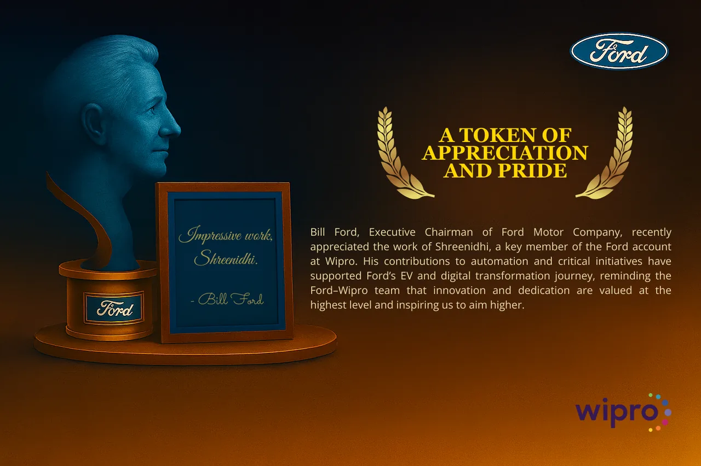

<title>Shreenidhi Doddathota</title>
<meta name="claude:viewport-fit-sides" content="cover">
<link rel="preconnect" href="https://fonts.googleapis.com">
<link rel="preconnect" href="https://fonts.gstatic.com" crossorigin>
<link rel="stylesheet" href="https://fonts.googleapis.com/css2?family=Google+Sans+Flex:opsz,wght,ROND@6..144,400..800,0..100&display=swap">
<link rel="stylesheet" href="https://fonts.googleapis.com/css2?family=Saira:wdth,wght@75..125,400..700&display=swap">
<link rel="stylesheet" href="https://fonts.googleapis.com/css2?family=Bricolage+Grotesque:opsz,wght@12..96,400..800&display=swap">
<link rel="stylesheet" href="https://fonts.googleapis.com/css2?family=Newsreader:ital,opsz,wght@0,6..72,400..700;1,6..72,400..700&display=swap">
<style>
/* Layout: a playful, Material-style product page. White canvas, Google Sans Flex, four bright accent colors,
   rounded tonal cards on a strict equal-height grid, soft geometric shapes, pictures for every result. Desktop first. */
:root {
  --bg: #FFFFFF;
  --surface: #FFFFFF;
  --raised: #FFFFFF;
  --container: #F0F4F9;
  --container-hi: #E4EAF3;
  --inset: #F0F4F9;
  --ink: #1F1F1F;
  --ink-2: #444746;
  --ink-3: #5F6368;
  --line: #DADCE0;
  --line-soft: #E8EAED;
  --primary: #2A4FD6;
  --primary-hover: #2140B0;
  --on-primary: #FFFFFF;
  --primary-container: #DDE4FF;
  --on-primary-container: #0A1A5C;
  --accent-text: #2A4FD6;
  --on-color: #FFFFFF;
  --blue: #3B66EE;
  --red: #EE5A3E;
  --yellow: #F6AE2D;
  --green: #22A06B;
  --t-blue: #E9EDFF;
  --t-red: #FDECE7;
  --t-yellow: #FFF4DC;
  --t-green: #E2F5EC;
  --illus-n: #BDC1C6;
  --illus-n2: #DADCE0;
  --illus-w: #FFFFFF;
  --hero-tint: #DDE3FF;
  --before: #94A9F5;
  --after: #2A4FD6;
  --on-before: #0A1A5C;
  --on-after: #FFFFFF;
  --track: #E3E8EF;
  --tip-bg: #1F1F1F;
  --tip-fg: #FFFFFF;
  --sh-1: 0 1px 2px rgba(60, 64, 67, 0.3), 0 1px 3px 1px rgba(60, 64, 67, 0.15);
  --sh-2: 0 1px 2px rgba(60, 64, 67, 0.3), 0 2px 6px 2px rgba(60, 64, 67, 0.15);
  --sh-3: 0 4px 8px 3px rgba(60, 64, 67, 0.15), 0 1px 3px rgba(60, 64, 67, 0.3);
  --hi: #B3261E;
  --med: #8C5000;
  --lo: #146C2E;
  --hi-bg: #FCE8E6;
  --med-bg: #FEF7E0;
  --lo-bg: #E6F4EA;
  --scrim: rgba(0, 0, 0, 0.8);
  /* Phone mockups stay light screens in both page themes */
  --bezel: #1F1F1F;
  --bezel-edge: #3C4043;
  --app-bg: #F2F2F7;
  --app-card: #FFFFFF;
  --app-ink: #111114;
  --app-ink-2: #6B6B73;
  --app-hair: #E3E3E8;
  --app-accent: #0A66E0;
  --app-accent-ink: #FFFFFF;
  --app-fit: #0A66E0;
  --app-two: #C25E00;
  --app-no: #AEAEB2;
  --app-occ: #E5E5EA;
  --wf-bg: #FAFAFB;
  --wf-line: #C9C9CF;
  --wf-block: #E4E4E9;
  --wf-ink: #55555C;
  --font: "Google Sans Flex", "Google Sans", Roboto, ui-sans-serif, system-ui, -apple-system, "Segoe UI", Arial, sans-serif;
  --display: var(--font);
  --maxw: 1240px;
  --gutter: 20px;
  --nav-h: 68px;
}
@media (min-width: 760px) { :root { --gutter: 40px; } }
@media (prefers-color-scheme: dark) {
  :root:not([data-theme="light"]) {
    --bg: #131314;
    --surface: #1E1F20;
    --raised: #282A2C;
    --container: #1E1F20;
    --container-hi: #2D2F31;
    --inset: #333537;
    --ink: #E3E3E3;
    --ink-2: #C4C7C5;
    --ink-3: #9AA0A6;
    --line: #3C4043;
    --line-soft: #2D2F31;
    --primary: #B4C3FF;
    --primary-hover: #C9D4FF;
    --on-primary: #0B1F66;
    --primary-container: #273E9E;
    --on-primary-container: #DDE4FF;
    --accent-text: #B4C3FF;
    --on-color: #131314;
    --blue: #8FA8FF;
    --red: #F79079;
    --yellow: #F8C766;
    --green: #6FCBA0;
    --t-blue: #1B2148;
    --t-red: #3B2019;
    --t-yellow: #342912;
    --t-green: #12291F;
    --illus-n: #5F6368;
    --illus-n2: #3C4043;
    --illus-w: #2D2F31;
    --hero-tint: #23306A;
    --before: #5068CC;
    --after: #BCC8FF;
    --on-before: #FFFFFF;
    --on-after: #0B1E3F;
    --track: #3C4043;
    --tip-bg: #E3E3E3;
    --tip-fg: #131314;
    --sh-1: 0 1px 2px rgba(0, 0, 0, 0.5), 0 1px 3px 1px rgba(0, 0, 0, 0.3);
    --sh-2: 0 1px 2px rgba(0, 0, 0, 0.5), 0 2px 6px 2px rgba(0, 0, 0, 0.3);
    --sh-3: 0 4px 8px 3px rgba(0, 0, 0, 0.35), 0 1px 3px rgba(0, 0, 0, 0.5);
    --hi: #F2B8B5;
    --med: #FDD663;
    --lo: #81C995;
    --hi-bg: #3A1E1C;
    --med-bg: #322A12;
    --lo-bg: #15291D;
    color-scheme: dark;
  }
}
:root[data-theme="dark"] {
  --bg: #131314;
  --surface: #1E1F20;
  --raised: #282A2C;
  --container: #1E1F20;
  --container-hi: #2D2F31;
  --inset: #333537;
  --ink: #E3E3E3;
  --ink-2: #C4C7C5;
  --ink-3: #9AA0A6;
  --line: #3C4043;
  --line-soft: #2D2F31;
  --primary: #B4C3FF;
  --primary-hover: #C9D4FF;
  --on-primary: #0B1F66;
  --primary-container: #273E9E;
  --on-primary-container: #DDE4FF;
  --accent-text: #B4C3FF;
  --on-color: #131314;
  --blue: #8FA8FF;
  --red: #F79079;
  --yellow: #F8C766;
  --green: #6FCBA0;
  --t-blue: #1B2148;
  --t-red: #3B2019;
  --t-yellow: #342912;
  --t-green: #12291F;
  --illus-n: #5F6368;
  --illus-n2: #3C4043;
  --illus-w: #2D2F31;
  --hero-tint: #23306A;
  --before: #5068CC;
  --after: #BCC8FF;
  --on-before: #FFFFFF;
  --on-after: #0B1E3F;
  --track: #3C4043;
  --tip-bg: #E3E3E3;
  --tip-fg: #131314;
  --sh-1: 0 1px 2px rgba(0, 0, 0, 0.5), 0 1px 3px 1px rgba(0, 0, 0, 0.3);
  --sh-2: 0 1px 2px rgba(0, 0, 0, 0.5), 0 2px 6px 2px rgba(0, 0, 0, 0.3);
  --sh-3: 0 4px 8px 3px rgba(0, 0, 0, 0.35), 0 1px 3px rgba(0, 0, 0, 0.5);
  --hi: #F2B8B5;
  --med: #FDD663;
  --lo: #81C995;
  --hi-bg: #3A1E1C;
  --med-bg: #322A12;
  --lo-bg: #15291D;
  color-scheme: dark;
}

/* Case study themes: a case view sets data-view on the root, and the whole page takes its palette */
:root[data-view="auto"] {
  --bg: #0B0D10;
  --surface: #12161B;
  --raised: #181D23;
  --container: #0F1317;
  --container-hi: #1C2229;
  --inset: #1E252D;
  --ink: #EEF2F5;
  --ink-2: #B3BCC5;
  --ink-3: #8993A0;
  --line: #29313A;
  --line-soft: #1C232A;
  --primary: #4FD8EE;
  --primary-hover: #7FE4F4;
  --on-primary: #04161B;
  --primary-container: #133C46;
  --on-primary-container: #C2F4FB;
  --accent-text: #6FDDF0;
  --on-color: #0B0D10;
  --blue: #4FD8EE;
  --red: #FF6B6B;
  --yellow: #F8B84E;
  --green: #5EDB8F;
  --t-blue: #0F262C;
  --t-red: #2A1517;
  --t-yellow: #2A2114;
  --t-green: #10251A;
  --illus-n: #4A545F;
  --illus-n2: #29313A;
  --illus-w: #1C2229;
  --hero-tint: #12343C;
  --before: #2A8597;
  --after: #69DDF0;
  --on-before: #FFFFFF;
  --on-after: #04161B;
  --track: #29313A;
  --tip-bg: #EEF2F5;
  --tip-fg: #0B0D10;
  --sh-1: 0 1px 2px rgba(0, 0, 0, 0.6), 0 1px 3px 1px rgba(0, 0, 0, 0.35);
  --sh-2: 0 1px 2px rgba(0, 0, 0, 0.6), 0 2px 6px 2px rgba(0, 0, 0, 0.35);
  --sh-3: 0 4px 8px 3px rgba(0, 0, 0, 0.4), 0 1px 3px rgba(0, 0, 0, 0.6);
  --hi: #FF8F87;
  --med: #F8C46A;
  --lo: #6EE7A0;
  --hi-bg: #2E1718;
  --med-bg: #2B2314;
  --lo-bg: #10261A;
  --display: "Saira", var(--font);
  color-scheme: dark;
}
:root[data-view="music"] {
  --bg: #100C15;
  --surface: #19141F;
  --raised: #211A29;
  --container: #15111B;
  --container-hi: #261E30;
  --inset: #2A2234;
  --ink: #F5EFF9;
  --ink-2: #C8BDD3;
  --ink-3: #9A8FA8;
  --line: #352C40;
  --line-soft: #241D2C;
  --primary: #FF6B9D;
  --primary-hover: #FF8DB4;
  --on-primary: #23060F;
  --primary-container: #4A1A2E;
  --on-primary-container: #FFD3E2;
  --accent-text: #FF8DB4;
  --on-color: #100C15;
  --blue: #8E9BFF;
  --red: #FF7A7A;
  --yellow: #FFC15E;
  --green: #5FE0B7;
  --t-blue: #1C1C38;
  --t-red: #2E1620;
  --t-yellow: #2C2215;
  --t-green: #12282A;
  --illus-n: #5A5066;
  --illus-n2: #352C40;
  --illus-w: #261E30;
  --hero-tint: #3A1830;
  --before: #8A3A5C;
  --after: #E9558A;
  --on-before: #FFFFFF;
  --on-after: #14060C;
  --seg-mute: #6A6076;
  --track: #352C40;
  --tip-bg: #F5EFF9;
  --tip-fg: #100C15;
  --sh-1: 0 1px 2px rgba(0, 0, 0, 0.6), 0 1px 3px 1px rgba(0, 0, 0, 0.35);
  --sh-2: 0 1px 2px rgba(0, 0, 0, 0.6), 0 2px 6px 2px rgba(0, 0, 0, 0.35);
  --sh-3: 0 4px 8px 3px rgba(0, 0, 0, 0.4), 0 1px 3px rgba(0, 0, 0, 0.6);
  --hi: #FF8F9F;
  --med: #FFC977;
  --lo: #74E6C2;
  --hi-bg: #33151F;
  --med-bg: #2E2416;
  --lo-bg: #13292A;
  --display: "Bricolage Grotesque", var(--font);
  color-scheme: dark;
}

:root[data-view="paper"] {
  --bg: #F7F5F0;
  --surface: #FFFFFF;
  --raised: #FFFFFF;
  --container: #EFECE4;
  --container-hi: #E6E2D7;
  --inset: #F3F0E8;
  --ink: #1B1A17;
  --ink-2: #4A473F;
  --ink-3: #6B675D;
  --line: #DCD7CB;
  --line-soft: #E9E5DB;
  --primary: #17603F;
  --primary-hover: #0F4A30;
  --on-primary: #FFFFFF;
  --primary-container: #DCEEE3;
  --on-primary-container: #0B3A24;
  --accent-text: #17603F;
  --on-color: #FFFFFF;
  --blue: #2563EB;
  --red: #C2410C;
  --yellow: #D99A1E;
  --green: #1F7A50;
  --t-blue: #E7EEFB;
  --t-red: #F8E6DD;
  --t-yellow: #FBF1D9;
  --t-green: #E1F0E7;
  --illus-n: #B5AFA2;
  --illus-n2: #DCD7CB;
  --illus-w: #FFFFFF;
  --hero-tint: #E9E4D6;
  --before: #7DB897;
  --after: #1F6B4A;
  --on-before: #0B3A24;
  --on-after: #FFFFFF;
  --track: #E3DED2;
  --tip-bg: #1B1A17;
  --tip-fg: #FFFFFF;
  --sh-1: 0 1px 2px rgba(60, 50, 30, 0.18), 0 1px 3px 1px rgba(60, 50, 30, 0.08);
  --sh-2: 0 1px 2px rgba(60, 50, 30, 0.18), 0 2px 6px 2px rgba(60, 50, 30, 0.08);
  --sh-3: 0 4px 8px 3px rgba(60, 50, 30, 0.1), 0 1px 3px rgba(60, 50, 30, 0.18);
  --hi: #A8321F;
  --med: #8A5A00;
  --lo: #17603F;
  --hi-bg: #F8E6DD;
  --med-bg: #FBF1D9;
  --lo-bg: #E1F0E7;
  --display: "Newsreader", Georgia, "Times New Roman", serif;
  color-scheme: light;
}

*, *::before, *::after { box-sizing: border-box; }
html { scroll-behavior: smooth; -webkit-text-size-adjust: 100%; }
@media (prefers-reduced-motion: reduce) { html { scroll-behavior: auto; } }
body { margin: 0; background: var(--bg); color: var(--ink); font-family: var(--font); font-size: 1.0625rem; line-height: 1.6; -webkit-font-smoothing: antialiased; -moz-osx-font-smoothing: grayscale; overflow-x: clip; }
body::before { content: ""; position: fixed; inset: 0 0 auto; height: env(safe-area-inset-top, 0px); z-index: 60; background: var(--bg); }
h1, h2, h3, h4, p, figure, dl, dd { margin: 0; }
[hidden] { display: none !important; }
a { color: inherit; }
i { font-style: normal; }
::selection { background: var(--primary-container); color: var(--on-primary-container); }
:focus-visible { outline: 2px solid var(--primary); outline-offset: 3px; border-radius: 8px; }
[id] { scroll-margin-top: calc(var(--nav-h) + 16px + env(safe-area-inset-top, 0px)); }
.sr { position: absolute; width: 1px; height: 1px; overflow: hidden; clip: rect(0 0 0 0); clip-path: inset(50%); white-space: nowrap; }
.sprite { position: absolute; width: 0; height: 0; overflow: hidden; }
.nw { white-space: nowrap; }
.wrap { width: 100%; max-width: calc(var(--maxw) + 2 * var(--gutter)); margin-inline: auto; padding-left: max(var(--gutter), env(safe-area-inset-left, 0px)); padding-right: max(var(--gutter), env(safe-area-inset-right, 0px)); }

/* Nav */
.nav { position: sticky; top: env(safe-area-inset-top, 0px); z-index: 50; background: var(--bg); transition: box-shadow .2s ease; }
.nav.scrolled { box-shadow: 0 1px 0 var(--line), 0 2px 8px rgba(60, 64, 67, 0.08); }
.nav-in { display: flex; align-items: center; justify-content: space-between; gap: 16px; height: var(--nav-h); }
.brand { min-width: 0; display: inline-flex; align-items: center; gap: 12px; color: var(--ink); font-size: 1.125rem; font-weight: 500; text-decoration: none; white-space: nowrap; }
.brand img { flex: none; width: 38px; height: 38px; border-radius: 50%; object-fit: cover; box-shadow: 0 0 0 2px var(--bg), 0 0 0 4px var(--primary-container); }
.brand span { min-width: 0; overflow: hidden; text-overflow: ellipsis; }
.brand .bn-short { display: none; }
@media (max-width: 560px) { .brand .bn-full { display: none; } .brand .bn-short { display: inline; } }
.nav-links { display: flex; align-items: center; gap: 2px; }
.nav-links > a:not(.btn), .nav-links > button { display: inline-flex; align-items: center; height: 40px; padding: 0 16px; border: 0; border-radius: 999px; background: none; color: var(--ink-2); font: 500 .9375rem/1 var(--font); text-decoration: none; white-space: nowrap; cursor: pointer; transition: background-color .15s ease, color .15s ease; }
.nav-links > a:not(.btn):hover, .nav-links > button:hover { background: var(--container); color: var(--ink); }
.nav-links .btn { height: 40px; margin-left: 10px; padding: 0 20px; }
@media (max-width: 1000px) { .nav .nav-links .opt { display: none; } }
@media (max-width: 560px) { .nav .nav-links .opt2 { display: none; } .nav-links .btn { margin-left: 4px; padding: 0 16px; } }
@media (max-width: 420px) { #nav-stall .btn, #nav-otr .btn, #nav-syw .btn { display: none; } }

/* Type and buttons */
.kicker { color: var(--accent-text); font-size: 1rem; font-weight: 500; letter-spacing: .01em; }
.h2 { max-width: 24ch; margin-top: 10px; color: var(--ink); font-size: clamp(2.25rem, 1.3rem + 2.2vw, 3.5rem); font-weight: 500; line-height: 1.1; letter-spacing: -0.02em; text-wrap: balance; font-variation-settings: "ROND" 50; }
.lead { max-width: 40em; margin-top: 16px; color: var(--ink-2); font-size: clamp(1.0625rem, 1rem + .3vw, 1.25rem); line-height: 1.6; }
.lead b { color: var(--ink); font-weight: 600; }
.sec { padding-block: clamp(64px, 7.5vw, 112px); }
.sec-head { margin-bottom: clamp(36px, 4.2vw, 56px); }
.sec-head.center { display: flex; flex-direction: column; align-items: center; text-align: center; }
.txt { color: var(--ink-2); }
.cite { font-size: .8125rem; color: var(--ink-3); }
.cite a { color: var(--accent-text); text-decoration: none; }
.cite a:hover { text-decoration: underline; }
.fine { font-size: .8125rem; color: var(--ink-3); }
.btn { display: inline-flex; align-items: center; justify-content: center; gap: 8px; height: 48px; padding: 0 24px; border: 0; border-radius: 999px; background: var(--primary); color: var(--on-primary); font: 500 1rem/1 var(--font); letter-spacing: .01em; text-decoration: none; white-space: nowrap; cursor: pointer; transition: background-color .2s ease, box-shadow .2s ease, color .2s ease; }
.btn:hover { background: var(--primary-hover); box-shadow: var(--sh-1); }
.btn svg { flex: none; width: 20px; height: 20px; fill: currentColor; }
.btn.tonal { background: var(--primary-container); color: var(--on-primary-container); }
.btn.tonal:hover { box-shadow: var(--sh-1); background: var(--primary-container); }
.btn.outline { background: transparent; color: var(--accent-text); box-shadow: inset 0 0 0 1px var(--line); }
.btn.outline:hover { background: var(--container); box-shadow: inset 0 0 0 1px var(--line); }
.btn.text { padding: 0 14px; background: transparent; color: var(--accent-text); }
.btn.text:hover { background: var(--container); box-shadow: none; }
.link { display: inline-flex; align-items: center; gap: 4px; color: var(--accent-text); font-weight: 500; text-decoration: none; }
.link::after { content: ""; flex: none; width: 7px; height: 7px; margin-left: 4px; border-top: 2px solid currentColor; border-right: 2px solid currentColor; transform: rotate(45deg); transition: transform .15s ease; }
.link:hover::after { transform: translateX(3px) rotate(45deg); }
.card { min-width: 0; padding: 28px; border-radius: 28px; background: var(--surface); box-shadow: inset 0 0 0 1px var(--line); }
.alt .card, .panel .card { background: var(--raised); box-shadow: none; }
.alt { background: var(--container); }
.panel { position: relative; border-radius: 40px; padding: clamp(32px, 4.6vw, 64px); }
.p-container { background: var(--container); }
.p-yellow { background: var(--t-yellow); }
.grid2 { display: grid; grid-template-columns: repeat(2, minmax(0, 1fr)); gap: 20px; }
.grid3 { display: grid; grid-template-columns: repeat(3, minmax(0, 1fr)); gap: 20px; }
.grid4 { display: grid; grid-template-columns: repeat(4, minmax(0, 1fr)); gap: 20px; }
@media (max-width: 1000px) { .grid4 { grid-template-columns: repeat(2, minmax(0, 1fr)); } .grid3 { grid-template-columns: minmax(0, 1fr); } }
@media (max-width: 680px) { .grid2, .grid4 { grid-template-columns: minmax(0, 1fr); } }
.stack { display: flex; flex-direction: column; gap: 10px; }

/* Illustration paint */
.illus { font-family: var(--font); }
.f-b { fill: var(--blue); } .f-r { fill: var(--red); } .f-y { fill: var(--yellow); } .f-g { fill: var(--green); }
.f-n { fill: var(--illus-n); } .f-n2 { fill: var(--illus-n2); } .f-w { fill: var(--illus-w); } .f-ink { fill: var(--ink); } .f-ink2 { fill: var(--ink-2); }
.f-dark { fill: #1F1F1F; } .f-tint { fill: var(--hero-tint); }
.s-n { stroke: var(--illus-n); } .s-ink { stroke: var(--ink); } .s-w { stroke: var(--illus-w); } .s-g { stroke: var(--green); } .s-b { stroke: var(--blue); }
.c-blue { background: var(--blue); color: var(--on-color); }
.c-red { background: var(--red); color: var(--on-color); }
.c-yellow { background: var(--yellow); color: #1F1F1F; }
.c-green { background: var(--green); color: var(--on-color); }
.t-blue { background: var(--t-blue); } .t-red { background: var(--t-red); } .t-yellow { background: var(--t-yellow); } .t-green { background: var(--t-green); }

/* Hero */
.hero { padding-block: clamp(28px, 3.6vw, 52px) clamp(56px, 6vw, 88px); }
.hero-grid { display: grid; grid-template-columns: minmax(0, 1.2fr) minmax(0, .8fr); gap: 40px; align-items: center; }
@media (max-width: 960px) { .hero-grid { grid-template-columns: minmax(0, 1fr); } }
.chip-status { display: inline-flex; align-items: center; gap: 10px; min-height: 36px; padding: 6px 16px 6px 14px; border-radius: 8px; box-shadow: inset 0 0 0 1px var(--line); color: var(--ink); font-size: .9375rem; font-weight: 500; line-height: 1.35; text-decoration: none; transition: background-color .15s ease; }
.chip-status:hover { background: var(--container); }
.chip-status .dot { flex: none; width: 10px; height: 10px; border-radius: 50%; background: var(--green); box-shadow: 0 0 0 4px var(--t-green); }
h1 { margin-top: 24px; color: var(--ink); font-size: clamp(2.9rem, 1.5rem + 3.4vw, 4.6rem); font-weight: 500; line-height: 1.04; letter-spacing: -0.025em; text-wrap: balance; font-variation-settings: "ROND" 50; }
h1 .hl { color: var(--primary); }
.hero-sub { max-width: 33em; margin-top: 24px; color: var(--ink-2); font-size: clamp(1.0625rem, 1rem + .35vw, 1.25rem); line-height: 1.6; }
.cta { margin-top: 32px; display: flex; flex-wrap: wrap; gap: 12px; }
.hero-stats { list-style: none; margin: 40px 0 0; padding: 0; display: grid; grid-template-columns: repeat(3, minmax(0, 1fr)); gap: 12px; max-width: 720px; }
@media (max-width: 600px) { .hero-stats { grid-template-columns: minmax(0, 1fr); } }
.hero-stats li { display: grid; grid-template-columns: 40px minmax(0, 1fr); column-gap: 12px; align-items: start; align-content: start; padding: 14px; border-radius: 18px; background: var(--container); }
.hero-stats .ic { grid-row: span 2; display: grid; place-items: center; width: 40px; height: 40px; border-radius: 50%; }
.hero-stats .ic svg { width: 22px; height: 22px; fill: currentColor; }
.hero-stats b { color: var(--ink); font-size: 1.125rem; font-weight: 600; line-height: 1.25; }
.hero-stats span:not(.ic) { margin-top: 2px; color: var(--ink-2); font-size: .8125rem; line-height: 1.35; }
@media (min-width: 601px) and (max-width: 1180px) { .hero-stats li { grid-template-columns: minmax(0, 1fr); row-gap: 10px; } .hero-stats .ic { grid-row: auto; } .hero-stats span:not(.ic) { margin-top: -6px; } }
.hero-art { position: relative; width: 100%; max-width: 520px; justify-self: end; }
@media (max-width: 960px) { .hero-art { max-width: 400px; justify-self: center; order: -1; } }
.hero-svg { display: block; width: 100%; height: auto; overflow: visible; }
.spin, .fl { transform-box: fill-box; transform-origin: center; }
.spin { animation: spin 90s linear infinite; }
.fl.a { animation: floaty 7s ease-in-out infinite; }
.fl.b { animation: floaty 9s ease-in-out -3s infinite; }
.fl.c { animation: floaty 8s ease-in-out -5s infinite; }
.fl.d { animation: floaty 10s ease-in-out -1s infinite; }
@keyframes floaty { 0%, 100% { transform: translateY(0); } 50% { transform: translateY(-10px); } }
@keyframes spin { to { transform: rotate(360deg); } }
@media (prefers-reduced-motion: reduce) { .spin, .fl.a, .fl.b, .fl.c, .fl.d { animation: none; } }
.hero-badge { position: absolute; left: 0; right: 0; bottom: 2%; width: fit-content; max-width: 100%; margin-inline: auto; display: inline-flex; align-items: center; gap: 10px; padding: 8px 18px 8px 8px; border-radius: 999px; background: var(--raised); box-shadow: var(--sh-2); color: var(--ink); font-size: .9375rem; font-weight: 500; white-space: nowrap; }
.hero-badge .star { flex: none; display: grid; place-items: center; width: 32px; height: 32px; border-radius: 50%; background: var(--yellow); }
.hero-badge .star svg { width: 18px; height: 18px; fill: #1F1F1F; }
.hero-badge .hb-t { min-width: 0; }
@media (max-width: 1180px) { .hero-badge { padding-right: 16px; border-radius: 24px; font-size: .875rem; line-height: 1.3; } .hero-badge .l1, .hero-badge .l2 { display: block; } }

/* Clients */
.client-grid { display: grid; grid-template-columns: repeat(3, minmax(0, 1fr)); gap: 24px; }
@media (max-width: 900px) { .client-grid { grid-template-columns: minmax(0, 1fr); } }
.client { min-width: 0; display: flex; flex-direction: column; gap: 18px; padding: 28px; border-radius: 28px; }
.client-top { display: flex; align-items: center; gap: 16px; }
.client-ic { flex: none; display: grid; place-items: center; width: 60px; height: 60px; border-radius: 20px; }
.client-ic svg { width: 32px; height: 32px; fill: currentColor; }
.client h3 { color: var(--ink); font-size: 1.75rem; font-weight: 500; line-height: 1.1; letter-spacing: -0.01em; font-variation-settings: "ROND" 50; }
.client .when { margin-top: 4px; color: var(--ink-2); font-size: .875rem; }
.client .what { color: var(--ink); font-size: 1.0625rem; line-height: 1.5; }
.client .stat { margin-top: auto; padding-top: 18px; border-top: 1px solid var(--line); }
.client .stat b { display: block; color: var(--ink); font-size: 2rem; font-weight: 500; line-height: 1.1; letter-spacing: -0.02em; font-variation-settings: "ROND" 50; }
.client .stat span { display: block; margin-top: 4px; color: var(--ink-2); font-size: .9375rem; }

/* At a glance */
.bento { display: grid; grid-template-columns: repeat(4, minmax(0, 1fr)); gap: 20px; }
@media (max-width: 1100px) { .bento { grid-template-columns: repeat(2, minmax(0, 1fr)); } }
@media (max-width: 600px) { .bento { grid-template-columns: minmax(0, 1fr); } }
.tile { min-width: 0; display: flex; flex-direction: column; padding: 18px 20px 20px; border-radius: 28px; color: var(--ink); text-decoration: none; transition: transform .3s cubic-bezier(.2, .8, .2, 1), box-shadow .3s ease; }
.tile:hover { transform: translateY(-4px); box-shadow: var(--sh-2); }
@media (prefers-reduced-motion: reduce) { .tile, .tile:hover { transition: none; transform: none; } }
.tile .illus { display: block; width: 100%; height: auto; margin-bottom: 16px; }
.t-num { color: var(--ink); font-size: 2rem; font-weight: 500; line-height: 1.1; letter-spacing: -0.02em; font-variation-settings: "ROND" 50; }
.t-cap { margin-top: 8px; color: var(--ink); font-size: 1rem; line-height: 1.45; }
.t-src { margin-top: auto; padding-top: 16px; display: flex; align-items: center; justify-content: space-between; gap: 8px; color: var(--ink-2); font-size: .875rem; }
.t-src svg { flex: none; width: 20px; height: 20px; fill: currentColor; transition: transform .2s ease; }
.tile:hover .t-src svg { transform: translateX(4px); }

/* Recognition */
.cert-card { margin: 0; display: grid; grid-template-columns: minmax(0, 1.1fr) minmax(0, 1fr); gap: clamp(28px, 4vw, 56px); align-items: center; padding: clamp(24px, 3vw, 36px); border-radius: 32px; background: var(--container); }
@media (max-width: 860px) { .cert-card { grid-template-columns: minmax(0, 1fr); } }
.cert-thumb { display: block; width: 100%; padding: 0; overflow: hidden; border: 0; border-radius: 20px; background: transparent; cursor: zoom-in; box-shadow: var(--sh-2); }
.cert-thumb img { display: block; width: 100%; height: auto; transition: transform .5s ease; }
.cert-thumb:hover img { transform: scale(1.03); }
@media (prefers-reduced-motion: reduce) { .cert-thumb img { transition: none; } .cert-thumb:hover img { transform: none; } }
.cert-cap { display: flex; flex-direction: column; align-items: flex-start; gap: 14px; }
.cert-title { color: var(--ink); font-size: clamp(1.75rem, 1.2rem + 1.3vw, 2.5rem); font-weight: 500; line-height: 1.15; letter-spacing: -0.015em; text-wrap: balance; font-variation-settings: "ROND" 50; }
.cert-cap .txt { max-width: 36em; font-size: 1.0625rem; }
.cert-cap .btn { margin-top: 6px; }
.honor-grid { list-style: none; margin: 20px 0 0; padding: 0; display: grid; grid-template-columns: repeat(5, minmax(0, 1fr)); gap: 16px; }
.honor-grid li { min-width: 0; display: flex; flex-direction: column; gap: 6px; padding: 22px 20px 24px; border-radius: 24px; }
.honor-grid .ic { display: grid; place-items: center; width: 44px; height: 44px; margin-bottom: 10px; border-radius: 50%; }
.honor-grid .ic svg { width: 24px; height: 24px; fill: currentColor; }
.honor-grid b { min-height: 2.6em; color: var(--ink); font-size: 1.0625rem; font-weight: 600; line-height: 1.3; }
.honor-grid span:not(.ic) { color: var(--ink-2); font-size: .875rem; line-height: 1.45; }
@media (max-width: 1100px) { .honor-grid { grid-template-columns: repeat(6, minmax(0, 1fr)); } .honor-grid li { grid-column: span 2; } .honor-grid li:nth-child(n+4) { grid-column: span 3; } .honor-grid b { min-height: 0; } }
@media (max-width: 640px) { .honor-grid { grid-template-columns: minmax(0, 1fr); } .honor-grid li, .honor-grid li:nth-child(n+4) { grid-column: auto; } .honor-grid b { min-height: 0; } }

/* Fit check */
.searchbox { max-width: 900px; margin-inline: auto; border-radius: 28px; background: var(--raised); box-shadow: var(--sh-1); transition: box-shadow .2s ease; }
.searchbox:hover, .searchbox:focus-within { box-shadow: var(--sh-3); }
.sb-top { display: flex; align-items: flex-start; gap: 14px; padding: 20px 24px 0; }
.sb-top svg { flex: none; width: 26px; height: 26px; margin-top: 2px; }
.searchbox textarea { flex: 1; min-width: 0; min-height: 118px; resize: vertical; padding: 2px 0 10px; border: 0; outline: 0; background: transparent; color: var(--ink); font: 400 1.0625rem/1.6 var(--font); }
.searchbox textarea::placeholder { color: var(--ink-3); }
.sb-foot { display: flex; flex-wrap: wrap; align-items: center; justify-content: space-between; gap: 12px; padding: 10px 12px 12px 24px; border-top: 1px solid var(--line-soft); }
.jd-note { color: var(--ink-3); font-size: .875rem; }
.jd-actions { display: flex; gap: 8px; }
.role-row { margin-top: 28px; display: flex; flex-direction: column; align-items: center; gap: 14px; }
.role-label { color: var(--ink-2); font-size: 1rem; font-weight: 500; }
.chips { display: flex; flex-wrap: wrap; justify-content: center; gap: 8px; }
.chip { display: inline-flex; align-items: center; gap: 8px; height: 36px; padding: 0 16px; border: 0; border-radius: 8px; background: var(--raised); box-shadow: inset 0 0 0 1px var(--line); color: var(--ink-2); font: 500 .9375rem/1 var(--font); cursor: pointer; transition: background-color .15s ease, color .15s ease; }
.chip:hover { background: var(--container-hi); }
.chip[aria-pressed="true"] { padding-left: 12px; background: var(--primary-container); box-shadow: none; color: var(--on-primary-container); }
.chip[aria-pressed="true"]::before { content: ""; width: 12px; height: 6px; margin-top: -4px; border-left: 2px solid currentColor; border-bottom: 2px solid currentColor; transform: rotate(-45deg); }
.fit-summary { max-width: 32ch; margin: clamp(48px, 5vw, 64px) auto 28px; color: var(--ink); font-size: clamp(1.6rem, 1.1rem + 1.4vw, 2.4rem); font-weight: 500; line-height: 1.2; letter-spacing: -0.015em; text-align: center; text-wrap: balance; font-variation-settings: "ROND" 50; }
.fit-summary .s2 { color: var(--accent-text); }
.bridges { display: grid; grid-template-columns: repeat(2, minmax(0, 1fr)); gap: 20px; margin-bottom: clamp(44px, 5vw, 60px); }
@media (min-width: 1000px) { .bridges[data-count="3"] { grid-template-columns: repeat(3, minmax(0, 1fr)); } }
@media (max-width: 760px) { .bridges { grid-template-columns: minmax(0, 1fr); } }
.br, .sk { min-width: 0; display: flex; flex-direction: column; gap: 10px; padding: 24px; border-radius: 24px; }
.br { background: var(--t-blue); }
.br-label { color: var(--ink); font-size: 1.125rem; font-weight: 500; }
.br-hits { display: flex; flex-wrap: wrap; align-items: center; gap: 6px; color: var(--ink-2); font-size: .8125rem; }
.br-hits span { padding: 2px 10px; border-radius: 8px; background: var(--raised); color: var(--accent-text); font-weight: 500; }
.br-extra { color: var(--ink-2); font-size: .8125rem; }
.num-row { display: flex; flex-wrap: wrap; align-items: baseline; gap: 4px 10px; }
.num-row b { color: var(--ink); font-size: clamp(1.9rem, 1.6rem + 1vw, 2.4rem); font-weight: 500; line-height: 1; letter-spacing: -0.02em; white-space: nowrap; }
.num-row span { color: var(--ink-2); font-size: .9375rem; }
.br-txt, .sk-ev { color: var(--ink-2); font-size: 1rem; }
.br .link { margin-top: auto; padding-top: 4px; }
.score-title { margin-bottom: 20px; color: var(--ink); font-size: 1.5rem; font-weight: 500; text-align: center; }
.score { list-style: none; margin: 0; padding: 0; display: grid; grid-template-columns: repeat(2, minmax(0, 1fr)); gap: 20px; }
@media (max-width: 760px) { .score { grid-template-columns: minmax(0, 1fr); } }
.score[data-collapsed="true"] > li:nth-child(n+5) { display: none; }
.sk { background: var(--surface); box-shadow: inset 0 0 0 1px var(--line); transition: box-shadow .25s ease, background-color .25s ease; }
.sk.on { box-shadow: inset 0 0 0 2px var(--primary); }
.sk-top { display: flex; flex-wrap: wrap; align-items: center; justify-content: space-between; gap: 8px 12px; }
.sk h4 { color: var(--ink); font-size: 1.125rem; font-weight: 500; }
.sk-tag { padding: 4px 10px; border-radius: 8px; background: var(--primary-container); color: var(--on-primary-container); font-size: .75rem; font-weight: 500; white-space: nowrap; }
.sk-hits { color: var(--accent-text); font-size: .8125rem; font-weight: 500; }
.sk-src { margin-top: auto; padding-top: 4px; display: flex; flex-wrap: wrap; align-items: baseline; gap: 4px 14px; color: var(--ink-3); font-size: .875rem; }
.sk-src .link { font-size: .875rem; }
.fit-copy { margin-top: 28px; display: flex; flex-wrap: wrap; justify-content: center; align-items: center; gap: 10px 14px; }
.copy-status { color: var(--ink-2); font-size: .875rem; }
.summary-fallback { max-width: 900px; margin: 14px auto 0; padding: 16px; border-radius: 16px; background: var(--container); color: var(--ink); font: 400 .875rem/1.55 var(--font); white-space: pre-wrap; overflow-wrap: anywhere; }

/* Charts */
.chart { margin: 0; display: flex; flex-direction: column; gap: 16px; }
.chart-head h3, .fig-head h4 { color: var(--ink); font-size: 1.375rem; font-weight: 500; line-height: 1.25; }
.fig-head h4 { font-size: 1.25rem; }
.chart-head p, .fig-head p { margin-top: 4px; color: var(--ink-2); font-size: .9375rem; }
.legend { display: flex; flex-wrap: wrap; gap: 6px 18px; color: var(--ink-2); font-size: .875rem; }
.legend span { display: inline-flex; align-items: center; gap: 8px; }
.key { display: inline-block; flex: none; width: 10px; height: 10px; border-radius: 50%; }
.key.sq { border-radius: 3px; }
.key-before { background: var(--before); }
.key-after { background: var(--after); }
.key-track { background: var(--track); }
.perspective { color: var(--ink); font-size: 1.0625rem; line-height: 1.45; }
.perspective b { font-weight: 600; }
.tbl summary { display: inline-flex; align-items: center; gap: 6px; min-height: 32px; color: var(--accent-text); font-size: .9375rem; font-weight: 500; list-style: none; cursor: pointer; }
.tbl summary::-webkit-details-marker { display: none; }
.tbl summary::after { content: ""; width: 6px; height: 6px; margin-left: 4px; border-top: 2px solid currentColor; border-right: 2px solid currentColor; transform: rotate(45deg); transition: transform .2s ease; }
.tbl[open] summary::after { transform: rotate(135deg); }
.tbl-scroll, .tscroll { overflow-x: auto; }
.tbl-scroll { margin-top: 6px; }
.tbl table { width: 100%; border-collapse: collapse; font-size: .875rem; line-height: 1.4; }
.tbl th, .tbl td { padding: 9px 12px 9px 0; border-bottom: 1px solid var(--line-soft); text-align: left; vertical-align: top; }
.tbl th { color: var(--ink-3); font-size: .75rem; font-weight: 500; white-space: nowrap; }
.tbl td.n { font-variant-numeric: tabular-nums; white-space: nowrap; }
.tip { position: fixed; z-index: 70; max-width: 260px; display: grid; gap: 2px; padding: 10px 12px; border-radius: 10px; background: var(--tip-bg); color: var(--tip-fg); font-size: .8125rem; line-height: 1.4; pointer-events: none; box-shadow: var(--sh-2); }
.tip strong { font-size: .9375rem; font-weight: 600; }
.impact-grid { display: grid; grid-template-columns: minmax(0, 1.55fr) minmax(0, 1fr); gap: 24px; align-items: stretch; }
@media (max-width: 1100px) { .impact-grid { grid-template-columns: minmax(0, 1fr); } }
.db-row, .db-axis { display: grid; grid-template-columns: minmax(0, 11.5rem) minmax(0, 1fr) 3.4rem; column-gap: 16px; }
.db-row { align-items: center; min-height: 56px; border-radius: 12px; cursor: default; }
.db-row:hover, .db-row:focus-visible { background: var(--inset); }
.db-label { padding: 6px 0 6px 10px; color: var(--ink); font-size: .9375rem; line-height: 1.3; }
.db-label span { display: block; margin-top: 2px; color: var(--ink-3); font-size: .75rem; }
.db-track { position: relative; align-self: stretch; margin-inline: 7px; background-image: linear-gradient(to right, var(--line-soft) 1px, transparent 1px); background-size: 25% 100%; box-shadow: inset -1px 0 0 var(--line-soft); }
.db-line { position: absolute; top: 50%; height: 2px; margin-top: -1px; border-radius: 1px; background: var(--before); }
.db-dot { position: absolute; top: 50%; width: 12px; height: 12px; margin: -6px 0 0 -6px; border-radius: 50%; box-shadow: 0 0 0 2px var(--surface); }
.db-dot.b { background: var(--before); }
.db-dot.a { background: var(--after); }
.db-val { padding-right: 10px; color: var(--ink); font-size: 1rem; font-weight: 600; text-align: right; font-variant-numeric: tabular-nums; }
.db-axis { padding-top: 8px; }
.db-ticks { position: relative; height: 18px; margin-inline: 7px; }
.db-ticks span { position: absolute; top: 0; transform: translateX(-50%); color: var(--ink-3); font-size: .75rem; font-variant-numeric: tabular-nums; }
@media (max-width: 600px) {
  .db-row { grid-template-columns: minmax(0, 1fr) auto; grid-template-areas: "label val" "track track"; min-height: 0; padding-bottom: 10px; }
  .db-label { grid-area: label; }
  .db-val { grid-area: val; }
  .db-track { grid-area: track; height: 22px; background-image: none; box-shadow: none; }
  .db-axis { grid-template-columns: minmax(0, 1fr); }
  .db-axis > span { display: none; }
}
.units { flex: 1; display: grid; gap: 22px; align-content: space-between; }
.u-row { display: grid; grid-template-columns: minmax(0, 1fr) auto; gap: 8px 20px; align-items: start; border-radius: 12px; cursor: default; }
.u-row:hover .u-squares i, .u-row:focus-visible .u-squares i { filter: brightness(1.15); }
.u-label { min-width: 0; display: grid; gap: 2px; }
.u-label b { color: var(--ink); font-size: 1.25rem; font-weight: 600; line-height: 1.15; }
.u-label span { color: var(--ink-2); font-size: .875rem; line-height: 1.4; }
.u-squares { display: grid; grid-template-columns: repeat(10, 16px); gap: 4px; padding-top: 4px; }
.u-squares i { width: 16px; height: 16px; border-radius: 5px; background: var(--after); }
.u-squares i.part { background: linear-gradient(to right, var(--after) calc(var(--p, .3) * 100%), var(--track) 0); }
@media (max-width: 420px) { .u-row { grid-template-columns: minmax(0, 1fr); } }

/* Work cases */
.case { display: grid; grid-template-columns: minmax(0, 1fr) minmax(0, 1.05fr); gap: clamp(28px, 4vw, 48px); align-items: stretch; padding: clamp(28px, 3.4vw, 44px); border-radius: 32px; background: var(--container); }
.case + .case { margin-top: 24px; }
@media (max-width: 1100px) { .case { grid-template-columns: minmax(0, 1fr); } }
.case-text { min-width: 0; }
.case-kick { display: inline-flex; align-items: center; gap: 10px; color: var(--ink-2); font-size: .9375rem; font-weight: 500; }
.case-kick .ic { display: grid; place-items: center; width: 32px; height: 32px; border-radius: 10px; }
.case-kick .ic svg { width: 18px; height: 18px; fill: currentColor; }
.case h3 { margin: 14px 0 20px; color: var(--ink); font-size: clamp(1.75rem, 1.3rem + 1.2vw, 2.25rem); font-weight: 500; line-height: 1.12; letter-spacing: -0.015em; text-wrap: balance; font-variation-settings: "ROND" 50; }
.case-out { display: flex; flex-wrap: wrap; gap: 14px 36px; margin-bottom: 24px; }
.case-out b { display: block; color: var(--ink); font-size: clamp(2.2rem, 1.8rem + 1.2vw, 2.9rem); font-weight: 500; line-height: 1; letter-spacing: -0.025em; }
.case-out span { display: block; margin-top: 6px; color: var(--ink-2); font-size: .9375rem; }
.case dl { display: grid; gap: 14px; }
.case dt { color: var(--ink); font-size: .9375rem; font-weight: 600; }
.case dd { max-width: 54ch; margin: 2px 0 0; color: var(--ink-2); }
.tags { list-style: none; margin: 22px 0 0; padding: 0; display: flex; flex-wrap: wrap; gap: 8px; }
.tags li { display: inline-flex; align-items: center; height: 32px; padding: 0 12px; border-radius: 8px; background: var(--raised); color: var(--ink-2); font-size: .875rem; font-weight: 500; }
.case-fig { min-width: 0; margin: 0; display: flex; flex-direction: column; justify-content: center; gap: 18px; padding: 32px; border-radius: 24px; background: var(--raised); }
.pipe { display: block; width: 100%; max-width: 480px; height: auto; }
.flow { display: flex; flex-wrap: wrap; align-items: center; gap: 6px 8px; color: var(--ink-2); font-size: .8125rem; }
.flow span { padding: 4px 10px; border-radius: 8px; background: var(--container); }
.flow i { color: var(--ink-3); }
.cal { display: grid; gap: 20px; }
.cal-row { display: grid; gap: 10px; }
.cal-lab { display: flex; align-items: center; gap: 8px; color: var(--ink-2); font-size: .9375rem; }
.cal-lab b { margin-left: 2px; color: var(--ink); font-size: 1.125rem; font-weight: 600; line-height: 1.2; }
.cal-cells { display: grid; grid-template-columns: repeat(15, minmax(0, 1fr)); gap: 5px; }
.cal-cells i { display: grid; place-items: center; aspect-ratio: 1; border-radius: 7px; background: var(--track); font: 500 .75rem/1 var(--font); }
.cal-cells i.before { background: var(--before); color: var(--on-before); }
.cal-cells i.after { background: var(--after); color: var(--on-after); }
@media (max-width: 520px) { .cal-cells { gap: 3px; } .cal-cells i { font-size: 0; border-radius: 3px; } }
.icon-wrap { display: grid; grid-template-columns: minmax(0, 18rem) minmax(0, 1fr); gap: 28px; align-items: center; }
@media (max-width: 520px) { .icon-wrap { grid-template-columns: minmax(0, 1fr); } }
.icons { display: grid; grid-template-columns: repeat(10, minmax(0, 1fr)); gap: 6px; width: 100%; max-width: 18rem; }
.icons i { aspect-ratio: 1; border-radius: 50%; background: var(--before); }
.icons i.hi { background: var(--after); }
.icon-side { display: grid; gap: 14px; align-content: center; }
.icon-side .legend { display: grid; gap: 6px; }
.tz { display: grid; gap: 16px; }
.tz-row { display: grid; grid-template-columns: 5.25rem minmax(0, 1fr); gap: 12px; align-items: center; }
.tz-lab { color: var(--ink); font-size: 1rem; line-height: 1.2; }
.tz-lab span { display: block; color: var(--ink-3); font-size: .75rem; }
.tz-track { position: relative; height: 26px; background-image: linear-gradient(to right, var(--line) 1px, transparent 1px); background-size: 25% 100%; box-shadow: inset -1px 0 0 var(--line); }
.tz-bar { position: absolute; top: 0; bottom: 0; border-radius: 7px; background: var(--after); cursor: default; transform-origin: left center; }
.tz-bar:hover, .tz-bar:focus-visible { filter: brightness(1.15); }
.tz-bar.cut-l { border-top-left-radius: 0; border-bottom-left-radius: 0; }
.tz-bar.cut-r { border-top-right-radius: 0; border-bottom-right-radius: 0; }
.tz-ticks { position: relative; height: 18px; }
.tz-ticks span { position: absolute; top: 0; transform: translateX(-50%); color: var(--ink-3); font-size: .6875rem; white-space: nowrap; }
.tz-ticks span:first-child { transform: none; }
.tz-ticks span:last-child { transform: translateX(-100%); }
.d3 { display: grid; grid-template-columns: repeat(3, minmax(0, 1fr)) auto; gap: 6px; align-items: center; }
.d3 span { display: grid; place-items: center; height: 40px; border-radius: 10px; background: var(--after); color: var(--on-after); font-size: .875rem; font-weight: 500; }
.d3 b { display: inline-flex; align-items: center; gap: 6px; height: 40px; margin-left: 4px; padding: 0 16px 0 12px; border-radius: 999px; background: var(--lo-bg); color: var(--lo); font-size: .9375rem; font-weight: 600; white-space: nowrap; }
.d3 b svg { width: 20px; height: 20px; fill: currentColor; }
@media (max-width: 420px) { .d3 { grid-template-columns: repeat(3, minmax(0, 1fr)); } .d3 b { grid-column: 1 / -1; justify-self: start; margin: 4px 0 0; } }
.suite-bar { display: flex; flex-wrap: wrap; align-items: center; justify-content: space-between; gap: 12px 16px; }
.seg { display: inline-flex; overflow: hidden; border-radius: 999px; box-shadow: inset 0 0 0 1px var(--line); }
.seg button { display: inline-flex; align-items: center; gap: 6px; height: 36px; padding: 0 18px; border: 0; background: transparent; color: var(--ink-2); font: 500 .875rem/1 var(--font); cursor: pointer; }
.seg button + button { box-shadow: inset 1px 0 0 var(--line); }
.seg button[aria-pressed="true"] { background: var(--primary-container); color: var(--on-primary-container); }
.suite-count { display: flex; align-items: baseline; gap: 8px; }
.suite-count b { color: var(--ink); font-size: 1.9rem; font-weight: 500; line-height: 1; font-variant-numeric: tabular-nums; }
.suite-count span { color: var(--ink-3); font-size: .8125rem; }
.suite svg { display: block; width: 100%; height: auto; }
.suite .cell { fill: var(--after); transition: fill .45s ease; }
.suite .cell.retired { fill: var(--track); }
.suite[data-view="before"] .cell, .suite[data-view="before"] .cell.retired { fill: var(--before); }
@media (prefers-reduced-motion: reduce) { .suite .cell { transition: none; } }

/* Product thinking and phone mockups */
.prod-top .card, .tldr .card { display: flex; flex-direction: column; gap: 8px; }
.k-label { display: inline-flex; align-items: center; gap: 8px; color: var(--accent-text); font-size: .9375rem; font-weight: 500; }
.prod-strip { margin-top: clamp(36px, 4.5vw, 52px); display: grid; grid-template-columns: repeat(3, minmax(0, 1fr)); gap: 20px; }
@media (max-width: 860px) { .prod-strip { grid-template-columns: minmax(0, 1fr); } }
.prod-strip div { padding: 20px 22px; border-radius: 20px; background: var(--raised); }
.prod-strip b { display: block; color: var(--ink); font-size: 1.1875rem; font-weight: 500; }
.prod-strip span { display: block; margin-top: 4px; color: var(--ink-2); font-size: .9375rem; line-height: 1.5; }
.prod-cta { margin-top: clamp(32px, 4vw, 44px); display: flex; flex-direction: column; align-items: center; gap: 12px; text-align: center; }
.phones { display: grid; gap: clamp(20px, 2.6vw, 32px); margin-top: clamp(36px, 5vw, 56px); }
.phones.n3 { grid-template-columns: repeat(3, minmax(0, 1fr)); }
.phones.n4 { grid-template-columns: repeat(4, minmax(0, 1fr)); }
@media (max-width: 1100px) { .phones.n4 { grid-template-columns: repeat(2, minmax(0, 1fr)); } }
@media (max-width: 1000px) { .phones.n3 { grid-template-columns: repeat(2, minmax(0, 1fr)); } }
@media (max-width: 560px) { .phones.n3, .phones.n4 { grid-template-columns: minmax(0, 1fr); } }
.shot { min-width: 0; margin: 0; display: flex; flex-direction: column; align-items: center; gap: 16px; }
.shot figcaption { max-width: 30ch; text-align: center; }
.shot figcaption b { display: block; color: var(--ink); font-size: 1.0625rem; font-weight: 500; }
.shot figcaption span { display: block; margin-top: 4px; color: var(--ink-2); font-size: .9375rem; line-height: 1.45; }
.shot figcaption span.pain { display: inline-flex; margin: 8px auto 0; padding: 3px 10px; border-radius: 8px; background: var(--hi-bg); color: var(--hi); font-size: .75rem; font-weight: 600; }
.phone { width: 100%; max-width: 262px; aspect-ratio: 9 / 18.6; padding: 9px; border-radius: 42px; background: var(--bezel); box-shadow: 0 0 0 1px var(--bezel-edge), var(--sh-3); }
.screen { position: relative; display: flex; flex-direction: column; height: 100%; overflow: hidden; border-radius: 34px; background: var(--app-bg); color: var(--app-ink); font-family: var(--font); font-size: 11px; line-height: 1.35; letter-spacing: -0.01em; }
.sbar { display: flex; justify-content: space-between; align-items: center; padding: 12px 22px 4px; font-size: 11px; font-weight: 600; }
.sbar i { display: inline-flex; gap: 3px; align-items: flex-end; }
.sbar i b { display: block; width: 3px; border-radius: 1px; background: var(--app-ink); }
.sbar i b:nth-child(1) { height: 4px; } .sbar i b:nth-child(2) { height: 6px; } .sbar i b:nth-child(3) { height: 8px; }
.sbar .bat { position: relative; width: 20px; height: 9px; margin-left: 4px; border: 1.5px solid var(--app-ink); border-radius: 3px; }
.sbar .bat::after { content: ""; position: absolute; inset: 1px 5px 1px 1px; border-radius: 1px; background: var(--app-ink); }
.ahead { display: flex; align-items: center; gap: 8px; padding: 6px 14px 8px; }
.ahead .back { color: var(--app-accent); font-size: 18px; line-height: 1; }
.ahead .t { font-size: 13px; font-weight: 700; letter-spacing: -0.02em; }
.ahead .s { color: var(--app-ink-2); font-size: 10px; }
.abody { flex: 1; display: flex; flex-direction: column; gap: 8px; min-height: 0; padding: 0 12px 14px; }
.achip { align-self: flex-start; display: inline-flex; align-items: center; gap: 5px; padding: 4px 8px; border-radius: 980px; background: var(--app-card); font-size: 10px; font-weight: 600; }
.achip .dot { width: 6px; height: 6px; border-radius: 50%; background: var(--app-accent); }
.acard { display: flex; flex-direction: column; gap: 4px; padding: 10px 11px; border-radius: 14px; background: var(--app-card); }
.acard .h { font-size: 12px; font-weight: 700; letter-spacing: -0.015em; }
.acard .p { color: var(--app-ink-2); font-size: 10px; }
.abtn { display: flex; align-items: center; justify-content: center; min-height: 30px; margin-top: 4px; border-radius: 980px; background: var(--app-accent); color: var(--app-accent-ink); font-size: 11px; font-weight: 600; }
.abtn.ghost { background: transparent; color: var(--app-accent); box-shadow: inset 0 0 0 1px var(--app-accent); }
.alink { color: var(--app-accent); font-size: 10px; text-align: center; }
.amap { padding: 6px; border-radius: 14px; background: var(--app-card); }
.amap svg { display: block; width: 100%; height: auto; }
.alegend { display: flex; flex-wrap: wrap; gap: 4px 9px; color: var(--app-ink-2); font-size: 9px; }
.alegend span { display: inline-flex; align-items: center; gap: 4px; }
.alegend i { display: inline-grid; place-items: center; width: 12px; height: 12px; border-radius: 3px; color: #FFFFFF; font-size: 8px; font-weight: 700; }
.k-fit { background: var(--app-fit); } .k-two { background: var(--app-two); } .k-no { background: var(--app-no); } .k-occ { background: var(--app-occ); box-shadow: inset 0 0 0 1px var(--app-hair); }
.checks { display: flex; flex-direction: column; gap: 7px; }
.checks div { display: flex; gap: 8px; align-items: flex-start; font-size: 10.5px; }
.checks .c { flex: none; display: grid; place-items: center; width: 15px; height: 15px; border-radius: 50%; box-shadow: inset 0 0 0 1.5px var(--app-hair); color: var(--app-ink-2); font-size: 9px; font-weight: 700; }
.checks .c.done { background: var(--app-accent); box-shadow: none; color: var(--app-accent-ink); }
.price { display: flex; justify-content: space-between; align-items: baseline; font-size: 10.5px; }
.price b { font-size: 13px; }
.warnhead { display: flex; align-items: center; gap: 8px; }
.warnhead .ic { display: grid; place-items: center; width: 26px; height: 26px; border-radius: 50%; background: var(--app-two); color: #FFFFFF; font-size: 14px; font-weight: 700; }
.ol { display: grid; gap: 4px; margin: 0; padding-left: 15px; font-size: 10.5px; }
.ready { font-size: 17px; font-weight: 700; letter-spacing: -0.025em; }
.illus-note { color: var(--app-ink-2); font-size: 8.5px; text-align: center; }
.wf .screen { background: var(--wf-bg); color: var(--wf-ink); }
.wf .sbar i b { background: var(--wf-ink); }
.wf .sbar .bat { border-color: var(--wf-ink); }
.wf .sbar .bat::after { background: var(--wf-ink); }
.wfbox { display: flex; flex-direction: column; gap: 6px; padding: 9px; border: 1.5px dashed var(--wf-line); border-radius: 12px; }
.wfbar { height: 8px; border-radius: 4px; background: var(--wf-block); }
.wfrow { display: flex; align-items: center; gap: 8px; }
.wfrow .ic { flex: none; width: 22px; height: 22px; border-radius: 6px; background: var(--wf-block); }
.wfrow .lines { flex: 1; display: grid; gap: 5px; }
.wfnote { color: var(--wf-ink); font-size: 9.5px; }
.wfgrid { display: grid; grid-template-columns: repeat(4, minmax(0, 1fr)); gap: 6px; }
.wfgrid span { display: grid; place-items: center; min-height: 30px; border: 1.5px solid var(--wf-line); border-radius: 8px; font-size: 11px; font-weight: 600; }
.wfbtn { display: grid; place-items: center; min-height: 30px; border-radius: 980px; background: var(--wf-block); font-size: 11px; font-weight: 600; }
.wfchip { align-self: flex-start; padding: 3px 8px; border: 1.5px solid var(--wf-line); border-radius: 980px; font-size: 9.5px; font-weight: 600; }

/* Experience and beyond work */
.xp { position: relative; list-style: none; margin: 0; padding: 44px 0 0; display: grid; grid-template-columns: repeat(5, minmax(0, 1fr)); gap: 16px; align-items: stretch; }
.xp::before { content: ""; position: absolute; top: 12px; left: calc((100% - 64px) / 10); right: calc((100% - 64px) / 10); height: 4px; border-radius: 2px; background: var(--line); }
.xp li { position: relative; min-width: 0; display: flex; flex-direction: column; gap: 8px; padding: 22px 20px 24px; border-radius: 24px; background: var(--surface); box-shadow: inset 0 0 0 1px var(--line); }
.xp li::before { content: ""; position: absolute; top: -38px; left: 50%; width: 16px; height: 16px; margin-left: -8px; border-radius: 50%; background: var(--dot, var(--primary)); box-shadow: 0 0 0 5px var(--bg); }
@media (max-width: 1279px) { .xp { grid-template-columns: repeat(3, minmax(0, 1fr)); padding-top: 0; } .xp::before, .xp li::before { display: none; } }
@media (max-width: 760px) { .xp { grid-template-columns: minmax(0, 1fr); } }
.xp .xp-top { display: flex; align-items: center; justify-content: space-between; gap: 8px; margin-bottom: 4px; }
.xp .yr { padding: 4px 10px; border-radius: 8px; background: var(--inset); color: var(--ink-2); font-size: .8125rem; font-weight: 500; }
.xp .xic { display: grid; place-items: center; width: 36px; height: 36px; border-radius: 12px; }
.xp .xic svg { width: 20px; height: 20px; fill: currentColor; }
.xp li.now { background: var(--t-blue); box-shadow: none; }
.xp li.now .yr { background: var(--primary); color: var(--on-primary); }
.xp h3 { color: var(--ink); font-size: 1.25rem; font-weight: 500; line-height: 1.2; font-variation-settings: "ROND" 50; }
.xp .pos { min-height: 2.7em; color: var(--ink); font-size: .875rem; font-weight: 600; line-height: 1.35; }
.xp .desc { color: var(--ink-2); font-size: .9375rem; line-height: 1.5; }
.tools { margin-top: 36px; display: flex; flex-wrap: wrap; align-items: center; justify-content: center; gap: 10px 16px; }
.tools-label { color: var(--ink); font-size: 1rem; font-weight: 500; }
.tool-list { list-style: none; margin: 0; padding: 0; display: flex; flex-wrap: wrap; justify-content: center; gap: 8px; }
.tool-list li { display: inline-flex; align-items: center; height: 36px; padding: 0 16px; border-radius: 8px; box-shadow: inset 0 0 0 1px var(--line); color: var(--ink-2); font-size: .9375rem; font-weight: 500; }
.beyond { display: grid; grid-template-columns: repeat(4, minmax(0, 1fr)); gap: 20px; align-items: stretch; }
@media (max-width: 1000px) { .beyond { grid-template-columns: repeat(2, minmax(0, 1fr)); } }
@media (max-width: 600px) { .beyond { grid-template-columns: minmax(0, 1fr); } }
.bcard { min-width: 0; display: flex; flex-direction: column; gap: 10px; padding: 28px; border-radius: 28px; }
.bcard .bic { display: grid; place-items: center; width: 52px; height: 52px; margin-bottom: 6px; border-radius: 16px; }
.bcard .bic svg { width: 28px; height: 28px; fill: currentColor; }
.bcard .big { color: var(--ink); font-size: 1.75rem; font-weight: 500; line-height: 1.1; letter-spacing: -0.01em; font-variation-settings: "ROND" 50; }
.bcard h3 { color: var(--ink); font-size: 1.1875rem; font-weight: 500; }
.bcard p { color: var(--ink-2); font-size: 1rem; line-height: 1.5; }

/* Contact */
.contact-panel { position: relative; overflow: hidden; display: grid; grid-template-columns: minmax(0, 1.15fr) minmax(0, 1fr); gap: 48px; align-items: center; padding: clamp(40px, 5.5vw, 76px); border-radius: 40px; background: var(--primary); color: var(--on-primary); }
@media (max-width: 900px) { .contact-panel { grid-template-columns: minmax(0, 1fr); } }
.contact-panel > * { position: relative; z-index: 1; }
.contact-panel > .deco { position: absolute; z-index: 0; pointer-events: none; }
.contact-panel .kicker { color: inherit; opacity: .9; }
.contact-panel h2 { max-width: 14ch; margin-top: 12px; color: inherit; font-size: clamp(2.4rem, 1.4rem + 2.6vw, 3.9rem); font-weight: 500; line-height: 1.06; letter-spacing: -0.02em; text-wrap: balance; font-variation-settings: "ROND" 50; }
.contact-panel .intro { max-width: 34em; margin-top: 18px; color: inherit; font-size: 1.125rem; opacity: .92; }
.contact-panel .cta .btn { background: var(--on-primary); color: var(--primary); }
.contact-panel .cta .btn:hover { box-shadow: var(--sh-2); }
.contact-panel .cta .btn.ghost-c { background: transparent; color: var(--on-primary); box-shadow: inset 0 0 0 1px currentColor; }
.cc-list { display: grid; gap: 12px; }
.cc { display: grid; grid-template-columns: 44px minmax(0, 1fr) auto; gap: 2px 16px; align-items: center; padding: 16px 18px; border-radius: 20px; background: rgba(255, 255, 255, 0.12); }
@supports (background: color-mix(in srgb, red 10%, transparent)) { .cc { background: color-mix(in srgb, var(--on-primary) 12%, transparent); } }
.cc .ic { grid-row: span 2; display: grid; place-items: center; width: 44px; height: 44px; border-radius: 14px; background: var(--on-primary); color: var(--primary); }
.cc .ic svg { width: 22px; height: 22px; fill: currentColor; }
.cc .lbl { font-size: .8125rem; font-weight: 500; opacity: .85; }
.cc .val { grid-column: 2; min-width: 0; font-size: 1rem; font-weight: 500; overflow-wrap: anywhere; }
.cc .val a { text-decoration: none; }
.cc .val a:hover { text-decoration: underline; }
.cc .copy { grid-column: 3; grid-row: 1 / span 2; }
.copy { height: 36px; padding: 0 16px; border: 0; border-radius: 999px; background: var(--on-primary); color: var(--primary); font: 500 .875rem/1 var(--font); cursor: pointer; }
.foot { padding-block: 32px 40px; }
.foot .wrap { display: flex; flex-wrap: wrap; justify-content: space-between; gap: 8px 24px; }
.foot p { color: var(--ink-3); font-size: .875rem; }
.cert-dialog { width: min(1200px, 94vw); max-width: none; max-height: 94vh; padding: 0; border: 0; background: transparent; overflow: visible; }
.cert-dialog[open] { display: grid; gap: 10px; justify-items: end; }
.cert-dialog::backdrop { background: var(--scrim, rgba(0, 0, 0, 0.8)); }
.cert-dialog img { display: block; width: 100%; height: auto; max-height: calc(94vh - 56px); object-fit: contain; border-radius: 16px; }
.cert-close { height: 40px; padding: 0 20px; border: 0; border-radius: 999px; background: #FFFFFF; color: #1F1F1F; font: 500 .9375rem/1 var(--font); cursor: pointer; }

/* Case study view */
.cs-hero { padding-block: clamp(20px, 2.4vw, 32px) clamp(48px, 5vw, 72px); }
.cs-panel { position: relative; overflow: hidden; padding: clamp(36px, 5vw, 72px); border-radius: 40px; background: var(--t-blue); }
.cs-panel > *:not(.deco) { position: relative; z-index: 1; }
.cs-panel > .deco { position: absolute; z-index: 0; pointer-events: none; }
.cs-panel h1 { max-width: none; }
.cs-panel .hero-sub { max-width: 40em; }
.meta { margin-top: 32px; display: grid; grid-template-columns: repeat(4, minmax(0, 1fr)); gap: 12px; max-width: 900px; }
@media (max-width: 760px) { .meta { grid-template-columns: repeat(2, minmax(0, 1fr)); } }
.meta div { padding: 14px 16px; border-radius: 18px; background: var(--raised); }
.meta dt { color: var(--ink-3); font-size: .8125rem; font-weight: 500; }
.meta dd { margin-top: 2px; color: var(--ink); font-size: .9375rem; font-weight: 600; }
.disclaimer { max-width: 96ch; margin-top: 18px; color: var(--ink-2); font-size: .8125rem; line-height: 1.5; }
.tldr { margin-top: 24px; }
.tldr .k { color: var(--accent-text); font-size: .9375rem; font-weight: 500; }
.tldr p:not(.k), .prod-top p:not(.k-label) { color: var(--ink); }
.stat-card { display: flex; flex-direction: column; gap: 10px; }
.stat-card .big { color: var(--ink); font-size: clamp(2.1rem, 1.6rem + 1.2vw, 2.6rem); font-weight: 500; line-height: 1; letter-spacing: -0.025em; }
.stat-card .txt { font-size: 1rem; line-height: 1.45; }
.stat-card .cite, .step .cite, .quote .cite { margin-top: auto; }
.note-box { margin-top: 28px; }
.user .tag { align-self: flex-start; padding: 4px 10px; border-radius: 8px; background: var(--primary-container); color: var(--on-primary-container); font-size: .75rem; font-weight: 500; }
.user h3 { color: var(--ink); font-size: 1.5rem; font-weight: 500; line-height: 1.15; }
.job { margin-top: 6px; padding: 14px 16px; border-radius: 16px; background: var(--inset); color: var(--ink); font-size: .9375rem; line-height: 1.45; }
.job b { display: block; margin-bottom: 4px; color: var(--ink-3); font-size: .75rem; font-weight: 600; }
.journey { list-style: none; margin: 0; padding: 0; display: grid; grid-template-columns: repeat(5, minmax(0, 1fr)); gap: 16px; }
@media (max-width: 1000px) { .journey { grid-template-columns: minmax(0, 1fr); } }
.step { min-width: 0; display: flex; flex-direction: column; gap: 8px; padding: 20px; border-radius: 24px; background: var(--surface); box-shadow: inset 0 0 0 1px var(--line); }
.step .n { color: var(--accent-text); font-size: .8125rem; font-weight: 500; }
.step h3 { color: var(--ink); font-size: 1.0625rem; font-weight: 500; line-height: 1.25; }
.sev { align-self: flex-start; display: inline-flex; align-items: center; gap: 6px; padding: 3px 10px; border-radius: 8px; font-size: .75rem; font-weight: 600; }
.sev::before { content: ""; width: 7px; height: 7px; border-radius: 50%; background: currentColor; }
.sev.hi { background: var(--hi-bg); color: var(--hi); }
.sev.med { background: var(--med-bg); color: var(--med); }
.sev.lo { background: var(--lo-bg); color: var(--lo); }
.step p.e { color: var(--ink-2); font-size: .9375rem; line-height: 1.45; }
.quote { display: flex; flex-direction: column; gap: 12px; }
.quote .yr { color: var(--accent-text); font-size: .8125rem; font-weight: 500; }
.quote p.q { color: var(--ink); font-size: 1.0625rem; line-height: 1.45; }
.quote q { font-weight: 600; }
.statement { max-width: 32ch; color: var(--ink); font-size: clamp(1.6rem, 1.15rem + 1.6vw, 2.4rem); font-weight: 500; line-height: 1.18; letter-spacing: -0.015em; text-wrap: balance; }
.statement span { color: var(--ink-2); }
.causes { margin-top: clamp(28px, 4vw, 48px); }
.cause h3 { color: var(--ink); font-size: 1.125rem; font-weight: 500; }
.cause .own { align-self: flex-start; padding: 3px 10px; border-radius: 8px; background: var(--inset); color: var(--ink-2); font-size: .75rem; font-weight: 500; }
.cause .own.app { background: var(--lo-bg); color: var(--lo); }
.opt-wrap { display: grid; grid-template-columns: minmax(0, 1fr) minmax(0, 1fr); gap: 20px; align-items: stretch; }
@media (max-width: 1000px) { .opt-wrap { grid-template-columns: minmax(0, 1fr); } }
.bars { margin-top: 16px; display: grid; gap: 4px; }
.brow, .baxis { display: grid; grid-template-columns: minmax(0, 12.5rem) minmax(0, 1fr); column-gap: 14px; }
.brow { align-items: center; min-height: 48px; border-radius: 12px; cursor: default; }
.brow:hover, .brow:focus-visible { background: var(--inset); }
.blabel { padding-left: 10px; color: var(--ink); font-size: .9375rem; line-height: 1.25; }
.blabel span { display: block; color: var(--ink-3); font-size: .75rem; }
.btrack { position: relative; height: 22px; margin-right: 8px; background-image: linear-gradient(to right, var(--line-soft) 1px, transparent 1px); background-size: 25% 100%; box-shadow: inset -1px 0 0 var(--line-soft); }
.bfill { position: absolute; left: 0; top: 4px; bottom: 4px; min-width: 2px; border-radius: 0 4px 4px 0; background: var(--track); }
.bfill.chosen { background: var(--after); }
.bfill.quick { background: var(--before); }
.bval { position: absolute; top: 50%; transform: translate(6px, -50%); color: var(--ink); font-size: .875rem; font-weight: 600; font-variant-numeric: tabular-nums; white-space: nowrap; }
.baxis { padding-top: 6px; }
.bticks { position: relative; height: 18px; margin-right: 8px; }
.bticks span { position: absolute; top: 0; transform: translateX(-50%); color: var(--ink-3); font-size: .75rem; font-variant-numeric: tabular-nums; }
.bticks span:first-child { transform: none; }
.bticks span:last-child { transform: translateX(-100%); }
@media (max-width: 600px) { .brow, .baxis { grid-template-columns: minmax(0, 1fr); } .blabel { padding-top: 6px; } .btrack, .bticks { margin-left: 8px; } .baxis > span { display: none; } }
table.rice, table.ba { width: 100%; border-collapse: collapse; color: var(--ink); font-size: .9375rem; }
table.rice { min-width: 540px; }
.rice th, .rice td, .ba th, .ba td { padding: 11px 10px 11px 0; border-bottom: 1px solid var(--line-soft); text-align: left; vertical-align: top; }
.rice th, .ba th { color: var(--ink-3); font-size: .75rem; font-weight: 500; white-space: nowrap; }
.rice td.n, .rice th.n { text-align: right; font-variant-numeric: tabular-nums; white-space: nowrap; }
.rice tr.pick td { font-weight: 600; }
.rice .opt-name span { display: block; color: var(--ink-2); font-size: .8125rem; font-weight: 400; }
.ba td:first-child { font-weight: 600; white-space: nowrap; }
.ba td.now-col { color: var(--ink-2); }
.scroll-hint { display: none; margin-top: 10px; }
@media (max-width: 600px) { .scroll-hint { display: block; } .ba th, .ba td { padding-right: 8px; font-size: .875rem; } .ba td:first-child { white-space: normal; } }
.decision { margin-top: 20px; }
.flowd { display: grid; grid-template-columns: minmax(0, 1fr) auto minmax(0, .8fr) auto minmax(0, 1fr); gap: 14px; align-items: center; }
@media (max-width: 900px) { .flowd { grid-template-columns: minmax(0, 1fr); } .flowd .arr { justify-self: center; transform: rotate(90deg); } }
.flowd .col { display: grid; gap: 10px; }
.node { padding: 14px 16px; border-radius: 18px; background: var(--surface); box-shadow: inset 0 0 0 1px var(--line); color: var(--ink); font-size: .9375rem; line-height: 1.4; }
.node b { display: block; font-weight: 600; }
.node span { color: var(--ink-2); font-size: .875rem; }
.node.core { padding: 26px 18px; background: var(--primary); box-shadow: none; color: var(--on-primary); text-align: center; }
.node.core b { font-size: 1.375rem; font-weight: 500; }
.node.core span { color: var(--on-primary); opacity: .9; }
.arr { color: var(--ink-3); font-size: 1.75rem; text-align: center; }
.rules { margin-top: 24px; }
.rules ol { display: grid; gap: 8px; margin: 10px 0 0; padding-left: 20px; color: var(--ink-2); }
.rules ol b { color: var(--ink); }
.phases { list-style: none; margin: 0; padding: 0; display: grid; grid-template-columns: repeat(4, minmax(0, 1fr)); gap: 16px; }
@media (max-width: 1000px) { .phases { grid-template-columns: repeat(2, minmax(0, 1fr)); } }
@media (max-width: 600px) { .phases { grid-template-columns: minmax(0, 1fr); } }
.phase { display: flex; flex-direction: column; gap: 10px; padding: 22px; border-radius: 24px; background: var(--surface); box-shadow: inset 0 0 0 1px var(--line); }
.phase.on { background: var(--t-blue); box-shadow: none; }
.phase .when { align-self: flex-start; padding: 4px 10px; border-radius: 8px; background: var(--inset); color: var(--ink-2); font-size: .8125rem; font-weight: 500; }
.phase.on .when { background: var(--primary); color: var(--on-primary); }
.phase h3 { color: var(--ink); font-size: 1.25rem; font-weight: 500; }
.phase p { color: var(--ink-2); font-size: .9375rem; }
.oos { margin-top: 24px; color: var(--ink-2); font-size: .9375rem; }
.oos b { color: var(--ink); }
.tree { display: grid; gap: 20px; }
.ns { display: grid; gap: 8px; padding: clamp(24px, 3vw, 40px); border-radius: 28px; background: var(--primary); color: var(--on-primary); }
.ns .kicker { color: inherit; opacity: .9; }
.ns h3 { font-size: clamp(1.6rem, 1.25rem + 1.3vw, 2.3rem); font-weight: 500; line-height: 1.12; letter-spacing: -0.015em; font-variation-settings: "ROND" 50; }
.ns p { max-width: 66ch; opacity: .92; }
.mgroup { display: flex; flex-direction: column; gap: 10px; }
.mgroup .k { font-size: .9375rem; font-weight: 600; }
.mgroup .k.in { color: var(--accent-text); } .mgroup .k.gd { color: var(--med); } .mgroup .k.bz { color: var(--lo); }
.mgroup ul { list-style: none; margin: 0; padding: 0; display: grid; gap: 8px; }
.mgroup li { padding: 12px 14px; border-radius: 14px; background: var(--inset); color: var(--ink); font-size: .9375rem; line-height: 1.4; }
.mgroup li span { display: block; color: var(--ink-2); font-size: .8125rem; }
.exp { margin-top: 20px; display: grid; grid-template-columns: minmax(0, 1.1fr) minmax(0, 1fr); gap: 20px; align-items: stretch; }
@media (max-width: 1000px) { .exp { grid-template-columns: minmax(0, 1fr); } }
.exp h3 { color: var(--ink); font-size: 1.375rem; font-weight: 500; }
.assume { display: flex; flex-wrap: wrap; gap: 8px; margin-top: 12px; }
.assume span { padding: 4px 10px; border-radius: 8px; box-shadow: inset 0 0 0 1px var(--line); color: var(--ink-2); font-size: .8125rem; }
.nums { margin-top: 16px; display: grid; grid-template-columns: repeat(3, minmax(0, 1fr)); gap: 12px; }
@media (max-width: 520px) { .nums { grid-template-columns: minmax(0, 1fr); } }
.nums div { padding: 14px; border-radius: 16px; background: var(--inset); }
.nums b { display: block; color: var(--ink); font-size: 1.75rem; font-weight: 500; line-height: 1.05; }
.nums span { display: block; margin-top: 4px; color: var(--ink-2); font-size: .8125rem; line-height: 1.4; }
.rule { margin-top: 16px; padding: 14px 16px; border-radius: 16px; background: var(--lo-bg); color: var(--ink); font-size: .9375rem; }
.rule b { color: var(--lo); }
.calc .ctrl { display: grid; gap: 6px; margin-top: 14px; }
.calc label { display: flex; justify-content: space-between; gap: 12px; color: var(--ink); font-size: .9375rem; }
.calc label output { font-weight: 600; font-variant-numeric: tabular-nums; }
.calc input[type="range"] { width: 100%; accent-color: var(--primary); }
.calc .res { margin-top: 18px; padding: 18px; border-radius: 18px; background: var(--inset); }
.calc .res b { display: block; color: var(--ink); font-size: clamp(2.2rem, 1.8rem + 1.5vw, 2.9rem); font-weight: 500; line-height: 1; letter-spacing: -0.025em; }
.calc .res p { margin-top: 8px; color: var(--ink-2); }
.risk h3 { color: var(--ink); font-size: 1.125rem; font-weight: 500; }
.risk .fix { color: var(--ink); font-size: .9375rem; }
.risk .fix b { color: var(--lo); font-weight: 600; }
.qs { margin-top: 24px; }
.qs ul { display: grid; gap: 8px; margin: 10px 0 0; padding-left: 20px; color: var(--ink-2); }
.sources ol { display: grid; gap: 10px; margin: 0; padding-left: 22px; color: var(--ink-2); font-size: .9375rem; }
.sources a { color: var(--accent-text); text-decoration: none; }
.sources a:hover { text-decoration: underline; }
.why-panel { padding: clamp(36px, 5vw, 64px); border-radius: 40px; background: var(--primary); color: var(--on-primary); }
.why-panel .kicker { color: inherit; opacity: .9; }
.why-panel .h2 { color: inherit; }
.why-panel .lead { color: inherit; opacity: .92; }
.why-panel .lead b { color: inherit; }
.why-panel .link { color: inherit; }
/* Home: case study posters */
.xcases { display: grid; grid-template-columns: repeat(2, minmax(0, 1fr)); gap: 24px; }
@media (max-width: 1100px) { .xcases { grid-template-columns: minmax(0, 1fr); } }
.xcase { --xc-ink: #EEF2F5; --xc-ink2: #B3BCC5; position: relative; overflow: hidden; min-width: 0; display: grid; grid-template-columns: minmax(0, 1fr) 236px; grid-template-rows: auto 1fr; column-gap: 28px; padding: clamp(28px, 3vw, 40px) clamp(28px, 3vw, 40px) 0; border-radius: 32px; color: var(--xc-ink); }
.xc-top { grid-column: 1 / -1; }
.xc-kick { color: var(--xc-accent); font-size: .8125rem; font-weight: 600; letter-spacing: .14em; text-transform: uppercase; }
.xcase h3 { margin-top: 12px; color: var(--xc-ink); font-size: clamp(2.2rem, 1.6rem + 1.4vw, 2.9rem); line-height: 1.04; }
.xc-line { max-width: 36em; margin-top: 14px; color: var(--xc-ink2); font-size: 1.0625rem; line-height: 1.55; }
.xc-line b { color: var(--xc-ink); font-weight: 600; }
.xc-body { grid-column: 1; display: flex; flex-direction: column; align-items: flex-start; gap: 20px; padding: 30px 0 36px; }
.xc-facts { list-style: none; margin: 0; padding: 0; display: grid; gap: 16px; }
.xc-facts li { padding-left: 14px; border-left: 2px solid var(--xc-accent); }
.xc-facts b { display: block; color: var(--xc-ink); font-size: 1.0625rem; font-weight: 600; line-height: 1.3; }
.xc-facts span { display: block; margin-top: 2px; color: var(--xc-ink2); font-size: .875rem; line-height: 1.4; }
.xc-body .btn, .xc-body .btn:hover { background: var(--xc-accent); color: var(--xc-on); }
.xc-body .btn:hover { filter: brightness(1.08); }
.xc-body .fine { color: var(--xc-ink2); }
.xc-phone { grid-column: 2; grid-row: 2; align-self: end; height: 372px; margin-top: 30px; overflow: hidden; }
.xc-phone .phone { max-width: 236px; }
.xcase.auto { --xc-accent: #4FD8EE; --xc-on: #04161B; background: radial-gradient(80% 55% at 88% 100%, rgba(79, 216, 238, 0.24), transparent 70%), linear-gradient(160deg, #161C23, #0A0C0F 72%); }
.xcase.auto::before { content: ""; position: absolute; inset: 0; background-image: linear-gradient(rgba(255, 255, 255, 0.035) 1px, transparent 1px), linear-gradient(90deg, rgba(255, 255, 255, 0.035) 1px, transparent 1px); background-size: 40px 40px; -webkit-mask-image: linear-gradient(200deg, #000, transparent 70%); mask-image: linear-gradient(200deg, #000, transparent 70%); pointer-events: none; }
.xcase.auto > * { position: relative; }
.xcase.auto .xc-kick, .xcase.auto h3 { font-family: "Saira", var(--font); }
.xcase.auto h3 { font-stretch: 112%; font-weight: 600; letter-spacing: -0.01em; }
.xcase.music { --xc-accent: #FF6B9D; --xc-on: #23060F; --xc-ink: #F5EFF9; --xc-ink2: #C8BDD3; background: radial-gradient(80% 55% at 88% 100%, rgba(233, 85, 138, 0.32), transparent 70%), radial-gradient(60% 45% at 0% 0%, rgba(142, 155, 255, 0.18), transparent 70%), #120D17; }
.xcase.music h3 { font-family: "Bricolage Grotesque", var(--font); font-weight: 700; letter-spacing: -0.035em; }
@media (max-width: 600px) { .xcase { grid-template-columns: minmax(0, 1fr); } .xc-body { padding-bottom: 0; } .xc-phone { grid-column: 1; grid-row: auto; justify-self: center; width: 236px; height: 330px; } }

/* Shared case-view type: each theme brings its own display face for headlines; figures stay in the sans */
#view-stall h1, #view-stall .h2, #view-stall .statement, #view-stall .ns h3,
#view-otr h1, #view-otr .h2, #view-otr .statement, #view-otr .ns h3 { font-family: var(--display); font-variation-settings: normal; }
#view-stall h1, #view-stall .h2, #view-stall .statement, #view-stall .ns h3 { font-stretch: 108%; font-weight: 600; letter-spacing: -0.012em; }
#view-stall h1 { font-size: clamp(2.6rem, 1.5rem + 2.7vw, 4.1rem); line-height: 1.04; }
#view-otr h1, #view-otr .h2, #view-otr .statement, #view-otr .ns h3 { font-weight: 700; letter-spacing: -0.035em; }
#view-otr h1 { font-size: clamp(2.4rem, 1.2rem + 2.6vw, 3.75rem); line-height: 1.04; }
#view-otr .statement { font-weight: 600; letter-spacing: -0.02em; }
#view-otr h1 .hl { color: var(--primary); }
@supports ((-webkit-background-clip: text) or (background-clip: text)) {
  #view-otr h1 .hl { background: linear-gradient(90deg, #FF6B9D, #FFB35C); -webkit-background-clip: text; background-clip: text; color: transparent; }
}

/* Automotive theme: Stall Fit */
#view-stall { counter-reset: hud; }
#view-stall .sec-head .kicker { display: inline-flex; align-items: center; gap: 12px; font-family: var(--display); font-size: .8125rem; font-weight: 600; letter-spacing: .18em; text-transform: uppercase; }
#view-stall .sec-head .kicker::before { counter-increment: hud; content: counter(hud, decimal-leading-zero); color: var(--ink-3); }
#view-stall .sec-head .kicker::after { content: ""; width: 36px; height: 2px; border-radius: 1px; background: var(--primary); }
#view-stall .kicker, #view-stall .k-label, #view-stall .step .n, #view-stall .quote .yr, #view-stall .phase .when { font-family: var(--display); letter-spacing: .12em; text-transform: uppercase; font-size: .75rem; font-weight: 600; }
#view-stall .card, #view-stall .step, #view-stall .phase, #view-stall .node, #view-stall .mgroup li, #view-stall .nums div, #view-stall .job, #view-stall .calc .res, #view-stall .rule { border-radius: 12px; }
#view-stall .stat-card { box-shadow: inset 0 2px 0 var(--primary), inset 0 0 0 1px var(--line); }
#view-stall .stat-card .big { font-weight: 500; }
#view-stall .sec.alt { background: var(--container); box-shadow: inset 0 1px 0 var(--line-soft), inset 0 -1px 0 var(--line-soft); }
.auto-hero { position: relative; overflow: hidden; padding-block: clamp(20px, 3vw, 40px) clamp(40px, 5vw, 64px); background: radial-gradient(55% 70% at 80% 42%, rgba(79, 216, 238, 0.14), transparent 70%), linear-gradient(180deg, #0B0D10, #0E1216); }
.auto-hero::before { content: ""; position: absolute; inset: 0; background-image: linear-gradient(rgba(255, 255, 255, 0.035) 1px, transparent 1px), linear-gradient(90deg, rgba(255, 255, 255, 0.035) 1px, transparent 1px); background-size: 48px 48px; -webkit-mask-image: radial-gradient(70% 80% at 72% 40%, #000 25%, transparent 75%); mask-image: radial-gradient(70% 80% at 72% 40%, #000 25%, transparent 75%); pointer-events: none; }
.auto-hero > .wrap { position: relative; }
.auto-hero-grid { display: grid; grid-template-columns: minmax(0, 1.08fr) minmax(0, .92fr); gap: 40px; align-items: center; }
@media (max-width: 960px) { .auto-hero-grid { grid-template-columns: minmax(0, 1fr); } }
.hud-chip { display: inline-flex; align-items: center; gap: 10px; min-height: 34px; padding: 6px 14px; border-radius: 6px; box-shadow: inset 0 0 0 1px var(--line); color: var(--ink-2); font: 600 .75rem/1.3 var(--display); letter-spacing: .14em; text-transform: uppercase; text-decoration: none; transition: box-shadow .15s ease, color .15s ease; }
.hud-chip:hover { color: var(--ink); box-shadow: inset 0 0 0 1px var(--primary); }
.hud-chip .dot { flex: none; width: 8px; height: 8px; border-radius: 50%; background: var(--primary); box-shadow: 0 0 0 3px rgba(79, 216, 238, 0.18), 0 0 12px rgba(79, 216, 238, 0.8); }
#view-stall .auto-copy h1 { margin-top: 22px; }
#view-stall .auto-copy .hero-sub { max-width: 34em; }
#view-stall .meta { max-width: none; gap: 0; }
#view-stall .meta div { padding: 2px 18px; border-radius: 0; background: none; box-shadow: inset 1px 0 0 var(--line); }
#view-stall .meta div:first-child { padding-left: 0; box-shadow: none; }
#view-stall .meta dt { font: 600 .6875rem/1.4 var(--display); letter-spacing: .16em; text-transform: uppercase; }
@media (max-width: 760px) { #view-stall .meta { row-gap: 16px; } #view-stall .meta div:nth-child(3) { padding-left: 0; box-shadow: none; } }
.auto-render { min-width: 0; margin: 0; }
.auto-render svg { display: block; width: 100%; height: auto; }
.auto-render text { font-family: var(--display); font-weight: 600; letter-spacing: .12em; }
.auto-render .co text { fill: var(--ink-2); font-size: 13px; }
.auto-render .st { fill: var(--ink-3); font-size: 18px; letter-spacing: .06em; }
.auto-render .ok { fill: #04161B; font-size: 12.5px; }
.auto-render .mut { fill: var(--ink-3); font-size: 12.5px; }
.spec-row { margin-top: clamp(32px, 4vw, 52px); display: grid; grid-template-columns: repeat(4, minmax(0, 1fr)); border-top: 1px solid var(--line); border-bottom: 1px solid var(--line); }
.spec-row > div { min-width: 0; padding: 22px 24px 26px; box-shadow: inset 1px 0 0 var(--line); }
.spec-row > div:first-child { padding-left: 0; box-shadow: none; }
.spec-row .k { color: var(--accent-text); font: 600 .75rem/1.4 var(--display); letter-spacing: .16em; text-transform: uppercase; }
.spec-row p:not(.k) { margin-top: 10px; color: var(--ink); font-size: 1rem; line-height: 1.5; }
@media (max-width: 900px) { .spec-row { grid-template-columns: repeat(2, minmax(0, 1fr)); } .spec-row > div:nth-child(3) { padding-left: 0; box-shadow: inset 0 1px 0 var(--line); } .spec-row > div:nth-child(4) { box-shadow: inset 1px 0 0 var(--line), inset 0 1px 0 var(--line); } }
@media (max-width: 560px) { .spec-row { grid-template-columns: minmax(0, 1fr); } .spec-row > div, .spec-row > div:nth-child(3), .spec-row > div:nth-child(4) { padding-left: 0; box-shadow: inset 0 1px 0 var(--line); } .spec-row > div:first-child { box-shadow: none; } }
#view-stall .journey { position: relative; padding-top: 58px; }
#view-stall .journey::before { content: ""; position: absolute; top: 14px; left: 0; right: 0; height: 18px; border-radius: 9px; background: linear-gradient(90deg, rgba(238, 242, 245, 0.5) 50%, transparent 50%) 0 50% / 28px 2px repeat-x, #161B21; box-shadow: inset 0 0 0 1px var(--line); }
#view-stall .journey .step { position: relative; }
#view-stall .journey .step::before { content: ""; position: absolute; top: -49px; left: 50%; width: 18px; height: 18px; margin-left: -9px; border-radius: 50%; background: var(--wp, var(--primary)); box-shadow: 0 0 0 4px var(--bg), 0 0 14px var(--wp, var(--primary)); }
#view-stall .journey .step::after { content: ""; position: absolute; top: -26px; left: 50%; width: 2px; height: 26px; margin-left: -1px; background: var(--line); }
#view-stall .journey .step:has(.sev.hi) { --wp: var(--hi); }
#view-stall .journey .step:has(.sev.med) { --wp: var(--med); }
#view-stall .journey .step:has(.sev.lo) { --wp: var(--lo); }
@media (max-width: 1000px) { #view-stall .journey { padding-top: 0; } #view-stall .journey::before, #view-stall .journey .step::before, #view-stall .journey .step::after { display: none; } }
#view-stall .ns { grid-template-columns: minmax(0, 1.15fr) minmax(0, 1fr); gap: 40px; align-items: center; background: linear-gradient(135deg, #0F2A31, #0C1519 65%); color: var(--ink); box-shadow: inset 0 0 0 1px #1E4650; }
#view-stall .ns .kicker { color: var(--accent-text); opacity: 1; }
#view-stall .ns p { color: var(--ink-2); opacity: 1; }
#view-stall .ns-copy { display: grid; gap: 8px; }
@media (max-width: 900px) { #view-stall .ns { grid-template-columns: minmax(0, 1fr); } }
.meter { margin: 0; min-width: 0; }
.meter-top { display: flex; flex-wrap: wrap; align-items: baseline; gap: 6px 10px; }
.meter-top .mv { color: var(--ink); font-size: 3rem; font-weight: 500; line-height: 1; letter-spacing: -0.02em; }
.meter-top .ml { color: var(--ink-2); font-size: .875rem; }
.meter-top .mt { margin-left: auto; color: var(--ink); font-size: .875rem; font-weight: 600; }
.cells { position: relative; margin-top: 18px; display: grid; grid-template-columns: repeat(20, minmax(0, 1fr)); gap: 3px; cursor: default; }
.cells i { height: 30px; border-radius: 4px; background: #22606C; }
.cells i.on { background: #4FD8EE; }
.cells .tgt { position: absolute; top: -7px; bottom: -7px; left: 86%; width: 2px; margin-left: -1px; border-radius: 1px; background: var(--ink); }
.meter-axis { position: relative; height: 18px; margin-top: 10px; color: var(--ink-3); font-size: .75rem; }
.meter-axis span { position: absolute; top: 0; font-variant-numeric: tabular-nums; }
.meter-axis span:nth-child(2) { left: 50%; transform: translateX(-50%); }
.meter-axis span:last-child { right: 0; }
.meter-key { display: flex; flex-wrap: wrap; gap: 6px 18px; margin-top: 12px; color: var(--ink-2); font-size: .8125rem; }
.meter-key span { display: inline-flex; align-items: center; gap: 8px; }
.meter-key .sw { width: 12px; height: 12px; border-radius: 3px; background: #4FD8EE; }
.meter-key .sw.tr { background: #22606C; }
.meter-key .sw.tk { width: 2px; height: 14px; border-radius: 1px; background: var(--ink); }
#view-stall .why-panel { background: linear-gradient(135deg, #0F2A31, #0B0D10 70%); color: var(--ink); box-shadow: inset 0 0 0 1px #1E4650; }
#view-stall .why-panel .kicker { color: var(--accent-text); opacity: 1; }
#view-stall .why-panel .lead, #view-stall .why-panel .lead b { color: var(--ink); opacity: 1; }
#view-stall .why-panel .link { color: var(--accent-text); }

/* Music theme: Off the Record */
#view-otr .sec-head .kicker { display: inline-flex; align-items: center; gap: 10px; }
#view-otr .sec-head .kicker::before { content: ""; flex: none; width: 14px; height: 12px; background: linear-gradient(var(--primary), var(--primary)) 0 100% / 3px 55% no-repeat, linear-gradient(var(--primary), var(--primary)) 5.5px 100% / 3px 100% no-repeat, linear-gradient(var(--primary), var(--primary)) 11px 100% / 3px 35% no-repeat; }
#view-otr .card, #view-otr .step, #view-otr .phase { border-radius: 24px; }
#view-otr .stat-card { background: linear-gradient(160deg, #241A2C, #19141F 60%); box-shadow: inset 0 0 0 1px var(--line); }
.otr-hero { position: relative; overflow: hidden; padding-block: clamp(20px, 3vw, 40px) clamp(40px, 5vw, 64px); background: radial-gradient(45% 60% at 80% 38%, rgba(233, 85, 138, 0.24), transparent 70%), radial-gradient(35% 45% at 98% 92%, rgba(255, 179, 92, 0.14), transparent 70%), radial-gradient(40% 45% at 6% 6%, rgba(142, 155, 255, 0.12), transparent 70%), #100C15; }
.otr-hero-grid { display: grid; grid-template-columns: minmax(0, 1.15fr) minmax(0, .85fr); gap: 40px; align-items: center; }
@media (max-width: 960px) { .otr-hero-grid { grid-template-columns: minmax(0, 1fr); } }
#view-otr .otr-copy h1 { margin-top: 22px; }
#view-otr .otr-copy .hero-sub { max-width: 34em; }
#view-otr .meta { max-width: none; }
.otr-art { position: relative; width: 100%; max-width: 500px; margin: 0; justify-self: end; }
@media (max-width: 960px) { .otr-art { justify-self: center; } }
.otr-art svg { display: block; width: 100%; height: auto; }
.otr-art .rec { transform-box: fill-box; transform-origin: center; animation: spin 18s linear infinite; }
@media (prefers-reduced-motion: reduce) { .otr-art .rec { animation: none; } }
.otr-chip { position: absolute; display: flex; align-items: center; gap: 10px; max-width: 92%; padding: 8px 10px 8px 8px; border-radius: 14px; background: rgba(33, 26, 41, 0.94); box-shadow: 0 10px 28px rgba(0, 0, 0, 0.45), inset 0 0 0 1px var(--line); color: var(--ink); font-size: .8125rem; line-height: 1.25; white-space: nowrap; }
.otr-chip .tile { flex: none; width: 38px; height: 38px; border-radius: 9px; }
.otr-chip .tile.t1 { background: linear-gradient(135deg, #6C7BFF, #22265E); }
.otr-chip .tile.t2 { background: linear-gradient(135deg, #FFC15E, #E9558A); }
.otr-chip .tile.t3 { background: linear-gradient(135deg, #FF6B9D, #7A2E8F); }
.otr-chip b { display: block; font-weight: 600; }
.otr-chip .s { display: block; color: var(--ink-3); font-size: .75rem; }
.otr-chip .st { margin-left: 4px; padding: 3px 9px; border-radius: 999px; font-size: .6875rem; font-weight: 600; }
.otr-chip .st.out { background: var(--inset); color: var(--ink-2); }
.otr-chip .st.in { background: var(--primary); color: var(--on-primary); }
.otr-chip.c-a { left: 0; top: 10%; }
.otr-chip.c-b { right: 0; top: 64%; }
.otr-chip.c-c { left: 4%; bottom: 2%; }
.ctl { position: relative; list-style: none; margin: 0; padding: 44px 0 0; display: grid; grid-template-columns: repeat(5, minmax(0, 1fr)); gap: 16px; align-items: stretch; }
.ctl::before { content: ""; position: absolute; top: 12px; left: calc((100% - 64px) / 10); right: calc((100% - 64px) / 10); height: 4px; border-radius: 2px; background: var(--line); }
.ctl li { position: relative; min-width: 0; display: flex; flex-direction: column; gap: 8px; padding: 20px; border-radius: 22px; background: var(--surface); box-shadow: inset 0 0 0 1px var(--line); }
.ctl li::before { content: ""; position: absolute; top: -38px; left: 50%; width: 16px; height: 16px; margin-left: -8px; border-radius: 50%; background: var(--primary); box-shadow: 0 0 0 5px var(--bg); }
.ctl .when { color: var(--accent-text); font-size: .8125rem; font-weight: 600; }
.ctl h3 { color: var(--ink); font-size: 1.0625rem; font-weight: 600; line-height: 1.3; }
.ctl p:not(.when):not(.cite) { color: var(--ink-2); font-size: .9375rem; line-height: 1.45; }
.ctl .act { align-self: flex-start; margin-top: auto; padding: 4px 10px; border-radius: 999px; background: var(--inset); color: var(--ink); font-size: .75rem; font-weight: 600; }
@media (max-width: 1100px) { .ctl { grid-template-columns: repeat(3, minmax(0, 1fr)); padding-top: 0; } .ctl::before, .ctl li::before { display: none; } }
@media (max-width: 700px) { .ctl { grid-template-columns: minmax(0, 1fr); } }
.ctl-note { max-width: 62em; margin-top: 24px; color: var(--ink-2); font-size: 1rem; }
.night { margin-top: clamp(28px, 4vw, 44px); }
.segbar { display: flex; gap: 2px; margin-top: 2px; }
.segbar .sg { min-width: 0; display: flex; align-items: center; height: 28px; padding: 0 10px; border-radius: 4px; font-size: .8125rem; font-weight: 600; white-space: nowrap; cursor: default; transition: flex-grow .3s ease; }
.segbar .sg.mute { background: var(--seg-mute, var(--track)); color: #FFFFFF; }
.segbar .sg.acc { background: var(--after); color: var(--on-after); }
.segbar .sg:hover, .segbar .sg:focus-visible { filter: brightness(1.12); }
@media (prefers-reduced-motion: reduce) { .segbar .sg { transition: none; } }
.key.k-mute { background: var(--seg-mute, var(--track)); }
.key.k-acc { background: var(--after); }
.segaxis { position: relative; height: 18px; margin-top: 8px; }
.segaxis span { position: absolute; top: 0; transform: translateX(-50%); color: var(--ink-3); font-size: .75rem; white-space: nowrap; font-variant-numeric: tabular-nums; }
.segaxis span:first-child { transform: none; }
.segaxis span:last-child { transform: translateX(-100%); }
#view-otr .calc .res .legend { margin-top: 14px; }
#view-otr .calc .res .segbar { margin-top: 10px; }
#view-otr .ns { background: linear-gradient(135deg, #43173A, #1E1228 70%); color: var(--ink); box-shadow: inset 0 0 0 1px #57264B; }
#view-otr .ns .kicker { color: var(--accent-text); opacity: 1; }
#view-otr .ns p { color: var(--ink-2); opacity: 1; }
#view-otr .why-panel { background: linear-gradient(135deg, #43173A, #1B1024 60%, #26163A); color: var(--ink); box-shadow: inset 0 0 0 1px #57264B; }
#view-otr .why-panel .kicker { color: var(--accent-text); opacity: 1; }
#view-otr .why-panel .lead, #view-otr .why-panel .lead b { color: var(--ink); opacity: 1; }
#view-otr .why-panel .link { color: var(--accent-text); }
#view-otr .phone.m, .xcase.music .phone { box-shadow: 0 0 0 1px #4A3D58, 0 24px 60px rgba(233, 85, 138, 0.16); }

/* Concept screens for a music app: a dark variant of the phone mockup */
.phone.m { --app-bg: #121016; --app-card: #1E1A24; --app-ink: #F5F3F7; --app-ink-2: #A9A3B2; --app-hair: #2E2935; --app-accent: #FF6B9D; --app-accent-ink: #23060F; }
.tlist { gap: 0; padding: 2px 12px; }
.tlist .trow { display: flex; align-items: center; justify-content: space-between; min-height: 30px; border-bottom: 1px solid var(--app-hair); font-size: 11px; }
.tlist .trow:last-child { border-bottom: 0; }
.tlist .trow.on { color: var(--app-accent); font-weight: 700; }
.tg { position: relative; flex: none; width: 30px; height: 18px; border-radius: 999px; background: var(--app-hair); }
.tg::after { content: ""; position: absolute; top: 2px; left: 2px; width: 14px; height: 14px; border-radius: 50%; background: #FFFFFF; }
.tg.on { background: var(--app-accent); }
.tg.on::after { left: 14px; }
.tg-row { display: flex; align-items: center; justify-content: space-between; gap: 8px; }
.cover { display: grid; place-items: center; aspect-ratio: 1.15; border-radius: 14px; background: linear-gradient(135deg, #6C7BFF, #22265E); }
.cover svg { width: 42%; height: auto; }
.np .h { font-size: 13px; font-weight: 700; letter-spacing: -0.015em; }
.np .p { color: var(--app-ink-2); font-size: 10px; }
.prog { height: 3px; border-radius: 2px; background: var(--app-hair); }
.prog i { display: block; height: 100%; border-radius: 2px; background: var(--app-ink); }
.acard.prompt { box-shadow: inset 0 0 0 1px rgba(255, 107, 157, 0.5); }
.sect { color: var(--app-ink-2); font-size: 10px; font-weight: 600; }
.rules-list { gap: 0; padding: 2px 11px; }
.rules-list .rl { display: flex; align-items: center; justify-content: space-between; gap: 8px; padding: 7px 0; border-bottom: 1px solid var(--app-hair); }
.rules-list .rl:last-child { border-bottom: 0; }
.rl b { display: block; font-size: 11px; }
.rl i { display: block; color: var(--app-ink-2); font-size: 9.5px; font-style: normal; }
.rl em { flex: none; color: var(--app-accent); font-size: 10px; font-style: normal; font-weight: 700; }
.foot-note { color: var(--app-ink-2); font-size: 9.5px; line-height: 1.4; }
.seg-mini { display: flex; gap: 2px; height: 10px; margin: 2px 0; }
.seg-mini i { min-width: 0; border-radius: 3px; background: #6A6076; }
.seg-mini i.k2 { background: #9488A4; }
.seg-mini i.me { background: var(--app-accent); }
.rc-rows { display: grid; gap: 4px; }
.rc-rows p { display: flex; align-items: center; gap: 6px; font-size: 10.5px; }
.rc-rows p b { margin-left: auto; }
.rc-rows .sw { flex: none; width: 8px; height: 8px; border-radius: 2px; background: #6A6076; }
.rc-rows .sw.k2 { background: #9488A4; }
.rc-rows .sw.me { background: var(--app-accent); }
.row2 { display: grid; grid-template-columns: 1fr 1fr; gap: 6px; }
.row2 .abtn { margin-top: 2px; }
.mix-tiles { display: grid; grid-template-columns: 1fr 1fr; gap: 8px; }
.mix-tiles .mt { display: flex; flex-direction: column; justify-content: flex-end; aspect-ratio: 1; padding: 8px; border-radius: 12px; color: #FFFFFF; }
.mix-tiles .mt b { font-size: 11px; }
.mix-tiles .mt span { font-size: 9px; opacity: .85; }
.mix-tiles .mt.c2 { background: linear-gradient(135deg, #FF6B9D, #7A2E8F); }
.mix-tiles .mt.c3 { background: linear-gradient(135deg, #FFB35C, #C2410C); }
.wft { color: var(--wf-ink); font-size: 10.5px; font-weight: 600; line-height: 1.3; }
.wftg { flex: none; width: 28px; height: 16px; border-radius: 999px; background: var(--wf-block); }
.wfmenu { border-style: solid; background: #FFFFFF; }
/* Home posters: three across on wide screens */
.xcase.paper { --xc-accent: #17603F; --xc-on: #FFFFFF; --xc-ink: #1B1A17; --xc-ink2: #4A473F; background: radial-gradient(70% 50% at 85% 100%, rgba(31, 122, 80, 0.13), transparent 70%), repeating-linear-gradient(0deg, transparent 0 27px, rgba(27, 26, 23, 0.045) 27px 28px), #F6F3EC; box-shadow: inset 0 0 0 1px #DCD7CB; }
.xcase.paper h3 { font-family: "Newsreader", Georgia, serif; font-weight: 600; letter-spacing: -0.015em; }
.xcase.paper .phone { box-shadow: 0 0 0 1px #3C4043, 0 20px 44px rgba(60, 50, 30, 0.22); }
@media (min-width: 1101px) and (max-width: 1239px) { .xcases { grid-template-columns: minmax(0, 1fr); } }
@media (min-width: 1240px) {
  .xcases { grid-template-columns: repeat(3, minmax(0, 1fr)); }
  .xcase { grid-template-columns: minmax(0, 1fr); grid-template-rows: auto auto 1fr; padding: 32px 32px 0; }
  .xcase h3 { font-size: clamp(2rem, 1.3rem + 1vw, 2.5rem); }
  .xc-line { font-size: 1rem; }
  .xc-body { grid-column: 1; padding: 24px 0 0; }
  .xc-phone { grid-column: 1; grid-row: auto; justify-self: center; width: 236px; height: 300px; margin-top: 28px; }
}

/* Evidence-first theme: Show Your Work */
#view-syw { counter-reset: sec; }
#view-syw h1, #view-syw .h2, #view-syw .statement, #view-syw .ns h3 { font-family: var(--display); font-weight: 600; letter-spacing: -0.015em; font-variation-settings: normal; }
#view-syw h1 { font-size: clamp(2.7rem, 1.5rem + 2.9vw, 4.3rem); line-height: 1.02; }
#view-syw h1 .hl { color: var(--primary); font-style: italic; background: linear-gradient(transparent 70%, #FFE59A 70%); -webkit-box-decoration-break: clone; box-decoration-break: clone; }
#view-syw .sec-head .kicker { display: inline-flex; align-items: baseline; gap: 10px; }
#view-syw .sec-head .kicker::before { counter-increment: sec; content: "§ " counter(sec); color: var(--ink-3); font-family: var(--display); font-size: 1.0625rem; font-style: italic; }
#view-syw .card, #view-syw .step, #view-syw .phase, #view-syw .ctl li { border-radius: 14px; }
#view-syw .stat-card .big { color: var(--ink); }
#view-syw .statement { font-weight: 500; }
#view-syw .meta { max-width: none; gap: 0; }
#view-syw .meta div { padding: 2px 18px; border-radius: 0; background: none; box-shadow: inset 1px 0 0 var(--line); }
#view-syw .meta div:first-child { padding-left: 0; box-shadow: none; }
#view-syw .meta dt { font: italic 500 .9375rem/1.4 var(--display); }
@media (max-width: 760px) { #view-syw .meta { row-gap: 16px; } #view-syw .meta div:nth-child(3) { padding-left: 0; box-shadow: none; } }
#view-syw .phase.on { background: #E3EFE6; }
.sqa { margin-top: clamp(28px, 4vw, 44px); }
.nmk { display: inline-grid; place-items: center; width: 18px; height: 18px; margin-right: 8px; border-radius: 50%; font-size: 11px; font-style: normal; font-weight: 700; line-height: 1; vertical-align: 1px; }
.nmk.s { background: #1F7A50; color: #FFFFFF; }
.nmk.v { background: #D99A1E; color: #1B1A17; }
.nmk.u { background: #DCD7CB; color: #1B1A17; }
.syw-hero { position: relative; overflow: hidden; padding-block: clamp(20px, 3vw, 40px) clamp(40px, 5vw, 64px); background: radial-gradient(45% 60% at 82% 32%, rgba(31, 122, 80, 0.09), transparent 70%), repeating-linear-gradient(0deg, transparent 0 31px, rgba(27, 26, 23, 0.035) 31px 32px), #F7F5F0; }
.syw-hero-grid { display: grid; grid-template-columns: minmax(0, 1fr) minmax(0, 1fr); gap: 48px; align-items: center; }
@media (max-width: 960px) { .syw-hero-grid { grid-template-columns: minmax(0, 1fr); } }
#view-syw .syw-copy h1 { margin-top: 22px; }
#view-syw .syw-copy .hero-sub { max-width: 34em; }
.ann { min-width: 0; margin: 0; overflow: hidden; border-radius: 16px; background: #FFFFFF; box-shadow: 0 1px 2px rgba(27, 26, 23, 0.06), 0 14px 36px rgba(27, 26, 23, 0.1), inset 0 0 0 1px var(--line); }
.ann-bar { display: flex; flex-wrap: wrap; align-items: center; gap: 6px; padding: 10px 14px; border-bottom: 1px solid var(--line-soft); background: #FBFAF7; }
.ann-dot { width: 10px; height: 10px; border-radius: 50%; background: var(--line); }
.ann-bar .seg { margin-left: auto; background: #FFFFFF; }
.ann-in { display: grid; gap: 16px; padding: 20px 24px 22px; }
.who { display: block; margin-bottom: 6px; color: var(--ink-3); font-size: .75rem; font-weight: 600; letter-spacing: .08em; text-transform: uppercase; }
.ann-q p { display: inline-block; padding: 8px 12px; border-radius: 12px; background: var(--container); color: var(--ink); font-size: .9375rem; }
.ann-text { color: var(--ink); font-size: 1.0625rem; line-height: 1.8; }
.cl { border-radius: 2px; -webkit-box-decoration-break: clone; box-decoration-break: clone; transition: background-color .2s ease, box-shadow .2s ease; }
.ann[data-mode="sw"] .cl { cursor: help; }
.ann[data-mode="sw"] .cl.s { background: linear-gradient(transparent 58%, #D4EEDF 58%); box-shadow: inset 0 -2px 0 #1F7A50; }
.ann[data-mode="sw"] .cl.v { background: linear-gradient(transparent 58%, #FBE7B8 58%); box-shadow: inset 0 -2px 0 #B7791F; }
.ann[data-mode="sw"] .cl.u { text-decoration: underline dotted 2px #8A8579; text-underline-offset: 5px; }
.mk { display: none; }
.ann[data-mode="sw"] .mk { display: inline-grid; place-items: center; width: 18px; height: 18px; margin-left: 4px; border-radius: 50%; font-size: 11px; font-style: normal; font-weight: 700; line-height: 1; vertical-align: 2px; }
.mk.s, .pill.s i { background: #1F7A50; color: #FFFFFF; }
.mk.v, .pill.v i { background: #D99A1E; color: #1B1A17; }
.mk.u, .pill.u i { background: #DCD7CB; color: #1B1A17; }
.ann-sum { display: flex; flex-wrap: wrap; gap: 6px; }
.pill { display: inline-flex; align-items: center; gap: 6px; padding: 4px 10px 4px 4px; border-radius: 999px; font-size: .8125rem; font-weight: 600; }
.pill i { display: inline-grid; place-items: center; width: 18px; height: 18px; border-radius: 50%; font-size: 11px; font-style: normal; font-weight: 700; }
.pill.s { background: #E1F0E7; color: #17603F; }
.pill.v { background: #FBF1D9; color: #8A5A00; }
.pill.u { background: #EFECE4; color: #4A473F; }
.ann-foot { color: var(--ink-3); font-size: .8125rem; line-height: 1.5; }
.ann[data-mode="today"] .ann-sum, .ann[data-mode="today"] .cl .sr, .ann[data-mode="today"] .ann-ev, .ann[data-mode="sw"] .ann-foot.today, .ann[data-mode="today"] .ann-foot.sw { display: none; }
.ann-a { display: grid; gap: 10px; }
.ann-a .who { margin-bottom: -4px; }
.ann[data-mode="sw"] .cl.s.on { background: #CBE9D7; }
.ann[data-mode="sw"] .cl.v.on { background: #F8DFA6; }
.ann[data-mode="sw"] .cl.u.on { background: #E6E2D7; }
.ann-ev { display: grid; gap: 8px; padding: 14px 16px; border-radius: 12px; background: var(--inset); box-shadow: inset 3px 0 0 var(--ev, #1F7A50); }
.ann-ev[data-k="v"] { --ev: #D99A1E; }
.ann-ev[data-k="u"] { --ev: #8A8579; }
.ev-top { display: flex; flex-wrap: wrap; align-items: center; gap: 6px 12px; }
.ev-src { color: var(--ink-3); font-size: .8125rem; }
.ev-t { color: var(--ink); font-size: .9375rem; line-height: 1.5; }
.ev-links { display: flex; flex-wrap: wrap; gap: 4px 18px; font-size: .875rem; }
.ev-links a { color: var(--primary); font-weight: 600; text-underline-offset: 3px; }
@media (max-width: 520px) { .ann-in { padding: 18px 16px 20px; } .ann-text { font-size: 1rem; line-height: 1.75; } .ann-bar .seg button { padding: 0 14px; } }
.sqa-rows { display: grid; gap: 18px; margin-top: 4px; }
.sqa-row { display: grid; grid-template-columns: minmax(0, 12rem) minmax(0, 1fr); gap: 16px; align-items: center; }
.sqa-lab { color: var(--ink); font-size: .9375rem; line-height: 1.3; }
.sqa-lab span { display: block; color: var(--ink-3); font-size: .75rem; }
@media (max-width: 600px) { .sqa-row { grid-template-columns: minmax(0, 1fr); gap: 6px; } }
.segbar .sg.ok { background: #2563EB; color: #FFFFFF; }
.segbar .sg.ab { background: #8A8579; color: #1B1A17; }
.segbar .sg.bad { background: #C2410C; color: #FFFFFF; }
.segbar .sg.tiny { padding: 0; }
.sqa-row .segbar .sg { padding: 0; justify-content: center; }
.ci { margin-top: 18px; }
.ci-cap { color: var(--ink-2); font-size: .8125rem; }
.ci-track { position: relative; height: 28px; margin-top: 8px; border-radius: 4px; background: #DDEBE2; cursor: default; }
.ci-band { position: absolute; top: 0; bottom: 0; border-radius: 4px; background: var(--after); transition: left .3s ease, width .3s ease; }
.ci-dot { position: absolute; top: 50%; width: 10px; height: 10px; margin: -5px 0 0 -5px; border-radius: 50%; background: #FFFFFF; box-shadow: 0 0 0 2px var(--after); transition: left .3s ease; }
@media (prefers-reduced-motion: reduce) { .ci-band, .ci-dot { transition: none; } }
#view-syw .calc .res .segaxis { margin-top: 6px; }
.key.k-ok { background: #2563EB; }
.key.k-ab { background: #8A8579; }
.key.k-bad { background: #C2410C; }
.evals { list-style: none; margin: 16px 0 0; padding: 0; display: grid; gap: 12px; }
.evals li { display: grid; grid-template-columns: minmax(0, 8.5rem) minmax(0, 1fr); column-gap: 16px; row-gap: 2px; padding: 14px 16px; border-radius: 12px; background: var(--inset); }
.evals b { grid-row: span 2; align-self: center; color: var(--ink); font-size: 1.375rem; font-weight: 600; line-height: 1.15; }
.evals .et { color: var(--ink); font-size: .9375rem; font-weight: 600; }
.evals .ed { color: var(--ink-2); font-size: .875rem; line-height: 1.45; }
@media (max-width: 520px) { .evals li { grid-template-columns: minmax(0, 1fr); } .evals b { grid-row: auto; } }

/* Concept screens for an AI assistant */
.phone.ai { --app-bg: #FAF9F6; --app-card: #FFFFFF; --app-ink: #1B1A17; --app-ink-2: #6B675D; --app-hair: #E6E2D7; --app-accent: #17603F; --app-accent-ink: #FFFFFF; }
.qb { align-self: flex-end; max-width: 86%; padding: 7px 10px; border-radius: 12px 12px 4px 12px; background: var(--app-accent); color: var(--app-accent-ink); font-size: 10.5px; line-height: 1.35; }
.ans { font-size: 10.5px; line-height: 1.6; }
.ans .c { -webkit-box-decoration-break: clone; box-decoration-break: clone; }
.ans .c.s { background: linear-gradient(transparent 58%, #D4EEDF 58%); }
.ans .c.v { background: linear-gradient(transparent 58%, #FBE7B8 58%); }
.ans .c.u { text-decoration: underline dotted 1.5px #8A8579; text-underline-offset: 3px; }
.ans .c i { display: inline-grid; place-items: center; width: 12px; height: 12px; margin-left: 3px; border-radius: 50%; font-size: 7.5px; font-style: normal; font-weight: 700; line-height: 1; vertical-align: 1px; }
.ans .c.s i { background: #1F7A50; color: #FFFFFF; }
.ans .c.v i { background: #D99A1E; color: #1B1A17; }
.ans .c.u i { background: #DCD7CB; color: #1B1A17; }
.ans .c.s.on { background: #CBE9D7; }
.ans .c.u.on { background: #E6E2D7; }
.ans.focus .c:not(.on) { opacity: .45; }
.nw { white-space: nowrap; }
.composer { padding: 8px 12px; border-radius: 999px; background: var(--app-card); box-shadow: inset 0 0 0 1px var(--app-hair); color: var(--app-ink-2); font-size: 10px; }
.sumrow { display: flex; flex-wrap: wrap; align-items: center; gap: 4px; margin-top: 6px; }
.pl { padding: 2px 7px; border-radius: 999px; font-size: 9px; font-weight: 700; }
.pl.s { background: #E1F0E7; color: #17603F; }
.pl.v { background: #FBF1D9; color: #8A5A00; }
.pl.u { background: #EFECE4; color: #4A473F; }
.pl-t { margin-left: auto; color: var(--app-ink-2); font-size: 9px; }
.acard.dim { opacity: .5; }
.sheet { margin-top: auto; display: flex; flex-direction: column; gap: 6px; padding: 8px 12px 12px; border-radius: 16px 16px 12px 12px; background: var(--app-card); box-shadow: 0 -6px 18px rgba(27, 26, 23, 0.12); }
.sheet .grab { align-self: center; width: 28px; height: 3px; border-radius: 2px; background: var(--app-hair); }
.sheet .lbl { align-self: flex-start; padding: 2px 8px; border-radius: 999px; font-size: 9.5px; font-weight: 700; }
.sheet .lbl.s { background: #E1F0E7; color: #17603F; }
.sheet .lbl.u { background: #EFECE4; color: #4A473F; }
.sheet .h { font-size: 11.5px; font-weight: 700; line-height: 1.35; }
.sheet .p { color: var(--app-ink-2); font-size: 10px; line-height: 1.45; }
.quote-src { margin: 0; padding: 7px 9px; border-left: 3px solid #1F7A50; border-radius: 4px; background: #F3F0E8; font-size: 10px; line-height: 1.45; }
.srcline { color: var(--app-ink-2); font-size: 9.5px; }
.wfq { align-self: flex-end; max-width: 86%; padding: 6px 9px; border-radius: 10px; background: var(--wf-block); color: var(--wf-ink); font-size: 10px; font-weight: 600; }
.wfchips { display: flex; gap: 4px; }
.wfchips span { padding: 1px 6px; border: 1.5px solid var(--wf-line); border-radius: 999px; color: var(--wf-ink); font-size: 8.5px; font-weight: 700; }
</style>

<svg class="sprite" aria-hidden="true" focusable="false">
  <symbol id="sh-flower" viewBox="0 0 100 100"><path d="M50.0 0.0C51.6 0.0 53.3 0.8 54.7 1.8C56.2 2.8 57.5 4.7 58.7 6.2C59.9 7.7 60.8 9.7 61.9 10.9C62.9 12.2 63.8 13.2 65.0 13.7C66.3 14.2 67.6 14.1 69.3 14.0C70.9 13.8 72.9 13.1 74.8 12.9C76.7 12.6 79.0 12.3 80.7 12.6C82.5 12.9 84.2 13.5 85.4 14.6C86.5 15.8 87.1 17.5 87.4 19.3C87.7 21.0 87.4 23.3 87.1 25.2C86.9 27.1 86.2 29.1 86.0 30.7C85.9 32.4 85.8 33.7 86.3 35.0C86.8 36.2 87.8 37.1 89.1 38.1C90.3 39.2 92.3 40.1 93.8 41.3C95.3 42.5 97.2 43.8 98.2 45.3C99.2 46.7 100.0 48.4 100.0 50.0C100.0 51.6 99.2 53.3 98.2 54.7C97.2 56.2 95.3 57.5 93.8 58.7C92.3 59.9 90.3 60.8 89.1 61.9C87.8 62.9 86.8 63.8 86.3 65.0C85.8 66.3 85.9 67.6 86.0 69.3C86.2 70.9 86.9 72.9 87.1 74.8C87.4 76.7 87.7 79.0 87.4 80.7C87.1 82.5 86.5 84.2 85.4 85.4C84.2 86.5 82.5 87.1 80.7 87.4C79.0 87.7 76.7 87.4 74.8 87.1C72.9 86.9 70.9 86.2 69.3 86.0C67.6 85.9 66.3 85.8 65.0 86.3C63.8 86.8 62.9 87.8 61.9 89.1C60.8 90.3 59.9 92.3 58.7 93.8C57.5 95.3 56.2 97.2 54.7 98.2C53.3 99.2 51.6 100.0 50.0 100.0C48.4 100.0 46.7 99.2 45.3 98.2C43.8 97.2 42.5 95.3 41.3 93.8C40.1 92.3 39.2 90.3 38.1 89.1C37.1 87.8 36.2 86.8 35.0 86.3C33.7 85.8 32.4 85.9 30.7 86.0C29.1 86.2 27.1 86.9 25.2 87.1C23.3 87.4 21.0 87.7 19.3 87.4C17.5 87.1 15.8 86.5 14.6 85.4C13.5 84.2 12.9 82.5 12.6 80.7C12.3 79.0 12.6 76.7 12.9 74.8C13.1 72.9 13.8 70.9 14.0 69.3C14.1 67.6 14.2 66.3 13.7 65.0C13.2 63.8 12.2 62.9 10.9 61.9C9.7 60.8 7.7 59.9 6.2 58.7C4.7 57.5 2.8 56.2 1.8 54.7C0.8 53.3 0.0 51.6 0.0 50.0C-0.0 48.4 0.8 46.7 1.8 45.3C2.8 43.8 4.7 42.5 6.2 41.3C7.7 40.1 9.7 39.2 10.9 38.1C12.2 37.1 13.2 36.2 13.7 35.0C14.2 33.7 14.1 32.4 14.0 30.7C13.8 29.1 13.1 27.1 12.9 25.2C12.6 23.3 12.3 21.0 12.6 19.3C12.9 17.5 13.5 15.8 14.6 14.6C15.8 13.5 17.5 12.9 19.3 12.6C21.0 12.3 23.3 12.6 25.2 12.9C27.1 13.1 29.1 13.8 30.7 14.0C32.4 14.1 33.7 14.2 35.0 13.7C36.2 13.2 37.1 12.2 38.1 10.9C39.2 9.7 40.1 7.7 41.3 6.2C42.5 4.7 43.8 2.8 45.3 1.8C46.7 0.8 48.4 -0.0 50.0 0.0Z"/></symbol>
  <symbol id="sh-clover" viewBox="0 0 100 100"><path d="M50.0 0.0C53.1 -0.0 56.6 1.4 59.3 3.4C61.9 5.3 64.2 8.7 65.9 11.5C67.7 14.3 68.6 17.8 69.9 20.3C71.1 22.7 71.9 24.8 73.6 26.4C75.2 28.1 77.3 28.9 79.7 30.1C82.2 31.4 85.7 32.3 88.5 34.1C91.3 35.8 94.7 38.1 96.6 40.7C98.6 43.4 100.0 46.9 100.0 50.0C100.0 53.1 98.6 56.6 96.6 59.3C94.7 61.9 91.3 64.2 88.5 65.9C85.7 67.7 82.2 68.6 79.7 69.9C77.3 71.1 75.2 71.9 73.6 73.6C71.9 75.2 71.1 77.3 69.9 79.7C68.6 82.2 67.7 85.7 65.9 88.5C64.2 91.3 61.9 94.7 59.3 96.6C56.6 98.6 53.1 100.0 50.0 100.0C46.9 100.0 43.4 98.6 40.7 96.6C38.1 94.7 35.8 91.3 34.1 88.5C32.3 85.7 31.4 82.2 30.1 79.7C28.9 77.3 28.1 75.2 26.4 73.6C24.8 71.9 22.7 71.1 20.3 69.9C17.8 68.6 14.3 67.7 11.5 65.9C8.7 64.2 5.3 61.9 3.4 59.3C1.4 56.6 0.0 53.1 0.0 50.0C-0.0 46.9 1.4 43.4 3.4 40.7C5.3 38.1 8.7 35.8 11.5 34.1C14.3 32.3 17.8 31.4 20.3 30.1C22.7 28.9 24.8 28.1 26.4 26.4C28.1 24.8 28.9 22.7 30.1 20.3C31.4 17.8 32.3 14.3 34.1 11.5C35.8 8.7 38.1 5.3 40.7 3.4C43.4 1.4 46.9 0.0 50.0 0.0Z"/></symbol>
  <symbol id="sh-sparkle" viewBox="0 0 100 100"><path d="M98.0 50.0C98.0 50.0 97.3 49.9 96.1 50.1C94.8 50.3 92.8 50.4 90.6 51.0C88.4 51.5 85.5 52.3 82.7 53.5C79.9 54.7 76.6 56.2 73.7 58.2C70.8 60.1 67.7 62.5 65.1 65.1C62.5 67.7 60.1 70.8 58.2 73.7C56.2 76.6 54.7 79.9 53.5 82.7C52.3 85.5 51.5 88.4 51.0 90.6C50.4 92.8 50.3 94.8 50.1 96.1C49.9 97.3 50.0 98.0 50.0 98.0C50.0 98.0 50.1 97.3 49.9 96.1C49.7 94.8 49.6 92.8 49.0 90.6C48.5 88.4 47.7 85.5 46.5 82.7C45.3 79.9 43.8 76.6 41.8 73.7C39.9 70.8 37.5 67.7 34.9 65.1C32.3 62.5 29.2 60.1 26.3 58.2C23.4 56.2 20.1 54.7 17.3 53.5C14.5 52.3 11.6 51.5 9.4 51.0C7.2 50.4 5.2 50.3 3.9 50.1C2.7 49.9 2.0 50.0 2.0 50.0C2.0 50.0 2.7 50.1 3.9 49.9C5.2 49.7 7.2 49.6 9.4 49.0C11.6 48.5 14.5 47.7 17.3 46.5C20.1 45.3 23.4 43.8 26.3 41.8C29.2 39.9 32.3 37.5 34.9 34.9C37.5 32.3 39.9 29.2 41.8 26.3C43.8 23.4 45.3 20.1 46.5 17.3C47.7 14.5 48.5 11.6 49.0 9.4C49.6 7.2 49.7 5.2 49.9 3.9C50.1 2.7 50.0 2.0 50.0 2.0C50.0 2.0 49.9 2.7 50.1 3.9C50.3 5.2 50.4 7.2 51.0 9.4C51.5 11.6 52.3 14.5 53.5 17.3C54.7 20.1 56.2 23.4 58.2 26.3C60.1 29.2 62.5 32.3 65.1 34.9C67.7 37.5 70.8 39.9 73.7 41.8C76.6 43.8 79.9 45.3 82.7 46.5C85.5 47.7 88.4 48.5 90.6 49.0C92.8 49.6 94.8 49.7 96.1 49.9C97.3 50.1 98.0 50.0 98.0 50.0Z"/></symbol>
  <symbol id="i-person" viewBox="0 0 20 24"><circle cx="10" cy="6.5" r="5.5"/><path d="M1 24v-2.5C1 16.6 5 13.5 10 13.5s9 3.1 9 8V24z"/></symbol>
  <symbol id="i-car" viewBox="0 0 24 24"><path d="M18.92 6.01C18.72 5.42 18.16 5 17.5 5h-11c-.66 0-1.21.42-1.42 1.01L3 12v8c0 .55.45 1 1 1h1c.55 0 1-.45 1-1v-1h12v1c0 .55.45 1 1 1h1c.55 0 1-.45 1-1v-8l-2.08-5.99zM6.5 16c-.83 0-1.5-.67-1.5-1.5S5.67 13 6.5 13s1.5.67 1.5 1.5S7.33 16 6.5 16zm11 0c-.83 0-1.5-.67-1.5-1.5s.67-1.5 1.5-1.5 1.5.67 1.5 1.5-.67 1.5-1.5 1.5zM5 11l1.5-4.5h11L19 11H5z"/></symbol>
  <symbol id="i-plane" viewBox="0 0 24 24"><path d="M21 16v-2l-8-5V3.5c0-.83-.67-1.5-1.5-1.5S10 2.67 10 3.5V9l-8 5v2l8-2.5V19l-2 1.5V22l3.5-1 3.5 1v-1.5L13 19v-5.5l8 2.5z"/></symbol>
  <symbol id="i-movie" viewBox="0 0 24 24"><path d="M18 4l2 4h-3l-2-4h-2l2 4h-3l-2-4H8l2 4H7L5 4H4c-1.1 0-1.99.9-1.99 2L2 18c0 1.1.9 2 2 2h16c1.1 0 2-.9 2-2V4h-4z"/></symbol>
  <symbol id="i-bolt" viewBox="0 0 24 24"><path d="M11 21h-1l1-7H7.5c-.58 0-.57-.32-.38-.66.19-.34.05-.08.07-.12C8.48 10.94 10.42 7.54 13 3h1l-1 7h3.5c.49 0 .56.33.47.51l-.07.15C12.96 17.55 11 21 11 21z"/></symbol>
  <symbol id="i-people" viewBox="0 0 24 24"><path d="M16 11c1.66 0 2.99-1.34 2.99-3S17.66 5 16 5c-1.66 0-3 1.34-3 3s1.34 3 3 3zm-8 0c1.66 0 2.99-1.34 2.99-3S9.66 5 8 5C6.34 5 5 6.34 5 8s1.34 3 3 3zm0 2c-2.33 0-7 1.17-7 3.5V19h14v-2.5c0-2.33-4.67-3.5-7-3.5zm8 0c-.29 0-.62.02-.97.05 1.16.84 1.97 1.97 1.97 3.45V19h6v-2.5c0-2.33-4.67-3.5-7-3.5z"/></symbol>
  <symbol id="i-money" viewBox="0 0 24 24"><path d="M11.8 10.9c-2.27-.59-3-1.2-3-2.15 0-1.09 1.01-1.85 2.7-1.85 1.78 0 2.44.85 2.5 2.1h2.21c-.07-1.72-1.12-3.3-3.21-3.81V3h-3v2.16c-1.94.42-3.5 1.68-3.5 3.61 0 2.31 1.91 3.46 4.7 4.13 2.5.6 3 1.48 3 2.41 0 .69-.49 1.79-2.7 1.79-2.06 0-2.87-.92-2.98-2.1h-2.2c.12 2.19 1.76 3.42 3.68 3.83V21h3v-2.15c1.95-.37 3.5-1.5 3.5-3.55 0-2.84-2.43-3.81-4.7-4.4z"/></symbol>
  <symbol id="i-music" viewBox="0 0 24 24"><path d="M12 3v10.55c-.59-.34-1.27-.55-2-.55-2.21 0-4 1.79-4 4s1.79 4 4 4 4-1.79 4-4V7h4V3h-6z"/></symbol>
  <symbol id="i-heart" viewBox="0 0 24 24"><path d="M12 21.35l-1.45-1.32C5.4 15.36 2 12.28 2 8.5 2 5.42 4.42 3 7.5 3c1.74 0 3.41.81 4.5 2.09C13.09 3.81 14.76 3 16.5 3 19.58 3 22 5.42 22 8.5c0 3.78-3.4 6.86-8.55 11.54L12 21.35z"/></symbol>
  <symbol id="i-school" viewBox="0 0 24 24"><path d="M5 13.18v4L12 21l7-3.82v-4L12 17l-7-3.82zM12 3L1 9l11 6 9-4.91V17h2V9L12 3z"/></symbol>
  <symbol id="i-chat" viewBox="0 0 24 24"><path d="M20 2H4c-1.1 0-1.99.9-1.99 2L2 22l4-4h14c1.1 0 2-.9 2-2V4c0-1.1-.9-2-2-2zM6 9h12v2H6V9zm8 5H6v-2h8v2zm4-6H6V6h12v2z"/></symbol>
  <symbol id="i-mail" viewBox="0 0 24 24"><path d="M20 4H4c-1.1 0-1.99.9-1.99 2L2 18c0 1.1.9 2 2 2h16c1.1 0 2-.9 2-2V6c0-1.1-.9-2-2-2zm0 4l-8 5-8-5V6l8 5 8-5v2z"/></symbol>
  <symbol id="i-pin" viewBox="0 0 24 24"><path d="M12 2C8.13 2 5 5.13 5 9c0 5.25 7 13 7 13s7-7.75 7-13c0-3.87-3.13-7-7-7zm0 9.5c-1.38 0-2.5-1.12-2.5-2.5s1.12-2.5 2.5-2.5 2.5 1.12 2.5 2.5-1.12 2.5-2.5 2.5z"/></symbol>
  <symbol id="i-star" viewBox="0 0 24 24"><path d="M12 17.27L18.18 21l-1.64-7.03L22 9.24l-7.19-.61L12 2 9.19 8.63 2 9.24l5.46 4.73L5.82 21z"/></symbol>
  <symbol id="i-globe" viewBox="0 0 24 24"><path d="M12 2C6.48 2 2 6.48 2 12s4.48 10 10 10 10-4.48 10-10S17.52 2 12 2zm-1 17.93c-3.95-.49-7-3.85-7-7.93 0-.62.08-1.21.21-1.79L9 15v1c0 1.1.9 2 2 2v1.93zm6.9-2.54c-.26-.81-1-1.39-1.9-1.39h-1v-3c0-.55-.45-1-1-1H8v-2h2c.55 0 1-.45 1-1V7h2c1.1 0 2-.9 2-2v-.41c2.93 1.19 5 4.06 5 7.41 0 2.08-.8 3.97-2.1 5.39z"/></symbol>
  <symbol id="i-arrow" viewBox="0 0 24 24"><path d="M12 4l-1.41 1.41L16.17 11H4v2h12.17l-5.58 5.59L12 20l8-8z"/></symbol>
  <symbol id="i-sparkles" viewBox="0 0 24 24"><path d="M19 9l1.25-2.75L23 5l-2.75-1.25L19 1l-1.25 2.75L15 5l2.75 1.25L19 9zm-7.5.5L9 4 6.5 9.5 1 12l5.5 2.5L9 20l2.5-5.5L17 12l-5.5-2.5zM19 15l-1.25 2.75L15 19l2.75 1.25L19 23l1.25-2.75L23 19l-2.75-1.25L19 15z"/></symbol>
  <symbol id="i-trend-up" viewBox="0 0 24 24"><path d="M16 6l2.29 2.29-4.88 4.88-4-4L2 16.59 3.41 18l6-6 4 4 6.3-6.29L22 12V6z"/></symbol>
  <symbol id="i-trophy" viewBox="0 0 24 24"><path d="M19 5h-2V3H7v2H5c-1.1 0-2 .9-2 2v1c0 2.55 1.92 4.63 4.39 4.94.63 1.5 1.98 2.63 3.61 2.96V19H7v2h10v-2h-4v-3.1c1.63-.33 2.98-1.46 3.61-2.96C19.08 12.63 21 10.55 21 8V7c0-1.1-.9-2-2-2zM5 8V7h2v3.82C5.84 10.4 5 9.3 5 8zm14 0c0 1.3-.84 2.4-2 2.82V7h2v1z"/></symbol>
  <symbol id="i-medal" viewBox="0 0 24 24"><path d="M17 10.43V2H7v8.43c0 .35.18.68.49.86l4.18 2.51-.99 2.34-3.41.29 2.59 2.24L9.07 22 12 20.23 14.93 22l-.78-3.33 2.59-2.24-3.41-.29-.99-2.34 4.18-2.51c.3-.18.48-.5.48-.86zm-4 1.8l-1 .6-1-.6V3h2v9.23z"/></symbol>
  <symbol id="i-check" viewBox="0 0 24 24"><path d="M9 16.17L4.83 12l-1.42 1.41L9 19 21 7l-1.41-1.41z"/></symbol>
  <symbol id="i-ff" viewBox="0 0 24 24"><path d="M4 18l8.5-6L4 6v12zm9-12v12l8.5-6L13 6z"/></symbol>
  <symbol id="i-work" viewBox="0 0 24 24"><path d="M20 6h-4V4c0-1.11-.89-2-2-2h-4c-1.11 0-2 .89-2 2v2H4c-1.11 0-1.99.89-1.99 2L2 19c0 1.11.89 2 2 2h16c1.11 0 2-.89 2-2V8c0-1.11-.89-2-2-2zm-6 0h-4V4h4v2z"/></symbol>
  <symbol id="i-trend" viewBox="0 0 24 24"><path d="M16 18l2.29-2.29-4.88-4.88-4 4L2 7.41 3.41 6l6 6 4-4 6.3 6.29L22 12v6z"/></symbol>
  <symbol id="i-open" viewBox="0 0 24 24"><path d="M19 19H5V5h7V3H5c-1.11 0-2 .9-2 2v14c0 1.1.89 2 2 2h14c1.1 0 2-.9 2-2v-7h-2v7zM14 3v2h3.59l-9.83 9.83 1.41 1.41L19 6.41V10h2V3h-7z"/></symbol>
  <symbol id="i-copy" viewBox="0 0 24 24"><path d="M16 1H4c-1.1 0-2 .9-2 2v14h2V3h12V1zm3 4H8c-1.1 0-2 .9-2 2v14c0 1.1.9 2 2 2h11c1.1 0 2-.9 2-2V7c0-1.1-.9-2-2-2zm0 16H8V7h11v14z"/></symbol>
</svg>

<header class="nav" id="nav">
  <div class="wrap nav-in">
    <a class="brand" href="#top" id="brand-link"><span class="bn-full" id="brand-full">Shreenidhi Doddathota</span><span class="bn-short" id="brand-short">Shree</span></a>
    <nav class="nav-links" id="nav-home" aria-label="Portfolio sections">
      <a class="opt" href="#glance">Highlights</a>
      <a href="#why">Fit check</a>
      <a class="opt" href="#work">Work</a>
      <a class="opt2" href="#product">Case studies</a>
      <a class="opt" href="#path">Experience</a>
      <a class="btn" href="#contact">Contact</a>
    </nav>
    <nav class="nav-links" id="nav-stall" aria-label="Case study sections" hidden>
      <a href="#product">← Portfolio</a>
      <button type="button" class="opt" data-go="cs-journey">Journey</button>
      <button type="button" class="opt" data-go="cs-options">Options</button>
      <button type="button" class="opt2" data-go="cs-solution">Solution</button>
      <button type="button" class="opt" data-go="cs-metrics">Metrics</button>
      <a class="btn" href="#contact">Contact</a>
    </nav>
    <nav class="nav-links" id="nav-otr" aria-label="Case study sections" hidden>
      <a href="#product">← Portfolio</a>
      <button type="button" class="opt" data-go="otr-journey">Journey</button>
      <button type="button" class="opt" data-go="otr-options">Options</button>
      <button type="button" class="opt2" data-go="otr-solution">Solution</button>
      <button type="button" class="opt" data-go="otr-metrics">Metrics</button>
      <a class="btn" href="#contact">Contact</a>
    </nav>
    <nav class="nav-links" id="nav-syw" aria-label="Case study sections" hidden>
      <a href="#product">← Portfolio</a>
      <button type="button" class="opt" data-go="syw-journey">Journey</button>
      <button type="button" class="opt" data-go="syw-options">Options</button>
      <button type="button" class="opt2" data-go="syw-solution">Solution</button>
      <button type="button" class="opt" data-go="syw-metrics">Metrics</button>
      <a class="btn" href="#contact">Contact</a>
    </nav>
  </div>
</header>

<main>
<div id="view-home">
  <section class="hero" id="top" aria-labelledby="hero-title">
    <div class="wrap hero-grid">
      <div class="hero-copy">
        <a class="chip-status" href="#contact"><span class="dot"></span>Open to Summer 2027 internships in product and tech</a>
        <h1 id="hero-title">Product thinking,<br> <span class="hl">proven in production.</span></h1>
        <p class="hero-sub">I’m Shree, an MBA candidate at Duke’s Fuqua School of Business. I spent six years in software and automation for Airbus, Disney and Ford, where I led a <span class="nw">50-person</span> global team and turned noisy test data into clear priorities.</p>
        <div class="cta">
          <a class="btn" href="#why">Check my fit for your role</a>
          <a class="btn tonal" href="#product">See my product case studies</a>
        </div>
        <ul class="hero-stats" aria-label="Highlights">
          <li><span class="ic c-blue" aria-hidden="true"><svg viewBox="0 0 24 24"><use href="#i-money"/></svg></span><b>$3M a year</b><span>saved at Ford</span></li>
          <li><span class="ic c-green" aria-hidden="true"><svg viewBox="0 0 24 24"><use href="#i-people"/></svg></span><b>50 people</b><span>led across the globe</span></li>
          <li><span class="ic c-red" aria-hidden="true"><svg viewBox="0 0 24 24"><use href="#i-trend"/></svg></span><b>−28%</b><span>EV charging complaints</span></li>
        </ul>
      </div>
      <div class="hero-art">
        <svg class="hero-svg" viewBox="0 0 520 520" role="img" aria-label="Portrait of Shreenidhi Doddathota">
          <defs><clipPath id="clip-me"><path transform="translate(80 80) scale(3.6)" d="M50.0 0.0C52.1 0.0 54.3 1.9 56.2 3.0C58.1 4.1 59.6 6.2 61.6 6.7C63.6 7.3 65.9 6.2 68.1 6.2C70.4 6.2 73.2 5.7 75.0 6.7C76.8 7.7 77.7 10.5 78.9 12.4C80.0 14.3 80.2 16.9 81.7 18.3C83.1 19.8 85.7 20.0 87.6 21.1C89.5 22.3 92.3 23.2 93.3 25.0C94.3 26.8 93.8 29.6 93.8 31.9C93.8 34.1 92.7 36.4 93.3 38.4C93.8 40.4 95.9 41.9 97.0 43.8C98.1 45.7 100.0 47.9 100.0 50.0C100.0 52.1 98.1 54.3 97.0 56.2C95.9 58.1 93.8 59.6 93.3 61.6C92.7 63.6 93.8 65.9 93.8 68.1C93.8 70.4 94.3 73.2 93.3 75.0C92.3 76.8 89.5 77.7 87.6 78.9C85.7 80.0 83.1 80.2 81.7 81.7C80.2 83.1 80.0 85.7 78.9 87.6C77.7 89.5 76.8 92.3 75.0 93.3C73.2 94.3 70.4 93.8 68.1 93.8C65.9 93.8 63.6 92.7 61.6 93.3C59.6 93.8 58.1 95.9 56.2 97.0C54.3 98.1 52.1 100.0 50.0 100.0C47.9 100.0 45.7 98.1 43.8 97.0C41.9 95.9 40.4 93.8 38.4 93.3C36.4 92.7 34.1 93.8 31.9 93.8C29.6 93.8 26.8 94.3 25.0 93.3C23.2 92.3 22.3 89.5 21.1 87.6C20.0 85.7 19.8 83.1 18.3 81.7C16.9 80.2 14.3 80.0 12.4 78.9C10.5 77.7 7.7 76.8 6.7 75.0C5.7 73.2 6.2 70.4 6.2 68.1C6.2 65.9 7.3 63.6 6.7 61.6C6.2 59.6 4.1 58.1 3.0 56.2C1.9 54.3 0.0 52.1 0.0 50.0C-0.0 47.9 1.9 45.7 3.0 43.8C4.1 41.9 6.2 40.4 6.7 38.4C7.3 36.4 6.2 34.1 6.2 31.9C6.2 29.6 5.7 26.8 6.7 25.0C7.7 23.2 10.5 22.3 12.4 21.1C14.3 20.0 16.9 19.8 18.3 18.3C19.8 16.9 20.0 14.3 21.1 12.4C22.3 10.5 23.2 7.7 25.0 6.7C26.8 5.7 29.6 6.2 31.9 6.2C34.1 6.2 36.4 7.3 38.4 6.7C40.4 6.2 41.9 4.1 43.8 3.0C45.7 1.9 47.9 -0.0 50.0 0.0Z"/></clipPath></defs>
          <g class="spin"><use href="#sh-flower" class="f-tint" x="28" y="28" width="464" height="464"/></g>
          <image href="shree.webp" x="80" y="80" width="360" height="360" clip-path="url(#clip-me)" preserveAspectRatio="xMidYMid slice"/>
          <g class="fl a"><use href="#sh-sparkle" class="f-r" x="404" y="22" width="88" height="88"/></g>
          <g class="fl b"><circle class="f-y" cx="74" cy="96" r="36"/></g>
          <g class="fl c"><rect class="f-g" x="14" y="372" width="124" height="50" rx="25" transform="rotate(-28 76 397)"/></g>
          <g class="fl d"><use href="#sh-clover" class="f-b" x="410" y="352" width="92" height="92"/></g>
        </svg>
        <p class="hero-badge"><span class="star" aria-hidden="true"><svg viewBox="0 0 24 24"><use href="#i-star"/></svg></span><span class="hb-t"><span class="l1">Recognized by Ford</span> <span class="l2">Executive Chair Bill Ford</span></span></p>
      </div>
    </div>
  </section>

  <section class="sec" id="clients" aria-labelledby="clients-title" style="padding-top:0">
    <div class="wrap">
      <div class="sec-head center">
        <p class="kicker">Where I’ve worked</p>
        <h2 class="h2" id="clients-title">Six years with teams at Ford, Airbus and Disney.</h2>
      </div>
      <div class="client-grid">
        <article class="client t-blue">
          <div class="client-top">
            <span class="client-ic c-blue" aria-hidden="true"><svg viewBox="0 0 24 24"><use href="#i-car"/></svg></span>
            <div><h3>Ford</h3><p class="when">2021–2025 · via Wipro</p></div>
          </div>
          <p class="what">EV and infotainment software, embedded with Ford’s product teams.</p>
          <p class="stat"><b>$3M a year</b><span>saved by automating test-failure triage</span></p>
        </article>
        <article class="client t-green">
          <div class="client-top">
            <span class="client-ic c-green" aria-hidden="true"><svg viewBox="0 0 24 24"><use href="#i-plane"/></svg></span>
            <div><h3>Airbus</h3><p class="when">2019–2021 · via Capgemini</p></div>
          </div>
          <p class="what">Health checks and triage for production systems in Europe.</p>
          <p class="stat"><b>25 hrs</b><span>less unplanned downtime a month</span></p>
        </article>
        <article class="client t-yellow">
          <div class="client-top">
            <span class="client-ic c-yellow" aria-hidden="true"><svg viewBox="0 0 24 24"><use href="#i-movie"/></svg></span>
            <div><h3>Disney</h3><p class="when">2019–2021 · via Capgemini</p></div>
          </div>
          <p class="what">Automated analysis of 300+ daily regression test runs.</p>
          <p class="stat"><b>4 hrs a day</b><span>of engineering time freed</span></p>
        </article>
      </div>
    </div>
  </section>

  <section class="sec" id="glance" aria-labelledby="glance-title" style="padding-top:0">
    <div class="wrap">
      <div class="sec-head center">
        <p class="kicker">At a glance</p>
        <h2 class="h2" id="glance-title">What I’ve done, in pictures.</h2>
        <p class="lead">Eight results from six years. Each card links to the full story.</p>
      </div>
      <div class="bento" data-reveal="tiles">
        <a class="tile t-blue" href="#case-triage">
          <svg class="illus" viewBox="0 0 280 150" aria-hidden="true">
            <circle class="f-r" cx="22" cy="46" r="6"/><circle class="f-n" cx="40" cy="32" r="6"/><circle class="f-r" cx="58" cy="48" r="6"/><circle class="f-n" cx="28" cy="66" r="6"/><circle class="f-r" cx="48" cy="70" r="6"/><circle class="f-n" cx="68" cy="64" r="6"/><circle class="f-n" cx="18" cy="88" r="6"/><circle class="f-r" cx="38" cy="92" r="6"/><circle class="f-n" cx="58" cy="88" r="6"/><circle class="f-r" cx="70" cy="106" r="6"/><circle class="f-n" cx="28" cy="112" r="6"/><circle class="f-r" cx="50" cy="114" r="6"/><circle class="f-r" cx="70" cy="40" r="6"/>
            <path class="s-n" d="M84 75h18m-6-6 6 6-6 6" fill="none" stroke-width="3" stroke-linecap="round" stroke-linejoin="round"/>
            <rect class="f-b" x="108" y="41" width="62" height="68" rx="20"/>
            <use href="#i-sparkles" class="f-w" x="123" y="59" width="32" height="32"/>
            <path class="s-n" d="M170 64c12 0 12-22 24-22M170 75h24M170 86c12 0 12 22 24 22" fill="none" stroke-width="2.5" stroke-linecap="round"/>
            <rect class="f-y" x="194" y="32" width="54" height="20" rx="10"/><rect class="f-g" x="194" y="65" width="54" height="20" rx="10"/><rect class="f-r" x="194" y="98" width="54" height="20" rx="10"/>
            <g class="f-w"><circle cx="205" cy="42" r="3.5"/><circle cx="216" cy="42" r="3.5"/><circle cx="227" cy="42" r="3.5"/><circle cx="205" cy="75" r="3.5"/><circle cx="216" cy="75" r="3.5"/><circle cx="205" cy="108" r="3.5"/><circle cx="216" cy="108" r="3.5"/><circle cx="227" cy="108" r="3.5"/><circle cx="238" cy="108" r="3.5"/></g>
            <use href="#i-person" class="f-ink" x="254" y="31" width="18" height="22"/><use href="#i-person" class="f-ink" x="254" y="64" width="18" height="22"/><use href="#i-person" class="f-ink" x="254" y="97" width="18" height="22"/>
          </svg>
          <p class="t-num">$3M a year</p>
          <p class="t-cap">saved by auto-sorting 6,000+ test failures every week. Defect analysis went from 15 days to 4.</p>
          <p class="t-src"><span>Ford · Mustang program</span><svg viewBox="0 0 24 24" aria-hidden="true"><use href="#i-arrow"/></svg></p>
        </a>
        <a class="tile t-green" href="#path">
          <svg class="illus" viewBox="0 0 280 150" aria-hidden="true" id="illus-team"></svg>
          <p class="t-num">50 people</p>
          <p class="t-cap">led across the globe, with the team’s budgets and timelines for Ford’s automation test delivery.</p>
          <p class="t-src"><span>Ford · test automation</span><svg viewBox="0 0 24 24" aria-hidden="true"><use href="#i-arrow"/></svg></p>
        </a>
        <a class="tile t-red" href="#case-charging">
          <svg class="illus" viewBox="0 0 280 150" aria-hidden="true">
            <rect class="f-g" x="22" y="44" width="36" height="88" rx="10"/>
            <rect class="f-w" x="29" y="53" width="22" height="14" rx="3"/>
            <use href="#i-bolt" class="f-w" x="29" y="76" width="22" height="22"/>
            <path class="s-ink" d="M58 108c22 0 28-14 54-14" fill="none" stroke-width="4" stroke-linecap="round"/>
            <path class="f-b" d="M112 104c0-11 6-17 17-19l16-18c4-5 9-8 16-8h44c8 0 13 4 17 10l12 16c12 2 18 8 18 18v6c0 4-3 7-7 7H119c-4 0-7-3-7-7z"/>
            <rect class="f-w" x="153" y="66" width="30" height="18" rx="5"/><rect class="f-w" x="188" y="66" width="26" height="18" rx="5"/>
            <circle class="f-ink" cx="146" cy="120" r="14"/><circle class="f-n2" cx="146" cy="120" r="6"/>
            <circle class="f-ink" cx="226" cy="120" r="14"/><circle class="f-n2" cx="226" cy="120" r="6"/>
            <circle class="f-y" cx="117" cy="94" r="4.5"/>
            <rect class="f-w" x="168" y="8" width="86" height="38" rx="14"/>
            <path class="f-w" d="M194 45l8 9 8-9z"/>
            <rect class="s-ink" x="180" y="19" width="34" height="16" rx="3.5" fill="none" stroke-width="2.5"/>
            <rect class="f-g" x="183.5" y="22.5" width="22" height="9" rx="1.5"/>
            <rect class="f-ink" x="215" y="23.5" width="3" height="7" rx="1"/>
            <circle class="f-g" cx="236" cy="27" r="9"/>
            <path class="s-w" d="M231.5 27l3 3 6-6" fill="none" stroke-width="2.5" stroke-linecap="round" stroke-linejoin="round"/>
          </svg>
          <p class="t-num">−28%</p>
          <p class="t-cap">charging complaints across 250,000 EVs, after I traced them to a battery-display defect.</p>
          <p class="t-src"><span>Ford · U.S. EV fleet</span><svg viewBox="0 0 24 24" aria-hidden="true"><use href="#i-arrow"/></svg></p>
        </a>
        <a class="tile t-yellow" href="#case-launch">
          <svg class="illus" viewBox="0 0 280 150" aria-hidden="true">
            <circle class="f-w s-n" cx="48" cy="40" r="26" stroke-width="2"/><path class="s-ink" d="M48 40V24M48 40h-11" fill="none" stroke-width="3" stroke-linecap="round"/><circle class="f-ink" cx="48" cy="40" r="3"/>
            <circle class="f-w s-n" cx="140" cy="40" r="26" stroke-width="2"/><path class="s-ink" d="M140 40V24M140 40l-9.5-5.5" fill="none" stroke-width="3" stroke-linecap="round"/><circle class="f-ink" cx="140" cy="40" r="3"/>
            <circle class="f-w s-n" cx="232" cy="40" r="26" stroke-width="2"/><path class="s-ink" d="M232 40v16M232 40l-8 8" fill="none" stroke-width="3" stroke-linecap="round"/><circle class="f-ink" cx="232" cy="40" r="3"/>
            <text class="f-ink2" x="48" y="84" text-anchor="middle" font-size="12" font-weight="500">U.S.</text>
            <text class="f-ink2" x="140" y="84" text-anchor="middle" font-size="12" font-weight="500">Mexico</text>
            <text class="f-ink2" x="232" y="84" text-anchor="middle" font-size="12" font-weight="500">India</text>
            <path class="s-n" d="M48 94c0 16 40 14 58 24M140 94v24M232 94c0 16-40 14-58 24" fill="none" stroke-width="2.5" stroke-dasharray="4 5" stroke-linecap="round"/>
            <rect class="f-g" x="94" y="118" width="92" height="30" rx="15"/>
            <path class="s-w" d="M108 133l4 4 8-8" fill="none" stroke-width="2.5" stroke-linecap="round" stroke-linejoin="round"/>
            <text class="f-w" x="152" y="138" text-anchor="middle" font-size="13" font-weight="700">72 hrs</text>
          </svg>
          <p class="t-num">72 hrs</p>
          <p class="t-cap">to align 5 teams in 3 countries on one plan, protecting a launch and $100K in penalties.</p>
          <p class="t-src"><span>Ford · Lincoln Nautilus</span><svg viewBox="0 0 24 24" aria-hidden="true"><use href="#i-arrow"/></svg></p>
        </a>
        <a class="tile t-yellow" href="#case-tests">
          <svg class="illus" viewBox="0 0 280 150" aria-hidden="true" id="illus-tests"></svg>
          <p class="t-num">15% faster</p>
          <p class="t-cap">releases after I retired 180 of 620 low-value tests, freeing 100 engineering hours a week.</p>
          <p class="t-src"><span>Ford · infotainment</span><svg viewBox="0 0 24 24" aria-hidden="true"><use href="#i-arrow"/></svg></p>
        </a>
        <a class="tile t-green" href="#clients">
          <svg class="illus" viewBox="0 0 280 150" aria-hidden="true">
            <g class="f-w"><rect x="20" y="22" width="118" height="22" rx="7"/><rect x="20" y="50" width="118" height="22" rx="7"/><rect x="20" y="78" width="118" height="22" rx="7"/><rect x="20" y="106" width="118" height="22" rx="7"/></g>
            <g class="f-n2"><rect x="30" y="29" width="40" height="4" rx="2"/><rect x="30" y="36" width="26" height="4" rx="2"/><rect x="30" y="57" width="40" height="4" rx="2"/><rect x="30" y="64" width="26" height="4" rx="2"/><rect x="30" y="85" width="40" height="4" rx="2"/><rect x="30" y="92" width="26" height="4" rx="2"/><rect x="30" y="113" width="40" height="4" rx="2"/><rect x="30" y="120" width="26" height="4" rx="2"/></g>
            <g class="f-g"><circle cx="116" cy="33" r="4"/><circle cx="127" cy="33" r="4"/><circle cx="116" cy="61" r="4"/><circle cx="127" cy="61" r="4"/><circle cx="116" cy="89" r="4"/><circle cx="127" cy="89" r="4"/><circle cx="116" cy="117" r="4"/><circle cx="127" cy="117" r="4"/></g>
            <rect class="f-w" x="154" y="26" width="108" height="98" rx="16"/>
            <rect class="f-n2" x="166" y="40" width="44" height="6" rx="3"/>
            <path class="s-g" d="M166 84h26l7-22 10 40 8-28 6 10h29" fill="none" stroke-width="3.5" stroke-linecap="round" stroke-linejoin="round"/>
            <circle class="f-g" cx="246" cy="43" r="9"/>
            <path class="s-w" d="M241.5 43l3 3 6-6" fill="none" stroke-width="2.5" stroke-linecap="round" stroke-linejoin="round"/>
          </svg>
          <p class="t-num">25 hrs</p>
          <p class="t-cap">less unplanned downtime a month, from automated health checks on 20+ critical services.</p>
          <p class="t-src"><span>Airbus · via Capgemini</span><svg viewBox="0 0 24 24" aria-hidden="true"><use href="#i-arrow"/></svg></p>
        </a>
        <a class="tile t-red" href="#clients">
          <svg class="illus" viewBox="0 0 280 150" aria-hidden="true">
            <rect class="f-w" x="18" y="18" width="100" height="114" rx="12"/>
            <g class="f-n2"><rect x="30" y="32" width="64" height="5" rx="2.5"/><rect x="30" y="43" width="52" height="5" rx="2.5"/><rect x="30" y="65" width="44" height="5" rx="2.5"/><rect x="30" y="76" width="60" height="5" rx="2.5"/><rect x="30" y="87" width="72" height="5" rx="2.5"/><rect x="30" y="109" width="58" height="5" rx="2.5"/><rect x="30" y="120" width="40" height="5" rx="2.5"/></g>
            <g class="f-r"><rect x="30" y="54" width="70" height="5" rx="2.5"/><rect x="30" y="98" width="48" height="5" rx="2.5"/></g>
            <circle class="s-ink" cx="96" cy="92" r="19" fill="none" stroke-width="5"/>
            <path class="s-ink" d="M110 106l14 14" fill="none" stroke-width="7" stroke-linecap="round"/>
            <path class="s-n" d="M136 75h20m-6-6 6 6-6 6" fill="none" stroke-width="3" stroke-linecap="round" stroke-linejoin="round"/>
            <rect class="f-w" x="166" y="26" width="96" height="98" rx="12"/>
            <rect class="f-b" x="178" y="40" width="52" height="8" rx="4"/>
            <g class="f-g"><circle cx="186" cy="66" r="7"/><circle cx="186" cy="86" r="7"/><circle cx="186" cy="106" r="7"/></g>
            <path class="s-w" d="M182.5 66l2.5 2.5 4.5-4.5M182.5 86l2.5 2.5 4.5-4.5M182.5 106l2.5 2.5 4.5-4.5" fill="none" stroke-width="2" stroke-linecap="round" stroke-linejoin="round"/>
            <g class="f-n2"><rect x="198" y="63" width="50" height="6" rx="3"/><rect x="198" y="83" width="42" height="6" rx="3"/><rect x="198" y="103" width="46" height="6" rx="3"/></g>
          </svg>
          <p class="t-num">4 hrs a day</p>
          <p class="t-cap">of engineering time freed by a Python tool that turns 300+ daily test logs into ready-to-file reports.</p>
          <p class="t-src"><span>Disney · via Capgemini</span><svg viewBox="0 0 24 24" aria-hidden="true"><use href="#i-arrow"/></svg></p>
        </a>
        <a class="tile t-blue" href="#path">
          <svg class="illus" viewBox="0 0 280 150" aria-hidden="true">
            <g class="f-w"><rect x="18" y="20" width="214" height="12" rx="6"/><rect x="18" y="39" width="214" height="12" rx="6"/><rect x="18" y="58" width="214" height="12" rx="6"/><rect x="18" y="77" width="214" height="12" rx="6"/><rect x="18" y="96" width="214" height="12" rx="6"/><rect x="18" y="115" width="214" height="12" rx="6"/></g>
            <rect class="f-b" x="18" y="20" width="176" height="12" rx="6"/><rect class="f-r" x="18" y="39" width="150" height="12" rx="6"/><rect class="f-y" x="18" y="58" width="190" height="12" rx="6"/><rect class="f-g" x="18" y="77" width="164" height="12" rx="6"/><rect class="f-b" x="18" y="96" width="182" height="12" rx="6"/><rect class="f-r" x="18" y="115" width="158" height="12" rx="6"/>
            <g class="f-ink"><circle cx="194" cy="26" r="6.5"/><circle cx="168" cy="45" r="6.5"/><circle cx="208" cy="64" r="6.5"/><circle cx="182" cy="83" r="6.5"/><circle cx="200" cy="102" r="6.5"/><circle cx="176" cy="121" r="6.5"/></g>
            <path class="s-ink" d="M248 14v122" fill="none" stroke-width="3" stroke-linecap="round"/>
            <path class="f-r" d="M249.5 16h24l-7 10 7 10h-24z"/>
          </svg>
          <p class="t-num">−25%</p>
          <p class="t-cap">ramp-up time for 150 new hires, who became billable 3 weeks ahead of the standard cycle.</p>
          <p class="t-src"><span>Capgemini · onboarding</span><svg viewBox="0 0 24 24" aria-hidden="true"><use href="#i-arrow"/></svg></p>
        </a>
      </div>
    </div>
  </section>

  <section class="sec" id="impact" aria-labelledby="impact-title" style="padding-top:0">
    <div class="wrap">
      <div class="sec-head center">
        <p class="kicker">Drawn to scale</p>
        <h2 class="h2" id="impact-title">Before and after, side by side.</h2>
        <p class="lead">Each chart puts the change in proportion.</p>
      </div>
      <div class="impact-grid">
        <figure class="card chart">
          <figcaption class="chart-head"><h3>Before and after</h3><p>Each row starts at 100, the level before the change. Lower is better.</p></figcaption>
          <div class="legend" aria-hidden="true"><span><i class="key key-before"></i>Before</span><span><i class="key key-after"></i>After</span></div>
          <div class="db" data-reveal="db" role="group" aria-label="Six results, before and after, indexed to 100">
            <div class="db-row" tabindex="0" data-tip-title="15 days → 4 days" data-tip="Defect analysis time | 73% less · Ford Mustang program">
              <p class="db-label">Defect analysis time<span>Ford · Mustang program</span></p>
              <div class="db-track" aria-hidden="true"><i class="db-line" style="left:26.7%;right:0"></i><i class="db-dot b" style="left:100%"></i><i class="db-dot a" style="left:26.7%"></i></div>
              <p class="db-val">−73%<span class="sr">. Before 15 days, after 4 days.</span></p>
            </div>
            <div class="db-row" tabindex="0" data-tip-title="40% faster" data-tip="Defect-resolution time | Ford · charging and driver-display features">
              <p class="db-label">Defect-resolution time<span>Ford · charging and displays</span></p>
              <div class="db-track" aria-hidden="true"><i class="db-line" style="left:60%;right:0"></i><i class="db-dot b" style="left:100%"></i><i class="db-dot a" style="left:60%"></i></div>
              <p class="db-val">−40%<span class="sr">. Index 100 before, 60 after.</span></p>
            </div>
            <div class="db-row" tabindex="0" data-tip-title="620 → 440 test cases" data-tip="Test suite size | 180 low-value cases retired · Ford infotainment">
              <p class="db-label">Test suite size<span>Ford · infotainment</span></p>
              <div class="db-track" aria-hidden="true"><i class="db-line" style="left:71%;right:0"></i><i class="db-dot b" style="left:100%"></i><i class="db-dot a" style="left:71%"></i></div>
              <p class="db-val">−29%<span class="sr">. Before 620 cases, after 440.</span></p>
            </div>
            <div class="db-row" tabindex="0" data-tip-title="28% fewer" data-tip="Charging complaints | 250,000-vehicle U.S. EV fleet · Ford">
              <p class="db-label">Charging complaints<span>Ford · U.S. EV fleet</span></p>
              <div class="db-track" aria-hidden="true"><i class="db-line" style="left:72%;right:0"></i><i class="db-dot b" style="left:100%"></i><i class="db-dot a" style="left:72%"></i></div>
              <p class="db-val">−28%<span class="sr">. Index 100 before, 72 after.</span></p>
            </div>
            <div class="db-row" tabindex="0" data-tip-title="25% faster ramp-up" data-tip="New-hire ramp-up time | 150 new hires · Capgemini">
              <p class="db-label">New-hire ramp-up time<span>Capgemini · 150 new hires</span></p>
              <div class="db-track" aria-hidden="true"><i class="db-line" style="left:75%;right:0"></i><i class="db-dot b" style="left:100%"></i><i class="db-dot a" style="left:75%"></i></div>
              <p class="db-val">−25%<span class="sr">. Index 100 before, 75 after.</span></p>
            </div>
            <div class="db-row" tabindex="0" data-tip-title="15% faster releases" data-tip="Release time | Ford infotainment">
              <p class="db-label">Release time<span>Ford · infotainment</span></p>
              <div class="db-track" aria-hidden="true"><i class="db-line" style="left:85%;right:0"></i><i class="db-dot b" style="left:100%"></i><i class="db-dot a" style="left:85%"></i></div>
              <p class="db-val">−15%<span class="sr">. Index 100 before, 85 after.</span></p>
            </div>
            <div class="db-axis" aria-hidden="true"><span></span><div class="db-ticks"><span style="left:0">0</span><span style="left:25%">25</span><span style="left:50%">50</span><span style="left:75%">75</span><span style="left:100%">100</span></div><span></span></div>
          </div>
          <p class="perspective">Defect analysis now takes <b>about a quarter of the time</b> it used to.</p>
          <details class="tbl">
            <summary>See the numbers</summary>
            <div class="tbl-scroll">
              <table>
                <thead><tr><th scope="col">Result</th><th scope="col">Before</th><th scope="col">After</th><th scope="col">Change</th><th scope="col">Where</th></tr></thead>
                <tbody>
                  <tr><td>Defect analysis time</td><td class="n">15 days</td><td class="n">4 days</td><td class="n">−73%</td><td>Ford · Mustang program</td></tr>
                  <tr><td>Defect-resolution time</td><td class="n">100</td><td class="n">60</td><td class="n">−40%</td><td>Ford · charging and driver displays</td></tr>
                  <tr><td>Test suite size</td><td class="n">620 cases</td><td class="n">440 cases</td><td class="n">−29%</td><td>Ford · infotainment</td></tr>
                  <tr><td>Charging complaints</td><td class="n">100</td><td class="n">72</td><td class="n">−28%</td><td>Ford · U.S. EV fleet</td></tr>
                  <tr><td>New-hire ramp-up time</td><td class="n">100</td><td class="n">75</td><td class="n">−25%</td><td>Capgemini · 150 new hires</td></tr>
                  <tr><td>Release time</td><td class="n">100</td><td class="n">85</td><td class="n">−15%</td><td>Ford · infotainment</td></tr>
                </tbody>
              </table>
            </div>
          </details>
        </figure>
        <figure class="card chart">
          <figcaption class="chart-head"><h3>Money saved or protected</h3><p>Each square is $100,000.</p></figcaption>
          <div class="units" data-reveal="units">
            <div class="u-row" tabindex="0" data-tip-title="$3M a year" data-tip="Automated triage of 6,000+ weekly test failures | Ford Mustang program">
              <p class="u-label"><b>$3M a year</b><span>Test-failure triage automation, Ford</span></p>
              <div class="u-squares" data-units="30" aria-hidden="true"></div>
            </div>
            <div class="u-row" tabindex="0" data-tip-title="$300K a year" data-tip="Rework eliminated on charging and driver-display features | Ford">
              <p class="u-label"><b>$300K a year</b><span>Rework eliminated, Ford</span></p>
              <div class="u-squares" data-units="3" aria-hidden="true"></div>
            </div>
            <div class="u-row" tabindex="0" data-tip-title="$100K, one launch" data-tip="Penalties averted on the Lincoln Nautilus launch | Ford">
              <p class="u-label"><b>$100K</b><span>Launch penalties averted, Ford</span></p>
              <div class="u-squares" data-units="1" aria-hidden="true"></div>
            </div>
            <div class="u-row" tabindex="0" data-tip-title="About $30K a year" data-tip="Python log-analysis tool | Disney, via Capgemini">
              <p class="u-label"><b>~$30K a year</b><span>Log-analysis tool, Disney</span></p>
              <div class="u-squares" data-units="0.3" aria-hidden="true"></div>
            </div>
          </div>
          <p class="perspective">$3M a year works out to <b>about $8,200 a day</b>.</p>
          <details class="tbl">
            <summary>See the numbers</summary>
            <div class="tbl-scroll">
              <table>
                <thead><tr><th scope="col">Amount</th><th scope="col">Period</th><th scope="col">What</th></tr></thead>
                <tbody>
                  <tr><td class="n">$3M</td><td>Per year</td><td>Savings from automated test-failure triage, Ford</td></tr>
                  <tr><td class="n">$300K</td><td>Per year</td><td>Rework eliminated, Ford</td></tr>
                  <tr><td class="n">$100K</td><td>One launch</td><td>Penalties averted, Lincoln Nautilus launch</td></tr>
                  <tr><td class="n">~$30K</td><td>Per year</td><td>Savings from a log-analysis tool, Disney</td></tr>
                </tbody>
              </table>
            </div>
          </details>
        </figure>
      </div>
    </div>
  </section>

  <section class="sec" id="recognition" aria-labelledby="recog-title" style="padding-top:0">
    <div class="wrap">
      <figure class="cert-card">
        <button type="button" class="cert-thumb" data-cert-open aria-haspopup="dialog" aria-label="View the recognition certificate full size">
          
        </button>
        <figcaption class="cert-cap">
          <p class="kicker">Recognition</p>
          <h2 class="cert-title" id="recog-title">Recognized by Ford Executive Chair Bill Ford.</h2>
          <p class="txt">“A Token of Appreciation and Pride,” for contributions to automation and critical initiatives that supported Ford’s EV and digital transformation.</p>
          <button type="button" class="btn tonal" data-cert-open aria-haspopup="dialog">View the certificate</button>
        </figcaption>
      </figure>
      <ul class="honor-grid" aria-label="Track record">
        <li class="t-blue"><span class="ic c-blue" aria-hidden="true"><svg viewBox="0 0 24 24"><use href="#i-star"/></svg></span><b>1 of 10 top performers</b><span>in Wipro’s 10,000+ person automotive account</span></li>
        <li class="t-red"><span class="ic c-red" aria-hidden="true"><svg viewBox="0 0 24 24"><use href="#i-trophy"/></svg></span><b>Merit Performer of the Year</b><span>in a 250+ person Capgemini delivery unit</span></li>
        <li class="t-yellow"><span class="ic c-yellow" aria-hidden="true"><svg viewBox="0 0 24 24"><use href="#i-trend-up"/></svg></span><b>Promoted in 12 months</b><span>half the standard 2-year cycle</span></li>
        <li class="t-green"><span class="ic c-green" aria-hidden="true"><svg viewBox="0 0 24 24"><use href="#i-school"/></svg></span><b>Merit Scholarship, Duke Fuqua</b><span>GMAT Focus 735 (99th percentile)</span></li>
        <li class="t-blue"><span class="ic c-blue" aria-hidden="true"><svg viewBox="0 0 24 24"><use href="#i-medal"/></svg></span><b>Silver medalist, Computer Science</b><span>ranked 2nd of 120 at Mumbai University</span></li>
      </ul>
    </div>
  </section>

  <section class="sec" id="why" aria-labelledby="why-title" style="padding-top:0">
    <div class="wrap">
      <div class="panel p-container">
        <div class="sec-head center">
          <p class="kicker">Fit check · Why hire me?</p>
          <h2 class="h2" id="why-title">Paste a job description. See where my work fits.</h2>
          <p class="lead">I work out what matters to users and the business, align the teams who have to deliver, and ship results you can measure. Paste any tech role and the evidence below lines up around it.</p>
        </div>
        <form class="searchbox" id="jd-form">
          <div class="sb-top">
            <svg viewBox="0 0 24 24" aria-hidden="true" class="f-b"><use href="#i-sparkles"/></svg>
            <label class="sr" for="jd">Paste any tech job description</label>
            <textarea id="jd" name="jd" rows="4" placeholder="Paste any tech job description: product, engineering, data, design, operations or consulting"></textarea>
          </div>
          <div class="sb-foot">
            <p class="jd-note">Matching runs in your browser. Nothing you paste is saved or sent.</p>
            <div class="jd-actions">
              <button type="button" class="btn text" id="jd-clear" hidden>Clear</button>
              <button type="submit" class="btn" id="jd-match">Match my work</button>
            </div>
          </div>
        </form>
        <div class="role-row">
          <p class="role-label" id="roles-label">Or pick a role</p>
          <div class="chips" role="group" aria-labelledby="roles-label">
            <button type="button" class="chip" id="role-pm" data-role="pm" aria-pressed="true">Product manager</button>
            <button type="button" class="chip" id="role-tpm" data-role="tpm" aria-pressed="false">Technical PM</button>
            <button type="button" class="chip" id="role-ops" data-role="ops" aria-pressed="false">Program / ops</button>
            <button type="button" class="chip" id="role-strat" data-role="strat" aria-pressed="false">Strategy</button>
            <button type="button" class="chip" id="role-consult" data-role="consult" aria-pressed="false">Consulting</button>
            <button type="button" class="chip" id="role-data" data-role="data" aria-pressed="false">Data &amp; analytics</button>
            <button type="button" class="chip" id="role-eng" data-role="eng" aria-pressed="false">Engineering &amp; QA</button>
          </div>
        </div>
      </div>

      <p class="fit-summary" id="fit-summary" aria-live="polite"><span class="s1">For a product manager role,</span> <span class="s2">I’d lead with problem framing, customer impact and prioritization.</span></p>
      <div class="bridges" id="bridges" hidden></div>

      <h3 class="score-title">Skills hiring teams look for, with evidence</h3>
      <ol class="score" id="score" data-collapsed="true">
        <li class="sk" data-skill="framing">
          <div class="sk-top"><h4>Problem framing</h4><span class="sk-tag" hidden></span></div>
          <p class="num-row"><b>15 → 4</b><span>days of defect analysis</span></p>
          <p class="sk-ev">Defined the requirements for an internal automation tool, then partnered with 12 engineers to classify and route 6,000+ weekly test failures.</p>
          <p class="sk-hits" hidden></p>
          <p class="sk-src"><span>Ford · Mustang program</span><a class="link" href="#case-triage">Read the case</a></p>
        </li>
        <li class="sk" data-skill="priority">
          <div class="sk-top"><h4>Prioritization</h4><span class="sk-tag" hidden></span></div>
          <p class="num-row"><b>15%</b><span>faster releases</span></p>
          <p class="sk-ev">Ranked testing by customer usage, defect severity and field data, then retired 180 low-value cases from a 620-case suite. Triaged 85+ defects against launch criteria before a vehicle launch.</p>
          <p class="sk-hits" hidden></p>
          <p class="sk-src"><span>Ford · Infotainment releases</span><a class="link" href="#case-tests">Read the case</a></p>
        </li>
        <li class="sk" data-skill="customer">
          <div class="sk-top"><h4>Customer impact</h4><span class="sk-tag" hidden></span></div>
          <p class="num-row"><b>28%</b><span>fewer charging complaints</span></p>
          <p class="sk-ev">Traced EV charging complaints to a battery-status display defect, then prioritized and shipped the software fix.</p>
          <p class="sk-hits" hidden></p>
          <p class="sk-src"><span>Ford · 250,000-vehicle U.S. EV fleet</span><a class="link" href="#case-charging">Read the case</a></p>
        </li>
        <li class="sk" data-skill="lead">
          <div class="sk-top"><h4>Cross-functional leadership</h4><span class="sk-tag" hidden></span></div>
          <p class="num-row"><b>50</b><span>team members led across the globe</span></p>
          <p class="sk-ev">Led a 50-person global team on Ford’s automation test delivery, managing its budgets and timelines. Aligned 5 cross-functional teams across the U.S., India and Mexico on launch-recovery priorities in 72 hours.</p>
          <p class="sk-hits" hidden></p>
          <p class="sk-src"><span>Ford · automation test delivery</span><a class="link" href="#case-launch">Read the launch case</a></p>
        </li>
        <li class="sk" data-skill="business">
          <div class="sk-top"><h4>Business impact</h4><span class="sk-tag" hidden></span></div>
          <p class="num-row"><b>$3M</b><span>saved every year</span></p>
          <p class="sk-ev">Delivered $3M in annual savings, eliminated $300K a year in rework and averted $100K in launch penalties.</p>
          <p class="sk-hits" hidden></p>
          <p class="sk-src"><span>Ford Motor Company</span><a class="link" href="#impact">See the chart</a></p>
        </li>
        <li class="sk" data-skill="data">
          <div class="sk-top"><h4>Data-informed decisions</h4><span class="sk-tag" hidden></span></div>
          <p class="num-row"><b>300+</b><span>test runs analyzed a day</span></p>
          <p class="sk-ev">Combined driver feedback with charging telemetry to pinpoint a display defect. For Disney, built a Python tool that analyzes logs from 300+ daily regression runs.</p>
          <p class="sk-hits" hidden></p>
          <p class="sk-src"><span>Ford · Disney, via Capgemini</span><a class="link" href="#case-charging">Read the case</a></p>
        </li>
        <li class="sk" data-skill="execution">
          <div class="sk-top"><h4>Execution</h4><span class="sk-tag" hidden></span></div>
          <p class="num-row"><b>25 hrs</b><span>less downtime a month</span></p>
          <p class="sk-ev">Automated health checks for 20+ critical Airbus services across 4 production environments and set up severity-based triage for recurring failures. Owned high-priority client releases.</p>
          <p class="sk-hits" hidden></p>
          <p class="sk-src"><span>Airbus, via Capgemini</span><a class="link" href="#impact">See the chart</a></p>
        </li>
        <li class="sk" data-skill="tech">
          <div class="sk-top"><h4>Technical depth</h4><span class="sk-tag" hidden></span></div>
          <p class="num-row"><b>2nd</b><span>of 120 in computer science</span></p>
          <p class="sk-ev">Bachelor’s in Computer Science, ranked 2nd of 120. Works in SQL, Python, Power BI, Tableau, Figma, Jira and APIs.</p>
          <p class="sk-hits" hidden></p>
          <p class="sk-src"><span>Mumbai University</span><a class="link" href="#path">See my experience</a></p>
        </li>
      </ol>

      <div class="fit-copy">
        <button type="button" class="btn outline" id="score-more" aria-controls="score" aria-expanded="false">Show all 8 skills</button>
        <button type="button" class="btn tonal" id="copy-summary"><svg viewBox="0 0 24 24" aria-hidden="true"><use href="#i-copy"/></svg>Copy a summary to forward</button>
        <span class="copy-status" id="copy-summary-status" aria-live="polite"></span>
      </div>
      <pre class="summary-fallback" id="summary-fallback" hidden></pre>
    </div>
  </section>

  <section class="sec" id="work" aria-labelledby="work-title" style="padding-top:0">
    <div class="wrap">
      <div class="sec-head center">
        <p class="kicker">Selected work</p>
        <h2 class="h2" id="work-title">Four problems and what changed.</h2>
        <p class="lead">All four come from my years at Ford, where I led a 50-person global team on automation test delivery and managed its budgets and timelines.</p>
      </div>

      <article class="case" id="case-triage">
        <div class="case-text">
          <p class="case-kick"><span class="ic c-blue" aria-hidden="true"><svg viewBox="0 0 24 24"><use href="#i-sparkles"/></svg></span>Ford · Mustang software program</p>
          <h3>6,000+ test failures a week, sorted and routed.</h3>
          <div class="case-out"><p><b>$3M</b><span>saved a year</span></p><p><b>15 → 4</b><span>days of defect analysis</span></p></div>
          <dl>
            <div><dt>The problem</dt><dd>The Mustang program produced 6,000+ test failures every week, and each one had to be classified and routed to the right team.</dd></div>
            <div><dt>What I did</dt><dd>I defined the requirements for an internal automation tool and partnered with 12 engineers to classify and route every failure automatically.</dd></div>
          </dl>
          <ul class="tags" aria-label="Skills shown"><li>Problem framing</li><li>Execution</li><li>Technical depth</li></ul>
        </div>
        <figure class="case-fig">
          <div class="fig-head"><h4>Defect analysis time</h4><p>Each square is one day.</p></div>
          <div class="cal" data-reveal="cal" role="img" aria-label="Defect analysis took 15 days before and 4 days after.">
            <div class="cal-row"><p class="cal-lab"><i class="key sq key-before"></i>Before<b>15 days</b></p><div class="cal-cells" data-n="15" data-fill="15" data-kind="before"></div></div>
            <div class="cal-row"><p class="cal-lab"><i class="key sq key-after"></i>After<b>4 days</b></p><div class="cal-cells" data-n="15" data-fill="4" data-kind="after"></div></div>
          </div>
          <p class="perspective"><b>11 days faster</b>, about a quarter of the original time.</p>
          <div class="fig-head"><h4>How the tool works</h4></div>
          <svg class="illus pipe" viewBox="0 0 420 150" role="img" aria-label="Diagram: 6,000+ test failures a week go into the tool, are classified automatically and are routed to the owning teams."><circle class="f-r" cx="30" cy="40" r="6.5"/><circle class="f-n" cx="50" cy="28" r="6.5"/><circle class="f-r" cx="72" cy="36" r="6.5"/><circle class="f-n" cx="94" cy="30" r="6.5"/><circle class="f-r" cx="112" cy="46" r="6.5"/><circle class="f-n" cx="24" cy="62" r="6.5"/><circle class="f-r" cx="44" cy="56" r="6.5"/><circle class="f-n" cx="66" cy="58" r="6.5"/><circle class="f-r" cx="88" cy="54" r="6.5"/><circle class="f-n" cx="108" cy="70" r="6.5"/><circle class="f-r" cx="32" cy="84" r="6.5"/><circle class="f-n" cx="54" cy="80" r="6.5"/><circle class="f-r" cx="76" cy="82" r="6.5"/><circle class="f-n" cx="98" cy="90" r="6.5"/><circle class="f-n" cx="42" cy="104" r="6.5"/><circle class="f-r" cx="64" cy="106" r="6.5"/><circle class="f-r" cx="88" cy="110" r="6.5"/><circle class="f-n" cx="112" cy="98" r="6.5"/><path class="s-n" d="M128 66h22m-7-7 7 7-7 7" fill="none" stroke-width="3" stroke-linecap="round" stroke-linejoin="round"/><rect class="f-b" x="160" y="28" width="76" height="76" rx="24"/><use href="#i-sparkles" class="f-w" x="178" y="46" width="40" height="40"/><path class="s-n" d="M236 56c14 0 14-22 30-22M236 66h30M236 76c14 0 14 22 30 22" fill="none" stroke-width="3" stroke-linecap="round"/><rect class="f-y" x="266" y="22" width="104" height="24" rx="12"/><rect class="f-g" x="266" y="54" width="104" height="24" rx="12"/><rect class="f-r" x="266" y="86" width="104" height="24" rx="12"/><g class="f-w"><circle cx="280" cy="34" r="3.8"/><circle cx="292" cy="34" r="3.8"/><circle cx="304" cy="34" r="3.8"/><circle cx="280" cy="66" r="3.8"/><circle cx="292" cy="66" r="3.8"/><circle cx="280" cy="98" r="3.8"/><circle cx="292" cy="98" r="3.8"/><circle cx="304" cy="98" r="3.8"/><circle cx="316" cy="98" r="3.8"/></g><use href="#i-person" class="f-ink" x="382" y="22" width="20" height="24"/><use href="#i-person" class="f-ink" x="382" y="54" width="20" height="24"/><use href="#i-person" class="f-ink" x="382" y="86" width="20" height="24"/><g class="f-ink2" font-size="13" font-weight="500" text-anchor="middle"><text x="70" y="142">6,000+ failures</text><text x="198" y="142">Classified</text><text x="334" y="142">Routed to owners</text></g></svg>
        </figure>
      </article>

      <article class="case" id="case-charging">
        <div class="case-text">
          <p class="case-kick"><span class="ic c-red" aria-hidden="true"><svg viewBox="0 0 24 24"><use href="#i-bolt"/></svg></span>Ford · U.S. EV fleet</p>
          <h3>Charging complaints, traced to a display defect.</h3>
          <div class="case-out"><p><b>28%</b><span>fewer charging complaints</span></p><p><b>250,000</b><span>vehicles in the fleet</span></p></div>
          <dl>
            <div><dt>The problem</dt><dd>Drivers across a 250,000-vehicle U.S. EV fleet were filing charging complaints.</dd></div>
            <div><dt>What I did</dt><dd>I combined driver feedback with charging telemetry. Read together, they pointed to a defect in the battery-status display, so I prioritized the software fix and shipped it.</dd></div>
          </dl>
          <ul class="tags" aria-label="Skills shown"><li>Customer impact</li><li>Data-informed decisions</li><li>Execution</li></ul>
        </div>
        <figure class="case-fig">
          <div class="fig-head"><h4>For every 100 charging complaints before the fix</h4></div>
          <div class="icon-wrap">
            <div class="icons" data-total="100" data-hi="28" data-reveal="icons" role="img" aria-label="100 dots: 72 complaints still reported, 28 gone after the fix."></div>
            <div class="icon-side">
              <div class="legend"><span><i class="key key-before"></i>72 still reported</span><span><i class="key key-after"></i>28 gone after the fix</span></div>
              <p class="perspective"><b>More than 1 in 4</b> complaints gone.</p>
            </div>
          </div>
          <p class="flow"><span>Feedback + telemetry</span><i aria-hidden="true">→</i><span>Display defect found</span><i aria-hidden="true">→</i><span>Fix shipped</span></p>
        </figure>
      </article>

      <article class="case" id="case-launch">
        <div class="case-text">
          <p class="case-kick"><span class="ic c-yellow" aria-hidden="true"><svg viewBox="0 0 24 24"><use href="#i-globe"/></svg></span>Ford · Lincoln Nautilus launch</p>
          <h3>72 hours to protect a launch.</h3>
          <div class="case-out"><p><b>$100K</b><span>in penalties averted</span></p><p><b>5 teams</b><span>in 3 countries, aligned in 72 hours</span></p></div>
          <dl>
            <div><dt>The problem</dt><dd>The Lincoln Nautilus launch was at risk. 85+ defects were open, $100K in penalties was on the line, and the teams who had to fix them were spread across the U.S., India and Mexico.</dd></div>
            <div><dt>What I did</dt><dd>I triaged all 85+ defects against the launch criteria, then brought five cross-functional teams onto one set of recovery priorities.</dd></div>
          </dl>
          <ul class="tags" aria-label="Skills shown"><li>Prioritization</li><li>Cross-functional leadership</li></ul>
        </div>
        <figure class="case-fig">
          <div class="fig-head"><h4>Three countries, three workdays</h4><p>A 9-to-6 local workday, shown in U.S. Eastern standard time.</p></div>
          <div class="tz" data-reveal="bars">
            <div class="tz-row"><p class="tz-lab">U.S.<span>Eastern</span></p><div class="tz-track"><span class="tz-bar" style="left:37.5%;width:37.5%" tabindex="0" data-tip-title="9 AM–6 PM Eastern" data-tip="U.S. workday"></span></div></div>
            <div class="tz-row"><p class="tz-lab">Mexico<span>Central</span></p><div class="tz-track"><span class="tz-bar" style="left:41.667%;width:37.5%" tabindex="0" data-tip-title="10 AM–7 PM Eastern" data-tip="Mexico workday | 9 AM–6 PM Central"></span></div></div>
            <div class="tz-row"><p class="tz-lab">India<span>IST</span></p><div class="tz-track"><span class="tz-bar cut-l" style="left:0;width:31.25%" tabindex="0" data-tip-title="10:30 PM–7:30 AM Eastern" data-tip="India workday | 9 AM–6 PM India time"></span><span class="tz-bar cut-r" style="left:93.75%;width:6.25%" tabindex="0" data-tip-title="10:30 PM–7:30 AM Eastern" data-tip="India workday | 9 AM–6 PM India time"></span></div></div>
            <div class="tz-row" aria-hidden="true"><span></span><div class="tz-ticks"><span style="left:0">12 AM</span><span style="left:25%">6 AM</span><span style="left:50%">12 PM</span><span style="left:75%">6 PM</span><span style="left:100%">12 AM</span></div></div>
          </div>
          <p class="perspective">India’s workday falls almost entirely in the U.S. night. <b>One plan had to work for all three.</b></p>
          <div class="fig-head"><h4>72 hours, from open defects to one plan</h4></div>
          <div class="d3" role="img" aria-label="Three days, then one agreed recovery plan."><span>Day 1</span><span>Day 2</span><span>Day 3</span><b><svg viewBox="0 0 24 24" aria-hidden="true"><use href="#i-check"/></svg>One plan</b></div>
        </figure>
      </article>

      <article class="case" id="case-tests">
        <div class="case-text">
          <p class="case-kick"><span class="ic c-green" aria-hidden="true"><svg viewBox="0 0 24 24"><use href="#i-ff"/></svg></span>Ford · Infotainment releases</p>
          <h3>Fewer tests, faster releases.</h3>
          <div class="case-out"><p><b>15%</b><span>faster releases</span></p><p><b>100 hrs</b><span>of engineering time freed a week</span></p></div>
          <dl>
            <div><dt>The problem</dt><dd>Every infotainment release ran a 620-case test suite, and some of those cases were low value.</dd></div>
            <div><dt>What I did</dt><dd>I ranked testing by how customers actually use each feature, how severe a defect would be and what field data showed. Then I retired 180 low-value cases.</dd></div>
          </dl>
          <ul class="tags" aria-label="Skills shown"><li>Prioritization</li><li>Data-informed decisions</li></ul>
        </div>
        <figure class="case-fig suite" data-view="after">
          <div class="suite-bar">
            <div class="seg" role="group" aria-label="Test suite view">
              <button type="button" id="suite-before" data-view="before" aria-pressed="false">Before</button>
              <button type="button" id="suite-after" data-view="after" aria-pressed="true">After</button>
            </div>
            <p class="suite-count" aria-live="polite"><b id="suite-num">440</b><span id="suite-note">cases kept · 180 retired</span></p>
          </div>
          <svg id="viz-suite" viewBox="0 0 465 300" role="img" aria-label="Grid of 620 squares, one per test case. 440 are kept and 180 are retired."></svg>
          <div class="legend" aria-hidden="true"><span><i class="key sq key-after"></i>Kept</span><span><i class="key sq key-track"></i>Retired</span><span><i class="key sq key-before"></i>Before the change</span></div>
          <p class="fine">Each square is one test case. Positions are illustrative.</p>
        </figure>
      </article>
    </div>
  </section>

  <section class="sec" id="product" aria-labelledby="prod-title" style="padding-top:0">
    <div class="wrap">
      <div class="sec-head center">
        <p class="kicker">Product thinking · Self-initiated</p>
        <h2 class="h2" id="prod-title">Three product case studies, start to finish.</h2>
        <p class="lead">Each one starts from public evidence of a real problem, scores the options, designs the fix and plans the experiment that would prove it.</p>
      </div>
      <div class="xcases">
        <article class="xcase auto" aria-labelledby="xc-stall">
          <div class="xc-top">
            <p class="xc-kick">Tesla app · EV charging</p>
            <h3 id="xc-stall">Stall Fit</h3>
            <p class="xc-line">Fords, GMs and Hyundais can now charge at Tesla Superchargers, but ports sit in different places and cables are short. Stall Fit shows each driver <b>which stall fits their car before they pull in</b>.</p>
          </div>
          <div class="xc-body">
            <ul class="xc-facts">
              <li><b>First-try charge rate</b><span>The north-star metric</span></li>
              <li><b>15+ sites per group</b><span>A site-level experiment</span></li>
              <li><b>A parking tip in two weeks</b><span>The quick win while the full feature is tested</span></li>
            </ul>
            <a class="btn" href="#stall-fit">Read the case study<svg viewBox="0 0 24 24" aria-hidden="true"><use href="#i-arrow"/></svg></a>
            <p class="fine">Independent concept, not affiliated with or endorsed by Tesla.</p>
          </div>
          <div class="xc-phone" aria-hidden="true">
<div class="phone" role="img" aria-label="Concept screen: site map with stalls marked by fit for an F-150 Lightning. Three of six open stalls fit; stall 4B is suggested.">
              <div class="screen">
                <div class="sbar"><span>10:08</span><span><i><b></b><b></b><b></b></i><span class="bat"></span></span></div>
                <div class="ahead"><span class="back">‹</span><div><p class="t">Example Supercharger</p><p class="s">8 stalls · 6 open · 0.2 mi</p></div></div>
                <div class="abody">
                  <span class="achip"><span class="dot"></span>For your F-150 Lightning · port front left</span>
                  <div class="amap">
                    <svg viewBox="0 0 240 180" role="presentation">
                      <rect x="0" y="84" width="240" height="14" fill="#F2F2F7"/>
                      <line x1="8" y1="91" x2="232" y2="91" stroke="#C7C7CC" stroke-width="1.5" stroke-dasharray="6 6"/>
                      <rect x="12" y="8" width="50" height="68" rx="7" fill="#0A66E0"/>
                      <rect x="68" y="8" width="50" height="68" rx="7" fill="#E5E5EA"/><rect x="80" y="22" width="26" height="46" rx="7" fill="#48484E"/>
                      <rect x="124" y="8" width="50" height="68" rx="7" fill="#AEAEB2"/>
                      <rect x="180" y="8" width="50" height="68" rx="7" fill="#C25E00"/>
                      <rect x="12" y="106" width="50" height="68" rx="7" fill="#E5E5EA"/><rect x="24" y="114" width="26" height="46" rx="7" fill="#48484E"/>
                      <rect x="68" y="106" width="50" height="68" rx="7" fill="#0A66E0"/>
                      <rect x="124" y="106" width="50" height="68" rx="7" fill="#AEAEB2"/>
                      <rect x="180" y="106" width="50" height="68" rx="7" fill="#0A66E0"/>
                      <rect x="177" y="103" width="56" height="74" rx="10" fill="none" stroke="#0A66E0" stroke-width="2.5"/>
                      <g fill="#FFFFFF" font-family="Google Sans Flex, Helvetica, Arial, sans-serif" font-weight="700" text-anchor="middle"><text x="37" y="50" font-size="18">✓</text><text x="149" y="50" font-size="18">×</text><text x="205" y="50" font-size="18">2</text><text x="93" y="146" font-size="18">✓</text><text x="149" y="146" font-size="18">×</text><text x="205" y="146" font-size="18">✓</text></g>
                      <g fill="#FFFFFF" font-family="Google Sans Flex, Helvetica, Arial, sans-serif" font-weight="600" font-size="9" text-anchor="middle"><text x="37" y="70">1A</text><text x="149" y="70">2A</text><text x="205" y="70">2B</text><text x="93" y="166">3B</text><text x="149" y="166">4A</text><text x="205" y="166">4B</text></g>
                      <g fill="#6B6B73" font-family="Google Sans Flex, Helvetica, Arial, sans-serif" font-weight="600" font-size="9" text-anchor="middle"><text x="93" y="74">1B</text><text x="37" y="172">3A</text></g>
                    </svg>
                  </div>
                  <div class="alegend"><span><i class="k-fit">✓</i>Fits</span><span><i class="k-two">2</i>Two spaces</span><span><i class="k-no">×</i>Won’t reach</span><span><i class="k-occ"></i>Taken</span></div>
                  <div class="acard"><p class="h">3 of 6 open stalls fit</p><p class="p">Best fit: 4B, an end stall. The cable reaches without crossing the line.</p><span class="abtn">Guide me to 4B</span></div>
                </div>
              </div>
            </div>
          </div>
        </article>
        <article class="xcase music" aria-labelledby="xc-otr">
          <div class="xc-top">
            <p class="xc-kick">Spotify · Recommendations</p>
            <h3 id="xc-otr">Off the Record</h3>
            <p class="xc-line">Sleep sounds, kids’ songs and music played for other people can all train a listener’s recommendations. Off the Record <b>keeps them out as they happen</b>, not days later by hand.</p>
          </div>
          <div class="xc-body">
            <ul class="xc-facts">
              <li><b>Weekly mix return rate</b><span>The north-star metric</span></li>
              <li><b>9,806 listeners per group</b><span>A one-market experiment</span></li>
              <li><b>One tap, then automatic</b><span>To keep a session off the record</span></li>
            </ul>
            <a class="btn" href="#off-the-record">Read the case study<svg viewBox="0 0 24 24" aria-hidden="true"><use href="#i-arrow"/></svg></a>
            <p class="fine">Independent concept, not affiliated with or endorsed by Spotify.</p>
          </div>
          <div class="xc-phone" aria-hidden="true">
<div class="phone m" role="img" aria-label="Concept screen: a sleep timer set to 8 hours, with a switch to keep tonight off the record until the timer ends.">
            <div class="screen">
              <div class="sbar"><span>10:42</span><span><i><b></b><b></b><b></b></i><span class="bat"></span></span></div>
              <div class="ahead"><span class="back">‹</span><div><p class="t">Sleep timer</p><p class="s">Rain on a Tin Roof · 8-hour mix</p></div></div>
              <div class="abody">
                <div class="acard tlist">
                  <div class="trow"><span>15 minutes</span></div>
                  <div class="trow"><span>1 hour</span></div>
                  <div class="trow"><span>End of track</span></div>
                  <div class="trow on"><span>8 hours</span><span>✓</span></div>
                </div>
                <div class="acard">
                  <div class="tg-row"><p class="h">Keep tonight off the record</p><span class="tg on"></span></div>
                  <p class="p">Sleep audio won’t shape your recommendations or Wrapped. Lasts until your timer ends.</p>
                </div>
                <div style="flex:1"></div>
                <span class="abtn">Start timer</span>
              </div>
            </div>
          </div>
          </div>
        </article>
        <article class="xcase paper" aria-labelledby="xc-syw">
          <div class="xc-top">
            <p class="xc-kick">AI assistants · Trust</p>
            <h3 id="xc-syw">Show Your Work</h3>
            <p class="xc-line">Claude and ChatGPT write a checked fact and a guess in the same confident voice. Show Your Work <b>labels every claim supported, varies or not verified</b>, with the evidence one tap away.</p>
          </div>
          <div class="xc-body">
            <ul class="xc-facts">
              <li><b>Checkable answer rate</b><span>The north-star metric</span></li>
              <li><b>163 people per group</b><span>A seeded-error user study</span></li>
              <li><b>1,825 green checks audited</b><span>So a label means what it says</span></li>
            </ul>
            <a class="btn" href="#show-your-work">Read the case study<svg viewBox="0 0 24 24" aria-hidden="true"><use href="#i-arrow"/></svg></a>
            <p class="fine">Independent concept, not affiliated with or endorsed by Anthropic or OpenAI.</p>
          </div>
          <div class="xc-phone" aria-hidden="true">
<div class="phone ai" role="img" aria-label="Concept screen: an answer about flying with a power bank. Three claims are marked supported, one varies by airline and one is not verified, with the counts at the top.">
            <div class="screen">
              <div class="sbar"><span>9:41</span><span><i><b></b><b></b><b></b></i><span class="bat"></span></span></div>
              <div class="ahead"><div><p class="t">Assistant</p><p class="s">Show Your Work is on</p></div></div>
              <div class="abody">
                <p class="qb">Can I bring my power bank on a flight?</p>
                <div class="acard">
                  <div class="sumrow"><span class="pl s">✓ 3 supported</span><span class="pl v">≈ 1 varies</span><span class="pl u">? 1 not verified</span></div>
                  <p class="ans"><span class="c s">Yes, in your carry-on, never in checked <span class="nw">bags.<i>✓</i></span></span> <span class="c s">Up to 100 Wh is <span class="nw">allowed.<i>✓</i></span></span> <span class="c s">From 101 to 160 Wh, you can bring up to two spares with your airline’s <span class="nw">approval.<i>✓</i></span></span> <span class="c v">Some airlines add rules, like keeping it in view while in <span class="nw">use.<i>≈</i></span></span> <span class="c u">Most phone power banks are well under 100 <span class="nw">Wh.<i>?</i></span></span></p>
                </div>
                <p class="foot-note">Tap any claim to see what backs it.</p>
                <div style="flex:1"></div>
                <p class="composer">Ask a follow-up</p>
              </div>
            </div>
          </div>
          </div>
        </article>
      </div>
    </div>
  </section>

<section class="sec" id="path" aria-labelledby="path-title" style="padding-top:0">
    <div class="wrap">
      <div class="sec-head center">
        <p class="kicker">Experience</p>
        <h2 class="h2" id="path-title">From Mumbai to Durham, by way of Bangalore.</h2>
      </div>
      <ol class="xp">
        <li style="--dot: var(--green)">
          <div class="xp-top"><p class="yr">2019</p><span class="xic c-green" aria-hidden="true"><svg viewBox="0 0 24 24"><use href="#i-school"/></svg></span></div>
          <h3>Mumbai University</h3><p class="pos">Bachelor’s in Computer Science</p>
          <p class="desc">Silver medalist, ranked 2nd of 120. Led the team behind the university’s largest cultural festival, with 10,000 attendees and $50K in sponsorships.</p>
        </li>
        <li style="--dot: var(--yellow)">
          <div class="xp-top"><p class="yr">2019–2020</p><span class="xic c-yellow" aria-hidden="true"><svg viewBox="0 0 24 24"><use href="#i-people"/></svg></span></div>
          <h3>Capgemini</h3><p class="pos">Software Associate, Onboarding Lead</p>
          <p class="desc">Designed a 6-track onboarding program for 150 new hires. Promoted in 12 months, half the standard cycle.</p>
        </li>
        <li style="--dot: var(--red)">
          <div class="xp-top"><p class="yr">2020–2021</p><span class="xic c-red" aria-hidden="true"><svg viewBox="0 0 24 24"><use href="#i-work"/></svg></span></div>
          <h3>Capgemini</h3><p class="pos">Software Analyst, Automation Delivery</p>
          <p class="desc">Built automation for Disney and Airbus. Merit Performer of the Year in a 250+ person delivery unit.</p>
        </li>
        <li style="--dot: var(--blue)">
          <div class="xp-top"><p class="yr">2021–2025</p><span class="xic c-blue" aria-hidden="true"><svg viewBox="0 0 24 24"><use href="#i-car"/></svg></span></div>
          <h3>Ford, via Wipro</h3><p class="pos">Project Engineer, Automation Strategy Lead</p>
          <p class="desc">Embedded on-site with Ford’s EV and infotainment product teams. Led a 50-person global team on automation test delivery, managing its budgets and timelines.</p>
        </li>
        <li class="now" style="--dot: var(--primary)">
          <div class="xp-top"><p class="yr">2026–2028</p><span class="xic c-blue" aria-hidden="true"><svg viewBox="0 0 24 24"><use href="#i-school"/></svg></span></div>
          <h3>Duke Fuqua</h3><p class="pos">MBA candidate</p>
          <p class="desc">GMAT Focus 735 (99th percentile). Merit Scholarship recipient. Pairing my technology experience with a stronger grounding in business.</p>
        </li>
      </ol>
      <div class="tools">
        <p class="tools-label">Technical skills</p>
        <ul class="tool-list"><li>SQL</li><li>Python</li><li>Power BI</li><li>Tableau</li><li>Figma</li><li>Jira</li><li>Agile and Scrum</li><li>APIs</li><li>Vehicle validation</li></ul>
      </div>
    </div>
  </section>

  <section class="sec" id="beyond" aria-labelledby="beyond-title" style="padding-top:0">
    <div class="wrap">
      <div class="sec-head center">
        <p class="kicker">Beyond work</p>
        <h2 class="h2" id="beyond-title">Off the clock.</h2>
      </div>
      <div class="beyond">
        <article class="bcard t-blue"><span class="bic c-blue" aria-hidden="true"><svg viewBox="0 0 24 24"><use href="#i-music"/></svg></span><p class="big">15+ years</p><h3>Classical violin</h3><p>Winner of a 2022 international competition with musicians from 13 countries.</p></article>
        <article class="bcard t-red"><span class="bic c-red" aria-hidden="true"><svg viewBox="0 0 24 24"><use href="#i-heart"/></svg></span><p class="big">500+ girls</p><h3>Community health</h3><p>Taught girls in 4 Karnataka villages about menstrual health, distributed 5,000+ pads and advised 2 NGOs.</p></article>
        <article class="bcard t-green"><span class="bic c-green" aria-hidden="true"><svg viewBox="0 0 24 24"><use href="#i-school"/></svg></span><p class="big">~$50K</p><h3>Scholarship mentoring</h3><p>Reviewed 400+ applications and helped 30+ underprivileged students win scholarships.</p></article>
        <article class="bcard t-yellow"><span class="bic c-yellow" aria-hidden="true"><svg viewBox="0 0 24 24"><use href="#i-chat"/></svg></span><p class="big">5 languages</p><h3>Film and languages</h3><p>Directed a corporate short film. Speaks English, Hindi, Marathi, Kannada and Tulu.</p></article>
      </div>
    </div>
  </section>

  <section class="sec" id="contact" aria-labelledby="contact-title" style="padding-top:0">
    <div class="wrap">
      <div class="contact-panel">
        <svg class="deco" viewBox="0 0 100 100" aria-hidden="true" style="width:220px;height:220px;right:-60px;top:-70px"><use href="#sh-sparkle" class="f-y"/></svg>
        <svg class="deco" viewBox="0 0 100 100" aria-hidden="true" style="width:180px;height:180px;left:-60px;bottom:-80px"><use href="#sh-clover" class="f-g"/></svg>
        <div>
          <p class="kicker">Contact</p>
          <h2 id="contact-title">Hiring for product or tech? Let’s talk.</h2>
          <p class="intro">I’m open to Summer 2027 internships in product and tech, and I’d love to hear what you’re building.</p>
          <div class="cta">
            <a class="btn" href="https://www.linkedin.com/in/shreenidhid" target="_blank" rel="noopener">Connect on LinkedIn<svg viewBox="0 0 24 24" aria-hidden="true"><use href="#i-open"/></svg></a>
            <a class="btn ghost-c" href="#why">Check my fit first</a>
          </div>
        </div>
        <div class="cc-list">
          <div class="cc">
            <span class="ic" aria-hidden="true"><svg viewBox="0 0 24 24"><use href="#i-mail"/></svg></span>
            <span class="lbl">Email</span>
            <span class="val"><a id="email" href="mailto:shreenidhi.doddathota@duke.edu">shreenidhi.doddathota@duke.edu</a></span>
            <button type="button" class="copy" id="copy-email">Copy</button>
          </div>
          <div class="cc">
            <span class="ic" aria-hidden="true"><svg viewBox="0 0 24 24"><use href="#i-people"/></svg></span>
            <span class="lbl">LinkedIn</span>
            <span class="val"><a href="https://www.linkedin.com/in/shreenidhid" target="_blank" rel="noopener">linkedin.com/in/shreenidhid</a></span>
          </div>
          <div class="cc">
            <span class="ic" aria-hidden="true"><svg viewBox="0 0 24 24"><use href="#i-pin"/></svg></span>
            <span class="lbl">Based in</span>
            <span class="val">Durham, North Carolina</span>
          </div>
          <span class="sr" id="copy-status" aria-live="polite"></span>
        </div>
      </div>
    </div>
  </section>
</div>

<div id="view-stall" hidden>
  <section class="auto-hero" aria-labelledby="cs-title">
    <div class="wrap auto-hero-grid">
      <div class="auto-copy">
        <a class="hud-chip" href="#product"><span class="dot"></span>Product case study · Tesla app · Self-initiated</a>
        <h1 id="cs-title">The right stall,<br> <span class="hl">before you pull in.</span></h1>
        <p class="hero-sub">Superchargers now serve Fords, GMs, Hyundais and more. Charge ports sit in different places on each model, Supercharger cables are short, and drivers end up blocking stalls. Here’s how I’d fix that in the Tesla app, and how I’d know it worked.</p>
        <dl class="meta">
          <div><dt>Author</dt><dd>Shreenidhi Doddathota</dd></div>
          <div><dt>Type</dt><dd>Self-initiated case study</dd></div>
          <div><dt>Date</dt><dd>November 2026</dd></div>
          <div><dt>Built from</dt><dd>Public sources, listed below</dd></div>
        </dl>
        <p class="disclaimer">Independent concept, not affiliated with or endorsed by Tesla. The new screens are my own designs. The current-flow screens are simplified wireframes based on Tesla’s guidance and press coverage, not screenshots.</p>
      </div>
      <figure class="auto-render" role="img" aria-label="Illustration: a top-down view of two charging stalls. A car with its charge port on the front left is parked nose-in at end stall 4B, well inside the cable’s reach. Stall 4A is taken.">
        <svg viewBox="0 0 600 520" aria-hidden="true">
          <defs>
            <radialGradient id="ar-glow" cx="50%" cy="50%" r="50%"><stop offset="0" stop-color="#4FD8EE" stop-opacity=".3"/><stop offset="1" stop-color="#4FD8EE" stop-opacity="0"/></radialGradient>
            <linearGradient id="ar-body" x1="0" y1="0" x2="0" y2="1"><stop offset="0" stop-color="#3B4652"/><stop offset="1" stop-color="#232A32"/></linearGradient>
            <linearGradient id="ar-glass" x1="0" y1="0" x2="0" y2="1"><stop offset="0" stop-color="#0C1116"/><stop offset="1" stop-color="#1A242D"/></linearGradient>
          </defs>
          <rect x="210" y="70" width="362" height="400" rx="16" fill="#0F1317" stroke="#1F262D"/>
          <path d="M226 70h330a16 16 0 0 1 16 16v26H210V86a16 16 0 0 1 16-16z" fill="#151B21"/>
          <g stroke="#3A4552" stroke-width="3" stroke-linecap="round"><path d="M213 118V440"/><path d="M391 118V440"/><path d="M569 118V440"/></g>
          <rect x="271" y="126" width="60" height="8" rx="4" fill="#2A323B"/>
          <rect x="450" y="126" width="60" height="8" rx="4" fill="#2A323B"/>
          <ellipse cx="301" cy="258" rx="122" ry="168" fill="url(#ar-glow)"/>
          <path d="M197 106A104 104 0 0 0 405 106" fill="none" stroke="#4FD8EE" stroke-width="1.5" stroke-dasharray="5 6" opacity=".75"/>
          <rect x="286" y="78" width="30" height="30" rx="7" fill="#1C2229" stroke="#3A4552"/>
          <rect x="292" y="85" width="18" height="3" rx="1.5" fill="#4FD8EE"/>
          <rect x="465" y="78" width="30" height="30" rx="7" fill="#1C2229" stroke="#3A4552"/>
          <rect x="471" y="85" width="18" height="3" rx="1.5" fill="#5C6874"/>
          <g opacity=".55">
            <rect x="432" y="150" width="96" height="212" rx="36" fill="#161B21" stroke="#2A323B"/>
            <rect x="442" y="196" width="76" height="46" rx="12" fill="#0E1317"/>
            <rect x="444" y="244" width="72" height="64" rx="10" fill="#12171C"/>
            <rect x="446" y="310" width="68" height="26" rx="9" fill="#0E1317"/>
            <path d="M480 108C479 140 448 150 436 188" fill="none" stroke="#5C6874" stroke-width="3" stroke-linecap="round"/>
          </g>
          <rect x="247" y="170" width="8" height="34" rx="3" fill="#07090B"/>
          <rect x="347" y="170" width="8" height="34" rx="3" fill="#07090B"/>
          <rect x="247" y="300" width="8" height="34" rx="3" fill="#07090B"/>
          <rect x="347" y="300" width="8" height="34" rx="3" fill="#07090B"/>
          <ellipse cx="250" cy="206" rx="6" ry="4" fill="#2C353F"/>
          <ellipse cx="352" cy="206" rx="6" ry="4" fill="#2C353F"/>
          <rect x="253" y="150" width="96" height="212" rx="36" fill="url(#ar-body)" stroke="#4FD8EE" stroke-opacity=".55" stroke-width="1.5"/>
          <rect x="263" y="196" width="76" height="46" rx="12" fill="url(#ar-glass)"/>
          <rect x="265" y="244" width="72" height="64" rx="10" fill="#18202A"/>
          <rect x="267" y="310" width="68" height="26" rx="9" fill="url(#ar-glass)"/>
          <rect x="261" y="157" width="26" height="5" rx="2.5" fill="#E8F7FB"/>
          <rect x="315" y="157" width="26" height="5" rx="2.5" fill="#E8F7FB"/>
          <rect x="263" y="354" width="76" height="4" rx="2" fill="#FF6B6B" opacity=".85"/>
          <path d="M301 108C300 140 268 150 257 188" fill="none" stroke="#4FD8EE" stroke-width="10" stroke-linecap="round" opacity=".25"/>
          <path d="M301 108C300 140 268 150 257 188" fill="none" stroke="#DCE6EE" stroke-width="4" stroke-linecap="round"/>
          <circle cx="257" cy="188" r="12" fill="none" stroke="#4FD8EE" stroke-opacity=".6" stroke-width="1.5"/>
          <circle cx="257" cy="188" r="5.5" fill="#4FD8EE"/>
          <text x="302" y="398" text-anchor="middle" class="st">4B</text>
          <text x="480" y="398" text-anchor="middle" class="st">4A</text>
          <rect x="260" y="414" width="84" height="28" rx="14" fill="#4FD8EE"/>
          <text x="302" y="432.5" text-anchor="middle" class="ok">FITS ✓</text>
          <rect x="439" y="414" width="82" height="28" rx="14" fill="#1C2229" stroke="#2A323B"/>
          <text x="480" y="432.5" text-anchor="middle" class="mut">TAKEN</text>
          <g class="co">
            <path d="M128 128H170L203 154" fill="none" stroke="#6FDDF0" stroke-width="1.2"/>
            <circle cx="204" cy="155" r="3" fill="#6FDDF0"/>
            <text x="20" y="132">CABLE REACH</text>
            <path d="M186 192H243" fill="none" stroke="#6FDDF0" stroke-width="1.2"/>
            <circle cx="244" cy="192" r="3" fill="#6FDDF0"/>
            <text x="20" y="196">PORT · FRONT LEFT</text>
            <path d="M112 296H209" fill="none" stroke="#6FDDF0" stroke-width="1.2"/>
            <circle cx="210" cy="296" r="3" fill="#6FDDF0"/>
            <text x="20" y="300">END STALL</text>
          </g>
        </svg>
      </figure>
    </div>
    <div class="wrap">
      <div class="spec-row">
        <div><p class="k">The problem</p><p>Non-Tesla drivers can’t tell which stall will reach their charge port until they’ve parked.</p></div>
        <div><p class="k">The insight</p><p>The app knows the driver’s car and now shows site maps, but doesn’t connect the two.</p></div>
        <div><p class="k">The fix</p><p>Mark which stalls fit, guide the driver in, and recover when a charge won’t start.</p></div>
        <div><p class="k">Success looks like</p><p>More first-try starts for non-Tesla drivers, with no longer waits for Tesla owners.</p></div>
      </div>
    </div>
  </section>

  <section class="sec alt" aria-labelledby="cs-context">
    <div class="wrap">
      <div class="sec-head"><p class="kicker">Context</p><h2 class="h2" id="cs-context">Superchargers have become a shared network.</h2></div>
      <div class="grid4">
        <article class="card stat-card"><p class="big">15,000+</p><p class="txt">Superchargers opened to Ford EV owners in the U.S. and Canada in February 2024. GM, Hyundai and others followed.</p><p class="cite"><a href="https://www.fromtheroad.ford.com/us/en/articles/2024/ford-customers-can-now-charge-on-tesla-superchargers-in-u-s---ca" target="_blank" rel="noopener">Ford</a></p></article>
        <article class="card stat-card"><p class="big">27,500+</p><p class="txt">Supercharger stalls worldwide reported open to non-Tesla EVs in early 2026.</p><p class="cite"><a href="https://www.basenor.com/blogs/news/tesla-supercharger-network-hits-2-twh-in-q2-2026" target="_blank" rel="noopener">Basenor</a></p></article>
        <article class="card stat-card"><p class="big">4th</p><p class="txt">Tesla’s rank in J.D. Power’s 2026 fast-charging study, after five years at the top. It scored 701; IONNA led with 807.</p><p class="cite"><a href="https://driveteslacanada.ca/news/tesla-supercharger-loses-top-spot-jd-power-2026/" target="_blank" rel="noopener">Drive Tesla Canada</a></p></article>
        <article class="card stat-card"><p class="big">12%</p><p class="txt">of EV drivers in the same study arrived at a public charger and couldn’t charge.</p><p class="cite"><a href="https://driveteslacanada.ca/news/tesla-supercharger-loses-top-spot-jd-power-2026/" target="_blank" rel="noopener">Drive Tesla Canada</a></p></article>
      </div>
      <p class="lead note-box">Non-Tesla drivers are a <b>paying segment</b>: non-members pay more per kWh, and Tesla sells a $12.99 monthly membership that removes the premium. Competing networks now score higher on experience. A bad first visit can cost a repeat customer, and a blocked stall makes the next Tesla owner’s stop longer.</p>
    </div>
  </section>

  <section class="sec" aria-labelledby="cs-users">
    <div class="wrap">
      <div class="sec-head"><p class="kicker">Users</p><h2 class="h2" id="cs-users">Three people at the same site.</h2></div>
      <div class="grid3">
        <article class="card user stack"><p class="tag">Primary user</p><h3>The first-time visitor</h3><p class="txt">Drives a non-Tesla EV, like an F-150 Lightning with its charge port on the front left. On a road trip, at a site they’ve never seen, wants to charge and go.</p><p class="job"><b>Job to be done</b>When I pull into a Supercharger, I want to know which stall my cable will reach and how to park, so I can start charging on the first try without blocking anyone.</p></article>
        <article class="card user stack"><p class="tag">Affected user</p><h3>The Tesla owner behind them</h3><p class="txt">Pulls into a busy site and finds one car parked across two stalls.</p><p class="job"><b>Job to be done</b>When I arrive, I want an open stall, so my stop stays short.</p></article>
        <article class="card user stack"><p class="tag">Internal stakeholder</p><h3>The charging network team</h3><p class="txt">Owns throughput and support costs across thousands of sites.</p><p class="job"><b>Job to be done</b>Keep every stall in use and keep support contacts down.</p></article>
      </div>
    </div>
  </section>

  <section class="sec" id="cs-journey" aria-labelledby="cs-journey-title" style="padding-top:0">
    <div class="wrap">
      <div class="sec-head"><p class="kicker">Today’s journey</p><h2 class="h2" id="cs-journey-title">Five steps, and two of them are guesswork.</h2></div>
      <ol class="journey">
        <li class="step"><p class="n">Step 1 · Plan</p><h3>Find a site that takes my car</h3><span class="sev lo">Low friction</span><p class="e">The app filters sites by your model. One driver’s nearby 11-stall site didn’t show up.</p><p class="cite"><a href="https://www.torquenews.com/1083/charging-your-non-tesla-ev-tesla-supercharger-can-be-intimidating-and-confusing-here-are-7" target="_blank" rel="noopener">Torque News, 2025</a></p></li>
        <li class="step"><p class="n">Step 2 · Arrive</p><h3>Pick a stall</h3><span class="sev hi">High friction</span><p class="e">The new site map shows open stalls and obstacles. It doesn’t say which stalls will reach your port.</p><p class="cite"><a href="https://www.notateslaapp.com/news/4710/tesla-adds-3d-supercharger-site-maps-to-tesla-app" target="_blank" rel="noopener">Not a Tesla App, 2026</a></p></li>
        <li class="step"><p class="n">Step 3 · Park</p><h3>Line up the cable</h3><span class="sev hi">High friction</span><p class="e">Tesla’s guidance says you may need to park over the line. One Lyriq owner was seen using three stalls.</p><p class="cite"><a href="https://insideevs.com/news/735634/tesla-gm-supercharger-access-parking/" target="_blank" rel="noopener">InsideEVs, 2024</a></p></li>
        <li class="step"><p class="n">Step 4 · Start</p><h3>Match the stall and adapter</h3><span class="sev med">Medium friction</span><p class="e">Read the stall number off the post, pick it in the app, and attach the adapter to the cable before plugging in.</p><p class="cite"><a href="https://owners.hyundaiusa.com/us/en/resources/general-information/hyundai-nacs-supercharger-faqs" target="_blank" rel="noopener">Hyundai owner FAQ</a></p></li>
        <li class="step"><p class="n">Step 5 · Recover</p><h3>When charging won’t start</h3><span class="sev med">Medium friction</span><p class="e">One driver lost about 20 minutes to an adapter stuck in the port. The app’s answer is to contact support.</p><p class="cite"><a href="https://www.torquenews.com/1083/charging-your-non-tesla-ev-tesla-supercharger-can-be-intimidating-and-confusing-here-are-7" target="_blank" rel="noopener">Torque News, 2025</a></p></li>
      </ol>
      <div class="phones n3">
        <figure class="shot wf">
          <div class="phone" aria-hidden="true"><div class="screen">
            <div class="sbar"><span>10:08</span><span><i><b></b><b></b><b></b></i><span class="bat"></span></span></div>
            <div class="ahead"><div><p class="t">Superchargers</p><p class="s">For your vehicle</p></div></div>
            <div class="abody">
              <span class="wfchip">Open to my car</span>
              <div class="wfbox"><div class="wfrow"><span class="ic"></span><div class="lines"><span class="wfbar" style="width:80%"></span><span class="wfbar" style="width:50%"></span></div></div></div>
              <div class="wfbox"><div class="wfrow"><span class="ic"></span><div class="lines"><span class="wfbar" style="width:70%"></span><span class="wfbar" style="width:45%"></span></div></div></div>
              <div class="wfbox"><div class="wfrow"><span class="ic"></span><div class="lines"><span class="wfbar" style="width:85%"></span><span class="wfbar" style="width:40%"></span></div></div></div>
              <p class="wfnote">Sites list cost, stall count and free bays.</p>
            </div>
          </div></div>
          <figcaption><b>Find a site</b><span>Filtered by car model, so planning mostly works.</span></figcaption>
        </figure>
        <figure class="shot wf">
          <div class="phone" aria-hidden="true"><div class="screen">
            <div class="sbar"><span>10:08</span><span><i><b></b><b></b><b></b></i><span class="bat"></span></span></div>
            <div class="ahead"><div><p class="t">Site map</p><p class="s">8 stalls · 6 open</p></div></div>
            <div class="abody">
              <div class="wfbox">
                <svg viewBox="0 0 240 180" role="presentation">
                  <g fill="none" stroke="#C9C9CF" stroke-width="1.5"><rect x="12" y="8" width="50" height="68" rx="6"/><rect x="68" y="8" width="50" height="68" rx="6"/><rect x="124" y="8" width="50" height="68" rx="6"/><rect x="180" y="8" width="50" height="68" rx="6"/><rect x="12" y="104" width="50" height="68" rx="6"/><rect x="68" y="104" width="50" height="68" rx="6"/><rect x="124" y="104" width="50" height="68" rx="6"/><rect x="180" y="104" width="50" height="68" rx="6"/></g>
                  <g fill="#E4E4E9"><rect x="80" y="22" width="26" height="46" rx="6"/><rect x="24" y="112" width="26" height="46" rx="6"/></g>
                  <g fill="#55555C" font-size="10" font-weight="600" font-family="Google Sans Flex, Helvetica, Arial, sans-serif" text-anchor="middle"><text x="37" y="46">1A</text><text x="149" y="46">2A</text><text x="205" y="46">2B</text><text x="93" y="142">3B</text><text x="149" y="142">4A</text><text x="205" y="142">4B</text></g>
                </svg>
              </div>
              <p class="wfnote">Open or taken. Nothing about which stall reaches my port.</p>
            </div>
          </div></div>
          <figcaption><b>Pick a stall</b><span class="pain">Guesswork</span><span>The driver parks first and finds out later whether the cable reaches.</span></figcaption>
        </figure>
        <figure class="shot wf">
          <div class="phone" aria-hidden="true"><div class="screen">
            <div class="sbar"><span>10:08</span><span><i><b></b><b></b><b></b></i><span class="bat"></span></span></div>
            <div class="ahead"><div><p class="t">Select your stall</p><p class="s">Number is on the post</p></div></div>
            <div class="abody">
              <div class="wfbox"><div class="wfgrid"><span>1A</span><span>1B</span><span>2A</span><span>2B</span><span>3A</span><span>3B</span><span>4A</span><span>4B</span></div></div>
              <div class="wfbox"><span class="wfbar" style="width:60%"></span><span class="wfbar" style="width:40%"></span></div>
              <div style="flex:1"></div>
              <div class="wfbtn">Start charging</div>
              <p class="wfnote" style="text-align:center">Problems: contact support</p>
            </div>
          </div></div>
          <figcaption><b>Start, or get stuck</b><span class="pain">Manual match</span><span>The driver reads the number off the post. If charging fails, support is the only path.</span></figcaption>
        </figure>
      </div>
    </div>
  </section>

  <section class="sec alt" aria-labelledby="cs-evidence">
    <div class="wrap">
      <div class="sec-head"><p class="kicker">Evidence</p><h2 class="h2" id="cs-evidence">The same story since 2023.</h2></div>
      <div class="grid3">
        <article class="card quote"><p class="yr">2023 · Business Insider</p><p class="q">Reviewers in a Rivian, a Chevy Bolt and a Genesis GV60 blocked a second stall. An F-150 Lightning reached its port only by parking tight against a bollard.</p><p class="cite"><a href="https://ca.news.yahoo.com/theres-one-big-problem-teslas-185018890.html" target="_blank" rel="noopener">Read the story</a></p></article>
        <article class="card quote"><p class="yr">2024 · InsideEVs</p><p class="q">Tesla’s own guidance: <q>Charge port locations vary by EV model, which requires cable sharing between adjacent stalls at many sites.</q></p><p class="cite"><a href="https://insideevs.com/news/735634/tesla-gm-supercharger-access-parking/" target="_blank" rel="noopener">Read the story</a></p></article>
        <article class="card quote"><p class="yr">2024 · Notebookcheck</p><p class="q">Tesla’s in-app parking guidance accepts a car across two stalls and warns against taking three or four.</p><p class="cite"><a href="https://www.notebookcheck.net/Fords-taking-two-Superchargers-at-once-is-OK-for-Tesla-but-three-is-bad-parking.809155.0.html" target="_blank" rel="noopener">Read the story</a></p></article>
        <article class="card quote"><p class="yr">2025 · Torque News</p><p class="q">Stall and cable layout is <q>one of the most talked-about topics</q> for first-time non-Tesla users.</p><p class="cite"><a href="https://www.torquenews.com/1083/charging-your-non-tesla-ev-tesla-supercharger-can-be-intimidating-and-confusing-here-are-7" target="_blank" rel="noopener">Read the story</a></p></article>
        <article class="card quote"><p class="yr">Hyundai owner FAQ</p><p class="q">Automakers warn drivers: <q>Do not stretch the charging cable to reach your vehicle.</q></p><p class="cite"><a href="https://owners.hyundaiusa.com/us/en/resources/general-information/hyundai-nacs-supercharger-faqs" target="_blank" rel="noopener">Read the FAQ</a></p></article>
        <article class="card quote"><p class="yr">2026 · Not a Tesla App</p><p class="q">The new site maps show station layout, open stalls and physical obstacles. Coverage of the feature says nothing about fit for non-Tesla vehicles.</p><p class="cite"><a href="https://www.notateslaapp.com/news/4710/tesla-adds-3d-supercharger-site-maps-to-tesla-app" target="_blank" rel="noopener">Read the story</a></p></article>
      </div>
    </div>
  </section>

  <section class="sec" aria-labelledby="cs-problem">
    <div class="wrap">
      <div class="sec-head"><p class="kicker">The problem</p><h2 class="h2" id="cs-problem">Fit is decided after you park.</h2></div>
      <p class="statement">Non-Tesla drivers can’t tell which stall will reach their port until they’ve parked. <span>So they guess, park over the line and sometimes fail to start, while Tesla owners lose stalls.</span></p>
      <div class="grid3 causes">
        <article class="card stack cause"><span class="own">Hardware</span><h3>Short cables, fixed posts</h3><p class="txt">Posts were placed for Tesla’s port. Longer V4 cables help but roll out site by site.</p></article>
        <article class="card stack cause"><span class="own">Vehicles</span><h3>Ports move by model</h3><p class="txt">Front or rear, left or right. The same stall can fit one car and not the next.</p></article>
        <article class="card stack cause"><span class="own app">App can fix</span><h3>Map shows availability, not fit</h3><p class="txt">The driver sees open stalls but has to work out reach on the spot.</p></article>
        <article class="card stack cause"><span class="own app">App can fix</span><h3>Manual start</h3><p class="txt">Reading the number off the post and the adapter steps add chances to fail.</p></article>
        <article class="card stack cause"><span class="own app">App can fix</span><h3>No recovery path</h3><p class="txt">When a start fails, the driver is left to troubleshoot alone or call support.</p></article>
        <article class="card stack cause"><span class="own">Norms</span><h3>Unclear etiquette</h3><p class="txt">Two stalls are tolerated and three are not, but drivers learn that at the site.</p></article>
      </div>
    </div>
  </section>

  <section class="sec" id="cs-options" aria-labelledby="cs-options-title" style="padding-top:0">
    <div class="wrap">
      <div class="sec-head"><p class="kicker">Options</p><h2 class="h2" id="cs-options-title">Scored first, then judged.</h2></div>
      <div class="opt-wrap">
        <figure class="card chart">
          <figcaption class="chart-head"><h3>RICE score by option</h3><p>Reach × Impact × Confidence ÷ Effort. All inputs are my estimates.</p></figcaption>
          <div class="legend" aria-hidden="true"><span><i class="key sq key-after"></i>Chosen</span><span><i class="key sq key-before"></i>Quick win</span><span><i class="key sq key-track"></i>Not now</span></div>
          <div class="bars" role="group" aria-label="RICE scores for five options">
            <div class="brow" tabindex="0" data-tip-title="RICE 24.0" data-tip="Reach 60% · Impact 0.5 · Confidence 80% · Effort 1 person-month"><p class="blabel">D. Model-specific parking tip<span>Quick win</span></p><div class="btrack"><i class="bfill quick" style="width:85.71%"></i><span class="bval" style="left:85.71%">24.0</span></div></div>
            <div class="brow" tabindex="0" data-tip-title="RICE 10.5" data-tip="Reach 60% · Impact 2 · Confidence 70% · Effort 8 person-months"><p class="blabel">B. Stall Fit<span>Chosen</span></p><div class="btrack"><i class="bfill chosen" style="width:37.5%"></i><span class="bval" style="left:37.5%">10.5</span></div></div>
            <div class="brow" tabindex="0" data-tip-title="RICE 2.4" data-tip="Reach 40% · Impact 1 · Confidence 60% · Effort 10 person-months"><p class="blabel">E. Start when you plug in<span>Not now</span></p><div class="btrack"><i class="bfill" style="width:8.57%"></i><span class="bval" style="left:8.57%">2.4</span></div></div>
            <div class="brow" tabindex="0" data-tip-title="RICE 2.0" data-tip="Reach 60% · Impact 2 · Confidence 30% · Effort 18 person-months"><p class="blabel">C. Reserve a stall that fits<span>Not now</span></p><div class="btrack"><i class="bfill" style="width:7.14%"></i><span class="bval" style="left:7.14%">2.0</span></div></div>
            <div class="brow" tabindex="0" data-tip-title="RICE 0.2" data-tip="Reach 5% a quarter · Impact 3 · Confidence 90% · Effort 60 person-months"><p class="blabel">A. Longer cables everywhere<span>Hardware roadmap</span></p><div class="btrack"><i class="bfill" style="width:0.82%"></i><span class="bval" style="left:0.82%">0.2</span></div></div>
            <div class="baxis" aria-hidden="true"><span></span><div class="bticks"><span style="left:0">0</span><span style="left:25%">7</span><span style="left:50%">14</span><span style="left:75%">21</span><span style="left:100%">28</span></div></div>
          </div>
        </figure>
        <div class="card">
          <div class="tscroll">
            <table class="rice">
              <thead><tr><th scope="col">Option</th><th scope="col" class="n">Reach</th><th scope="col" class="n">Impact</th><th scope="col" class="n">Conf.</th><th scope="col" class="n">Effort</th><th scope="col" class="n">Score</th></tr></thead>
              <tbody>
                <tr><td class="opt-name">D. Parking tip<span>A text tip for your model on arrival</span></td><td class="n">60%</td><td class="n">0.5</td><td class="n">80%</td><td class="n">1</td><td class="n">24.0</td></tr>
                <tr class="pick"><td class="opt-name">B. Stall Fit<span>Fit map, pull-in guide, recovery</span></td><td class="n">60%</td><td class="n">2</td><td class="n">70%</td><td class="n">8</td><td class="n">10.5</td></tr>
                <tr><td class="opt-name">E. Start on plug-in<span>No stall number to pick</span></td><td class="n">40%</td><td class="n">1</td><td class="n">60%</td><td class="n">10</td><td class="n">2.4</td></tr>
                <tr><td class="opt-name">C. Reserve a fitting stall<span>Conflicts with first-come norms</span></td><td class="n">60%</td><td class="n">2</td><td class="n">30%</td><td class="n">18</td><td class="n">2.0</td></tr>
                <tr><td class="opt-name">A. Longer cables<span>Hardware, site by site</span></td><td class="n">5%</td><td class="n">3</td><td class="n">90%</td><td class="n">60</td><td class="n">0.2</td></tr>
              </tbody>
            </table>
          </div>
          <p class="cite scroll-hint">Swipe the table sideways to see every column.</p>
          <p class="cite" style="margin-top:12px">Reach is the share of non-Tesla app users affected in a quarter. Impact runs from 0.25 to 3. Effort is in person-months.</p>
        </div>
      </div>
      <div class="decision grid2">
        <article class="card stack"><p class="kicker">Why the quick win ships first</p><p class="txt">The parking tip scores highest because it costs almost nothing, so I’d ship it in the first two weeks. It can say “try an end stall,” but only the map knows which end stalls are open and which ones reach. That gap is the real problem, and Stall Fit closes it.</p></article>
        <article class="card stack"><p class="kicker">What I left out, and why</p><p class="txt">Longer cables are the long-term answer, and V4 posts already have them. Reservations would cut against first-come use, and Hyundai tells its drivers there are none today. Starting on plug-in depends on each automaker supporting Plug &amp; Charge, so it belongs on a partner roadmap.</p></article>
      </div>
    </div>
  </section>

  <section class="sec alt" id="cs-solution" aria-labelledby="cs-solution-title">
    <div class="wrap">
      <div class="sec-head"><p class="kicker">The solution</p><h2 class="h2" id="cs-solution-title">Stall Fit, in four screens.</h2><p class="lead">Stall Fit builds on the site map the app already has. It adds one layer, <b>fit for your car</b>, and carries it through parking, starting and recovering.</p></div>
      <div class="phones n4" id="case-phones">

          <figure class="shot">
            <div class="phone" role="img" aria-label="Concept screen: site map with stalls marked by fit for an F-150 Lightning. Three of six open stalls fit; stall 4B is suggested.">
              <div class="screen">
                <div class="sbar"><span>10:08</span><span><i><b></b><b></b><b></b></i><span class="bat"></span></span></div>
                <div class="ahead"><span class="back">‹</span><div><p class="t">Example Supercharger</p><p class="s">8 stalls · 6 open · 0.2 mi</p></div></div>
                <div class="abody">
                  <span class="achip"><span class="dot"></span>For your F-150 Lightning · port front left</span>
                  <div class="amap">
                    <svg viewBox="0 0 240 180" role="presentation">
                      <rect x="0" y="84" width="240" height="14" fill="#F2F2F7"/>
                      <line x1="8" y1="91" x2="232" y2="91" stroke="#C7C7CC" stroke-width="1.5" stroke-dasharray="6 6"/>
                      <rect x="12" y="8" width="50" height="68" rx="7" fill="#0A66E0"/>
                      <rect x="68" y="8" width="50" height="68" rx="7" fill="#E5E5EA"/><rect x="80" y="22" width="26" height="46" rx="7" fill="#48484E"/>
                      <rect x="124" y="8" width="50" height="68" rx="7" fill="#AEAEB2"/>
                      <rect x="180" y="8" width="50" height="68" rx="7" fill="#C25E00"/>
                      <rect x="12" y="106" width="50" height="68" rx="7" fill="#E5E5EA"/><rect x="24" y="114" width="26" height="46" rx="7" fill="#48484E"/>
                      <rect x="68" y="106" width="50" height="68" rx="7" fill="#0A66E0"/>
                      <rect x="124" y="106" width="50" height="68" rx="7" fill="#AEAEB2"/>
                      <rect x="180" y="106" width="50" height="68" rx="7" fill="#0A66E0"/>
                      <rect x="177" y="103" width="56" height="74" rx="10" fill="none" stroke="#0A66E0" stroke-width="2.5"/>
                      <g fill="#FFFFFF" font-family="Google Sans Flex, Helvetica, Arial, sans-serif" font-weight="700" text-anchor="middle"><text x="37" y="50" font-size="18">✓</text><text x="149" y="50" font-size="18">×</text><text x="205" y="50" font-size="18">2</text><text x="93" y="146" font-size="18">✓</text><text x="149" y="146" font-size="18">×</text><text x="205" y="146" font-size="18">✓</text></g>
                      <g fill="#FFFFFF" font-family="Google Sans Flex, Helvetica, Arial, sans-serif" font-weight="600" font-size="9" text-anchor="middle"><text x="37" y="70">1A</text><text x="149" y="70">2A</text><text x="205" y="70">2B</text><text x="93" y="166">3B</text><text x="149" y="166">4A</text><text x="205" y="166">4B</text></g>
                      <g fill="#6B6B73" font-family="Google Sans Flex, Helvetica, Arial, sans-serif" font-weight="600" font-size="9" text-anchor="middle"><text x="93" y="74">1B</text><text x="37" y="172">3A</text></g>
                    </svg>
                  </div>
                  <div class="alegend"><span><i class="k-fit">✓</i>Fits</span><span><i class="k-two">2</i>Two spaces</span><span><i class="k-no">×</i>Won’t reach</span><span><i class="k-occ"></i>Taken</span></div>
                  <div class="acard"><p class="h">3 of 6 open stalls fit</p><p class="p">Best fit: 4B, an end stall. The cable reaches without crossing the line.</p><span class="abtn">Guide me to 4B</span></div>
                </div>
              </div>
            </div>
            <figcaption><b>See which stalls fit</b><span>The site map, colored for your car, with the best open stall suggested.</span></figcaption>
          </figure>
          <figure class="shot">
            <div class="phone" role="img" aria-label="Concept screen: pull-in guide for stall 4B showing the truck driving forward with its front-left port next to the post.">
              <div class="screen">
                <div class="sbar"><span>10:09</span><span><i><b></b><b></b><b></b></i><span class="bat"></span></span></div>
                <div class="ahead"><span class="back">‹</span><div><p class="t">Pull in to 4B</p><p class="s">Drawn the way you’re facing</p></div></div>
                <div class="abody">
                  <div class="amap">
                    <svg viewBox="0 0 240 230" role="presentation">
                      <rect x="0" y="0" width="240" height="230" fill="#FFFFFF"/>
                      <rect x="4" y="20" width="74" height="170" rx="8" fill="#F2F2F7"/>
                      <text x="41" y="110" fill="#AEAEB2" font-family="Google Sans Flex, Helvetica, Arial, sans-serif" font-size="11" font-weight="600" text-anchor="middle">4A</text>
                      <rect x="84" y="20" width="110" height="170" rx="8" fill="#EAF2FD" stroke="#0A66E0" stroke-width="2"/>
                      <rect x="98" y="32" width="82" height="6" rx="3" fill="#C7C7CC"/>
                      <circle cx="82" cy="16" r="11" fill="#111114"/>
                      <text x="82" y="20" fill="#FFFFFF" font-family="Google Sans Flex, Helvetica, Arial, sans-serif" font-size="9" font-weight="700" text-anchor="middle">⚡</text>
                      <path d="M82 27 C 86 48, 96 52, 104 58" fill="none" stroke="#111114" stroke-width="3" stroke-linecap="round"/>
                      <circle cx="82" cy="16" r="56" fill="none" stroke="#0A66E0" stroke-width="1.2" stroke-dasharray="4 4" opacity=".6"/>
                      <rect x="102" y="46" width="74" height="132" rx="16" fill="#48484E"/>
                      <rect x="110" y="62" width="58" height="24" rx="6" fill="#8E8E93"/>
                      <circle cx="106" cy="58" r="6" fill="#0A66E0" stroke="#FFFFFF" stroke-width="2"/>
                      <path d="M139 222 L139 196" stroke="#0A66E0" stroke-width="3" stroke-linecap="round"/>
                      <path d="M131 204 L139 194 L147 204" fill="none" stroke="#0A66E0" stroke-width="3" stroke-linecap="round" stroke-linejoin="round"/>
                      <text x="210" y="110" fill="#6B6B73" font-family="Google Sans Flex, Helvetica, Arial, sans-serif" font-size="9" font-weight="600" text-anchor="middle">End</text>
                      <text x="210" y="122" fill="#6B6B73" font-family="Google Sans Flex, Helvetica, Arial, sans-serif" font-size="9" font-weight="600" text-anchor="middle">stall</text>
                    </svg>
                  </div>
                  <div class="acard"><ol class="ol"><li>Pull in nose-first.</li><li>Stop at the wheel stop.</li><li>Your port ends up beside the post. No need to cross into 4A.</li></ol><span class="abtn">I’m parked</span></div>
                </div>
              </div>
            </div>
            <figcaption><b>Get guided in</b><span>A heading-up guide shows which way to park so the cable reaches without stretching.</span></figcaption>
          </figure>
          <figure class="shot">
            <div class="phone" role="img" aria-label="Concept screen: ready to charge at stall 4B with an adapter checklist and illustrative prices.">
              <div class="screen">
                <div class="sbar"><span>10:10</span><span><i><b></b><b></b><b></b></i><span class="bat"></span></span></div>
                <div class="ahead"><span class="back">‹</span><div><p class="t">Stall 4B</p><p class="s">Selected from your guide · <span style="color:var(--app-accent)">Change</span></p></div></div>
                <div class="abody">
                  <p class="ready">Ready to charge</p>
                  <div class="acard checks"><div><span class="c done">✓</span><span>Parked at 4B</span></div><div><span class="c">2</span><span>Attach your NACS adapter to the Supercharger cable first</span></div><div><span class="c">3</span><span>Plug in to your truck</span></div></div>
                  <div class="acard"><div class="price"><span>Pay as you go</span><b>$0.58/kWh</b></div><div class="price"><span>With membership</span><span>$0.45/kWh</span></div><p class="p">Idle fees apply if you stay plugged in after charging ends.</p></div>
                  <div style="flex:1"></div>
                  <span class="abtn">Start charging</span>
                  <p class="illus-note">Prices are illustrative</p>
                </div>
              </div>
            </div>
            <figcaption><b>Start in one tap</b><span>The guided stall is already selected, with an adapter checklist before you plug in.</span></figcaption>
          </figure>
          <figure class="shot">
            <div class="phone" role="img" aria-label="Concept screen: charging hasn't started. Two fixes to try, and stall 3B suggested as the next open stall that fits.">
              <div class="screen">
                <div class="sbar"><span>10:12</span><span><i><b></b><b></b><b></b></i><span class="bat"></span></span></div>
                <div class="ahead"><span class="back">‹</span><div><p class="t">Stall 4B</p><p class="s">Waiting for your truck</p></div></div>
                <div class="abody">
                  <div class="warnhead"><span class="ic">!</span><p class="ready" style="font-size:15px">Charging hasn’t started</p></div>
                  <div class="acard"><p class="h">Try this first</p><ol class="ol"><li>Unplug, then reseat the adapter on the cable.</li><li>Plug back in and wait 10 seconds.</li></ol><span class="abtn">Try again</span></div>
                  <div class="acard"><p class="h">Or move to 3B</p><p class="p">Fits your truck · open now · 40 ft away</p><span class="abtn ghost">Guide me to 3B</span></div>
                  <div style="flex:1"></div>
                  <p class="alink">Report a problem with 4B</p>
                </div>
              </div>
            </div>
            <figcaption><b>Recover fast</b><span>If charging doesn’t start within a minute, the app offers fixes and the next stall that fits.</span></figcaption>
          </figure>
      </div>
      <div class="card" style="margin-top:clamp(36px,5vw,56px)">
        <div class="tscroll">
          <table class="ba">
            <thead><tr><th scope="col">Step</th><th scope="col">Today</th><th scope="col">With Stall Fit</th></tr></thead>
            <tbody>
              <tr><td>Arrive</td><td class="now-col">See open stalls and guess which one reaches</td><td>See which open stalls fit your car, with the best one suggested</td></tr>
              <tr><td>Park</td><td class="now-col">Line up by trial and error, sometimes over the line</td><td>Follow a heading-up guide to the right spot</td></tr>
              <tr><td>Start</td><td class="now-col">Read the number off the post and pick it</td><td>The guided stall is preselected; confirm and start</td></tr>
              <tr><td>Recover</td><td class="now-col">Troubleshoot alone or contact support</td><td>Two quick fixes, then the next open stall that fits</td></tr>
              <tr><td>Afterward</td><td class="now-col">Nothing</td><td>One tap: “Did the cable reach?” improves the fit data</td></tr>
            </tbody>
          </table>
        </div>
      </div>
    </div>
  </section>

  <section class="sec" aria-labelledby="cs-how">
    <div class="wrap">
      <div class="sec-head"><p class="kicker">How it works</p><h2 class="h2" id="cs-how">Simple rules, built on data the app already has.</h2></div>
      <div class="flowd">
        <div class="col">
          <div class="node"><b>Your car</b><span>The model you already chose in the app, mapped to where its port sits</span></div>
          <div class="node"><b>The site</b><span>Stall positions, posts, wheel stops and obstacles from the site map</span></div>
          <div class="node"><b>The hardware</b><span>Cable length for each post, V3 or V4</span></div>
          <div class="node"><b>Live status</b><span>Which stalls are open right now</span></div>
        </div>
        <div class="arr" aria-hidden="true">→</div>
        <div class="node core"><b>Fit rules</b><span>One label per stall: fits, two spaces, or won’t reach</span></div>
        <div class="arr" aria-hidden="true">→</div>
        <div class="col">
          <div class="node"><b>Fit map</b><span>Colors and the suggested stall</span></div>
          <div class="node"><b>Pull-in guide</b><span>Direction and port position</span></div>
          <div class="node"><b>Recovery</b><span>Next open stall that fits</span></div>
          <div class="node"><b>Feedback</b><span>“Did the cable reach?” corrects edge cases</span></div>
        </div>
      </div>
      <div class="rules card">
        <p class="kicker">The rules, in order</p>
        <ol>
          <li><b>Fits</b> when the port is within cable reach with the car parked inside the lines, nose-in or back-in.</li>
          <li><b>Two spaces</b> when reach needs the car to cross a line and the neighboring stall is open. Never suggested when a stall that fits is open.</li>
          <li><b>Won’t reach</b> otherwise. These stalls are left out of suggestions but stay visible on the map.</li>
        </ol>
        <p class="cite" style="margin-top:14px">What already exists: site maps with layout and live stall status (app 4.61 and later). What’s new: a port-location table for each model, cable length for each post, and the rules above.</p>
      </div>
    </div>
  </section>

  <section class="sec" aria-labelledby="cs-rollout" style="padding-top:0">
    <div class="wrap">
      <div class="sec-head"><p class="kicker">MVP and rollout</p><h2 class="h2" id="cs-rollout">Start small, prove it, then widen.</h2></div>
      <ol class="phases">
        <li class="phase on"><p class="when">Weeks 1–2</p><h3>Quick win</h3><p>Show a parking tip for the driver’s model on arrival: which way to pull in, and to try end stalls first.</p></li>
        <li class="phase on"><p class="when">Weeks 3–10</p><h3>MVP and test</h3><p>Fit map and pull-in guide for the 10 most common non-Tesla models at the 50 sites with the most non-Tesla visits. Run the experiment below.</p></li>
        <li class="phase"><p class="when">Next quarter</p><h3>Recover and learn</h3><p>Add the recovery screen and the “Did the cable reach?” question, then expand to every site open to non-Teslas.</p></li>
        <li class="phase"><p class="when">The quarter after</p><h3>Meet drivers where they start</h3><p>Share fit data with automakers’ apps and navigation. Ford owners, for example, can start a Supercharger session through Plug &amp; Charge in FordPass without opening the Tesla app.</p></li>
      </ol>
      <p class="oos"><b>Out of scope for now:</b> reservations, hardware changes, and changes to pricing or idle fees.</p>
    </div>
  </section>

  <section class="sec alt" id="cs-metrics" aria-labelledby="cs-metrics-title">
    <div class="wrap">
      <div class="sec-head"><p class="kicker">Measuring success</p><h2 class="h2" id="cs-metrics-title">One north star, guarded on both sides.</h2></div>
      <div class="tree">
        <div class="ns"><div class="ns-copy"><p class="kicker">North star</p><h3>First-try charge rate for non-Tesla drivers</h3><p>The share of non-Tesla visits where charging starts at the first stall the driver parks in, with no failed start. It captures fit, parking and starting in one number the driver would recognize.</p></div><figure class="meter"><figcaption class="meter-top"><span class="mv">80%</span><span class="ml">today, assumed</span><span class="mt">Target 86%</span></figcaption><div class="cells" role="img" aria-label="Meter: an assumed first-try charge rate of 80% today, with a target of 86%." tabindex="0" data-tip-title="80% → 86%" data-tip="First-try rate today, assumed | Target: 6 points higher"><i class="on"></i><i class="on"></i><i class="on"></i><i class="on"></i><i class="on"></i><i class="on"></i><i class="on"></i><i class="on"></i><i class="on"></i><i class="on"></i><i class="on"></i><i class="on"></i><i class="on"></i><i class="on"></i><i class="on"></i><i class="on"></i><i></i><i></i><i></i><i></i><span class="tgt"></span></div><div class="meter-axis" aria-hidden="true"><span>0%</span><span>50%</span><span>100%</span></div><div class="meter-key" aria-hidden="true"><span><i class="sw"></i>First-try starts today</span><span><i class="sw tr"></i>Room to grow</span><span><i class="sw tk"></i>Target</span></div></figure></div>
        <div class="grid3">
          <div class="card mgroup"><p class="k in">Input metrics</p><ul><li>Fit map viewed before arrival<span>Share of non-Tesla sessions</span></li><li>Parked at a stall that fits<span>Share of sessions started at a “fits” stall</span></li><li>Minutes from arrival to charging<span>Median, for drivers who share location</span></li><li>Failed starts<span>Per 100 sessions</span></li></ul></div>
          <div class="card mgroup"><p class="k gd">Guardrails</p><ul><li>Tesla owners’ wait time<span>At test sites, against control sites</span></li><li>Sessions per stall per day<span>Site throughput must not drop</span></li><li>Sessions using two stalls<span>Should fall, not just move</span></li><li>Non-Tesla visit volume<span>Fit labels shouldn’t scare drivers away</span></li></ul></div>
          <div class="card mgroup"><p class="k bz">Business outcomes</p><ul><li>30-day repeat visits<span>Non-Tesla drivers who come back</span></li><li>Membership sign-ups<span>Non-Tesla drivers who subscribe</span></li><li>Support contacts<span>Per 1,000 non-Tesla sessions</span></li></ul></div>
        </div>
      </div>
      <div class="exp">
        <div class="card">
          <h3>Experiment design</h3>
          <p class="txt" style="margin-top:8px">Randomize by site, not by driver, because one car across two stalls affects everyone at that site. Match test and control sites on traffic, then run for six weeks.</p>
          <div class="assume" aria-label="Assumptions"><span>Baseline first-try rate: 80% (assumed)</span><span>Target: 86%</span><span>95% confidence, 80% power</span><span>Intra-site correlation: 0.02 (assumed)</span><span>~300 non-Tesla sessions per site in 6 weeks (assumed)</span></div>
          <div class="nums"><div><b>612</b><span>sessions per group if drivers were independent</span></div><div><b>6.98×</b><span>design effect for site-level randomization</span></div><div><b>15</b><span>sites per group at minimum; I’d use 25 for margin</span></div></div>
          <p class="rule"><b>Ship it if</b> the first-try rate improves significantly and Tesla owners’ wait times stay within 5% of control sites.</p>
        </div>
        <div class="card calc">
          <h3>How much does a blocked stall cost?</h3>
          <p class="txt" style="margin-top:8px">A back-of-envelope model for one busy site. The defaults are illustrative; Tesla’s own data would replace them.</p>
          <div class="ctrl"><label for="c-sessions">Non-Tesla sessions a day <output id="o-sessions" for="c-sessions">20</output></label><input type="range" id="c-sessions" min="2" max="60" step="1" value="20"></div>
          <div class="ctrl"><label for="c-share">Share that block a second stall <output id="o-share" for="c-share">25%</output></label><input type="range" id="c-share" min="0" max="60" step="5" value="25"></div>
          <div class="ctrl"><label for="c-mins">Average session length <output id="o-mins" for="c-mins">30 min</output></label><input type="range" id="c-mins" min="10" max="60" step="5" value="30"></div>
          <div class="res" aria-live="polite"><b id="r-hours">2.5 hrs</b><p id="r-text">of stall time lost each day, like taking one stall offline for 2.5 hours. That’s about 75 stall-hours a month at one site.</p></div>
        </div>
      </div>
    </div>
  </section>

  <section class="sec" aria-labelledby="cs-risks">
    <div class="wrap">
      <div class="sec-head"><p class="kicker">Risks and open questions</p><h2 class="h2" id="cs-risks">What could go wrong, and what I’d check first.</h2></div>
      <div class="grid3">
        <article class="card stack risk"><h3>Wrong fit labels</h3><p class="txt">A stall marked “fits” that doesn’t would cost trust fast.</p><p class="fix"><b>Mitigation:</b> conservative labels, field checks at the first 50 sites, and the “Did the cable reach?” loop.</p></article>
        <article class="card stack risk"><h3>Drivers skip the guide</h3><p class="txt">Drivers may not open the app until they’re already parked.</p><p class="fix"><b>Mitigation:</b> open the fit map automatically when a non-Tesla driver arrives, if they’ve shared location.</p></article>
        <article class="card stack risk"><h3>Sites look smaller</h3><p class="txt">Showing “won’t reach” could push drivers to other networks.</p><p class="fix"><b>Mitigation:</b> watch non-Tesla visit volume as a guardrail and lead with the stalls that fit.</p></article>
        <article class="card stack risk"><h3>Drivers who never open the app</h3><p class="txt">Plug &amp; Charge through an automaker’s app skips the Tesla app entirely.</p><p class="fix"><b>Mitigation:</b> share fit data with partner apps and navigation in the later phase.</p></article>
        <article class="card stack risk"><h3>Data upkeep</h3><p class="txt">New models, new sites and hardware swaps all change fit.</p><p class="fix"><b>Mitigation:</b> one owner for the port-location table, refreshed with each new model, and site data tied to construction records.</p></article>
        <article class="card stack risk"><h3>Privacy</h3><p class="txt">Fit needs the car model and, for arrival prompts, location.</p><p class="fix"><b>Mitigation:</b> use the model drivers already entered; location only with permission and only near a site.</p></article>
      </div>
      <div class="qs card">
        <p class="kicker">Questions I’d answer with Tesla’s data first</p>
        <ul>
          <li>What share of non-Tesla sessions occupy two stalls today, and at which sites?</li>
          <li>What is the real first-try charge rate for non-Tesla drivers, by model?</li>
          <li>Which five models account for most fit problems?</li>
          <li>How many non-Tesla drivers start through the Tesla app compared with their automaker’s app?</li>
        </ul>
      </div>
    </div>
  </section>

  <section class="sec" aria-labelledby="cs-why" style="padding-top:0">
    <div class="wrap">
      <div class="why-panel">
        <p class="kicker">Why I picked this</p>
        <h2 class="h2" id="cs-why">I’ve worked on the other side of this plug.</h2>
        <p class="lead">At Ford, I owned <b>120+ requirements for charging and driver-display features</b>, and I cut charging complaints <b>28% across a 250,000-vehicle EV fleet</b> by fixing what a battery-status display told drivers. This problem has the same shape: drivers need the right information at the moment they act.</p>
        <p style="margin-top:24px"><a class="link" href="#product">Back to the portfolio</a></p>
      </div>
    </div>
  </section>

  <section class="sec sources" aria-labelledby="cs-sources" style="padding-top:0">
    <div class="wrap">
      <div class="sec-head"><p class="kicker">Sources</p><h2 class="h2" id="cs-sources">Where the evidence comes from.</h2></div>
      <ol>
        <li><a href="https://www.fromtheroad.ford.com/us/en/articles/2024/ford-customers-can-now-charge-on-tesla-superchargers-in-u-s---ca" target="_blank" rel="noopener">Ford: Ford customers can now charge on Tesla Superchargers in U.S. and Canada</a> (Feb 2024)</li>
        <li><a href="https://insideevs.com/news/735634/tesla-gm-supercharger-access-parking/" target="_blank" rel="noopener">InsideEVs: Tesla drivers aren’t happy with GM owners learning to use Superchargers</a> (Sep 2024)</li>
        <li><a href="https://ca.news.yahoo.com/theres-one-big-problem-teslas-185018890.html" target="_blank" rel="noopener">Business Insider via Yahoo: Short charging cables are causing chaos</a> (2023)</li>
        <li><a href="https://www.notebookcheck.net/Fords-taking-two-Superchargers-at-once-is-OK-for-Tesla-but-three-is-bad-parking.809155.0.html" target="_blank" rel="noopener">Notebookcheck: Fords taking two Superchargers is OK for Tesla, three is bad parking</a> (Mar 2024)</li>
        <li><a href="https://www.torquenews.com/1083/charging-your-non-tesla-ev-tesla-supercharger-can-be-intimidating-and-confusing-here-are-7" target="_blank" rel="noopener">Torque News: Charging your non-Tesla EV at a Supercharger can be intimidating and confusing</a> (Aug 2025)</li>
        <li><a href="https://owners.hyundaiusa.com/us/en/resources/general-information/hyundai-nacs-supercharger-faqs" target="_blank" rel="noopener">Hyundai: NACS Supercharger FAQs</a></li>
        <li><a href="https://www.notateslaapp.com/news/4710/tesla-adds-3d-supercharger-site-maps-to-tesla-app" target="_blank" rel="noopener">Not a Tesla App: Tesla adds Supercharger site maps to the Tesla app</a> (Sep 2026)</li>
        <li><a href="https://driveteslacanada.ca/news/tesla-supercharger-loses-top-spot-jd-power-2026/" target="_blank" rel="noopener">Drive Tesla Canada: Tesla Supercharger falls to fourth in J.D. Power’s 2026 study</a> (Aug 2026)</li>
        <li><a href="https://www.notateslaapp.com/news/1233/tesla-superchargers-in-the-us-open-to-other-evs-price-and-membership" target="_blank" rel="noopener">Not a Tesla App: Superchargers in the U.S. open to other EVs, price and membership</a></li>
        <li><a href="https://www.basenor.com/blogs/news/tesla-supercharger-network-hits-2-twh-in-q2-2026" target="_blank" rel="noopener">Basenor: Tesla Supercharger network hits 2 TWh in Q2 2026</a> (secondary source)</li>
        <li><a href="https://ev-inventory.com/guide/non-tesla-supercharging.php" target="_blank" rel="noopener">EV Inventory: Non-Tesla Supercharging guide</a> (Jul 2025)</li>
      </ol>
      <p style="margin-top:28px"><a class="btn outline" href="#product">Back to the portfolio</a></p>
    </div>
  </section>
</div>

<div id="view-otr" hidden>
  <section class="otr-hero" aria-labelledby="otr-title">
    <div class="wrap otr-hero-grid">
      <div class="otr-copy">
        <a class="chip-status" href="#product"><span class="dot"></span>Product case study · Spotify · Self-initiated</a>
        <h1 id="otr-title">Not everything you play<br> <span class="hl">is your taste.</span></h1>
        <p class="hero-sub">Rain sounds at night, nursery rhymes in the car, a playlist for someone else’s party. Spotify counts all of it as your taste unless you switch on a private session first or clean it up later, by hand. Here’s how I’d catch it in the moment instead, and how I’d know it worked.</p>
        <dl class="meta">
          <div><dt>Author</dt><dd>Shreenidhi Doddathota</dd></div>
          <div><dt>Type</dt><dd>Self-initiated case study</dd></div>
          <div><dt>Date</dt><dd>November 2026</dd></div>
          <div><dt>Built from</dt><dd>Public sources, listed below</dd></div>
        </dl>
        <p class="disclaimer">Independent concept, not affiliated with or endorsed by Spotify. The new screens are my own designs, and the song and artist names in them are made up. The current-flow screens are simplified wireframes based on Spotify’s support pages and press coverage, not screenshots.</p>
      </div>
      <figure class="otr-art" role="img" aria-label="Illustration: a spinning record with a crescent moon on its label. Rain sounds and bedtime songs are marked kept out, and your own music is marked counts.">
        <svg viewBox="0 0 500 500" aria-hidden="true">
          <defs>
            <radialGradient id="otr-lbl" cx="40%" cy="35%" r="75%"><stop offset="0" stop-color="#FFB35C"/><stop offset=".55" stop-color="#FF6B9D"/><stop offset="1" stop-color="#B83B7A"/></radialGradient>
            <linearGradient id="otr-sheen" x1="0" y1="0" x2="1" y2="1"><stop offset="0" stop-color="#FFFFFF" stop-opacity=".12"/><stop offset=".45" stop-color="#FFFFFF" stop-opacity="0"/><stop offset=".8" stop-color="#FFFFFF" stop-opacity=".05"/></linearGradient>
            <mask id="otr-moon"><rect x="190" y="190" width="120" height="120" fill="#FFFFFF"/><circle cx="263" cy="238" r="31" fill="#000000"/></mask>
          </defs>
          <g class="rec">
            <circle cx="250" cy="250" r="212" fill="#09070C"/>
            <g fill="none" stroke="#FFFFFF" stroke-opacity=".06"><circle cx="250" cy="250" r="200"/><circle cx="250" cy="250" r="186"/><circle cx="250" cy="250" r="172"/><circle cx="250" cy="250" r="158"/><circle cx="250" cy="250" r="144"/><circle cx="250" cy="250" r="130"/><circle cx="250" cy="250" r="116"/><circle cx="250" cy="250" r="102"/></g>
            <circle cx="250" cy="250" r="212" fill="url(#otr-sheen)"/>
            <circle cx="250" cy="250" r="80" fill="url(#otr-lbl)"/>
            <circle cx="245" cy="253" r="34" fill="#2A0E1C" mask="url(#otr-moon)"/>
            <circle cx="282" cy="216" r="3" fill="#2A0E1C"/>
            <circle cx="292" cy="270" r="2.2" fill="#2A0E1C"/>
            <circle cx="250" cy="250" r="6" fill="#100C15"/>
          </g>
          <circle cx="440" cy="64" r="18" fill="#261E30" stroke="#352C40" stroke-width="2"/>
          <path d="M440 64L394 208" stroke="#C8BDD3" stroke-width="6" stroke-linecap="round"/>
          <rect x="381" y="204" width="26" height="40" rx="7" transform="rotate(18 394 224)" fill="#F5EFF9"/>
        </svg>
        <div class="otr-chip c-a" aria-hidden="true"><span class="tile t1"></span><span><b>Rain sounds</b><span class="s">Sleep · 8 hrs</span></span><span class="st out">Kept out</span></div>
        <div class="otr-chip c-b" aria-hidden="true"><span class="tile t2"></span><span><b>Bedtime songs</b><span class="s">Kids · 40 min</span></span><span class="st out">Kept out</span></div>
        <div class="otr-chip c-c" aria-hidden="true"><span class="tile t3"></span><span><b>Your music</b><span class="s">The rest of your week</span></span><span class="st in">Counts</span></div>
      </figure>
    </div>
    <div class="wrap">
      <div class="grid4 tldr">
        <article class="card"><p class="k">The problem</p><p>Listening that isn’t yours, like sleep audio, kids’ songs and music for other people, trains your recommendations unless you go private first or undo it by hand.</p></article>
        <article class="card"><p class="k">The insight</p><p>The app knows the context in the moment: a sleep timer, a kids’ song, the car. Its controls work only before you press play or after the damage shows.</p></article>
        <article class="card"><p class="k">The fix</p><p>Ask once, in the moment. Keep it out automatically after that, and show a weekly receipt with undo.</p></article>
        <article class="card"><p class="k">Success looks like</p><p>Affected listeners come back to their personalized mixes more often, with no drop in listening time.</p></article>
      </div>
    </div>
  </section>

  <section class="sec alt" aria-labelledby="otr-context">
    <div class="wrap">
      <div class="sec-head"><p class="kicker">Context</p><h2 class="h2" id="otr-context">Recommendations are how Spotify feels personal.</h2></div>
      <div class="grid4">
        <article class="card stat-card"><p class="big">788M</p><p class="txt">monthly active users in the third quarter of 2026, 306 million of them Premium subscribers.</p><p class="cite"><a href="https://www.hypebot.com/spotify-q3-2026-788m-users-and-306m-subscribers/" target="_blank" rel="noopener">Hypebot</a></p></article>
        <article class="card stat-card"><p class="big">100B+</p><p class="txt">tracks streamed from Discover Weekly since it launched in 2015.</p><p class="cite"><a href="https://ppc.land/discover-weekly-gains-100-billion-streams-as-spotify-updates-release-radar/" target="_blank" rel="noopener">PPC Land</a></p></article>
        <article class="card stat-card"><p class="big">3M hrs</p><p class="txt">a day of white-noise podcast listening on Spotify in January 2023, before counting sleep music.</p><p class="cite"><a href="https://musictech.com/news/music/spotify-38-million-white-noise-podcasts/" target="_blank" rel="noopener">MusicTech, citing Bloomberg</a></p></article>
        <article class="card stat-card"><p class="big">20M+</p><p class="txt">listeners had used playlist exclusion by October 2023, eight months after it launched.</p><p class="cite"><a href="https://engineering.atspotify.com/2023/10/exclude-from-your-taste-profile" target="_blank" rel="noopener">Spotify Engineering</a></p></article>
      </div>
      <p class="lead note-box">Cleaner taste data pays off. Spotify’s engineers reported that listeners who used playlist exclusion played <b>about 4% more recommended music and nearly 10% more music overall</b>. Since then Spotify has shipped more fixes, and every one waits for the listener to notice the problem first.</p>
    </div>
  </section>

  <section class="sec" aria-labelledby="otr-users">
    <div class="wrap">
      <div class="sec-head"><p class="kicker">Users</p><h2 class="h2" id="otr-users">Three people behind one taste profile.</h2></div>
      <div class="grid3">
        <article class="card user stack"><p class="tag">Primary user</p><h3>The parent on a shared account</h3><p class="txt">Plays lullabies at bedtime and nursery rhymes in the car, all from their own account. Opens Discover Weekly on Monday and finds more of both.</p><p class="job"><b>Job to be done</b>When my kids’ music plays from my account, I want it kept out of my taste without extra steps, so my recommendations still sound like me.</p></article>
        <article class="card user stack"><p class="tag">Primary user</p><h3>The sleep listener</h3><p class="txt">Falls asleep to eight hours of rain sounds most nights. By morning, their mixes lean ambient.</p><p class="job"><b>Job to be done</b>When I play sleep audio, I want it kept out without remembering a setting every night, so my mornings start with my music.</p></article>
        <article class="card user stack"><p class="tag">Internal stakeholder</p><h3>The personalization team</h3><p class="txt">Owns recommendation quality, Discover Weekly and Wrapped.</p><p class="job"><b>Job to be done</b>Keep taste profiles clean without making listeners do the work, and without hiding music people do want counted.</p></article>
      </div>
    </div>
  </section>

  <section class="sec" id="otr-journey" aria-labelledby="otr-journey-title" style="padding-top:0">
    <div class="wrap">
      <div class="sec-head"><p class="kicker">Today’s journey</p><h2 class="h2" id="otr-journey-title">Five steps, and the first two depend on remembering.</h2></div>
      <ol class="journey">
        <li class="step"><p class="n">Step 1 · Before</p><h3>Remember to go private</h3><span class="sev hi">High friction</span><p class="e">A private session keeps listening out of recommendations, but only if you switch it on before you press play.</p><p class="cite"><a href="https://support.spotify.com/us/article/how-to-enable-private-listening/" target="_blank" rel="noopener">Spotify Support</a></p></li>
        <li class="step"><p class="n">Step 2 · Overnight</p><h3>The session ends first</h3><span class="sev hi">High friction</span><p class="e">Private sessions switch off after six hours or when the app restarts. The rain sounds keep playing.</p><p class="cite"><a href="https://support.spotify.com/us/article/how-to-enable-private-listening/" target="_blank" rel="noopener">Spotify Support</a></p></li>
        <li class="step"><p class="n">Step 3 · Days later</p><h3>Notice the mixes changed</h3><span class="sev med">Medium friction</span><p class="e">Discover Weekly fills with lullabies or spa music before anyone notices what happened.</p><p class="cite"><a href="https://community.spotify.com/t5/Your-Library/quot-Your-Discover-Weekly-quot-playlist-ruined-by-lullabies/m-p/4868204" target="_blank" rel="noopener">Spotify Community</a></p></li>
        <li class="step"><p class="n">Step 4 · Clean up</p><h3>Exclude it by hand</h3><span class="sev med">Medium friction</span><p class="e">Exclude songs one at a time from recently played, whole playlists, or kids’ music with a switch.</p><p class="cite"><a href="https://techcrunch.com/2025/10/01/spotify-now-lets-you-exclude-tracks-from-your-taste-profile" target="_blank" rel="noopener">TechCrunch, 2025</a></p></li>
        <li class="step"><p class="n">Step 5 · Wait</p><h3>Wait for the fix to land</h3><span class="sev lo">Low friction</span><p class="e">Changes from the kids-and-family switch can take up to 48 hours to reach recommendations.</p><p class="cite"><a href="https://www.engadget.com/2257982/spotify-can-now-exclude-your-kids-music-taste-from-recommendations/" target="_blank" rel="noopener">Engadget, 2026</a></p></li>
      </ol>
      <div class="phones n3">
        <figure class="shot wf">
          <div class="phone" aria-hidden="true"><div class="screen">
            <div class="sbar"><span>10:41</span><span><i><b></b><b></b><b></b></i><span class="bat"></span></span></div>
            <div class="ahead"><span class="back">‹</span><div><p class="t">Settings</p><p class="s">Privacy</p></div></div>
            <div class="abody">
              <div class="wfbox"><div class="wfrow"><div class="lines"><span class="wfbar" style="width:60%"></span><span class="wfbar" style="width:85%"></span></div><span class="wftg"></span></div></div>
              <div class="wfbox"><div class="wfrow"><div class="lines"><p class="wft">Private session</p><span class="wfbar" style="width:70%"></span></div><span class="wftg"></span></div></div>
              <div class="wfbox"><div class="wfrow"><div class="lines"><span class="wfbar" style="width:50%"></span><span class="wfbar" style="width:75%"></span></div><span class="wftg"></span></div></div>
              <p class="wfnote">Ends after 6 hours, or when the app restarts.</p>
            </div>
          </div></div>
          <figcaption><b>Go private first</b><span class="pain">Remember first</span><span>Protection starts only if you switch it on before you press play.</span></figcaption>
        </figure>
        <figure class="shot wf">
          <div class="phone" aria-hidden="true"><div class="screen">
            <div class="sbar"><span>8:02</span><span><i><b></b><b></b><b></b></i><span class="bat"></span></span></div>
            <div class="ahead"><span class="back">‹</span><div><p class="t">Recently played</p><p class="s">One song at a time</p></div></div>
            <div class="abody">
              <div class="wfbox"><div class="wfrow"><span class="ic"></span><div class="lines"><span class="wfbar" style="width:75%"></span><span class="wfbar" style="width:45%"></span></div></div></div>
              <div class="wfbox wfmenu"><p class="wft">Exclude from your taste profile</p></div>
              <div class="wfbox"><div class="wfrow"><span class="ic"></span><div class="lines"><span class="wfbar" style="width:65%"></span><span class="wfbar" style="width:40%"></span></div></div></div>
              <div class="wfbox"><div class="wfrow"><span class="ic"></span><div class="lines"><span class="wfbar" style="width:80%"></span><span class="wfbar" style="width:50%"></span></div></div></div>
            </div>
          </div></div>
          <figcaption><b>Clean up after</b><span class="pain">After the fact</span><span>Songs come out one by one from recently played, or whole playlists, once you notice.</span></figcaption>
        </figure>
        <figure class="shot wf">
          <div class="phone" aria-hidden="true"><div class="screen">
            <div class="sbar"><span>8:05</span><span><i><b></b><b></b><b></b></i><span class="bat"></span></span></div>
            <div class="ahead"><span class="back">‹</span><div><p class="t">Settings</p><p class="s">Recommendations</p></div></div>
            <div class="abody">
              <div class="wfbox"><div class="wfrow"><div class="lines"><p class="wft">Include kids and family music in taste profile</p></div><span class="wftg"></span></div></div>
              <p class="wfnote">Changes can take up to 48 hours.</p>
              <div class="wfbox"><div class="wfrow"><div class="lines"><span class="wfbar" style="width:70%"></span><span class="wfbar" style="width:50%"></span></div><span class="wftg"></span></div></div>
            </div>
          </div></div>
          <figcaption><b>One category, one switch</b><span class="pain">Kids only</span><span>The September 2026 switch covers kids’ music. Sleep audio and music for other people still count.</span></figcaption>
        </figure>
      </div>
    </div>
  </section>

  <section class="sec alt" aria-labelledby="otr-evidence">
    <div class="wrap">
      <div class="sec-head"><p class="kicker">Evidence</p><h2 class="h2" id="otr-evidence">Listeners have been asking for years.</h2></div>
      <div class="grid3">
        <article class="card quote"><p class="yr">Spotify Community</p><p class="q">A new parent: <q>I recently had a child and used my Spotify account to play lullabies for a few weeks.</q> Their Discover Weekly filled with lullabies.</p><p class="cite"><a href="https://community.spotify.com/t5/Your-Library/quot-Your-Discover-Weekly-quot-playlist-ruined-by-lullabies/m-p/4868204" target="_blank" rel="noopener">Read the thread</a></p></article>
        <article class="card quote"><p class="yr">Spotify Community</p><p class="q">Another listener: <q>my Discover Weekly has contained only spa music and white noise.</q></p><p class="cite"><a href="https://community.spotify.com/t5/Content-Questions/Discover-Weekly-is-always-all-white-noise-and-ambience/td-p/5186699" target="_blank" rel="noopener">Read the thread</a></p></article>
        <article class="card quote"><p class="yr">2023 · Spotify Engineering</p><p class="q">Playlist exclusion began at a 2019 hack week, after an engineer’s own Discover Weekly filled with sleep music. It shipped in February 2023.</p><p class="cite"><a href="https://engineering.atspotify.com/2023/10/exclude-from-your-taste-profile" target="_blank" rel="noopener">Read the post</a></p></article>
        <article class="card quote"><p class="yr">2024 · Scary Mommy</p><p class="q">A TikTok tip for parents before Wrapped: exclude kids’ songs like <q>Hop Little Bunnies</q> so they don’t become your top song of the year.</p><p class="cite"><a href="https://www.scarymommy.com/entertainment/how-to-keep-kids-music-out-of-spotify-year-in-review" target="_blank" rel="noopener">Read the story</a></p></article>
        <article class="card quote"><p class="yr">2025 · TechCrunch</p><p class="q">On excluding songs one at a time: <q>it’s not the best solution.</q> The writer suggests profile switching or tagging whole sessions instead.</p><p class="cite"><a href="https://techcrunch.com/2025/10/01/spotify-now-lets-you-exclude-tracks-from-your-taste-profile" target="_blank" rel="noopener">Read the story</a></p></article>
        <article class="card quote"><p class="yr">2026 · Engadget</p><p class="q">The new kids-and-family setting is a manual switch, and its changes can take up to 48 hours to show up in recommendations.</p><p class="cite"><a href="https://www.engadget.com/2257982/spotify-can-now-exclude-your-kids-music-taste-from-recommendations/" target="_blank" rel="noopener">Read the story</a></p></article>
      </div>
    </div>
  </section>

  <section class="sec" aria-labelledby="otr-pattern">
    <div class="wrap">
      <div class="sec-head"><p class="kicker">The pattern</p><h2 class="h2" id="otr-pattern">Five fixes, and every one waits for you.</h2></div>
      <ol class="ctl">
        <li><p class="when">Long-standing</p><h3>Private session</h3><p>Keeps listening out of recommendations and Wrapped. Switch it on first; it ends after six hours or a restart.</p><span class="act">Before you play</span><p class="cite"><a href="https://support.spotify.com/us/article/how-to-enable-private-listening/" target="_blank" rel="noopener">Spotify Support</a></p></li>
        <li><p class="when">February 2023</p><h3>Exclude a playlist</h3><p>Keeps one playlist’s plays out of your recommendations.</p><span class="act">After you notice</span><p class="cite"><a href="https://engineering.atspotify.com/2023/10/exclude-from-your-taste-profile" target="_blank" rel="noopener">Spotify Engineering</a></p></li>
        <li><p class="when">October 2025</p><h3>Exclude a song</h3><p>From recently played, one song at a time.</p><span class="act">After you notice</span><p class="cite"><a href="https://techcrunch.com/2025/10/01/spotify-now-lets-you-exclude-tracks-from-your-taste-profile" target="_blank" rel="noopener">TechCrunch</a></p></li>
        <li><p class="when">September 2026</p><h3>Kids and family switch</h3><p>One setting for kids’ music, with up to 48 hours to apply.</p><span class="act">Set it yourself</span><p class="cite"><a href="https://www.engadget.com/2257982/spotify-can-now-exclude-your-kids-music-taste-from-recommendations/" target="_blank" rel="noopener">Engadget</a></p></li>
        <li><p class="when">September 2026</p><h3>Taste Profile notes</h3><p>Describe what you want to steer the Home feed. A beta for U.S. Premium listeners.</p><span class="act">Write it yourself</span><p class="cite"><a href="https://newsroom.spotify.com/2026-09-23/taste-profile-shape-home-feed/" target="_blank" rel="noopener">Spotify Newsroom</a></p></li>
      </ol>
      <p class="ctl-note">Even Prompted Playlist, Spotify’s 2026 beta for describing a playlist in your own words, factors in a listener’s entire listening history. Whatever slipped into the taste profile can shape those playlists too. <span class="cite"><a href="https://newsroom.spotify.com/2026-01-22/prompted-playlists-expansion/" target="_blank" rel="noopener">Spotify Newsroom</a></span></p>
    </div>
  </section>

  <section class="sec" aria-labelledby="otr-problem" style="padding-top:0">
    <div class="wrap">
      <div class="sec-head"><p class="kicker">The problem</p><h2 class="h2" id="otr-problem">Your taste is learned from everything you play.</h2></div>
      <p class="statement">Unless you act, Spotify counts everything your account plays as your taste. <span>Sleep audio, kids’ songs and music for other people count too, and every fix today asks you to act before you press play or after the damage shows.</span></p>
      <figure class="card chart night">
        <figcaption class="chart-head"><h3>A private session ends before the night does</h3><p>One night of rain sounds, 11 PM to 7 AM. A private session switches off after six hours.</p></figcaption>
        <div class="legend" aria-hidden="true"><span><i class="key sq k-mute"></i>Kept out by the private session</span><span><i class="key sq k-acc"></i>Counted as your taste</span></div>
        <div class="segbar" role="img" aria-label="Eight hours of rain sounds. The first six hours, 11 PM to 5 AM, are kept out by the private session. The last two hours, 5 AM to 7 AM, count toward your taste.">
          <span class="sg mute" style="flex:6" tabindex="0" data-tip-title="6 hrs kept out" data-tip="11 PM to 5 AM | Private session on">6 hrs</span>
          <span class="sg acc" style="flex:2" tabindex="0" data-tip-title="2 hrs counted" data-tip="5 AM to 7 AM | The session ended after six hours">2 hrs</span>
        </div>
        <div class="segaxis" aria-hidden="true"><span style="left:0">11 PM</span><span style="left:25%">1 AM</span><span style="left:50%">3 AM</span><span style="left:75%">5 AM</span><span style="left:100%">7 AM</span></div>
        <p class="perspective">A listener who remembers the private session every night <b>still counts about 14 hours of rain a week</b> toward their taste.</p>
        <details class="tbl">
          <summary>See the numbers</summary>
          <div class="tbl-scroll">
            <table>
              <thead><tr><th scope="col">Part of the night</th><th scope="col">Time</th><th scope="col">Hours</th><th scope="col">Counts toward taste</th></tr></thead>
              <tbody>
                <tr><td>Private session on</td><td>11 PM–5 AM</td><td class="n">6</td><td>No</td></tr>
                <tr><td>Private session ended</td><td>5 AM–7 AM</td><td class="n">2</td><td>Yes</td></tr>
              </tbody>
            </table>
          </div>
        </details>
      </figure>
      <div class="grid3 causes">
        <article class="card stack cause"><span class="own">Behavior</span><h3>Shared accounts and devices</h3><p class="txt">Families play from one account in the car, on speakers and at bedtime.</p></article>
        <article class="card stack cause"><span class="own">Behavior</span><h3>Long sleep sessions</h3><p class="txt">A night of rain sounds can outweigh a week of music you chose.</p></article>
        <article class="card stack cause"><span class="own app">App can fix</span><h3>Protection starts by hand</h3><p class="txt">A private session has to be switched on first, and it ends after six hours or a restart.</p></article>
        <article class="card stack cause"><span class="own app">App can fix</span><h3>Cleanup happens later</h3><p class="txt">Exclusions work one song or playlist at a time, after the mixes go wrong.</p></article>
        <article class="card stack cause"><span class="own app">App can fix</span><h3>Switches cover one category</h3><p class="txt">The new switch covers kids’ music. Sleep audio and music for other people still count.</p></article>
        <article class="card stack cause"><span class="own app">App can fix</span><h3>No receipt</h3><p class="txt">Listeners can’t see which sessions shaped this week’s mixes until the mixes feel off.</p></article>
      </div>
    </div>
  </section>

  <section class="sec" id="otr-options" aria-labelledby="otr-options-title" style="padding-top:0">
    <div class="wrap">
      <div class="sec-head"><p class="kicker">Options</p><h2 class="h2" id="otr-options-title">Scored first, then judged.</h2></div>
      <div class="opt-wrap">
        <figure class="card chart">
          <figcaption class="chart-head"><h3>RICE score by option</h3><p>Reach × Impact × Confidence ÷ Effort. All inputs are my estimates.</p></figcaption>
          <div class="legend" aria-hidden="true"><span><i class="key sq key-after"></i>Chosen</span><span><i class="key sq key-before"></i>Quick win</span><span><i class="key sq key-track"></i>Not now or folded in</span></div>
          <div class="bars" role="group" aria-label="RICE scores for five options">
            <div class="brow" tabindex="0" data-tip-title="RICE 12.0" data-tip="Reach 30% · Impact 0.5 · Confidence 80% · Effort 1 person-month"><p class="blabel">D. Sleep-and-noise switch<span>Quick win</span></p><div class="btrack"><i class="bfill quick" style="width:75%"></i><span class="bval" style="left:75%">12.0</span></div></div>
            <div class="brow" tabindex="0" data-tip-title="RICE 7.0" data-tip="Reach 30% · Impact 2 · Confidence 70% · Effort 6 person-months"><p class="blabel">B. Off the Record<span>Chosen</span></p><div class="btrack"><i class="bfill chosen" style="width:43.75%"></i><span class="bval" style="left:43.75%">7.0</span></div></div>
            <div class="brow" tabindex="0" data-tip-title="RICE 4.0" data-tip="Reach 10% · Impact 0.5 · Confidence 80% · Effort 1 person-month"><p class="blabel">E. Private session until the timer ends<span>Folded into B</span></p><div class="btrack"><i class="bfill" style="width:25%"></i><span class="bval" style="left:25%">4.0</span></div></div>
            <div class="brow" tabindex="0" data-tip-title="RICE 2.0" data-tip="Reach 30% · Impact 2 · Confidence 30% · Effort 9 person-months"><p class="blabel">C. Exclude automatically, never ask<span>Not now</span></p><div class="btrack"><i class="bfill" style="width:12.5%"></i><span class="bval" style="left:12.5%">2.0</span></div></div>
            <div class="brow" tabindex="0" data-tip-title="RICE 1.0" data-tip="Reach 15% · Impact 2 · Confidence 50% · Effort 15 person-months"><p class="blabel">A. “Who’s listening?” profiles<span>Not now</span></p><div class="btrack"><i class="bfill" style="width:6.25%"></i><span class="bval" style="left:6.25%">1.0</span></div></div>
            <div class="baxis" aria-hidden="true"><span></span><div class="bticks"><span style="left:0">0</span><span style="left:25%">4</span><span style="left:50%">8</span><span style="left:75%">12</span><span style="left:100%">16</span></div></div>
          </div>
        </figure>
        <div class="card">
          <div class="tscroll">
            <table class="rice">
              <thead><tr><th scope="col">Option</th><th scope="col" class="n">Reach</th><th scope="col" class="n">Impact</th><th scope="col" class="n">Conf.</th><th scope="col" class="n">Effort</th><th scope="col" class="n">Score</th></tr></thead>
              <tbody>
                <tr><td class="opt-name">D. Sleep-and-noise switch<span>A setting beside the kids-and-family one</span></td><td class="n">30%</td><td class="n">0.5</td><td class="n">80%</td><td class="n">1</td><td class="n">12.0</td></tr>
                <tr class="pick"><td class="opt-name">B. Off the Record<span>Prompt in the moment, rules, weekly receipt</span></td><td class="n">30%</td><td class="n">2</td><td class="n">70%</td><td class="n">6</td><td class="n">7.0</td></tr>
                <tr><td class="opt-name">E. Longer private session<span>Lasts until the sleep timer ends</span></td><td class="n">10%</td><td class="n">0.5</td><td class="n">80%</td><td class="n">1</td><td class="n">4.0</td></tr>
                <tr><td class="opt-name">C. Exclude automatically<span>No prompt, no undo up front</span></td><td class="n">30%</td><td class="n">2</td><td class="n">30%</td><td class="n">9</td><td class="n">2.0</td></tr>
                <tr><td class="opt-name">A. Listener profiles<span>Pick who’s listening on shared devices</span></td><td class="n">15%</td><td class="n">2</td><td class="n">50%</td><td class="n">15</td><td class="n">1.0</td></tr>
              </tbody>
            </table>
          </div>
          <p class="cite scroll-hint">Swipe the table sideways to see every column.</p>
          <p class="cite" style="margin-top:12px">Reach is the share of listeners affected in a quarter. Impact runs from 0.25 to 3. Effort is in person-months.</p>
        </div>
      </div>
      <div class="decision grid2">
        <article class="card stack"><p class="kicker">Why the quick win ships first</p><p class="txt">The sleep-and-noise switch copies the kids-and-family switch Spotify shipped in September 2026, so it’s cheap and familiar. But it’s still a setting people have to find, and it can’t catch a one-off nap or a party playlist. Off the Record catches those in the moment.</p></article>
        <article class="card stack"><p class="kicker">What I left out, and why</p><p class="txt">Excluding automatically would hide listening some people want counted, like someone who loves ambient music. Spotify’s own team chose the most explicit option when it built playlist exclusion. Listener profiles need every speaker and car to support switching. A longer private session is folded into Off the Record, through the sleep timer.</p></article>
      </div>
    </div>
  </section>

  <section class="sec alt" id="otr-solution" aria-labelledby="otr-solution-title">
    <div class="wrap">
      <div class="sec-head"><p class="kicker">The solution</p><h2 class="h2" id="otr-solution-title">Off the Record, in four screens.</h2><p class="lead">Off the Record builds on controls Spotify already has. It moves the decision <b>to the moment of listening</b>, then remembers the answer.</p></div>
      <div class="phones n4">
        <figure class="shot">
          <div class="phone m" role="img" aria-label="Concept screen: a sleep timer set to 8 hours, with a switch to keep tonight off the record until the timer ends.">
            <div class="screen">
              <div class="sbar"><span>10:42</span><span><i><b></b><b></b><b></b></i><span class="bat"></span></span></div>
              <div class="ahead"><span class="back">‹</span><div><p class="t">Sleep timer</p><p class="s">Rain on a Tin Roof · 8-hour mix</p></div></div>
              <div class="abody">
                <div class="acard tlist">
                  <div class="trow"><span>15 minutes</span></div>
                  <div class="trow"><span>1 hour</span></div>
                  <div class="trow"><span>End of track</span></div>
                  <div class="trow on"><span>8 hours</span><span>✓</span></div>
                </div>
                <div class="acard">
                  <div class="tg-row"><p class="h">Keep tonight off the record</p><span class="tg on"></span></div>
                  <p class="p">Sleep audio won’t shape your recommendations or Wrapped. Lasts until your timer ends.</p>
                </div>
                <div style="flex:1"></div>
                <span class="abtn">Start timer</span>
              </div>
            </div>
          </div>
          <figcaption><b>Ask once, at bedtime</b><span>Setting a sleep timer offers to keep the night off the record, for as long as the timer runs.</span></figcaption>
        </figure>
        <figure class="shot">
          <div class="phone m" role="img" aria-label="Concept screen: kids’ songs have played for 25 minutes on car Bluetooth, and a card asks whether to keep the session off the record.">
            <div class="screen">
              <div class="sbar"><span>4:18</span><span><i><b></b><b></b><b></b></i><span class="bat"></span></span></div>
              <div class="ahead"><span class="back">⌄</span><div><p class="t">Now playing</p><p class="s">Car Bluetooth</p></div></div>
              <div class="abody">
                <div class="cover" aria-hidden="true"><svg viewBox="0 0 24 24"><path fill="#FFFFFF" d="M12 3a9 9 0 1 0 9 9c0-.46-.04-.92-.1-1.36a5.389 5.389 0 0 1-4.4 2.26 5.403 5.403 0 0 1-3.14-9.8c-.44-.06-.9-.1-1.36-.1z"/></svg></div>
                <div class="np"><p class="h">Bedtime Songs, Vol. 2</p><p class="p">Little Moon Band</p></div>
                <div class="prog"><i style="width:38%"></i></div>
                <div class="acard prompt">
                  <p class="h">Playing for someone else?</p>
                  <p class="p">Kids’ songs for 25 minutes in the car. Keep this session off the record?</p>
                  <span class="abtn">Keep it out</span>
                  <span class="abtn ghost">It’s me</span>
                </div>
              </div>
            </div>
          </div>
          <figcaption><b>Catch it in the moment</b><span>When a session doesn’t sound like you for 20 minutes, one card asks. One tap, and it never counts.</span></figcaption>
        </figure>
        <figure class="shot">
          <div class="phone m" role="img" aria-label="Concept screen: rules that keep sleep and noise and kids and family listening out automatically, and ask about party and shared-speaker listening.">
            <div class="screen">
              <div class="sbar"><span>9:05</span><span><i><b></b><b></b><b></b></i><span class="bat"></span></span></div>
              <div class="ahead"><span class="back">‹</span><div><p class="t">Off the record</p><p class="s">Settings · Recommendations</p></div></div>
              <div class="abody">
                <p class="sect">Keep these out automatically</p>
                <div class="acard rules-list">
                  <div class="rl"><span><b>Sleep and noise</b><i>Rain, white noise, sleep music</i></span><span class="tg on"></span></div>
                  <div class="rl"><span><b>Kids and family</b><i>Nursery rhymes, kids’ shows</i></span><span class="tg on"></span></div>
                  <div class="rl"><span><b>Music for a party</b><i>When guests add songs</i></span><em>Ask me</em></div>
                  <div class="rl"><span><b>Shared speakers</b><i>Kitchen, living room</i></span><em>Ask me</em></div>
                </div>
                <p class="foot-note">Off-the-record listening never shapes your recommendations or Wrapped. You can undo any session for 30 days.</p>
              </div>
            </div>
          </div>
          <figcaption><b>Set it once</b><span>Rules turn the answers into defaults, so the same kind of session never needs a second tap.</span></figcaption>
        </figure>
        <figure class="shot">
          <div class="phone m" role="img" aria-label="Concept screen: a weekly receipt on Home showing 28 hours of sleep audio and 3 hours of kids’ songs kept out, and 9 hours of the listener’s own listening counted.">
            <div class="screen">
              <div class="sbar"><span>8:10</span><span><i><b></b><b></b><b></b></i><span class="bat"></span></span></div>
              <div class="ahead"><div><p class="t">Good morning</p><p class="s">Home</p></div></div>
              <div class="abody">
                <div class="acard">
                  <p class="h">Your week, off the record</p>
                  <div class="seg-mini" aria-hidden="true"><i style="flex:28"></i><i class="k2" style="flex:3"></i><i class="me" style="flex:9"></i></div>
                  <div class="rc-rows">
                    <p><span class="sw"></span>Sleep audio, kept out<b>28 hrs</b></p>
                    <p><span class="sw k2"></span>Kids’ songs, kept out<b>3 hrs</b></p>
                    <p><span class="sw me"></span>Your listening<b>9 hrs</b></p>
                  </div>
                  <p class="p">This week’s mixes were built from your 9 hours.</p>
                  <div class="row2"><span class="abtn ghost">Review</span><span class="abtn">Looks right</span></div>
                </div>
                <div class="mix-tiles"><div class="mt c2"><b>Discover Weekly</b><span>From your 9 hrs</span></div><div class="mt c3"><b>Daily Mix 1</b><span>Updated today</span></div></div>
                <p class="illus-note">Example week</p>
              </div>
            </div>
          </div>
          <figcaption><b>See what was kept out</b><span>A weekly receipt shows what stayed off the record, with undo, so nothing disappears silently.</span></figcaption>
        </figure>
      </div>
      <div class="card" style="margin-top:clamp(36px,5vw,56px)">
        <div class="tscroll">
          <table class="ba">
            <thead><tr><th scope="col">Moment</th><th scope="col">Today</th><th scope="col">With Off the Record</th></tr></thead>
            <tbody>
              <tr><td>Bedtime</td><td class="now-col">Remember to start a private session, which ends after six hours</td><td>Setting a sleep timer offers to keep the night off the record for as long as it runs</td></tr>
              <tr><td>While it plays</td><td class="now-col">Nothing asks</td><td>One card asks when a session doesn’t sound like you</td></tr>
              <tr><td>Next time</td><td class="now-col">Exclude songs one by one, or find a switch</td><td>Rules keep the same kind of session out automatically</td></tr>
              <tr><td>Next week</td><td class="now-col">Notice your mixes went wrong</td><td>A weekly receipt shows what was kept out, with undo</td></tr>
              <tr><td>Wrapped</td><td class="now-col">Clean up before the year ends</td><td>Already clean</td></tr>
            </tbody>
          </table>
        </div>
      </div>
    </div>
  </section>

  <section class="sec" aria-labelledby="otr-how">
    <div class="wrap">
      <div class="sec-head"><p class="kicker">How it works</p><h2 class="h2" id="otr-how">A session check, built on signals the app already has.</h2></div>
      <div class="flowd">
        <div class="col">
          <div class="node"><b>What’s playing</b><span>Content categories, like the kids-and-family music Spotify already identifies, plus sleep and noise</span></div>
          <div class="node"><b>Where it’s playing</b><span>Phone, car, smart speaker or a shared session</span></div>
          <div class="node"><b>When</b><span>A sleep timer, or hours of audio overnight</span></div>
          <div class="node"><b>Your answers</b><span>Rules you set and prompts you answered</span></div>
        </div>
        <div class="arr" aria-hidden="true">→</div>
        <div class="node core"><b>Session check</b><span>Keep it out, ask once, or count it</span></div>
        <div class="arr" aria-hidden="true">→</div>
        <div class="col">
          <div class="node"><b>Kept out</b><span>Never shapes recommendations or Wrapped</span></div>
          <div class="node"><b>One prompt</b><span>At most one a day</span></div>
          <div class="node"><b>Counted</b><span>Everything else, as today</span></div>
          <div class="node"><b>Weekly receipt</b><span>What was kept out, with undo</span></div>
        </div>
      </div>
      <div class="rules card">
        <p class="kicker">The rules, in order</p>
        <ol>
          <li><b>Keep it out</b> when a rule matches: the listener chose “always” for this kind of session, or set a sleep timer with “Keep tonight off the record” on.</li>
          <li><b>Ask once</b> when a session runs 20 minutes or more in a category that doesn’t match the listener’s taste, and no rule exists. At most one prompt a day; two “It’s me” answers in a category stop the prompts.</li>
          <li><b>Count it</b> otherwise. Nothing is kept out silently: every exclusion shows in the weekly receipt, with undo for 30 days.</li>
        </ol>
        <p class="cite" style="margin-top:14px">What already exists: private sessions, song and playlist exclusion, the kids-and-family switch, the sleep timer and Taste Profile. What’s new: a sleep-and-noise category, the session check, the one-tap prompt, rules and the weekly receipt.</p>
      </div>
    </div>
  </section>

  <section class="sec" aria-labelledby="otr-rollout" style="padding-top:0">
    <div class="wrap">
      <div class="sec-head"><p class="kicker">MVP and rollout</p><h2 class="h2" id="otr-rollout">Start small, prove it, then widen.</h2></div>
      <ol class="phases">
        <li class="phase on"><p class="when">Weeks 1–2</p><h3>Quick win</h3><p>Add a sleep-and-noise switch beside the kids-and-family one, so listeners can keep sleep audio out in one step.</p></li>
        <li class="phase on"><p class="when">Weeks 3–10</p><h3>MVP and test</h3><p>Ship the sleep-timer option and the kids’ prompt in one market. Spotify tested Taste Profile and Prompted Playlist in New Zealand first; I’d do the same. Run the experiment below.</p></li>
        <li class="phase"><p class="when">Next quarter</p><h3>Rules and receipt</h3><p>Add rules and the weekly receipt, then expand to the U.S. and Canada.</p></li>
        <li class="phase"><p class="when">The quarter after</p><h3>Shared listening</h3><p>Cover party playlists, shared sessions and smart speakers, and pass the same signal to Taste Profile and Wrapped.</p></li>
      </ol>
      <p class="oos"><b>Out of scope for now:</b> changes to how recommendations are ranked, removing sleep or kids’ content from Spotify, and anything about ads or pricing.</p>
    </div>
  </section>

  <section class="sec alt" id="otr-metrics" aria-labelledby="otr-metrics-title">
    <div class="wrap">
      <div class="sec-head"><p class="kicker">Measuring success</p><h2 class="h2" id="otr-metrics-title">One north star, guarded on both sides.</h2></div>
      <div class="tree">
        <div class="ns"><p class="kicker">North star</p><h3>Weekly mix return rate for affected listeners</h3><p>The share of listeners with sleep, kids’ or shared listening who play their Discover Weekly or a Daily Mix again the following week. If their mixes sound like them, they come back.</p></div>
        <div class="grid3">
          <div class="card mgroup"><p class="k in">Input metrics</p><ul><li>Off-taste hours kept out<span>Share of sleep, kids’ and party hours excluded</span></li><li>Prompt acceptance<span>Share of prompts answered “Keep it out”</span></li><li>Time to cleanup<span>From session to exclusion: days today, minutes with the prompt</span></li><li>Early skips<span>Recommended tracks skipped in the first 30 seconds</span></li></ul></div>
          <div class="card mgroup"><p class="k gd">Guardrails</p><ul><li>Total listening hours<span>Must not drop</span></li><li>Prompt dismissals<span>Watch for fatigue; capped at one prompt a day</span></li><li>Undo rate<span>Sessions kept out by mistake; stay under 5%</span></li><li>Streams for sleep and kids’ creators<span>From listeners who look for that content</span></li></ul></div>
          <div class="card mgroup"><p class="k bz">Business outcomes</p><ul><li>Premium retention<span>Affected listeners who renew</span></li><li>Recommended listening<span>Spotify saw about 4% more after playlist exclusion</span></li><li>Support contacts<span>About recommendations and Wrapped</span></li></ul></div>
        </div>
      </div>
      <div class="exp">
        <div class="card">
          <h3>Experiment design</h3>
          <p class="txt" style="margin-top:8px">Randomize by account among listeners with two or more hours a week of sleep audio, kids’ songs or shared-speaker listening. Start in one market and run for six weeks, so the prompts’ novelty wears off.</p>
          <div class="assume" aria-label="Assumptions"><span>Baseline weekly return: 50% (assumed)</span><span>Target: 52%</span><span>95% confidence, 80% power</span><span>Two-sided test</span></div>
          <div class="nums"><div><b>9,806</b><span>listeners per group</span></div><div><b>+2 pts</b><span>smallest lift worth shipping</span></div><div><b>6 weeks</b><span>to get past prompt novelty</span></div></div>
          <p class="rule"><b>Ship it if</b> the return rate improves significantly, listening hours stay within 1% of control, and fewer than 5% of kept-out sessions are undone.</p>
        </div>
        <div class="card calc">
          <h3>How much of a week is sleep audio?</h3>
          <p class="txt" style="margin-top:8px">A back-of-envelope model for one listener. The defaults are illustrative.</p>
          <div class="ctrl"><label for="s-hours">Sleep audio a night <output id="so-hours" for="s-hours">8 hrs</output></label><input type="range" id="s-hours" min="0" max="12" step="1" value="8"></div>
          <div class="ctrl"><label for="s-nights">Nights a week <output id="so-nights" for="s-nights">7</output></label><input type="range" id="s-nights" min="0" max="7" step="1" value="7"></div>
          <div class="ctrl"><label for="s-music">Music you choose a week <output id="so-music" for="s-music">10 hrs</output></label><input type="range" id="s-music" min="1" max="40" step="1" value="10"></div>
          <div class="res" aria-live="polite">
            <b id="s-share">85%</b>
            <p id="s-text">of this week’s listening was sleep audio: 56 hours, against 10 hours of music you chose. Even with a private session every night, about 14 hours would still count, because each session ends after six hours.</p>
            <div class="legend" aria-hidden="true"><span><i class="key sq k-acc"></i>Sleep audio</span><span><i class="key sq k-mute"></i>Music you chose</span></div>
            <div class="segbar" id="s-bar" role="img" aria-label="Sleep audio 56 hours, music you chose 10 hours.">
              <span class="sg acc" id="s-seg-sleep" style="flex:56" tabindex="0" data-tip-title="Sleep audio" data-tip="56 hrs · 85% of the week">56 hrs</span>
              <span class="sg mute" id="s-seg-music" style="flex:10" tabindex="0" data-tip-title="Music you chose" data-tip="10 hrs · 15% of the week">10 hrs</span>
            </div>
          </div>
        </div>
      </div>
    </div>
  </section>

  <section class="sec" aria-labelledby="otr-risks">
    <div class="wrap">
      <div class="sec-head"><p class="kicker">Risks and open questions</p><h2 class="h2" id="otr-risks">What could go wrong, and what I’d check first.</h2></div>
      <div class="grid3">
        <article class="card stack risk"><h3>Wrong guesses</h3><p class="txt">Some people really do love ambient music or kids’ songs.</p><p class="fix"><b>Mitigation:</b> ask before keeping anything out, never exclude silently, and let listeners undo any session for 30 days.</p></article>
        <article class="card stack risk"><h3>Prompt fatigue</h3><p class="txt">Too many questions would make listening feel like work.</p><p class="fix"><b>Mitigation:</b> at most one prompt a day, and no more prompts for a category after two “It’s me” answers.</p></article>
        <article class="card stack risk"><h3>Privacy</h3><p class="txt">Session signals could feel like surveillance.</p><p class="fix"><b>Mitigation:</b> use only signals already in the app: content categories, the sleep timer and device type. No microphone, no new location data.</p></article>
        <article class="card stack risk"><h3>Creators lose reach</h3><p class="txt">Sleep and kids’ creators may be recommended less to people who never wanted them.</p><p class="fix"><b>Mitigation:</b> listeners who look for that content still get it. Track those creators’ streams as a guardrail.</p></article>
        <article class="card stack risk"><h3>Wrapped surprises</h3><p class="txt">Some listeners expect Wrapped to include everything they played.</p><p class="fix"><b>Mitigation:</b> off-the-record listening stays out of Wrapped, the same as a private session, and the receipt says so.</p></article>
        <article class="card stack risk"><h3>A small, uneven segment</h3><p class="txt">Affected listeners are a slice of the base, and the slice varies by market.</p><p class="fix"><b>Mitigation:</b> test in one market with an account-level holdout before expanding.</p></article>
      </div>
      <div class="qs card">
        <p class="kicker">Questions I’d answer with Spotify’s data first</p>
        <ul>
          <li>What share of listening hours is sleep, noise or kids’ content, by market and plan?</li>
          <li>How often does a private session end while sleep audio is still playing?</li>
          <li>How long after the listening do people exclude it, and how many never do?</li>
          <li>Does cleaner taste data lift weekly return on its own? A holdout of past excluders would show it.</li>
        </ul>
      </div>
    </div>
  </section>

  <section class="sec" aria-labelledby="otr-why" style="padding-top:0">
    <div class="wrap">
      <div class="why-panel">
        <p class="kicker">Why I picked this</p>
        <h2 class="h2" id="otr-why">I’ve built triage for noisy data before.</h2>
        <p class="lead">At Ford, I defined the requirements for a tool that classified and routed <b>6,000+ test failures a week</b>, so engineers saw the failures that mattered instead of the noise. A taste profile has the same job: tell the listening that’s really you from everything else your account plays.</p>
        <p style="margin-top:24px"><a class="link" href="#product">Back to the portfolio</a></p>
      </div>
    </div>
  </section>

  <section class="sec sources" aria-labelledby="otr-sources" style="padding-top:0">
    <div class="wrap">
      <div class="sec-head"><p class="kicker">Sources</p><h2 class="h2" id="otr-sources">Where the evidence comes from.</h2></div>
      <ol>
        <li><a href="https://newsroom.spotify.com/2026-09-23/taste-profile-shape-home-feed/" target="_blank" rel="noopener">Spotify Newsroom: How to use our Taste Profile feature to shape your Spotify Home</a> (Sep 2026)</li>
        <li><a href="https://www.engadget.com/2257982/spotify-can-now-exclude-your-kids-music-taste-from-recommendations/" target="_blank" rel="noopener">Engadget: Spotify can now exclude your kids’ music taste from recommendations</a> (Sep 2026)</li>
        <li><a href="https://techcrunch.com/2025/10/01/spotify-now-lets-you-exclude-tracks-from-your-taste-profile" target="_blank" rel="noopener">TechCrunch: Spotify now lets you exclude tracks from your taste profile</a> (Oct 2025)</li>
        <li><a href="https://engineering.atspotify.com/2023/10/exclude-from-your-taste-profile" target="_blank" rel="noopener">Spotify Engineering: Exclude from your taste profile</a> (Oct 2023)</li>
        <li><a href="https://support.spotify.com/us/article/how-to-enable-private-listening/" target="_blank" rel="noopener">Spotify Support: How to enable private listening</a></li>
        <li><a href="https://newsroom.spotify.com/2026-01-22/prompted-playlists-expansion/" target="_blank" rel="noopener">Spotify Newsroom: Prompted Playlist in beta coming to Premium listeners in more markets</a> (Jan 2026)</li>
        <li><a href="https://www.hypebot.com/spotify-q3-2026-788m-users-and-306m-subscribers/" target="_blank" rel="noopener">Hypebot: Spotify Q3 2026, 788M users and 306M subscribers</a> (Oct 2026)</li>
        <li><a href="https://ppc.land/discover-weekly-gains-100-billion-streams-as-spotify-updates-release-radar/" target="_blank" rel="noopener">PPC Land: Discover Weekly gains 100 billion streams as Spotify updates Release Radar</a> (Jul 2026)</li>
        <li><a href="https://musictech.com/news/music/spotify-38-million-white-noise-podcasts/" target="_blank" rel="noopener">MusicTech: Spotify reportedly losing $38 million a year to white noise podcasts</a> (Aug 2023, citing Bloomberg)</li>
        <li><a href="https://www.scarymommy.com/entertainment/how-to-keep-kids-music-out-of-spotify-year-in-review" target="_blank" rel="noopener">Scary Mommy: How to keep kids’ music out of your Spotify year in review</a> (Nov 2024)</li>
        <li><a href="https://community.spotify.com/t5/Your-Library/quot-Your-Discover-Weekly-quot-playlist-ruined-by-lullabies/m-p/4868204" target="_blank" rel="noopener">Spotify Community: “Your Discover Weekly” playlist ruined by lullabies</a></li>
        <li><a href="https://community.spotify.com/t5/Content-Questions/Discover-Weekly-is-always-all-white-noise-and-ambience/td-p/5186699" target="_blank" rel="noopener">Spotify Community: Discover Weekly is always all white noise and ambience</a></li>
        <li><a href="https://gizmodo.com/how-to-improve-your-spotify-recommendations-2000487800" target="_blank" rel="noopener">Gizmodo: How to improve your Spotify recommendations</a> (Aug 2024)</li>
      </ol>
      <p style="margin-top:28px"><a class="btn outline" href="#product">Back to the portfolio</a></p>
    </div>
  </section>
</div>

<div id="view-syw" hidden>
  <section class="syw-hero" aria-labelledby="syw-title">
    <div class="wrap syw-hero-grid">
      <div class="syw-copy">
        <a class="chip-status" href="#product"><span class="dot"></span>Product case study · AI assistants · Self‑initiated</a>
        <h1 id="syw-title">Every answer sounds sure.<br> <span class="hl">Not every claim is.</span></h1>
        <p class="hero-sub">AI assistants like Claude and ChatGPT write a checked fact and a guess in the same confident voice, with one warning for the whole chat. Here’s how I’d label each claim, so people know what to rely on and what to check, and how I’d know it worked.</p>
        <dl class="meta">
          <div><dt>Author</dt><dd>Shreenidhi Doddathota</dd></div>
          <div><dt>Type</dt><dd>Self-initiated case study</dd></div>
          <div><dt>Date</dt><dd>November 2026</dd></div>
          <div><dt>Built from</dt><dd>Public sources, listed below</dd></div>
        </dl>
        <p class="disclaimer">Independent concept, not affiliated with or endorsed by Anthropic or OpenAI. The new screens are my own designs, not either company’s interface, and the example answer was written for this case study. The current-flow screens are simplified wireframes, not screenshots.</p>
      </div>
      <figure class="ann" id="syw-demo" data-mode="sw" aria-label="Example answer with Show Your Work labels. Use the switch to compare it with how answers look today.">
        <div class="ann-bar">
          <span class="ann-dot" aria-hidden="true"></span><span class="ann-dot" aria-hidden="true"></span><span class="ann-dot" aria-hidden="true"></span>
          <div class="seg" role="group" aria-label="Answer view">
            <button type="button" data-mode="today" aria-pressed="false">Today</button>
            <button type="button" data-mode="sw" aria-pressed="true">Show Your Work</button>
          </div>
        </div>
        <div class="ann-in">
          <div class="ann-q"><span class="who">You asked</span><p>Can I bring my power bank on a flight?</p></div>
          <div class="ann-a">
            <span class="who">Assistant</span>
            <div class="ann-sum">
              <span class="pill s"><i aria-hidden="true">✓</i>3 supported</span>
              <span class="pill v"><i aria-hidden="true">≈</i>1 varies by airline</span>
              <span class="pill u"><i aria-hidden="true">?</i>1 not verified</span>
            </div>
            <p class="ann-text"><span class="cl s" role="button" tabindex="0" aria-pressed="false">Yes, but it goes in your carry-on, not your checked <span class="nw">bag.<i class="mk s" aria-hidden="true">✓</i></span><span class="sr"> (supported)</span></span> <span class="cl s" role="button" tabindex="0" aria-pressed="false">Power banks up to 100 Wh are <span class="nw">allowed.<i class="mk s" aria-hidden="true">✓</i></span><span class="sr"> (supported)</span></span> <span class="cl s" role="button" tabindex="0" aria-pressed="false">Between 101 and 160 Wh, you can bring up to two spares with your airline’s <span class="nw">approval.<i class="mk s" aria-hidden="true">✓</i></span><span class="sr"> (supported)</span></span> <span class="cl v on" role="button" tabindex="0" aria-pressed="true">Some airlines add their own rules, like keeping a power bank in view while you use <span class="nw">it.<i class="mk v" aria-hidden="true">≈</i></span><span class="sr"> (varies by airline)</span></span> <span class="cl u" role="button" tabindex="0" aria-pressed="false">Most phone power banks are well under 100 <span class="nw">Wh.<i class="mk u" aria-hidden="true">?</i></span><span class="sr"> (not verified)</span></span></p>
            <div class="ann-ev" id="syw-ev" data-k="v" aria-live="polite">
              <p class="ev-top"><span class="pill v" id="syw-ev-pill"><i aria-hidden="true" id="syw-ev-icon">≈</i><span id="syw-ev-label">Varies by airline</span></span><span class="ev-src" id="syw-ev-src">Your Mileage May Vary · FAA</span></p>
              <p class="ev-t" id="syw-ev-t">Southwest and Avelo require a power bank to stay visible while it’s in use. The FAA adds that airlines may set stricter limits.</p>
              <p class="ev-links" id="syw-ev-links"><a href="https://yourmileagemayvary.com/2026/07/12/us-airline-power-bank-rules/" target="_blank" rel="noopener">Airline rules</a><a href="https://www.faa.gov/hazmat/packsafe/resources/spare-lithium-batteries-packing-poster-landscape.pdf" target="_blank" rel="noopener">FAA poster</a></p>
            </div>
          </div>
          <p class="ann-foot today">AI can make mistakes. Check important info.</p>
          <p class="ann-foot sw">Tap any claim to see what backs it. Example answer, written for this case study.</p>
        </div>
      </figure>
    </div>
    <div class="wrap">
      <div class="grid4 tldr">
        <article class="card"><p class="k">The problem</p><p>AI answers state checked facts and guesses in the same confident voice. People can’t tell which sentence to rely on, so most rely on all of it.</p></article>
        <article class="card"><p class="k">The insight</p><p>A citation shows where a sentence came from, not whether the source says it. In one study, citations raised trust even when they were random.</p></article>
        <article class="card"><p class="k">The fix</p><p>Label every claim supported, varies or not verified. Put the evidence one tap away, and say plainly what wasn’t checked.</p></article>
        <article class="card"><p class="k">Success looks like</p><p>People catch more mistakes before they act, keep relying on the claims that hold up, and answers stay just as fast.</p></article>
      </div>
    </div>
  </section>

  <section class="sec alt" aria-labelledby="syw-context">
    <div class="wrap">
      <div class="sec-head"><p class="kicker">Context</p><h2 class="h2" id="syw-context">AI answers now shape real decisions.</h2></div>
      <div class="grid4">
        <article class="card stat-card"><p class="big">900M</p><p class="txt">people use ChatGPT every week, as of February 2026. It’s one assistant among several.</p><p class="cite"><a href="https://techcrunch.com/2026/02/27/chatgpt-reaches-900m-weekly-active-users" target="_blank" rel="noopener">TechCrunch</a></p></article>
        <article class="card stat-card"><p class="big">66%</p><p class="txt">rely on AI output without evaluating its accuracy, in a 2025 survey of 48,000+ people in 47 countries.</p><p class="cite"><a href="https://kpmg.com/ee/en/insights/2025/05/Trust-attitudes-and-use-of-artificial-intelligence-A-global-study-2025.html" target="_blank" rel="noopener">KPMG and University of Melbourne</a></p></article>
        <article class="card stat-card"><p class="big">45%</p><p class="txt">of AI answers about the news had at least one significant issue, across four major assistants.</p><p class="cite"><a href="https://advanced-television.com/2025/10/22/study-ai-misrepresents-news-content-45-of-the-time/" target="_blank" rel="noopener">EBU and BBC study</a></p></article>
        <article class="card stat-card"><p class="big">1,240</p><p class="txt">reported instances of AI-made fake content in U.S. court filings since April 2023, mostly cases that don’t exist.</p><p class="cite"><a href="https://www.msba.org/site/content/News-and-Publications/News/General-News/Confronting_the_Hard%20Numbers_Behind_Lawyers_AI_and_Phantom_Precedents.aspx" target="_blank" rel="noopener">Maryland State Bar Association</a></p></article>
      </div>
      <p class="lead note-box">Both companies say it plainly. ChatGPT warns that it <q>can make mistakes</q> and asks people to check important info. Anthropic’s help center says people <q>should not rely on Claude as a singular source of truth.</q> Today, <b>the checking is left to the reader</b>, and the answer doesn’t say where to start.</p>
    </div>
  </section>

  <section class="sec" aria-labelledby="syw-users">
    <div class="wrap">
      <div class="sec-head"><p class="kicker">Users</p><h2 class="h2" id="syw-users">Three people who need to know what to trust.</h2></div>
      <div class="grid3">
        <article class="card user stack"><p class="tag">Primary user</p><h3>The everyday asker</h3><p class="txt">Asks about flights, medicine and money in between everything else. Reads the answer once, then acts on it.</p><p class="job"><b>Job to be done</b>When an answer will change what I do, I want to know which parts are solid, so I can act on those and check the rest.</p></article>
        <article class="card user stack"><p class="tag">Primary user</p><h3>The professional on a deadline</h3><p class="txt">A lawyer, analyst or student who pastes AI answers into work other people rely on.</p><p class="job"><b>Job to be done</b>When I reuse an AI answer, I want every claim tied to a source I can open, so I never pass on something made up.</p></article>
        <article class="card user stack"><p class="tag">Internal stakeholder</p><h3>The model and product teams</h3><p class="txt">Own answer quality, evaluations and the trust that keeps people coming back.</p><p class="job"><b>Job to be done</b>Show people how far to trust each part of an answer, without slowing answers down or burying them in warnings.</p></article>
      </div>
    </div>
  </section>

  <section class="sec" id="syw-journey" aria-labelledby="syw-journey-title" style="padding-top:0">
    <div class="wrap">
      <div class="sec-head"><p class="kicker">Today’s journey</p><h2 class="h2" id="syw-journey-title">Five steps, and the checking is all on you.</h2></div>
      <ol class="journey">
        <li class="step"><p class="n">Step 1 · Ask</p><h3>Get one confident answer</h3><span class="sev hi">High risk</span><p class="e">Checked facts and guesses arrive in the same fluent voice. Accuracy-only evaluations reward guessing over “I don’t know.”</p><p class="cite"><a href="https://openai.com/index/why-language-models-hallucinate/" target="_blank" rel="noopener">OpenAI, 2025</a></p></li>
        <li class="step"><p class="n">Step 2 · Read</p><h3>See one warning for everything</h3><span class="sev med">Medium risk</span><p class="e">One line says the assistant can make mistakes, but never which sentence might be one.</p><p class="cite"><a href="https://insidetelecom.com/chatgpt-can-make-mistakes-check-important-info/" target="_blank" rel="noopener">Inside Telecom</a> · <a href="https://support.claude.com/en/articles/8525154-claude-is-providing-incorrect-or-misleading-responses" target="_blank" rel="noopener">Claude Help Center</a></p></li>
        <li class="step"><p class="n">Step 3 · Check</p><h3>Open the sources, if any</h3><span class="sev med">Medium risk</span><p class="e">Citations show where text came from, not whether the source says it. They raised trust even when random.</p><p class="cite"><a href="https://arxiv.org/abs/2501.01303" target="_blank" rel="noopener">Ding et al., 2025</a></p></li>
        <li class="step"><p class="n">Step 4 · Decide</p><h3>Trust it all, or check it all</h3><span class="sev hi">High risk</span><p class="e">Most people don’t check: 66% rely on AI output without evaluating its accuracy.</p><p class="cite"><a href="https://kpmg.com/ee/en/insights/2025/05/Trust-attitudes-and-use-of-artificial-intelligence-A-global-study-2025.html" target="_blank" rel="noopener">KPMG, 2025</a></p></li>
        <li class="step"><p class="n">Step 5 · Act</p><h3>Find out later</h3><span class="sev hi">High risk</span><p class="e">Mistakes surface after someone acts on them: in a booking, a report or a court filing.</p><p class="cite"><a href="https://www.msba.org/site/content/News-and-Publications/News/General-News/Confronting_the_Hard%20Numbers_Behind_Lawyers_AI_and_Phantom_Precedents.aspx" target="_blank" rel="noopener">MSBA, 2026</a></p></li>
      </ol>
      <div class="phones n3">
        <figure class="shot wf">
          <div class="phone" aria-hidden="true"><div class="screen">
            <div class="sbar"><span>9:41</span><span><i><b></b><b></b><b></b></i><span class="bat"></span></span></div>
            <div class="ahead"><div><p class="t">Assistant</p><p class="s">Chat</p></div></div>
            <div class="abody">
              <p class="wfq">Can I bring my power bank on a flight?</p>
              <div class="wfbox"><span class="wfbar" style="width:94%"></span><span class="wfbar" style="width:86%"></span><span class="wfbar" style="width:97%"></span><span class="wfbar" style="width:72%"></span><span class="wfbar" style="width:90%"></span><span class="wfbar" style="width:58%"></span><span class="wfbar" style="width:0;height:4px;background:none"></span><span class="wfbar" style="width:92%"></span><span class="wfbar" style="width:80%"></span><span class="wfbar" style="width:95%"></span><span class="wfbar" style="width:46%"></span></div>
              <div style="flex:1"></div>
              <div class="wfbox"><span class="wfbar" style="width:48%"></span></div>
              <p class="wfnote" style="text-align:center">AI can make mistakes. Check important info.</p>
            </div>
          </div></div>
          <figcaption><b>One voice for everything</b><span class="pain">Can’t tell</span><span>Checked facts and guesses read the same, with one warning for the whole chat.</span></figcaption>
        </figure>
        <figure class="shot wf">
          <div class="phone" aria-hidden="true"><div class="screen">
            <div class="sbar"><span>9:41</span><span><i><b></b><b></b><b></b></i><span class="bat"></span></span></div>
            <div class="ahead"><div><p class="t">Assistant</p><p class="s">Searched the web</p></div></div>
            <div class="abody">
              <p class="wfq">Can I bring my power bank on a flight?</p>
              <div class="wfbox">
                <span class="wfbar" style="width:94%"></span><span class="wfbar" style="width:78%"></span>
                <div class="wfchips"><span>faa.gov</span></div>
                <span class="wfbar" style="width:96%"></span><span class="wfbar" style="width:64%"></span>
                <span class="wfbar" style="width:88%"></span><span class="wfbar" style="width:52%"></span>
                <div class="wfchips"><span>+2 sources</span></div>
                <span class="wfbar" style="width:90%"></span><span class="wfbar" style="width:60%"></span>
              </div>
              <span class="wfchip">Sources</span>
              <div style="flex:1"></div>
              <div class="wfbox"><span class="wfbar" style="width:48%"></span></div>
              <p class="wfnote" style="text-align:center">AI can make mistakes. Check important info.</p>
            </div>
          </div></div>
          <figcaption><b>Sources, but for which part?</b><span class="pain">Where, not whether</span><span>A citation shows where text came from. The sentences without one look just as sure.</span></figcaption>
        </figure>
        <figure class="shot wf">
          <div class="phone" aria-hidden="true"><div class="screen">
            <div class="sbar"><span>9:44</span><span><i><b></b><b></b><b></b></i><span class="bat"></span></span></div>
            <div class="ahead"><span class="back">‹</span><div><p class="t">faa.gov</p><p class="s">Source page</p></div></div>
            <div class="abody">
              <div class="wfbox"><div class="wfrow"><span class="ic"></span><div class="lines"><p class="wft">Find in page</p></div></div></div>
              <div class="wfbox"><span class="wfbar" style="width:90%"></span><span class="wfbar" style="width:96%"></span><span class="wfbar" style="width:70%"></span><span class="wfbar" style="width:84%"></span></div>
              <div class="wfbox"><span class="wfbar" style="width:94%"></span><span class="wfbar" style="width:62%"></span><span class="wfbar" style="width:88%"></span><span class="wfbar" style="width:76%"></span></div>
              <div class="wfbox"><span class="wfbar" style="width:86%"></span><span class="wfbar" style="width:92%"></span><span class="wfbar" style="width:54%"></span></div>
              <div class="wfbox"><span class="wfbar" style="width:96%"></span><span class="wfbar" style="width:70%"></span><span class="wfbar" style="width:84%"></span><span class="wfbar" style="width:40%"></span></div>
              <p class="wfnote">Which line did the answer use?</p>
            </div>
          </div></div>
          <figcaption><b>Check it yourself</b><span class="pain">All on you</span><span>To check one sentence, open the page and hunt for the line it came from.</span></figcaption>
        </figure>
      </div>
    </div>
  </section>

  <section class="sec alt" aria-labelledby="syw-evidence">
    <div class="wrap">
      <div class="sec-head"><p class="kicker">Evidence</p><h2 class="h2" id="syw-evidence">People trust what sounds sure.</h2></div>
      <div class="grid3">
        <article class="card quote"><p class="yr">2025 · EBU and BBC</p><p class="q">Journalists from 22 public broadcasters reviewed 3,000+ news answers from ChatGPT, Copilot, Gemini and Perplexity. 45% had at least one significant issue, and 31% had serious sourcing problems.</p><p class="cite"><a href="https://advanced-television.com/2025/10/22/study-ai-misrepresents-news-content-45-of-the-time/" target="_blank" rel="noopener">Read the story</a></p></article>
        <article class="card quote"><p class="yr">2025 · KPMG and University of Melbourne</p><p class="q">Across 48,000+ people in 47 countries, 66% said they rely on AI output without evaluating its accuracy, and 56% said AI had caused mistakes in their work.</p><p class="cite"><a href="https://kpmg.com/ee/en/insights/2025/05/Trust-attitudes-and-use-of-artificial-intelligence-A-global-study-2025.html" target="_blank" rel="noopener">Read the study</a></p></article>
        <article class="card quote"><p class="yr">2025 · Ding et al.</p><p class="q">Citations raised people’s trust in a chatbot’s answers, <q>even when the citations were random.</q> Trust fell when people actually checked them.</p><p class="cite"><a href="https://arxiv.org/abs/2501.01303" target="_blank" rel="noopener">Read the paper</a></p></article>
        <article class="card quote"><p class="yr">2024 · Kim et al., FAccT</p><p class="q">In a study of 404 people, answers that began <q>I’m not sure, but…</q> cut reliance on wrong answers and made people more accurate.</p><p class="cite"><a href="https://arxiv.org/abs/2405.00623" target="_blank" rel="noopener">Read the paper</a></p></article>
        <article class="card quote"><p class="yr">2025 · OpenAI research</p><p class="q">Models learn to guess because <q>most evaluations measure model performance in a way that encourages guessing rather than honesty about uncertainty.</q></p><p class="cite"><a href="https://openai.com/index/why-language-models-hallucinate/" target="_blank" rel="noopener">Read the post</a></p></article>
        <article class="card quote"><p class="yr">2026 · Maryland State Bar Association</p><p class="q">A researcher’s database counts 1,240 reported instances of AI-made fake content in U.S. court filings since April 2023, most of them cases that don’t exist.</p><p class="cite"><a href="https://www.msba.org/site/content/News-and-Publications/News/General-News/Confronting_the_Hard%20Numbers_Behind_Lawyers_AI_and_Phantom_Precedents.aspx" target="_blank" rel="noopener">Read the article</a></p></article>
      </div>
    </div>
  </section>

  <section class="sec" aria-labelledby="syw-pattern">
    <div class="wrap">
      <div class="sec-head"><p class="kicker">The pattern</p><h2 class="h2" id="syw-pattern">Five safeguards, and none labels claims by default.</h2></div>
      <ol class="ctl">
        <li><p class="when">Every chat</p><h3>A one-line warning</h3><p>Both assistants say they can make mistakes and ask people to check what matters.</p><span class="act">You check</span><p class="cite"><a href="https://insidetelecom.com/chatgpt-can-make-mistakes-check-important-info/" target="_blank" rel="noopener">Inside Telecom</a> · <a href="https://support.claude.com/en/articles/8525154-claude-is-providing-incorrect-or-misleading-responses" target="_blank" rel="noopener">Claude Help</a></p></li>
        <li><p class="when">Since 2024</p><h3>Search with citations</h3><p>Both can search the web and cite sources. Sentences without a citation look just as sure.</p><span class="act">Where, not whether</span><p class="cite"><a href="https://searchengineland.com/chatgpt-search-officially-launches-447919" target="_blank" rel="noopener">Search Engine Land</a> · <a href="https://support.claude.com/en/articles/8525154-claude-is-providing-incorrect-or-misleading-responses" target="_blank" rel="noopener">Claude Help</a></p></li>
        <li><p class="when">2025</p><h3>Citations for developers</h3><p>Anthropic’s Citations API ties claims to exact source sentences. Endex reported source hallucinations fell from 10% to 0%.</p><span class="act">Developers only</span><p class="cite"><a href="https://claude.com/resources/articles/introducing-citations-api" target="_blank" rel="noopener">Anthropic</a></p></li>
        <li><p class="when">On request</p><h3>Double-check a response</h3><p>Gemini searches Google and highlights statements in green or orange by how closely results match.</p><span class="act">If you ask</span><p class="cite"><a href="https://www.microsoft.com/en-us/haxtoolkit/example/google-gemini-g2-make-clear-how-well-the-system-can-do-what-it-can-do-2/" target="_blank" rel="noopener">Microsoft HAX Toolkit</a></p></li>
        <li><p class="when">September 2025</p><h3>Reward “I don’t know”</h3><p>OpenAI argues evaluations should stop rewarding lucky guesses, and its newer model abstains far more.</p><span class="act">Inside the model</span><p class="cite"><a href="https://openai.com/index/why-language-models-hallucinate/" target="_blank" rel="noopener">OpenAI</a></p></li>
      </ol>
      <p class="ctl-note">Each safeguard helps. None of them, by default, tells the reader which claims were checked and which weren’t. Gemini’s double-check comes closest, and only for people who think to press it.</p>
    </div>
  </section>

  <section class="sec" aria-labelledby="syw-problem" style="padding-top:0">
    <div class="wrap">
      <div class="sec-head"><p class="kicker">The problem</p><h2 class="h2" id="syw-problem">Confidence is uniform. Evidence isn’t.</h2></div>
      <p class="statement">An AI answer gives every claim the same confidence. <span>Readers can’t see which sentences a source backs and which are the model’s best guess, so they trust all of it or have to check all of it.</span></p>
      <figure class="card chart sqa">
        <figcaption class="chart-head"><h3>The model that said “I don’t know” more was wrong far less</h3><p>Two OpenAI models on SimpleQA, a test of short factual questions. Share of answers that were correct, abstained or wrong.</p></figcaption>
        <div class="legend" aria-hidden="true"><span><i class="key sq k-ok"></i>Correct</span><span><i class="key sq k-ab"></i>Abstained</span><span><i class="key sq k-bad"></i>Wrong</span></div>
        <div class="sqa-rows">
          <div class="sqa-row">
            <p class="sqa-lab">OpenAI o4-mini<span>Older · rarely abstains</span></p>
            <div class="segbar" role="img" aria-label="OpenAI o4-mini: 24% correct, 1% abstained, 75% wrong.">
              <span class="sg ok" style="flex:24" tabindex="0" data-tip-title="24% correct" data-tip="OpenAI o4-mini | SimpleQA">24%</span>
              <span class="sg ab tiny" style="flex:1" tabindex="0" data-tip-title="1% abstained" data-tip="OpenAI o4-mini | No specific answer given"></span>
              <span class="sg bad" style="flex:75" tabindex="0" data-tip-title="75% wrong" data-tip="OpenAI o4-mini | SimpleQA">75%</span>
            </div>
          </div>
          <div class="sqa-row">
            <p class="sqa-lab">gpt-5-thinking-mini<span>Newer · abstains more</span></p>
            <div class="segbar" role="img" aria-label="gpt-5-thinking-mini: 22% correct, 52% abstained, 26% wrong.">
              <span class="sg ok" style="flex:22" tabindex="0" data-tip-title="22% correct" data-tip="gpt-5-thinking-mini | SimpleQA">22%</span>
              <span class="sg ab" style="flex:52" tabindex="0" data-tip-title="52% abstained" data-tip="gpt-5-thinking-mini | No specific answer given">52%</span>
              <span class="sg bad" style="flex:26" tabindex="0" data-tip-title="26% wrong" data-tip="gpt-5-thinking-mini | SimpleQA">26%</span>
            </div>
          </div>
        </div>
        <p class="perspective">The older model was right slightly more often, 24% to 22%, but <b>wrong almost three times as often</b>. Ranked on accuracy alone, it would win.</p>
        <details class="tbl">
          <summary>See the numbers</summary>
          <div class="tbl-scroll">
            <table>
              <thead><tr><th scope="col">Model</th><th scope="col">Correct</th><th scope="col">Abstained</th><th scope="col">Wrong</th></tr></thead>
              <tbody>
                <tr><td>OpenAI o4-mini</td><td class="n">24%</td><td class="n">1%</td><td class="n">75%</td></tr>
                <tr><td>gpt-5-thinking-mini</td><td class="n">22%</td><td class="n">52%</td><td class="n">26%</td></tr>
              </tbody>
            </table>
          </div>
          <p class="cite" style="margin-top:10px">Source: <a href="https://openai.com/index/why-language-models-hallucinate/" target="_blank" rel="noopener">OpenAI, Why language models hallucinate</a>, citing the GPT-5 system card.</p>
        </details>
      </figure>
      <div class="grid3 causes">
        <article class="card stack cause"><span class="own">Behavior</span><h3>Fluency reads as accuracy</h3><p class="txt">A smooth, confident paragraph feels right, whether or not it is.</p></article>
        <article class="card stack cause"><span class="own">Behavior</span><h3>Checking takes work</h3><p class="txt">Opening sources and finding the right line takes longer than asking the question did.</p></article>
        <article class="card stack cause"><span class="own app">Product can fix</span><h3>One tone for every claim</h3><p class="txt">Checked facts and guesses are written, and shown, the same way.</p></article>
        <article class="card stack cause"><span class="own app">Product can fix</span><h3>Citations without a claim check</h3><p class="txt">A link shows where text came from, not whether the source says it.</p></article>
        <article class="card stack cause"><span class="own app">Product can fix</span><h3>Warnings are generic</h3><p class="txt">One line covers the whole chat, so it never says where to look.</p></article>
        <article class="card stack cause"><span class="own app">Product can fix</span><h3>Silence looks like certainty</h3><p class="txt">Nothing marks the claims no source supports, so a guess reads like a fact.</p></article>
      </div>
    </div>
  </section>

  <section class="sec" id="syw-options" aria-labelledby="syw-options-title" style="padding-top:0">
    <div class="wrap">
      <div class="sec-head"><p class="kicker">Options</p><h2 class="h2" id="syw-options-title">Scored first, then judged.</h2></div>
      <div class="opt-wrap">
        <figure class="card chart">
          <figcaption class="chart-head"><h3>RICE score by option</h3><p>Reach × Impact × Confidence ÷ Effort. All inputs are my estimates.</p></figcaption>
          <div class="legend" aria-hidden="true"><span><i class="key sq key-after"></i>Chosen</span><span><i class="key sq key-before"></i>Quick win</span><span><i class="key sq key-track"></i>Not now or folded in</span></div>
          <div class="bars" role="group" aria-label="RICE scores for five options">
            <div class="brow" tabindex="0" data-tip-title="RICE 8.0" data-tip="Reach 20% · Impact 1 · Confidence 80% · Effort 2 person-months"><p class="blabel">D. “Check this answer”<span>Quick win</span></p><div class="btrack"><i class="bfill quick" style="width:80%"></i><span class="bval" style="left:80%">8.0</span></div></div>
            <div class="brow" tabindex="0" data-tip-title="RICE 6.0" data-tip="Reach 40% · Impact 2 · Confidence 60% · Effort 8 person-months"><p class="blabel">B. Show Your Work<span>Chosen</span></p><div class="btrack"><i class="bfill chosen" style="width:60%"></i><span class="bval" style="left:60%">6.0</span></div></div>
            <div class="brow" tabindex="0" data-tip-title="RICE 3.3" data-tip="Reach 40% · Impact 0.5 · Confidence 50% · Effort 3 person-months"><p class="blabel">A. Sources everywhere<span>Folded into B</span></p><div class="btrack"><i class="bfill" style="width:33.3%"></i><span class="bval" style="left:33.3%">3.3</span></div></div>
            <div class="brow" tabindex="0" data-tip-title="RICE 2.0" data-tip="Reach 40% · Impact 1 · Confidence 30% · Effort 6 person-months"><p class="blabel">C. Confidence score<span>Not now</span></p><div class="btrack"><i class="bfill" style="width:20%"></i><span class="bval" style="left:20%">2.0</span></div></div>
            <div class="brow" tabindex="0" data-tip-title="RICE 1.6" data-tip="Reach 40% · Impact 1 · Confidence 40% · Effort 10 person-months"><p class="blabel">E. Silent self-check<span>Not now</span></p><div class="btrack"><i class="bfill" style="width:16%"></i><span class="bval" style="left:16%">1.6</span></div></div>
            <div class="baxis" aria-hidden="true"><span></span><div class="bticks"><span style="left:0">0</span><span style="left:25%">2.5</span><span style="left:50%">5</span><span style="left:75%">7.5</span><span style="left:100%">10</span></div></div>
          </div>
        </figure>
        <div class="card">
          <div class="tscroll">
            <table class="rice">
              <thead><tr><th scope="col">Option</th><th scope="col" class="n">Reach</th><th scope="col" class="n">Impact</th><th scope="col" class="n">Conf.</th><th scope="col" class="n">Effort</th><th scope="col" class="n">Score</th></tr></thead>
              <tbody>
                <tr><td class="opt-name">D. “Check this answer”<span>Runs the claim check when someone asks</span></td><td class="n">20%</td><td class="n">1</td><td class="n">80%</td><td class="n">2</td><td class="n">8.0</td></tr>
                <tr class="pick"><td class="opt-name">B. Show Your Work<span>A label on every claim, evidence on tap</span></td><td class="n">40%</td><td class="n">2</td><td class="n">60%</td><td class="n">8</td><td class="n">6.0</td></tr>
                <tr><td class="opt-name">A. Sources everywhere<span>Always search and cite, no claim check</span></td><td class="n">40%</td><td class="n">0.5</td><td class="n">50%</td><td class="n">3</td><td class="n">3.3</td></tr>
                <tr><td class="opt-name">C. Confidence score<span>A percentage on each answer</span></td><td class="n">40%</td><td class="n">1</td><td class="n">30%</td><td class="n">6</td><td class="n">2.0</td></tr>
                <tr><td class="opt-name">E. Silent self-check<span>The model checks itself; nothing shown</span></td><td class="n">40%</td><td class="n">1</td><td class="n">40%</td><td class="n">10</td><td class="n">1.6</td></tr>
              </tbody>
            </table>
          </div>
          <p class="cite scroll-hint">Swipe the table sideways to see every column.</p>
          <p class="cite" style="margin-top:12px">Reach is the share of weekly users affected. Impact runs from 0.25 to 3. Effort is in person-months.</p>
        </div>
      </div>
      <div class="decision grid2">
        <article class="card stack"><p class="kicker">Why the quick win ships first</p><p class="txt">A “Check this answer” button runs the same claim check on request, so it’s cheap to build, and Gemini’s double-check shows people already understand the pattern. But only people who already doubt an answer will press it. Show Your Work labels claims for everyone, including the people who would never think to check.</p></article>
        <article class="card stack"><p class="kicker">What I left out, and why</p><p class="txt">Sources on every answer can backfire, because citations raised trust even when they were random, so Show Your Work shows a source only when it states the claim. A confidence percentage is easy to misread; people did better with plain words like “I’m not sure.” A silent self-check improves answers but still leaves readers guessing which parts to rely on.</p></article>
      </div>
    </div>
  </section>

  <section class="sec alt" id="syw-solution" aria-labelledby="syw-solution-title">
    <div class="wrap">
      <div class="sec-head"><p class="kicker">The solution</p><h2 class="h2" id="syw-solution-title">Show Your Work, in four screens.</h2><p class="lead">It builds on what assistants already do, like searching and citing sources. It moves the check <b>down to each claim</b> and says plainly what wasn’t checked.</p></div>
      <div class="phones n4">
        <figure class="shot">
          <div class="phone ai" role="img" aria-label="Concept screen: an answer about flying with a power bank. Three claims are marked supported, one varies by airline and one is not verified, with the counts at the top.">
            <div class="screen">
              <div class="sbar"><span>9:41</span><span><i><b></b><b></b><b></b></i><span class="bat"></span></span></div>
              <div class="ahead"><div><p class="t">Assistant</p><p class="s">Show Your Work is on</p></div></div>
              <div class="abody">
                <p class="qb">Can I bring my power bank on a flight?</p>
                <div class="acard">
                  <div class="sumrow"><span class="pl s">✓ 3 supported</span><span class="pl v">≈ 1 varies</span><span class="pl u">? 1 not verified</span></div>
                  <p class="ans"><span class="c s">Yes, in your carry-on, never in checked <span class="nw">bags.<i>✓</i></span></span> <span class="c s">Up to 100 Wh is <span class="nw">allowed.<i>✓</i></span></span> <span class="c s">From 101 to 160 Wh, you can bring up to two spares with your airline’s <span class="nw">approval.<i>✓</i></span></span> <span class="c v">Some airlines add rules, like keeping it in view while in <span class="nw">use.<i>≈</i></span></span> <span class="c u">Most phone power banks are well under 100 <span class="nw">Wh.<i>?</i></span></span></p>
                </div>
                <p class="foot-note">Tap any claim to see what backs it.</p>
                <div style="flex:1"></div>
                <p class="composer">Ask a follow-up</p>
              </div>
            </div>
          </div>
          <figcaption><b>Label every claim</b><span>Each claim shows what backs it: supported, varies or not verified, with the counts up top.</span></figcaption>
        </figure>
        <figure class="shot">
          <div class="phone ai" role="img" aria-label="Concept screen: tapping the claim about 101 to 160 watt-hour batteries opens a sheet marked supported, with the matching passage from the FAA and a button to open the source.">
            <div class="screen">
              <div class="sbar"><span>9:42</span><span><i><b></b><b></b><b></b></i><span class="bat"></span></span></div>
              <div class="ahead"><div><p class="t">Assistant</p><p class="s">Show Your Work is on</p></div></div>
              <div class="abody">
                <div class="acard">
                  <p class="ans focus"><span class="c s">Yes, in your carry-on, never in checked <span class="nw">bags.<i>✓</i></span></span> <span class="c s">Up to 100 Wh is <span class="nw">allowed.<i>✓</i></span></span> <span class="c s on">From 101 to 160 Wh, you can bring up to two spares with your airline’s <span class="nw">approval.<i>✓</i></span></span> <span class="c v">Some airlines add rules, like keeping it in view while in <span class="nw">use.<i>≈</i></span></span> <span class="c u">Most phone power banks are well under 100 <span class="nw">Wh.<i>?</i></span></span></p>
                </div>
                <div class="sheet">
                  <span class="grab"></span>
                  <span class="lbl s">✓ Supported</span>
                  <p class="h">A source says this</p>
                  <p class="quote-src">Spare batteries from 101 to 160 Wh: up to two per passenger, with approval from the airline.</p>
                  <p class="srcline">FAA PackSafe · Spare lithium batteries</p>
                  <span class="abtn">Open the source</span>
                </div>
              </div>
            </div>
          </div>
          <figcaption><b>Evidence, one tap away</b><span>Tap a claim to see the passage behind it and who published it, without hunting through a page.</span></figcaption>
        </figure>
        <figure class="shot">
          <div class="phone ai" role="img" aria-label="Concept screen: tapping the claim that most phone power banks are well under 100 watt-hours opens a sheet marked not verified. The assistant says it couldn’t find a source and offers to look for one.">
            <div class="screen">
              <div class="sbar"><span>9:43</span><span><i><b></b><b></b><b></b></i><span class="bat"></span></span></div>
              <div class="ahead"><div><p class="t">Assistant</p><p class="s">Show Your Work is on</p></div></div>
              <div class="abody">
                <div class="acard">
                  <p class="ans focus"><span class="c s">Yes, in your carry-on, never in checked <span class="nw">bags.<i>✓</i></span></span> <span class="c s">Up to 100 Wh is <span class="nw">allowed.<i>✓</i></span></span> <span class="c s">From 101 to 160 Wh, you can bring up to two spares with your airline’s <span class="nw">approval.<i>✓</i></span></span> <span class="c v">Some airlines add rules, like keeping it in view while in <span class="nw">use.<i>≈</i></span></span> <span class="c u on">Most phone power banks are well under 100 <span class="nw">Wh.<i>?</i></span></span></p>
                </div>
                <div class="sheet">
                  <span class="grab"></span>
                  <span class="lbl u">? Not verified</span>
                  <p class="h">I couldn’t find a source for this.</p>
                  <p class="p">None of the pages I checked state it. Before you pack, look for the watt-hours (Wh) printed on your power bank.</p>
                  <div class="row2"><span class="abtn ghost">Close</span><span class="abtn">Find a source</span></div>
                </div>
              </div>
            </div>
          </div>
          <figcaption><b>Say what wasn’t checked</b><span>No source? The answer says so in plain words and offers to look for one.</span></figcaption>
        </figure>
        <figure class="shot">
          <div class="phone ai" role="img" aria-label="Concept screen: copying the answer. One claim isn’t verified, so copying keeps the labels and sources by default, with a preview of the copied text.">
            <div class="screen">
              <div class="sbar"><span>9:45</span><span><i><b></b><b></b><b></b></i><span class="bat"></span></span></div>
              <div class="ahead"><span class="back">‹</span><div><p class="t">Copy answer</p><p class="s">Power bank rules</p></div></div>
              <div class="abody">
                <div class="acard">
                  <p class="h">1 claim isn’t verified</p>
                  <p class="p">Keep the labels and sources, so whoever reads this next can check it too.</p>
                </div>
                <div class="acard tlist">
                  <div class="trow on"><span>With labels and sources</span><span>✓</span></div>
                  <div class="trow"><span>Leave out unverified claims</span></div>
                  <div class="trow"><span>Text only</span></div>
                </div>
                <p class="sect">Preview</p>
                <div class="acard">
                  <p class="ans">Power banks up to 100 Wh are allowed [1]. … Most phone power banks are well under 100 Wh (not verified).</p>
                  <p class="srcline">[1] FAA PackSafe: Spare lithium batteries</p>
                </div>
                <div style="flex:1"></div>
                <span class="abtn">Copy</span>
              </div>
            </div>
          </div>
          <figcaption><b>Copy with sources</b><span>Labels and sources travel with the text into a doc or an email, so the next reader can check it too.</span></figcaption>
        </figure>
      </div>
      <div class="card" style="margin-top:clamp(36px,5vw,56px)">
        <div class="tscroll">
          <table class="ba">
            <thead><tr><th scope="col">Moment</th><th scope="col">Today</th><th scope="col">With Show Your Work</th></tr></thead>
            <tbody>
              <tr><td>Reading the answer</td><td class="now-col">Every claim sounds equally sure</td><td>Each claim is labeled supported, varies or not verified</td></tr>
              <tr><td>Checking a claim</td><td class="now-col">Open a link and hunt for the sentence</td><td>Tap the claim to see the passage behind it</td></tr>
              <tr><td>When nothing backs it</td><td class="now-col">The guess reads like a fact</td><td>It’s marked not verified, with a way to check</td></tr>
              <tr><td>When it depends</td><td class="now-col">One answer for everyone</td><td>Marked varies, with what it depends on</td></tr>
              <tr><td>Reusing the answer</td><td class="now-col">The text travels without its sources</td><td>Copy keeps the labels and sources</td></tr>
            </tbody>
          </table>
        </div>
      </div>
    </div>
  </section>

  <section class="sec" aria-labelledby="syw-how">
    <div class="wrap">
      <div class="sec-head"><p class="kicker">How it works</p><h2 class="h2" id="syw-how">A claim check between the draft and the reader.</h2></div>
      <div class="flowd">
        <div class="col">
          <div class="node"><b>The draft answer</b><span>Split into short factual claims</span></div>
          <div class="node"><b>Sources</b><span>Search results, plus files the person shared</span></div>
          <div class="node"><b>The question</b><span>Health, money, legal and travel questions are checked by default</span></div>
          <div class="node"><b>What it depends on</b><span>Airline, state, plan or date, when the answer changes with them</span></div>
        </div>
        <div class="arr" aria-hidden="true">→</div>
        <div class="node core"><b>Claim check</b><span>Finds a passage for each claim</span></div>
        <div class="arr" aria-hidden="true">→</div>
        <div class="col">
          <div class="node"><b><i class="nmk s" aria-hidden="true">✓</i>Supported</b><span>A passage states it; one tap shows it</span></div>
          <div class="node"><b><i class="nmk v" aria-hidden="true">≈</i>Varies</b><span>Sources differ, or it depends on you</span></div>
          <div class="node"><b><i class="nmk u" aria-hidden="true">?</i>Not verified</b><span>No passage states it; said in plain words</span></div>
          <div class="node"><b>Summary line</b><span>The counts, at the top of the answer</span></div>
        </div>
      </div>
      <div class="rules card">
        <p class="kicker">The rules, in order</p>
        <ol>
          <li><b>Supported</b> only when a passage from a named source states the claim. A page on the same topic isn’t enough.</li>
          <li><b>Varies</b> when sources disagree, or when the answer depends on something the assistant doesn’t know, like your airline or your state. The label says what it depends on.</li>
          <li><b>Not verified</b> for every other factual claim, in the first person: “I couldn’t find a source for this.” Never a percentage. Opinions, advice and creative writing get no label.</li>
        </ol>
        <p class="cite" style="margin-top:14px">What already exists: web search with citations, document citations for developers and on-request double-checks. What’s new: a label on every claim, the evidence sheet, plain-words “not verified,” the summary line and copy with sources.</p>
      </div>
    </div>
  </section>

  <section class="sec" aria-labelledby="syw-rollout" style="padding-top:0">
    <div class="wrap">
      <div class="sec-head"><p class="kicker">MVP and rollout</p><h2 class="h2" id="syw-rollout">Start where the stakes are high, then widen.</h2></div>
      <ol class="phases">
        <li class="phase on"><p class="when">Weeks 1–4</p><h3>Quick win</h3><p>Add a “Check this answer” button that runs the claim check on request, for answers that used search.</p></li>
        <li class="phase on"><p class="when">Weeks 5–12</p><h3>MVP and test</h3><p>Label claims by default on travel, health and money questions with search on. Run the audit and the user study below, then a live test with people who opt in.</p></li>
        <li class="phase"><p class="when">Next quarter</p><h3>Copy with sources</h3><p>Add copy with labels and sources, and extend labels to uploaded files and projects.</p></li>
        <li class="phase"><p class="when">The quarter after</p><h3>Beyond the chat app</h3><p>Offer the same labels to apps built on the model, so the check travels wherever the answers do.</p></li>
      </ol>
      <p class="oos"><b>Out of scope for now:</b> retraining the model, fact-checking opinions or creative writing, and labeling code or math.</p>
    </div>
  </section>

  <section class="sec alt" id="syw-metrics" aria-labelledby="syw-metrics-title">
    <div class="wrap">
      <div class="sec-head"><p class="kicker">Measuring success</p><h2 class="h2" id="syw-metrics-title">One north star, guarded on both sides.</h2></div>
      <div class="tree">
        <div class="ns"><p class="kicker">North star</p><h3>Checkable answer rate</h3><p>The share of factual answers in which every claim is either backed by a passage the reader can open or plainly marked not verified. It captures the promise: no claim sounds surer than its evidence.</p></div>
        <div class="grid3">
          <div class="card mgroup"><p class="k in">Input metrics</p><ul><li>Claim coverage<span>Share of factual claims that get a label</span></li><li>Evidence opens<span>Labeled answers where someone taps a claim</span></li><li>Checks before reuse<span>Unverified claims opened, searched or removed before copying</span></li><li>Seeded-error catch rate<span>Planted mistakes people catch, in studies</span></li></ul></div>
          <div class="card mgroup"><p class="k gd">Guardrails</p><ul><li>Wrong green checks<span>Supported claims auditors find unsupported; under 5%</span></li><li>Over-flagging<span>Unverified claims auditors find well supported; under 10%</span></li><li>Time to first word<span>Text appears as fast as today; labels follow</span></li><li>Satisfaction<span>Thumbs-up rate must not drop</span></li></ul></div>
          <div class="card mgroup"><p class="k bz">Business outcomes</p><ul><li>Weekly return<span>Among people who ask factual questions</span></li><li>Professional adoption<span>Teams in law, finance and research that need sources</span></li><li>Trust complaints<span>Reports of made-up facts and broken citations</span></li></ul></div>
        </div>
      </div>
      <div class="exp">
        <div class="card">
          <h3>Experiment design</h3>
          <p class="txt" style="margin-top:8px">Three tests, in order. An offline audit: raters check a random sample of green checks against their sources. A seeded-error study: people plan a task, like packing for a flight, from answers with one planted mistake, and we count who catches it. Then a four-week live test with people who opt in.</p>
          <div class="assume" aria-label="Assumptions"><span>Catch rate today: 30% (assumed)</span><span>Target: 45%</span><span>95% confidence, 80% power</span><span>Two-sided test</span></div>
          <div class="nums"><div><b>163</b><span>people per group in the study</span></div><div><b>1,825</b><span>green checks in the audit</span></div><div><b>+15 pts</b><span>smallest lift in catch rate worth shipping</span></div></div>
          <p class="rule"><b>Ship it if</b> the catch rate improves significantly, at least 95% of green checks hold up in the audit, and satisfaction and answer speed hold in the live test.</p>
        </div>
        <div class="card calc">
          <h3>How many claims does the audit need?</h3>
          <p class="txt" style="margin-top:8px">Raters check a random sample of green checks against their sources. Set the rate you expect and how precise the estimate needs to be.</p>
          <div class="ctrl"><label for="a-prec">Expected share that holds up <output id="ao-prec" for="a-prec">95%</output></label><input type="range" id="a-prec" min="80" max="99" step="1" value="95"></div>
          <div class="ctrl"><label for="a-margin">Margin of error <output id="ao-margin" for="a-margin">±1 point</output></label><input type="range" id="a-margin" min="0.5" max="3" step="0.5" value="1"></div>
          <div class="res" aria-live="polite">
            <b id="a-n">1,825</b>
            <p id="a-text">claims to check, so the audit lands within ±1 point of the true rate, 95 times out of 100. At 30 seconds a claim, that’s about 15 rater-hours.</p>
            <div class="ci">
              <p class="ci-cap">Where the audit result should land</p>
              <div class="ci-track" id="a-ci" role="img" aria-label="Likely audit result: 94% to 96%." tabindex="0" data-tip-title="94% to 96%" data-tip="Expected 95% | ±1 point at 95% confidence"><i class="ci-band" id="a-band" style="left:70%;width:10%"></i><i class="ci-dot" id="a-dot" style="left:75%"></i></div>
              <div class="segaxis" aria-hidden="true"><span style="left:0">80%</span><span style="left:50%">90%</span><span style="left:100%">100%</span></div>
            </div>
          </div>
        </div>
      </div>
    </div>
  </section>

  <section class="sec" aria-labelledby="syw-risks">
    <div class="wrap">
      <div class="sec-head"><p class="kicker">Risks and open questions</p><h2 class="h2" id="syw-risks">What could go wrong, and what I’d check first.</h2></div>
      <div class="grid3">
        <article class="card stack risk"><h3>Wrong green checks</h3><p class="txt">A wrong check is worse than none: it gives a guess the look of a fact.</p><p class="fix"><b>Mitigation:</b> supported needs a passage that states the claim. When in doubt, fall back to not verified, and audit a sample every week.</p></article>
        <article class="card stack risk"><h3>Too many flags</h3><p class="txt">If most claims say not verified, people will learn to ignore the labels.</p><p class="fix"><b>Mitigation:</b> label factual claims only, not advice or opinions, and track over-flagging as a guardrail.</p></article>
        <article class="card stack risk"><h3>Slower answers</h3><p class="txt">Checking every claim takes time.</p><p class="fix"><b>Mitigation:</b> stream the text as today and add each label as its check finishes. Reading never waits.</p></article>
        <article class="card stack risk"><h3>Busier answers</h3><p class="txt">Highlights on every line could make answers harder to read.</p><p class="fix"><b>Mitigation:</b> quiet by default, with a summary line and light underlines, and details on tap. People can turn it off.</p></article>
        <article class="card stack risk"><h3>Weak sources</h3><p class="txt">A passage can state a claim and still come from a poor source.</p><p class="fix"><b>Mitigation:</b> show who published it and when, rank official sources first, and say so when the only source is a forum or a blog.</p></article>
        <article class="card stack risk"><h3>Cost at scale</h3><p class="txt">Checking every claim in every answer adds compute.</p><p class="fix"><b>Mitigation:</b> check by default only where stakes are high, like health, money, legal and travel. Everywhere else, on request.</p></article>
      </div>
      <div class="qs card">
        <p class="kicker">Questions I’d answer with Anthropic’s or OpenAI’s data first</p>
        <ul>
          <li>What share of answers contain factual claims, and on which topics?</li>
          <li>How often do people open citations today, and what do they do next?</li>
          <li>How often does a cited page actually state the sentence it’s attached to?</li>
          <li>Which topics draw the most “are you sure?” follow-ups and thumbs-down?</li>
        </ul>
      </div>
    </div>
  </section>

  <section class="sec" aria-labelledby="syw-why" style="padding-top:0">
    <div class="wrap">
      <div class="why-panel">
        <p class="kicker">Why I picked this</p>
        <h2 class="h2" id="syw-why">In testing, “not run” never counts as “passed.”</h2>
        <p class="lead">At Ford, I triaged <b>85+ defects against launch criteria</b> to protect the Lincoln Nautilus launch. For Disney, I built a Python tool that analyzed logs from <b>300+ daily regression runs</b> and flagged the failures. Show Your Work asks an AI answer to report the way a good test run does: what passed, what depends and what hasn’t been checked yet.</p>
        <p style="margin-top:24px"><a class="link" href="#product">Back to the portfolio</a></p>
      </div>
    </div>
  </section>

  <section class="sec sources" aria-labelledby="syw-sources" style="padding-top:0">
    <div class="wrap">
      <div class="sec-head"><p class="kicker">Sources</p><h2 class="h2" id="syw-sources">Where the evidence comes from.</h2></div>
      <ol>
        <li><a href="https://openai.com/index/why-language-models-hallucinate/" target="_blank" rel="noopener">OpenAI: Why language models hallucinate</a> (Sep 2025)</li>
        <li><a href="https://arxiv.org/abs/2501.01303" target="_blank" rel="noopener">Ding et al.: Citations and trust in LLM generated responses</a> (arXiv, Jan 2025)</li>
        <li><a href="https://arxiv.org/abs/2405.00623" target="_blank" rel="noopener">Kim et al.: “I’m not sure, but…”: Examining the impact of large language models’ uncertainty expression on user reliance and trust</a> (FAccT 2024)</li>
        <li><a href="https://advanced-television.com/2025/10/22/study-ai-misrepresents-news-content-45-of-the-time/" target="_blank" rel="noopener">Advanced Television: Study, AI misrepresents news content 45% of the time</a> (Oct 2025, on the EBU and BBC study)</li>
        <li><a href="https://kpmg.com/ee/en/insights/2025/05/Trust-attitudes-and-use-of-artificial-intelligence-A-global-study-2025.html" target="_blank" rel="noopener">KPMG and University of Melbourne: Trust, attitudes and use of artificial intelligence, a global study 2025</a></li>
        <li><a href="https://www.msba.org/site/content/News-and-Publications/News/General-News/Confronting_the_Hard%20Numbers_Behind_Lawyers_AI_and_Phantom_Precedents.aspx" target="_blank" rel="noopener">Maryland State Bar Association: Confronting the hard numbers behind lawyers, AI and phantom precedents</a> (Jul 2026)</li>
        <li><a href="https://techcrunch.com/2026/02/27/chatgpt-reaches-900m-weekly-active-users" target="_blank" rel="noopener">TechCrunch: ChatGPT reaches 900M weekly active users</a> (Feb 2026)</li>
        <li><a href="https://support.claude.com/en/articles/8525154-claude-is-providing-incorrect-or-misleading-responses" target="_blank" rel="noopener">Claude Help Center: Claude is providing incorrect or misleading responses</a></li>
        <li><a href="https://insidetelecom.com/chatgpt-can-make-mistakes-check-important-info/" target="_blank" rel="noopener">Inside Telecom: How to correct ChatGPT when it’s wrong</a> (Jun 2025)</li>
        <li><a href="https://searchengineland.com/chatgpt-search-officially-launches-447919" target="_blank" rel="noopener">Search Engine Land: ChatGPT search officially launches</a> (2024)</li>
        <li><a href="https://claude.com/resources/articles/introducing-citations-api" target="_blank" rel="noopener">Anthropic: Introducing Citations on the Anthropic API</a> (2025)</li>
        <li><a href="https://www.microsoft.com/en-us/haxtoolkit/example/google-gemini-g2-make-clear-how-well-the-system-can-do-what-it-can-do-2/" target="_blank" rel="noopener">Microsoft HAX Toolkit: Google Gemini’s double-check, as a design example</a></li>
        <li><a href="https://www.faa.gov/hazmat/packsafe/resources/spare-lithium-batteries-packing-poster-landscape.pdf" target="_blank" rel="noopener">FAA PackSafe: Spare lithium batteries packing poster</a></li>
        <li><a href="https://yourmileagemayvary.com/2026/07/12/us-airline-power-bank-rules/" target="_blank" rel="noopener">Your Mileage May Vary: U.S. airline power bank rules</a> (Jul 2026)</li>
      </ol>
      <p style="margin-top:28px"><a class="btn outline" href="#product">Back to the portfolio</a></p>
    </div>
  </section>
</div>

<dialog class="cert-dialog" id="cert-dialog" aria-label="Recognition certificate">
  <button type="button" class="cert-close" id="cert-close">Close</button>
  
</dialog>
</main>

<footer class="foot">
  <div class="wrap">
    <p>Results on this page come from my own work. The case studies cite their sources.</p>
    <p>© 2026 Shreenidhi Doddathota</p>
  </div>
</footer>

<script>
(() => {
  'use strict';
  const reduce = window.matchMedia('(prefers-reduced-motion: reduce)').matches;
  const canAnimate = !reduce && typeof Element.prototype.animate === 'function';
  const NS = 'http://www.w3.org/2000/svg';
  const $ = (s, r) => (r || document).querySelector(s);
  const $$ = (s, r) => Array.from((r || document).querySelectorAll(s));

  function rng(seed) {
    let a = seed >>> 0;
    return () => {
      a = (a + 0x6D2B79F5) >>> 0;
      let t = a;
      t = Math.imul(t ^ (t >>> 15), t | 1);
      t ^= t + Math.imul(t ^ (t >>> 7), t | 61);
      return ((t ^ (t >>> 14)) >>> 0) / 4294967296;
    };
  }
  const svgEl = (tag, attrs, parent) => {
    const el = document.createElementNS(NS, tag);
    Object.keys(attrs).forEach((k) => el.setAttribute(k, attrs[k]));
    if (parent) parent.appendChild(el);
    return el;
  };

  // Nav shadow once the page scrolls
  const nav = document.getElementById('nav');
  const onScroll = () => { if (nav) nav.classList.toggle('scrolled', window.scrollY > 4); };
  window.addEventListener('scroll', onScroll, { passive: true });
  onScroll();

  // Illustration: 50 team members, one figure each, with a globe badge
  const team = document.getElementById('illus-team');
  if (team) {
    const g = svgEl('g', { class: 'f-b' }, team);
    for (let i = 0; i < 50; i++) {
      svgEl('use', { href: '#i-person', x: 22 + (i % 10) * 21, y: 14 + Math.floor(i / 10) * 25, width: 14, height: 17 }, g);
    }
    svgEl('circle', { cx: 254, cy: 110, r: 24, class: 'f-y' }, team);
    svgEl('use', { href: '#i-globe', x: 238, y: 94, width: 32, height: 32, class: 'f-dark' }, team);
  }
  // Illustration: the trimmed test suite (60 tiles, 17 retired) and a fast-forward badge
  const tests = document.getElementById('illus-tests');
  if (tests) {
    const retired = new Set([2, 7, 11, 13, 18, 22, 27, 30, 35, 38, 41, 44, 49, 52, 55, 57, 59]);
    for (let i = 0; i < 60; i++) {
      svgEl('rect', { x: 16 + (i % 12) * 18, y: 30 + Math.floor(i / 12) * 18, width: 14, height: 14, rx: 4, class: retired.has(i) ? 'f-n2' : 'f-b' }, tests);
    }
    svgEl('circle', { cx: 254, cy: 75, r: 22, class: 'f-y' }, tests);
    svgEl('path', { d: 'M242 64l11 11-11 11zM253 64l11 11-11 11z', class: 'f-dark' }, tests);
  }

  // Views: the portfolio, plus one view per case study at its own hash. Each case view brings its own theme.
  const VIEWS = {
    'stall-fit': { el: 'view-stall', nav: 'nav-stall', theme: 'auto', full: 'Stall Fit · a case study', short: 'Stall Fit' },
    'off-the-record': { el: 'view-otr', nav: 'nav-otr', theme: 'music', full: 'Off the Record · a case study', short: 'Off the Record' },
    'show-your-work': { el: 'view-syw', nav: 'nav-syw', theme: 'paper', full: 'Show Your Work · a case study', short: 'Show Your Work' }
  };
  const viewHome = document.getElementById('view-home');
  const navHome = document.getElementById('nav-home');
  const brandFull = document.getElementById('brand-full');
  const brandShort = document.getElementById('brand-short');
  const brandLink = document.getElementById('brand-link');
  const root = document.documentElement;
  let lastView = '';
  const route = () => {
    let h = '';
    try { h = decodeURIComponent(location.hash.slice(1)); } catch (e) { h = location.hash.slice(1); }
    const v = Object.prototype.hasOwnProperty.call(VIEWS, h) ? VIEWS[h] : null;
    viewHome.hidden = !!v;
    navHome.hidden = !!v;
    Object.keys(VIEWS).forEach((k) => {
      const on = VIEWS[k] === v;
      const el = document.getElementById(VIEWS[k].el);
      const nv = document.getElementById(VIEWS[k].nav);
      if (el) el.hidden = !on;
      if (nv) nv.hidden = !on;
    });
    if (v) root.setAttribute('data-view', v.theme); else root.removeAttribute('data-view');
    brandFull.textContent = v ? v.full : 'Shreenidhi Doddathota';
    brandShort.textContent = v ? v.short : 'Shree';
    brandLink.setAttribute('href', v ? '#' + h : '#top');
    document.title = v ? v.short + ' · Shreenidhi Doddathota' : 'Shreenidhi Doddathota';
    const view = v ? h : 'home';
    if (v) {
      if (view !== lastView) window.scrollTo(0, 0);
    } else if (h) {
      const el = document.getElementById(h);
      if (el && view !== lastView) requestAnimationFrame(() => el.scrollIntoView());
    } else if (view !== lastView && lastView) {
      window.scrollTo(0, 0);
    }
    lastView = view;
    onScroll();
  };
  window.addEventListener('hashchange', route);
  route();
  brandLink.addEventListener('click', (e) => {
    if (Object.prototype.hasOwnProperty.call(VIEWS, lastView)) { e.preventDefault(); window.scrollTo({ top: 0, behavior: reduce ? 'auto' : 'smooth' }); }
  });
  $$('[data-go]').forEach((b) => b.addEventListener('click', () => {
    const el = document.getElementById(b.dataset.go);
    if (el) el.scrollIntoView({ behavior: reduce ? 'auto' : 'smooth', block: 'start' });
  }));

  // Unit marks: money squares, calendar days, complaint dots
  $$('.u-squares').forEach((el) => {
    const v = parseFloat(el.dataset.units) || 0;
    const whole = Math.floor(v + 1e-9);
    const part = Math.round((v - whole) * 100) / 100;
    for (let i = 0; i < whole; i++) el.appendChild(document.createElement('i'));
    if (part > 0) { const p = document.createElement('i'); p.className = 'part'; p.style.setProperty('--p', String(part)); el.appendChild(p); }
  });
  $$('.cal-cells').forEach((el) => {
    const n = Number(el.dataset.n) || 0, fill = Number(el.dataset.fill) || 0, kind = el.dataset.kind;
    for (let i = 1; i <= n; i++) { const c = document.createElement('i'); if (i <= fill) { c.className = kind; c.textContent = String(i); } el.appendChild(c); }
  });
  $$('.icons').forEach((el) => {
    const total = Number(el.dataset.total) || 0, hi = Number(el.dataset.hi) || 0;
    for (let i = 0; i < total; i++) { const d = document.createElement('i'); if (i >= total - hi) d.className = 'hi'; el.appendChild(d); }
  });

  // Test suite grid: 620 cells, 180 retired
  const suiteSvg = document.getElementById('viz-suite');
  if (suiteSvg) {
    const cols = 31, step = 15, size = 11, total = 620, r = rng(620);
    const order = Array.from({ length: total }, (_, i) => i);
    for (let i = total - 1; i > 0; i--) { const j = Math.floor(r() * (i + 1)); const t = order[i]; order[i] = order[j]; order[j] = t; }
    const retiredSet = new Set(order.slice(0, 180));
    const frag = document.createDocumentFragment();
    for (let i = 0; i < total; i++) {
      const cell = svgEl('rect', { x: String((i % cols) * step + 1), y: String(Math.floor(i / cols) * step + 1), width: String(size), height: String(size), rx: '2.5', class: retiredSet.has(i) ? 'cell retired' : 'cell' });
      if (!reduce) cell.style.transitionDelay = Math.round(r() * 280) + 'ms';
      frag.appendChild(cell);
    }
    suiteSvg.appendChild(frag);
  }
  const suite = $('.suite');
  if (suite) {
    const num = document.getElementById('suite-num');
    const note = document.getElementById('suite-note');
    const btns = $$('.seg button', suite);
    btns.forEach((b) => b.addEventListener('click', () => {
      const v = b.dataset.view;
      suite.dataset.view = v;
      btns.forEach((x) => x.setAttribute('aria-pressed', String(x === b)));
      num.textContent = v === 'before' ? '620' : '440';
      note.textContent = v === 'before' ? 'cases in the suite' : 'cases kept · 180 retired';
    }));
  }

  // Tooltips for chart marks (hover and keyboard focus)
  const tip = document.createElement('div');
  tip.className = 'tip';
  tip.setAttribute('role', 'tooltip');
  tip.hidden = true;
  document.body.appendChild(tip);
  const fillTip = (el) => {
    tip.textContent = '';
    const strong = document.createElement('strong');
    strong.textContent = el.dataset.tipTitle || '';
    tip.appendChild(strong);
    (el.dataset.tip || '').split('|').forEach((line) => { const t = line.trim(); if (!t) return; const s = document.createElement('span'); s.textContent = t; tip.appendChild(s); });
    tip.hidden = false;
  };
  const placeTip = (x, y) => {
    const w = tip.offsetWidth, h = tip.offsetHeight;
    let left = x + 14, top = y + 14;
    if (left + w > window.innerWidth - 8) left = x - w - 14;
    if (top + h > window.innerHeight - 8) top = y - h - 14;
    tip.style.left = Math.max(8, left) + 'px';
    tip.style.top = Math.max(8, top) + 'px';
  };
  const hideTip = () => { tip.hidden = true; };
  $$('[data-tip-title]').forEach((el) => {
    el.addEventListener('pointermove', (e) => { fillTip(el); placeTip(e.clientX, e.clientY); });
    el.addEventListener('pointerleave', hideTip);
    el.addEventListener('focus', () => { fillTip(el); const rc = el.getBoundingClientRect(); placeTip(rc.left + Math.min(rc.width, 180) / 2, rc.bottom - 6); });
    el.addEventListener('blur', hideTip);
  });
  window.addEventListener('scroll', hideTip, { passive: true });

  // Fit check: role presets and job-description matching
  const SKILLS = {
    framing: { name: 'Problem framing', short: 'Defined requirements for a tool that classifies and routes 6,000+ weekly test failures; defect analysis went from 15 days to 4.',
      keys: ['problem', 'ambigu', 'requirement', '=prd', '=prds', 'discovery', 'defin', 'framing', 'root cause', 'first principles', 'hypothes', 'opportunit', 'user need', 'jobs to be done', '=jtbd', 'specification', '=specs', 'strategic thinking', 'structured thinking', 'structured problem', 'structured approach', 'synthes'] },
    priority: { name: 'Prioritization', short: 'Ranked testing by usage, severity and field data and retired 180 of 620 cases; releases got 15% faster.',
      keys: ['priorit', 'roadmap', 'trade-off', 'tradeoff', 'trade off', 'backlog', 'triag', 'sequenc', 'decision-making', 'decision making', 'make decisions'] },
    customer: { name: 'Customer impact', short: 'Traced EV charging complaints to a display defect and shipped the fix; complaints fell 28% across 250,000 vehicles.',
      keys: ['customer', '=user', '=users', 'user research', 'user experience', '=ux', 'usability', 'feedback', 'empath', 'satisfaction', '=nps', 'consumer', 'end-user', 'end user', 'persona', 'pain point'] },
    business: { name: 'Business impact', short: '$3M in annual savings, $300K a year in rework eliminated and $100K in penalties averted at Ford.',
      keys: ['business', 'revenue', '=cost', '=costs', '=roi', '=p&l', 'profit', 'growth', 'commercial', 'saving', 'monetiz', 'pricing', 'market', '=kpi', '=kpis', '=okr', '=okrs', 'outcome', 'financ'] },
    lead: { name: 'Cross-functional leadership', short: 'Led a 50-person global team on Ford’s automation test delivery, managing budgets and timelines; aligned 5 teams in 3 countries within 72 hours.',
      keys: ['cross-functional', 'cross functional', 'crossfunctional', 'stakeholder', 'collaborat', 'align', 'influenc', 'partner', 'communicat', 'leadership', 'without authority', 'global team', 'distributed team', 'consensus', 'people management', 'team lead', 'lead a team', 'lead teams', 'leading teams', 'manage a team', 'manage teams', 'managing teams', 'direct report', 'team management'] },
    data: { name: 'Data-informed decisions', short: 'Combined driver feedback with charging telemetry to find a defect; built log analysis for 300+ daily test runs.',
      keys: ['data', 'metric', 'analytic', '=sql', 'insight', 'experiment', '=a/b', 'ab test', 'telemetry', 'dashboard', 'tableau', 'power bi', 'quantitativ', 'analys', 'analyz', 'measur', 'instrumentation', 'evidence'] },
    execution: { name: 'Execution', short: 'Automated health checks for 20+ Airbus services; unplanned downtime fell 25 hours a month.',
      keys: ['=execute', '=executes', '=executing', '=execution', 'deliver', '=ship', 'shipping', 'launch', 'release', 'agile', 'scrum', 'sprint', 'go-to-market', '=gtm', 'operation', 'deadline', 'on time', 'program management', 'project management', 'reliab', 'incident', 'rollout', 'roll out', '=jira', 'budget', 'timeline', 'milestone'] },
    tech: { name: 'Technical depth', short: 'Bachelor’s in Computer Science, ranked 2nd of 120; works in SQL, Python, Power BI, Tableau, Jira and APIs.',
      keys: ['technical', 'engineer', '=api', '=apis', 'software', 'architect', 'platform', 'python', 'automat', '=ai', 'artificial intelligence', 'machine learning', '=ml', '=llm', '=llms', 'cloud', 'embedded', 'computer science', 'devops', 'infrastructure', 'integration', 'coding', 'developer'] }
  };
  const DEFAULT_ORDER = ['framing', 'priority', 'customer', 'lead', 'business', 'data', 'execution', 'tech'];
  const ROLES = {
    pm: { label: 'product manager', top: ['framing', 'customer', 'priority'] },
    tpm: { label: 'technical PM', top: ['tech', 'framing', 'execution'] },
    ops: { label: 'program or operations', top: ['lead', 'execution', 'priority'] },
    strat: { label: 'strategy', top: ['business', 'data', 'framing'] },
    consult: { label: 'consulting', top: ['framing', 'business', 'lead'] },
    data: { label: 'data and analytics', top: ['data', 'business', 'tech'] },
    eng: { label: 'engineering and QA', top: ['tech', 'execution', 'data'] }
  };
  const THEMES = [
    { id: 'product', label: 'Product sense and discovery',
      keys: ['product sense', 'product thinking', 'product strategy', 'discovery', 'user research', 'customer research', 'problem space', 'prototyp', 'mockup', 'wireframe', 'case study', 'jobs to be done', '=jtbd', 'user journey', 'journey map'],
      text: 'I wrote three self-initiated product case studies, start to finish: Stall Fit for the Tesla app, Off the Record for Spotify’s recommendations and Show Your Work for AI assistants like Claude and ChatGPT. Each has user evidence, scored options, concept screens and an experiment plan.',
      num: '3', cap: 'product case studies, start to finish', href: '#product', link: 'See the case studies',
      short: 'Wrote three self-initiated product case studies (Tesla app charging, Spotify recommendations, trust in AI answers) with concept screens and experiment plans.' },
    { id: 'reco', label: 'Recommendations and personalization',
      keys: ['recommend', 'personaliz', 'ranking', '=recsys', 'music', 'podcast', 'playlist', 'listener', '=taste', 'discovery feed'],
      text: 'My Off the Record case study tackles Spotify’s recommendations: keeping sleep audio, kids’ songs and music played for other people out of a listener’s taste profile, with an experiment sized at 9,806 listeners per group.',
      num: '4', cap: 'concept screens for cleaner recommendations', href: '#off-the-record', link: 'Read the case study',
      short: 'Wrote a Spotify recommendations case study on keeping sleep, kids’ and party listening out of taste profiles, with an experiment plan.' },
    { id: 'aitrust', label: 'AI products and trust',
      keys: ['hallucinat', 'trustworth', 'trust and safety', 'responsible ai', 'ai safety', '=llm', '=llms', 'large language model', 'genai', 'gen ai', 'generative ai', 'chatbot', 'conversational ai', 'ai assistant', 'copilot', '=evals', 'model evaluation', 'grounding', 'citation', 'factual', 'fact-check', 'misinformation', '=rag', 'retrieval', 'prompt engineering', 'claude', 'chatgpt', 'anthropic', 'openai', 'gemini'],
      text: 'My Show Your Work case study is about trust in AI answers: labeling each claim from an assistant like Claude or ChatGPT as supported, varies or not verified, with an offline audit, a seeded-error user study and a live test to prove it works.',
      num: '1,825', cap: 'green checks audited before launch', href: '#show-your-work', link: 'Read the case study',
      short: 'Wrote an AI assistant case study on claim-level verification labels, with an offline audit and a seeded-error user study.' },
    { id: 'reliability', label: 'Reliability and operations',
      keys: ['cloud', '=aws', 'azure', '=gcp', 'kubernetes', 'docker', 'container', 'devops', '=sre', 'site reliability', 'infrastructure', '=ci/cd', 'continuous integration', 'continuous delivery', 'terraform', 'uptime', 'availability', 'monitoring', 'observability', 'incident', 'on-call', 'on call', 'production', 'outage', 'latency', 'scalab', 'resilien'],
      text: 'I automated health checks for 20+ critical services across 4 Airbus production environments and set up severity-based triage for recurring failures.',
      num: '25 hrs', cap: 'less unplanned downtime a month', href: '#impact', link: 'See the chart',
      short: 'Automated health checks for 20+ critical Airbus services; unplanned downtime fell 25 hours a month.' },
    { id: 'quality', label: 'Testing and quality',
      drop: /\ba\/?b[ -]?test[a-z]*|\bsplit[ -]test[a-z]*|\bmultivariate test[a-z]*|\busability test[a-z]*/gi,
      keys: ['test', '=qa', 'quality', 'regression', 'validation', 'verification', '=bug', '=bugs', 'defect', 'debug', 'troubleshoot', 'root cause', '=sdet'],
      text: 'I defined the requirements for a tool that classifies and routes 6,000+ test failures a week, and cut a 620-case test suite to 440 using customer usage and field data.',
      num: '$3M', cap: 'saved a year', href: '#case-triage', link: 'Read the case',
      short: 'Defined a tool that classifies and routes 6,000+ weekly test failures ($3M saved a year); cut a 620-case suite to 440.' },
    { id: 'data', label: 'Data and analytics',
      keys: ['data', 'analytic', '=sql', '=bi', 'power bi', 'tableau', 'looker', 'dashboard', '=etl', 'pipeline', 'warehouse', 'statistic', 'insight', 'metric', 'reporting', 'spark', 'snowflake', 'telemetry', '=logs', 'logging', 'excel'],
      text: 'I combined driver feedback with charging telemetry to find the defect behind EV charging complaints, and built a Python tool that analyzes logs from 300+ daily regression runs.',
      num: '28%', cap: 'fewer charging complaints', href: '#case-charging', link: 'Read the case',
      short: 'Combined driver feedback with charging telemetry to find a defect; charging complaints fell 28% across 250,000 EVs.' },
    { id: 'ai', label: 'AI and automation',
      keys: ['=ai', 'artificial intelligence', 'machine learning', '=ml', '=llm', '=llms', 'genai', 'generative', '=nlp', 'computer vision', '=agents', 'agentic', 'automat', 'intelligent'],
      text: 'My core work is automation that turns noisy data into decisions: a tool that classifies and routes 6,000+ test failures a week, a log analyzer for Disney and automated health checks for Airbus.',
      num: '6,000+', cap: 'failures sorted automatically each week', href: '#case-triage', link: 'Read the case',
      short: 'Built automation that turns noisy data into decisions, including a tool that sorts 6,000+ test failures a week.' },
    { id: 'software', label: 'Software and platforms',
      keys: ['software', 'engineer', 'developer', 'development', 'backend', 'back-end', 'frontend', 'front-end', 'full stack', 'full-stack', '=api', '=apis', 'platform', '=sdk', 'microservice', 'architect', 'python', '=java', 'javascript', 'typescript', '=c++', 'golang', 'coding', 'programming', 'computer science', '=code'],
      text: 'I studied computer science, ranked 2nd of 120, and spent six years in software and automation for Ford, Airbus and Disney. I work in Python, SQL and APIs.',
      num: '6 yrs', cap: 'in software and automation', href: '#path', link: 'See my experience',
      short: 'Bachelor’s in Computer Science (2nd of 120) and six years in software and automation for Ford, Airbus and Disney.' },
    { id: 'devices', label: 'Connected devices and automotive',
      keys: ['automotive', 'vehicle', '=ev', '=evs', 'electric vehicle', 'mobility', '=car', '=cars', 'infotainment', 'embedded', 'firmware', '=iot', 'hardware', 'device', 'sensor', 'telematics', 'battery', 'charging', '=oem', '=oems', 'consumer electronics', 'wearable', 'robotic'],
      text: 'I spent four years on Ford’s EV and infotainment programs, including owning 120+ requirements for charging and driver-display features.',
      num: '120+', cap: 'requirements owned for charging and displays', href: '#case-charging', link: 'Read the case',
      short: 'Four years on Ford’s EV and infotainment programs, owning 120+ requirements for charging and driver displays.' },
    { id: 'design', label: 'Design and user experience',
      keys: ['design', '=ux', '=ui', 'user experience', 'user interface', 'figma', 'prototyp', 'usability', 'accessibilit', 'user research', 'interaction', '=mobile', '=ios', 'android', '=app', '=apps', '=web', 'website'],
      text: 'I aligned UX and engineering inputs across 5 engineering centers for charging and driver-display features, and I work in Figma.',
      num: '40%', cap: 'faster defect resolution', href: '#impact', link: 'See the chart',
      short: 'Aligned UX and engineering inputs across 5 engineering centers; defect-resolution time fell 40%.' },
    { id: 'risk', label: 'Risk, safety and compliance',
      keys: ['security', 'cybersecurity', 'compliance', '=risk', '=risks', 'privacy', 'governance', 'audit', 'regulat', 'safety', '=iso', '=soc', '=gdpr', '=hipaa'],
      text: 'I manage risk by severity. I triaged 85+ defects against launch criteria to protect a vehicle launch, and set up severity-based triage for recurring production failures.',
      num: '$100K', cap: 'in launch penalties averted', href: '#case-launch', link: 'Read the case',
      short: 'Triaged 85+ defects against launch criteria to protect a launch and avert $100K in penalties.' },
    { id: 'clients', label: 'Clients and customers',
      keys: ['client', 'customer', 'stakeholder', 'customer success', 'consulting', 'consultant', 'solution', 'implementation', 'pre-sales', 'presales', 'sales engineer', 'enterprise', '=b2b', '=b2c', '=saas', 'account'],
      text: 'At Capgemini I delivered for Disney and Airbus, owned high-priority client releases and was named Merit Performer of the Year in a 250+ person delivery unit.',
      num: '250+', cap: 'person unit, Merit Performer of the Year', href: '#path', link: 'See my experience',
      short: 'Delivered for Disney and Airbus at Capgemini and owned high-priority client releases; Merit Performer of the Year.' },
    { id: 'delivery', label: 'Delivery and execution',
      keys: ['agile', 'scrum', 'sprint', 'deliver', 'release', 'launch', 'program management', 'project management', 'operations', '=process', 'roadmap', '=jira', 'kanban', '=execute', '=executes', '=executing', '=execution', 'go-to-market', '=gtm', 'deadline', 'timeline', 'milestone', 'schedul', 'budget', 'coordinat', '=ship', 'shipping'],
      text: 'I managed budgets and timelines for a 50-person global team on Ford’s automation test delivery, and made infotainment releases 15% faster. I run work in Agile, Scrum and Jira.',
      num: '15%', cap: 'faster releases', href: '#case-tests', link: 'Read the case',
      short: 'Managed budgets and timelines for a 50-person global team at Ford; made releases 15% faster.' },
    { id: 'people', label: 'Leading and growing people',
      keys: ['mentor', 'coach', 'people management', 'team lead', 'lead a team', 'leading a team', 'lead teams', 'leading teams', 'manage a team', 'managing a team', 'manage teams', 'managing teams', 'team management', 'people manager', 'headcount', 'onboarding', 'enablement', 'direct report'],
      text: 'I led a 50-person global team on Ford’s automation test delivery, managing its budgets and timelines. Earlier, I designed an onboarding program that cut ramp-up time 25% for 150 new hires.',
      num: '50', cap: 'team members led across the globe', href: '#path', link: 'See my experience',
      short: 'Led a 50-person global team on Ford’s automation test delivery; designed onboarding that cut ramp-up time 25% for 150 new hires.' },
    { id: 'global', label: 'Global, distributed teams',
      keys: ['global', 'international', 'distributed', '=remote', 'time zone', 'cross-cultural', 'multicultural', 'offshore', '=europe', '=india', '=mexico', 'across regions', 'worldwide'],
      text: 'I led a 50-person global team at Ford, aligned teams across the U.S., India and Mexico, and supported Airbus production systems in Europe. I speak five languages.',
      num: '3', cap: 'countries, one plan in 72 hours', href: '#case-launch', link: 'Read the case',
      short: 'Led a 50-person global team at Ford; aligned teams across the U.S., India and Mexico.' },
    { id: 'growth', label: 'Metrics and growth',
      keys: ['growth', 'experiment', '=a/b', 'a/b test', 'ab test', 'conversion', 'funnel', 'retention', 'engagement', 'acquisition', 'activation', 'churn', 'north star', '=okr', '=okrs', '=kpi', '=kpis', '=metrics'],
      text: 'I judge work by the number that moves: charging complaints down 28%, defect analysis from 15 days to 4, releases 15% faster.',
      num: '15 → 4', cap: 'days of defect analysis', href: '#impact', link: 'See the chart',
      short: 'Measured results: complaints down 28%, defect analysis from 15 days to 4, releases 15% faster.' },
    { id: 'business', label: 'Business and strategy',
      keys: ['strateg', 'business', 'revenue', '=cost', '=costs', '=roi', '=p&l', 'commercial', 'market', 'pricing', 'business case', 'financ', 'budget', '=mba', 'profit', 'margin'],
      text: 'My work shows up on the bottom line: $3M a year in savings, $300K a year in rework eliminated and $100K in penalties averted. I’ve managed team budgets, and I’m adding an MBA from Duke’s Fuqua School of Business.',
      num: '$3M', cap: 'saved every year', href: '#impact', link: 'See the chart',
      short: '$3M a year in savings, $300K a year in rework eliminated and $100K in penalties averted.' },
    { id: 'comms', label: 'Communication and influence',
      keys: ['communicat', 'written', 'writing', 'present', 'storytelling', 'executive', 'influenc', 'persua', 'documentation', 'articulat'],
      text: 'I bring people onto one plan: 5 teams across 3 countries in 72 hours, and UX and engineering across 5 engineering centers. My work was recognized by Ford Executive Chair Bill Ford.',
      num: '5 teams', cap: 'aligned in 72 hours', href: '#case-launch', link: 'Read the case',
      short: 'Aligned 5 teams across 3 countries in 72 hours; recognized by Ford Executive Chair Bill Ford.' },
    { id: 'speed', label: 'Speed and ambiguity',
      keys: ['ambigu', 'fast-paced', 'fast paced', 'startup', 'start-up', '0 to 1', '0-to-1', 'zero to one', 'scrappy', 'high-growth', 'urgency', 'under pressure', 'self-starter', 'ownership'],
      text: 'When the plan isn’t clear yet, I make one. A launch with 85+ open defects, 5 teams and 3 countries had one recovery plan within 72 hours.',
      num: '72 hrs', cap: 'from open defects to one plan', href: '#case-launch', link: 'Read the case',
      short: 'Turned 85+ open defects across 5 teams and 3 countries into one recovery plan within 72 hours.' }
  ];
  const UNIVERSAL = ['software', 'quality', 'delivery'];
  // Tie-break order when two themes match equally often
  const TIE = ['product', 'reco', 'aitrust', 'data', 'growth', 'business', 'delivery', 'design', 'quality', 'reliability', 'ai', 'software', 'devices', 'clients', 'risk', 'people', 'global', 'comms', 'speed'];
  const TITLES = [
    ['technical program manager'], ['technical product manager'], ['associate product manager'], ['product manager'], ['product owner'],
    ['program manager'], ['project manager'], ['engineering manager'], ['software development engineer'], ['software engineer'],
    ['software developer'], ['data engineer'], ['data scientist'], ['data analyst'], ['business analyst'], ['product analyst'],
    ['machine learning engineer'], ['ml engineer'], ['ai engineer'], ['devops engineer'], ['site reliability engineer'], ['cloud engineer'],
    ['solutions architect'], ['solutions engineer'], ['sales engineer'], ['qa engineer'], ['test engineer'], ['quality engineer'],
    ['security engineer'], ['security analyst'], ['ux designer'], ['product designer'], ['ui designer'], ['ux researcher'],
    ['customer success manager'], ['technical account manager'], ['scrum master'], ['systems engineer'], ['embedded engineer'],
    ['firmware engineer'], ['hardware engineer'], ['strategy associate'], ['business operations'], ['product marketing manager'], ['business development'], ['general manager'],
    ['management consultant'], ['associate consultant'], ['strategy consultant'], ['summer associate'], ['consultant', 'consulting'],
    ['designer', 'design'], ['analyst'], ['engineer', 'engineering']
  ];
  const INTERN = /(?:^|[^a-z])intern(?:ship)?s?(?![a-z])/i;
  const esc = (s) => s.replace(/[.*+?^${}()|[\]\\\/]/g, '\\$&');
  const compile = (k) => {
    const whole = k.charAt(0) === '=';
    const w = whole ? k.slice(1) : k;
    return new RegExp('(?:^|[^a-z0-9])(' + esc(w) + (whole ? '' : '[a-z0-9-]*') + ')(?![a-z0-9])', 'i');
  };
  Object.keys(SKILLS).forEach((id) => { SKILLS[id].res = SKILLS[id].keys.map(compile); });
  THEMES.forEach((th) => { th.res = th.keys.map(compile); });
  const TITLE_RES = TITLES.map((t) => ({ name: t[1] || t[0], re: new RegExp('(?:^|[^a-z0-9])' + esc(t[0]) + 's?(?![a-z0-9])', 'i') }));
  const themeById = (id) => THEMES.filter((th) => th.id === id)[0];
  const hitsFor = (res, text) => {
    const hits = [];
    res.forEach((re) => { const m = text.match(re); if (m) { const w = m[1].toLowerCase(); if (hits.indexOf(w) < 0) hits.push(w); } });
    return hits.filter((h) => !hits.some((o) => o !== h && o.indexOf(h) >= 0));
  };
  const NUMS = ['no', 'one', 'two', 'three', 'four', 'five', 'six', 'seven', 'eight', 'nine'];
  const ways = (n) => (NUMS[n] || String(n)) + (n === 1 ? ' way' : ' ways');

  const list = document.getElementById('score');
  const summaryEl = document.getElementById('fit-summary');
  const bridgesEl = document.getElementById('bridges');
  const roleBtns = $$('.chip');
  const jd = document.getElementById('jd');
  const jdForm = document.getElementById('jd-form');
  const jdClear = document.getElementById('jd-clear');
  const state = { mode: 'role', role: 'pm', bridges: [] };
  const rowOf = (id) => list && list.querySelector('[data-skill="' + id + '"]');
  const lower = (s) => s.charAt(0).toLowerCase() + s.slice(1);
  const joinAnd = (arr) => arr.length < 2 ? arr.join('') : arr.slice(0, -1).join(', ') + ' and ' + arr[arr.length - 1];
  function setSummary(a, b) {
    summaryEl.textContent = '';
    const s1 = document.createElement('span'); s1.className = 's1'; s1.textContent = a;
    const s2 = document.createElement('span'); s2.className = 's2'; s2.textContent = b;
    summaryEl.appendChild(s1); summaryEl.appendChild(document.createTextNode(' ')); summaryEl.appendChild(s2);
  }
  function reorder(ids, animate) {
    if (!list) return;
    const rows = Array.from(list.children);
    const first = new Map(rows.map((el) => { const rc = el.getBoundingClientRect(); return [el, [rc.left, rc.top, rc.width]]; }));
    ids.forEach((id) => { const el = rowOf(id); if (el) list.appendChild(el); });
    if (!animate || !canAnimate) return;
    rows.forEach((el) => {
      const rc = el.getBoundingClientRect(); const f = first.get(el);
      if (!f[2] || !rc.width) return;
      const dx = f[0] - rc.left, dy = f[1] - rc.top;
      if (Math.abs(dx) > 1 || Math.abs(dy) > 1) el.animate([{ transform: 'translate(' + dx + 'px,' + dy + 'px)' }, { transform: 'none' }], { duration: 440, easing: 'cubic-bezier(.2,.7,.2,1)' });
    });
  }
  function setTags(map) {
    DEFAULT_ORDER.forEach((id) => {
      const row = rowOf(id); if (!row) return;
      const tag = row.querySelector('.sk-tag'); const hits = row.querySelector('.sk-hits'); const info = map[id];
      row.classList.toggle('on', !!info);
      tag.hidden = !info; tag.textContent = info ? info.tag : '';
      if (info && info.hits && info.hits.length) { hits.textContent = 'Matches: ' + info.hits.slice(0, 3).map((h) => '“' + h + '”').join(', '); hits.hidden = false; }
      else { hits.hidden = true; hits.textContent = ''; }
    });
  }
  function renderBridges(items) {
    bridgesEl.textContent = '';
    items.forEach((item) => {
      const th = item.th;
      const art = document.createElement('article'); art.className = 'br';
      const label = document.createElement('p'); label.className = 'br-label'; label.textContent = th.label; art.appendChild(label);
      if (item.hits.length) {
        const hits = document.createElement('p'); hits.className = 'br-hits'; hits.appendChild(document.createTextNode('You mentioned'));
        item.hits.slice(0, 3).forEach((h) => { const s = document.createElement('span'); s.textContent = h; hits.appendChild(s); });
        art.appendChild(hits);
      } else {
        const extra = document.createElement('p'); extra.className = 'br-extra'; extra.textContent = 'Carries over to any tech team'; art.appendChild(extra);
      }
      const num = document.createElement('p'); num.className = 'num-row';
      const b = document.createElement('b'); b.textContent = th.num;
      const cap = document.createElement('span'); cap.textContent = th.cap;
      num.appendChild(b); num.appendChild(cap); art.appendChild(num);
      const txt = document.createElement('p'); txt.className = 'br-txt'; txt.textContent = th.text; art.appendChild(txt);
      const a = document.createElement('a'); a.className = 'link'; a.href = th.href; a.textContent = th.link; art.appendChild(a);
      bridgesEl.appendChild(art);
    });
    bridgesEl.dataset.count = String(items.length);
    bridgesEl.hidden = !items.length;
  }
  function applyRole(role, animate) {
    const key = ROLES[role] ? role : 'pm';
    const def = ROLES[key];
    state.mode = 'role'; state.role = key; state.bridges = [];
    roleBtns.forEach((b) => b.setAttribute('aria-pressed', String(b.dataset.role === key)));
    const map = {};
    def.top.forEach((id) => { map[id] = { tag: 'Lead with this' }; });
    setTags(map);
    renderBridges([]);
    reorder(def.top.concat(DEFAULT_ORDER.filter((id) => def.top.indexOf(id) < 0)), animate);
    setSummary('For a ' + def.label + ' role,', 'I’d lead with ' + joinAnd(def.top.map((id) => lower(SKILLS[id].name))) + '.');
    if (jdClear) jdClear.hidden = true;
  }
  function applyJD(raw, animate) {
    const t = ' ' + raw.replace(/\s+/g, ' ') + ' ';
    const themeHits = THEMES.map((th) => ({ th, idx: TIE.indexOf(th.id), hits: hitsFor(th.res, th.drop ? t.replace(th.drop, ' ') : t) })).filter((x) => x.hits.length).sort((a, b) => (b.hits.length - a.hits.length) || (a.idx - b.idx));
    const fallback = !themeHits.length;
    const shown = themeHits.slice(0, 4);
    UNIVERSAL.forEach((id) => { if (shown.length < 3 && !shown.some((x) => x.th.id === id)) shown.push({ th: themeById(id), hits: [] }); });
    state.mode = 'jd'; state.bridges = shown;
    renderBridges(shown);
    const skillHits = DEFAULT_ORDER.map((id, idx) => ({ id, idx, hits: hitsFor(SKILLS[id].res, t) }));
    const matched = skillHits.filter((f) => f.hits.length).sort((a, b) => (b.hits.length - a.hits.length) || (a.idx - b.idx));
    const rest = skillHits.filter((f) => !f.hits.length);
    const map = {};
    matched.forEach((f) => { map[f.id] = { tag: 'In your description', hits: f.hits }; });
    setTags(map);
    reorder(matched.concat(rest).map((f) => f.id), animate);
    roleBtns.forEach((b) => b.setAttribute('aria-pressed', 'false'));
    const title = TITLE_RES.filter((x) => x.re.test(t))[0];
    const intern = INTERN.test(t);
    const prefix = title ? 'For this ' + title.name + (intern ? ' internship,' : ' role,') : (intern ? 'For this internship,' : '');
    if (fallback) {
      setSummary(prefix ? prefix + ' here’s what carries over.' : 'Here’s what carries over to any tech team.', 'Software, quality and delivery, each with a result.');
    } else {
      const n = themeHits.length;
      const s2 = n > 4 ? 'Here are the four closest.' : n >= 3 ? 'Closest matches first.' : (n === 1 ? 'Here it is,' : 'Here they are,') + ' plus what carries over to any tech team.';
      setSummary(prefix ? prefix + ' my work connects in ' + ways(n) + '.' : 'Your description connects to my work in ' + ways(n) + '.', s2);
    }
    if (jdClear) jdClear.hidden = false;
    const top = summaryEl.getBoundingClientRect().top;
    if (top > window.innerHeight * 0.7 || top < 0) summaryEl.scrollIntoView({ behavior: reduce ? 'auto' : 'smooth', block: 'start' });
  }
  if (list && summaryEl && bridgesEl) {
    applyRole('pm', false);
    roleBtns.forEach((b) => b.addEventListener('click', () => applyRole(b.dataset.role, true)));
    if (jdForm && jd) {
      jdForm.addEventListener('submit', (e) => {
        e.preventDefault();
        const text = jd.value.trim();
        if (!text) { setSummary('Paste a job description first.', 'Then select Match my work.'); jd.focus(); return; }
        applyJD(text, true);
      });
    }
    if (jdClear && jd) jdClear.addEventListener('click', () => { jd.value = ''; applyRole(state.role, true); jd.focus(); });
  }

  // Show four skills at first; the rest on request
  const moreBtn = document.getElementById('score-more');
  if (moreBtn && list) {
    moreBtn.addEventListener('click', () => {
      const opening = list.dataset.collapsed === 'true';
      list.dataset.collapsed = opening ? 'false' : 'true';
      moreBtn.setAttribute('aria-expanded', String(opening));
      moreBtn.textContent = opening ? 'Show fewer skills' : 'Show all 8 skills';
    });
  }

  // Copy helpers
  function copyText(text, onCopied, onFallback) {
    try { if (navigator.clipboard && navigator.clipboard.writeText) navigator.clipboard.writeText(text).then(onCopied, onFallback); else onFallback(); }
    catch (err) { onFallback(); }
  }
  const selectNode = (node) => { const range = document.createRange(); range.selectNodeContents(node); const sel = window.getSelection(); sel.removeAllRanges(); sel.addRange(range); };
  const copySummary = document.getElementById('copy-summary');
  const copySummaryStatus = document.getElementById('copy-summary-status');
  const fallbackPre = document.getElementById('summary-fallback');
  if (copySummary && list) {
    let timer = 0;
    copySummary.addEventListener('click', () => {
      const lines = state.mode === 'jd'
        ? state.bridges.slice(0, 3).map((item) => '• ' + item.th.label + ': ' + item.th.short)
        : Array.from(list.children).slice(0, 3).map((li) => SKILLS[li.dataset.skill]).filter(Boolean).map((s) => '• ' + s.name + ': ' + s.short);
      const text = ['Shreenidhi (Shree) Doddathota', 'MBA candidate, Duke University’s Fuqua School of Business (Class of 2028). Open to Summer 2027 internships in product and tech.', 'Six years in software and automation for Airbus, Disney and Ford, including leading a 50-person global team at Ford.', '']
        .concat(lines, ['', 'Email: shreenidhi.doddathota@duke.edu', 'LinkedIn: linkedin.com/in/shreenidhid']).join('\n');
      const done = (msg) => { copySummaryStatus.textContent = msg; clearTimeout(timer); timer = setTimeout(() => { copySummaryStatus.textContent = ''; }, 3500); };
      copyText(text, () => { if (fallbackPre) fallbackPre.hidden = true; done('Copied. It covers the three strongest matches shown above.'); }, () => {
        if (fallbackPre) { fallbackPre.textContent = text; fallbackPre.hidden = false; selectNode(fallbackPre); }
        done('Your browser blocked copying. The summary is selected below, so copy it with your keyboard.');
      });
    });
  }
  const copyBtn = document.getElementById('copy-email');
  const emailEl = document.getElementById('email');
  const live = document.getElementById('copy-status');
  if (copyBtn && emailEl) {
    let timer = 0;
    const done = (msg, label) => { copyBtn.textContent = label; if (live) live.textContent = msg; clearTimeout(timer); timer = setTimeout(() => { copyBtn.textContent = 'Copy'; }, 2000); };
    copyBtn.addEventListener('click', () => { copyText(emailEl.textContent.trim(), () => done('Email address copied.', 'Copied'), () => { selectNode(emailEl); done('Email address selected. Copy it with your keyboard.', 'Selected'); }); });
  }

  // Certificate dialog
  const certDialog = document.getElementById('cert-dialog');
  const certOpeners = $$('[data-cert-open]');
  const certClose = document.getElementById('cert-close');
  if (certDialog && certOpeners.length) {
    if (typeof certDialog.showModal === 'function') {
      certOpeners.forEach((b) => b.addEventListener('click', () => certDialog.showModal()));
      if (certClose) certClose.addEventListener('click', () => certDialog.close());
      certDialog.addEventListener('click', (e) => { if (e.target === certDialog) certDialog.close(); });
    } else certOpeners.forEach((b) => { if (b.classList.contains('btn')) b.hidden = true; else b.style.cursor = 'default'; });
  }

  // Blocked-stall calculator (case study)
  const cS = document.getElementById('c-sessions'), cSh = document.getElementById('c-share'), cM = document.getElementById('c-mins');
  const oS = document.getElementById('o-sessions'), oSh = document.getElementById('o-share'), oM = document.getElementById('o-mins');
  const rH = document.getElementById('r-hours'), rT = document.getElementById('r-text');
  const fmt = (n) => (Math.round(n * 10) / 10).toLocaleString('en-US', { maximumFractionDigits: 1 });
  const calc = () => {
    if (!cS || !cSh || !cM) return;
    const sessions = Number(cS.value), share = Number(cSh.value) / 100, mins = Number(cM.value);
    oS.textContent = String(sessions); oSh.textContent = Math.round(share * 100) + '%'; oM.textContent = mins + ' min';
    const hours = sessions * share * mins / 60;
    rH.textContent = fmt(hours) + (hours === 1 ? ' hr' : ' hrs');
    rT.textContent = hours === 0 ? 'of stall time lost each day. No one is blocking a second stall.'
      : 'of stall time lost each day, like taking one stall offline for ' + fmt(hours) + (hours === 1 ? ' hour' : ' hours') + '. That’s about ' + fmt(hours * 30) + ' stall-hours a month at one site.';
  };
  [cS, cSh, cM].forEach((el) => el && el.addEventListener('input', calc));
  calc();

  // Sleep-audio calculator (Off the Record case study)
  const sH = document.getElementById('s-hours'), sN = document.getElementById('s-nights'), sM = document.getElementById('s-music');
  const soH = document.getElementById('so-hours'), soN = document.getElementById('so-nights'), soM = document.getElementById('so-music');
  const sShare = document.getElementById('s-share'), sText = document.getElementById('s-text'), sBar = document.getElementById('s-bar');
  const segSleep = document.getElementById('s-seg-sleep'), segMusic = document.getElementById('s-seg-music');
  const hrs = (n) => fmt(n) + (n === 1 ? ' hr' : ' hrs');
  const sleepCalc = () => {
    if (!sH || !sN || !sM) return;
    const h = Number(sH.value), n = Number(sN.value), m = Number(sM.value);
    soH.textContent = hrs(h); soN.textContent = String(n); soM.textContent = hrs(m);
    const sleep = h * n, total = sleep + m;
    const share = total ? sleep / total : 0;
    const pct = Math.round(share * 100);
    const leak = Math.max(0, h - 6) * n;
    sShare.textContent = pct + '%';
    if (sleep === 0) {
      sText.textContent = 'of this week’s listening was sleep audio, so there’s nothing to keep out.';
    } else {
      sText.textContent = 'of this week’s listening was sleep audio: ' + fmt(sleep) + ' hours, against ' + fmt(m) + (m === 1 ? ' hour' : ' hours') + ' of music you chose. ' +
        (leak > 0 ? 'Even with a private session every night, about ' + fmt(leak) + ' hours would still count, because each session ends after six hours.'
                  : 'A private session every night would cover it, as long as you remembered to start one.');
    }
    segSleep.style.flexGrow = String(sleep);
    segMusic.style.flexGrow = String(m);
    segSleep.hidden = sleep === 0;
    segSleep.textContent = share >= 0.15 ? hrs(sleep) : '';
    segMusic.textContent = 1 - share >= 0.15 ? hrs(m) : '';
    segSleep.dataset.tip = hrs(sleep) + ' · ' + pct + '% of the week';
    segMusic.dataset.tip = hrs(m) + ' · ' + (100 - pct) + '% of the week';
    sBar.setAttribute('aria-label', 'Sleep audio ' + hrs(sleep) + ', music you chose ' + hrs(m) + '.');
  };
  [sH, sN, sM].forEach((el) => el && el.addEventListener('input', sleepCalc));
  sleepCalc();

  // Show Your Work: the annotated answer in the case study hero
  const ann = document.getElementById('syw-demo');
  if (ann) {
    const FAA = 'https://www.faa.gov/hazmat/packsafe/resources/spare-lithium-batteries-packing-poster-landscape.pdf';
    const YMMV = 'https://yourmileagemayvary.com/2026/07/12/us-airline-power-bank-rules/';
    const EV = [
      { k: 's', label: 'Supported', src: 'FAA PackSafe', text: 'Spare lithium batteries and power banks must travel in carry-on bags.', links: [['FAA poster', FAA]] },
      { k: 's', label: 'Supported', src: 'FAA PackSafe', text: 'Spare batteries and power banks up to 100 Wh are allowed in carry-on bags.', links: [['FAA poster', FAA]] },
      { k: 's', label: 'Supported', src: 'FAA PackSafe', text: 'Spares from 101 to 160 Wh need approval from your airline, with a limit of two.', links: [['FAA poster', FAA]] },
      { k: 'v', label: 'Varies by airline', src: 'Your Mileage May Vary · FAA', text: 'Southwest and Avelo require a power bank to stay visible while it’s in use. The FAA adds that airlines may set stricter limits.', links: [['Airline rules', YMMV], ['FAA poster', FAA]] },
      { k: 'u', label: 'Not verified', src: 'No source found', text: 'I couldn’t find a source for this. Before you pack, check the watt-hours (Wh) printed on your power bank.', links: [] }
    ];
    const ICON = { s: '✓', v: '≈', u: '?' };
    const claims = $$('.cl', ann);
    const modeBtns = $$('.ann-bar .seg button', ann);
    const ev = document.getElementById('syw-ev');
    const evPill = document.getElementById('syw-ev-pill'), evIcon = document.getElementById('syw-ev-icon'), evLabel = document.getElementById('syw-ev-label');
    const evSrc = document.getElementById('syw-ev-src'), evT = document.getElementById('syw-ev-t'), evLinks = document.getElementById('syw-ev-links');
    let cur = Math.max(0, claims.findIndex((c) => c.classList.contains('on')));
    const pick = (i) => {
      const d = EV[i];
      if (!d) return;
      cur = i;
      claims.forEach((c, j) => { c.classList.toggle('on', j === i); if (ann.dataset.mode === 'sw') c.setAttribute('aria-pressed', String(j === i)); });
      ev.dataset.k = d.k;
      evPill.className = 'pill ' + d.k;
      evIcon.textContent = ICON[d.k];
      evLabel.textContent = d.label;
      evSrc.textContent = d.src;
      evT.textContent = d.text;
      evLinks.textContent = '';
      d.links.forEach((l) => { const a = document.createElement('a'); a.href = l[1]; a.target = '_blank'; a.rel = 'noopener'; a.textContent = l[0]; evLinks.appendChild(a); });
      evLinks.hidden = !d.links.length;
    };
    const setMode = (m) => {
      ann.dataset.mode = m;
      modeBtns.forEach((b) => b.setAttribute('aria-pressed', String(b.dataset.mode === m)));
      claims.forEach((c, j) => {
        if (m === 'sw') { c.setAttribute('role', 'button'); c.setAttribute('tabindex', '0'); c.setAttribute('aria-pressed', String(j === cur)); }
        else { c.removeAttribute('role'); c.removeAttribute('tabindex'); c.removeAttribute('aria-pressed'); }
      });
    };
    claims.forEach((c, i) => {
      c.addEventListener('click', () => { if (ann.dataset.mode === 'sw') pick(i); });
      c.addEventListener('keydown', (e) => {
        if (ann.dataset.mode !== 'sw') return;
        if (e.key === 'Enter' || e.key === ' ') { e.preventDefault(); pick(i); }
      });
    });
    modeBtns.forEach((b) => b.addEventListener('click', () => setMode(b.dataset.mode)));
    setMode(ann.dataset.mode === 'today' ? 'today' : 'sw');
    pick(cur);
  }

  // Audit-size calculator (Show Your Work case study): n = z² · p(1 − p) / m²
  const aP = document.getElementById('a-prec'), aM = document.getElementById('a-margin');
  const aoP = document.getElementById('ao-prec'), aoM = document.getElementById('ao-margin');
  const aN = document.getElementById('a-n'), aText = document.getElementById('a-text');
  const aCi = document.getElementById('a-ci'), aBand = document.getElementById('a-band'), aDot = document.getElementById('a-dot');
  const auditCalc = () => {
    if (!aP || !aM) return;
    const pc = Number(aP.value), mc = Number(aM.value);
    const p = pc / 100, m = mc / 100;
    const n = Math.ceil(1.96 * 1.96 * p * (1 - p) / (m * m));
    const pts = '±' + fmt(mc) + (mc === 1 ? ' point' : ' points');
    aoP.textContent = pc + '%';
    aoM.textContent = pts;
    aN.textContent = n.toLocaleString('en-US');
    const hrs = Math.round(n * 30 / 3600);
    aText.textContent = 'claims to check, so the audit lands within ' + pts + ' of the true rate, 95 times out of 100. At 30 seconds a claim, that’s ' +
      (hrs < 1 ? 'under an hour of rating.' : 'about ' + fmt(hrs) + (hrs === 1 ? ' rater-hour.' : ' rater-hours.'));
    const lo = Math.max(80, pc - mc), hi = Math.min(100, pc + mc);
    aBand.style.left = ((lo - 80) * 5) + '%';
    aBand.style.width = ((hi - lo) * 5) + '%';
    aDot.style.left = ((pc - 80) * 5) + '%';
    const range = fmt(lo) + '% to ' + fmt(hi) + '%';
    aCi.setAttribute('aria-label', 'Likely audit result: ' + range + '.');
    aCi.dataset.tipTitle = range;
    aCi.dataset.tip = 'Expected ' + pc + '% | ' + pts + ' at 95% confidence';
  };
  [aP, aM].forEach((el) => el && el.addEventListener('input', auditCalc));
  auditCalc();

  // Charts and cards animate in when they scroll into view. At rest, everything is already complete.
  if (canAnimate && 'IntersectionObserver' in window) {
    const ease = 'cubic-bezier(.22,.61,.36,1)';
    const pop = [{ transform: 'scale(.35)', opacity: 0.25 }, { transform: 'none', opacity: 1 }];
    const play = (el) => {
      const kind = el.dataset.reveal;
      if (kind === 'db') {
        $$('.db-row', el).forEach((row, i) => {
          const a = $('.db-dot.a', row), line = $('.db-line', row);
          if (!a || !line) return;
          const opts = { duration: 950, delay: 120 + i * 90, easing: ease, fill: 'backwards' };
          a.animate([{ left: '100%' }, { left: a.style.left }], opts);
          line.animate([{ left: '100%' }, { left: line.style.left }], opts);
        });
      } else if (kind === 'units') {
        $$('.u-squares i', el).forEach((sq, i) => sq.animate(pop, { duration: 420, delay: i * 14, easing: ease, fill: 'backwards' }));
      } else if (kind === 'cal') {
        $$('.cal-cells i', el).forEach((c, i) => c.animate(pop, { duration: 380, delay: i * 18, easing: ease, fill: 'backwards' }));
      } else if (kind === 'icons') {
        $$('i', el).forEach((d, i) => d.animate(pop, { duration: 360, delay: i * 7, easing: ease, fill: 'backwards' }));
      } else if (kind === 'bars') {
        $$('.tz-bar', el).forEach((b, i) => b.animate([{ transform: 'scaleX(0)' }, { transform: 'none' }], { duration: 800, delay: 100 + i * 90, easing: ease, fill: 'backwards' }));
      } else if (kind === 'tiles') {
        $$('.tile', el).forEach((t, i) => t.animate([{ transform: 'translateY(24px)', opacity: 0 }, { transform: 'none', opacity: 1 }], { duration: 600, delay: i * 70, easing: ease, fill: 'backwards' }));
      }
    };
    const io = new IntersectionObserver((entries) => {
      entries.forEach((en) => { if (en.isIntersecting) { io.unobserve(en.target); play(en.target); } });
    }, { rootMargin: '0px 0px -10% 0px', threshold: 0.15 });
    $$('[data-reveal]').forEach((el) => { if (el.getBoundingClientRect().top > window.innerHeight) io.observe(el); });
  }
})();
</script>
